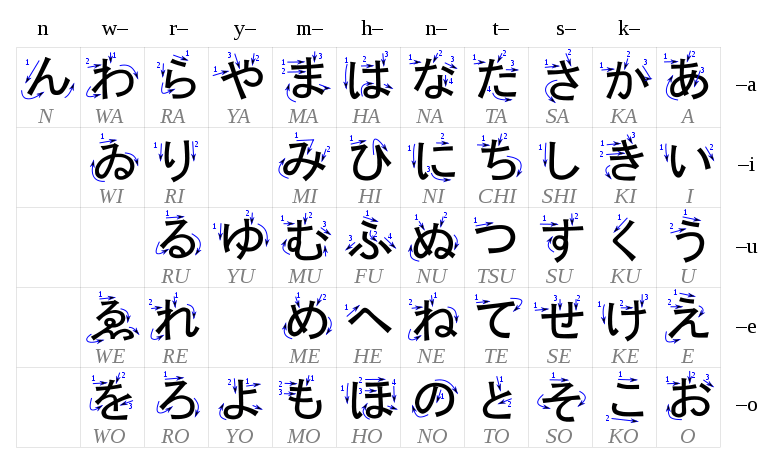
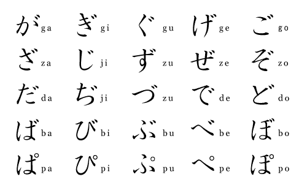
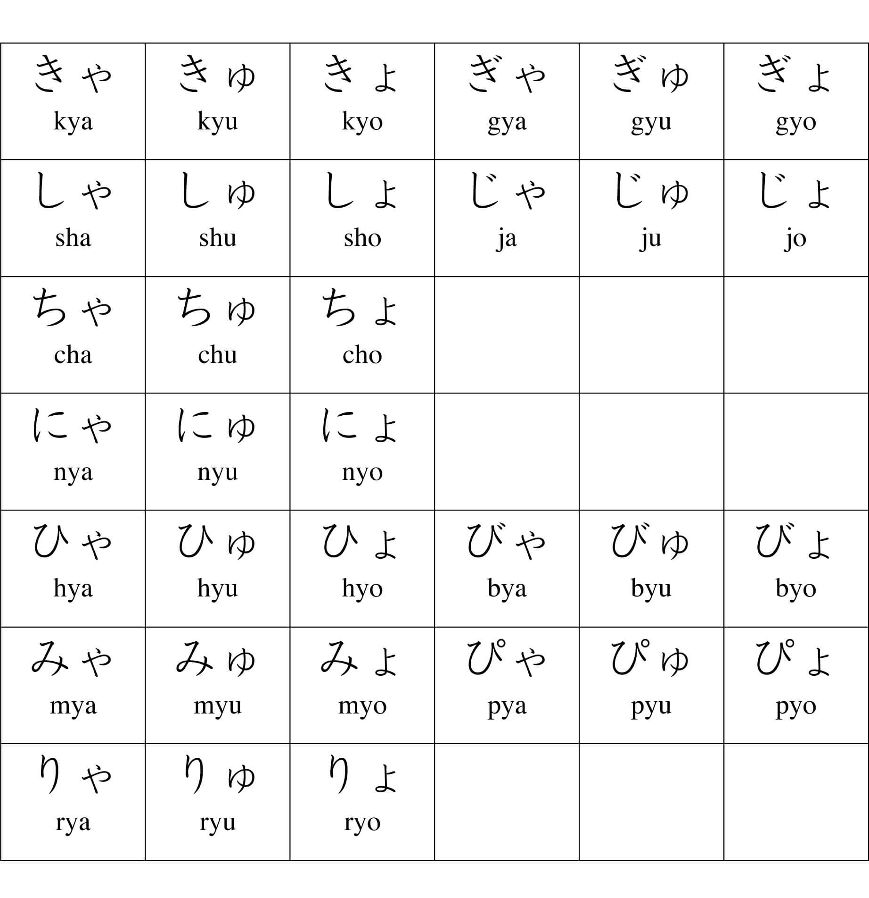
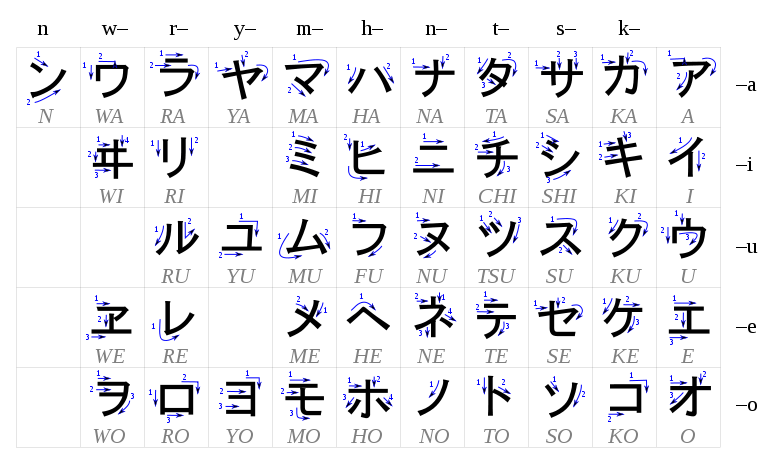
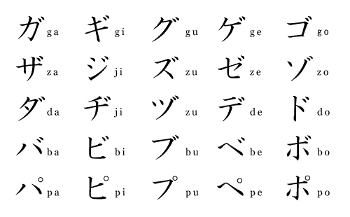
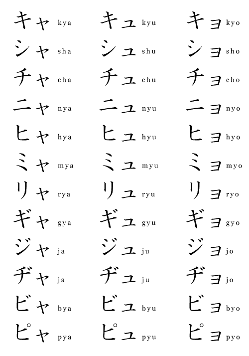
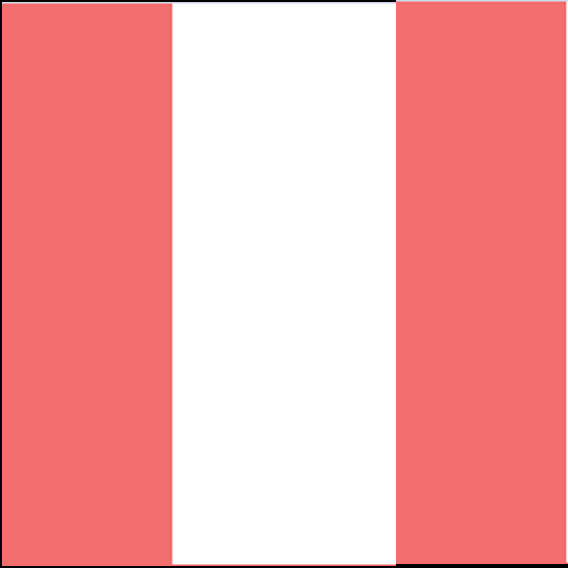
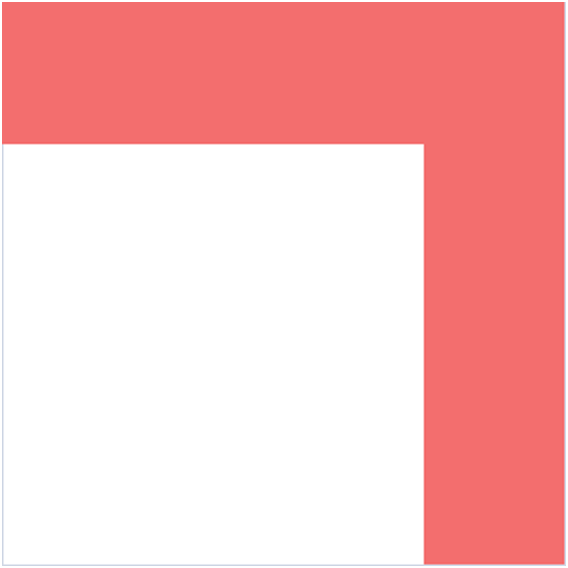
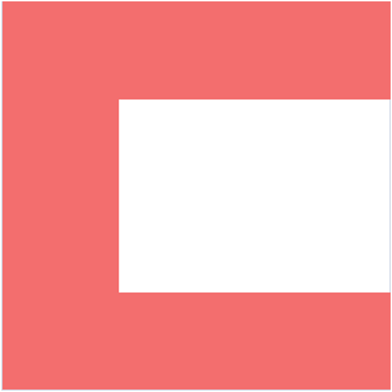
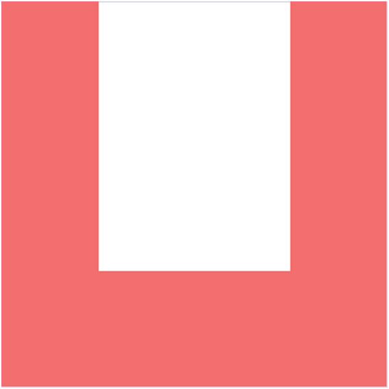

ホーム → 文法 → imabi → imabi beginners 1
With the first installation of IMABI, you will go from zero Japanese to knowing quite a bit about the basics. Content is neatly split up into bite-sized yet accurate depictions of various grammar points that you will absolutely need to foot yourself firmly into the language.
The material found here is presented in a linguistic yet easy to understand approach that does not cut corners while addressing things in a way that is still not overwhelming. You can trust that this section will become easier and easier over time. Remember, it won't hurt to read things over once or twice when you're stumped! Good luck! Or as the Japanese would say, gambatte kudasai!
初級
第2課: Pronunciation II: Consonants
第5課: Kana III: Long Vowels, Double Consonants, & Yotsugana
第6課: Introduction to Kanji 漢字 I
第?課: Introduction to Kanji 漢字 II
第9課: Copular Sentences I: Plain Speech
第10課: Copular Sentences II: Polite Speech
第11課: The Particle Ga が I: The Subject Marker Ga が
第12課: The Particle Wa は I: The Topic/Contrast Marker Wa は
第13課: Adjectives I: 形容詞 Keiyōshi
第14課: Adjectives II: 形容動詞 Keiyōdōshi
第16課: Regular Verbs I: 一段 Ichidan Verbs
第17課: Regular Verbs II: 五段 Godan Verbs
第18課: The Irregular Verbs Suru & Kuru: する & 来る
第20課: The Particle Ka か II: With the Negative
第21課: The Particle Ga が II: The Object Marker Ga が
第23課: Kosoado こそあど I: This & That: Kore/Kono これ・この, Sore/Sono それ・その, & Are/Ano あれ・あの
第24課: Kosoado こそあど II: Here & There: Koko ここ, Soko そこ, & Asoko あそこ
第??課: Yes Phrases: Hai はい, Hā はあ, Ē ええ, & Un うん
第??課: No Phrases: いいえ, いえ, いや, 否, & ううん
第??課: Expressions of Gratitude
第27課: Numbers I: Sino-Japanese Numbers
第28課: Counters I: 円, 冊, 課, 人, 名, 歩, 枚, ページ, 頭, 匹, 足, 台, 階, 歳, & 杯
第34課: The Particle Te: て II: Final Particle
第39課: Countries, Nationalities, & Languages
第42課: Kosoado こそあど III: Kochira こちら, Sochira そちら, & Achira あちら
第44課: The Particle Ka か III: Indirect Question
第49課: Adverbs II: From Adjectives
Japanese is an amazing language that attracts millions of people. Learning how to speak it is no easy task, but the first thing we'll study is how to pronounce it. First off, we will learn about the vowel sounds.
| /a/ | /i/ | /u/ | /e/ | /o/ |
| Katana | Ninja | Sushi | Edamame | Miso |
| Manga | Hibachi | Tanuki | Sake | Koi |
| Tanka | Shiitake | Fugu | Kamikaze | Emoji |
| Karate | Yakitori | Shabu-shabu | Ikebana | Udon |
| Wasabi | Sashimi | Kombu | Zen | Soba |
| V | CV | C |
| A (ah) | Ka (mosquito) | Ka.n (can) |
| I (stomach) | Ni (two) | Ki.n (gold) |
| U (cormorant) | Su (vinegar) | U.n (good fortune) |
| E (picture) | Me (eye) | Me.n (noodles) |
| O (tail) | Ko (child) | To.n (ton) |
In Standard Japanese--the form of the language any Japanese speaker will understand and the form that you are beginning to learn--there is what is called a pitch accent system. Every mora of a phrase is assigned a pitch. This assigned pitch may either be high or low. In a full sentence, you will hear pitch go up and down as phrases are strung together.
Stress in English
Proper pitch in Japanese is not necessary for pronunciation. In theory, you could still be understood even if you were to mess up the pitch of every mora. Having correct pitch, however, will make your speech sound more native-like, and in turn, easier to understand.
In English, syllables acoustically have both pitch alternation and different degrees of emphasis in enunciation, which is known as stress. This is in contrast with Japanese which only has pitch alternation, causing Japanese to sound monotone to the English ear. Theoretically, it is similarly the case in English that a speaker could be understood even if the stress of every word were placed on the wrong syllable.
This is not to say that stress allocation never changes the meaning of words in English. In fact, there are some rather systematic ways in which this is true. As examples of this, below are three words that differ in part of speech as well as subsequently in meaning due to the placement of pitch. In the left-hand column, the words are understood as nouns due to stress being placed on the first syllable. In the right-hand column, the words are understood as verbs due to stress being placed on the second syllable.
| 1st-Syllable Stress | Meaning | 2nd-Syllable Stress | Meaning |
| ADD-ict | A person who is addicted to a particular substance. | add-ICT | To cause to become dependent. |
| OB-ject | A thing. | ob-JECT | To state disagreement. |
| RE-cord | To make a record. | re-CORD | To set down. |
Despite many such words existing in English, it would be wrong to claim that pronouncing the majority of words with the wrong accent would result in a different word or non-word. For instance, if you were to pronounce the word "English" with the stress on the second syllable instead of on the first syllable, any native speaker should still be able to recognize the word and understand you.
Just as is the case with various English accents, pitch accent will differ based on where a person is from. So, although it's important to understand the basic framework of pitch in Japanese, and although you will be exposed to the pitch contours of many phrases as you progress through this curriculum, don't let this hamper your studies if the minute details of pronunciation become overwhelming.
Pitch Accent in Standard Japanese
In Standard Japanese, there are four kinds of pitch contours that a phrase can have. Regardless of how short or long a phrase is, the pitch contour will always be one of the four patterns with no exceptions. This predictability will allow you to quickly pick up on how Japanese should sound, and in turn, it may help you more quickly acquire the system as a whole.
Think of an entire sentence as being a pitch roller coaster. Every mora isn't an individual ride with its own loops and turns. Rather, a mora is only one loop of the ride--nothing more. You must put the loops (morae) together so that the segments (phrases) of the ride come together to make a complete ride. Lastly, the loops that make up the ride only come in 4 varieties.
In the chart below, each of the four pitch patterns are laid out. In the far-right column, you will find an example word for each pattern. All four examples happen to be homophonous (sound the same), only differing in pitch. This is to demonstrate that, though not a widespread phenomenon, phrases are still occasionally distinguished with pitch accent.
"L" and "H" stand for "low-pitch mora" and "high-pitch mora", both standing for one mora each. This means that H-L stands for two morae, H-L-L stands for three morae, etc. As a reminder of this, a mora-count is placed after each such contour notation.
Sometimes, a single word is not the only component to a phrase. Most phrases are made with one word along with an add-on that attaches to it, and it is the resultant combination that is treated as a "phrase." This is important to understand because pitch allocation is done at the phrasal level, NOT the individual word level. As such, "L" and "H" are seen in parentheses to indicate what the pitch accent of a phrase would continue to be if it were made longer.
| 1 | Pitch is high for the first mora, drops on the second mora, and stays low for any remaining morae that follow. Ex. H(-L) ①, H-L(-L) ②, H-L-L(-L) ③, H-L-L-L(-L) ④ |
hashì (chopsticks) |
| 2 | Pitch starts low on the first mora, peaks at high pitch on the middle mora(e), drops back to low pitch for any following morae of the word. Ex. L-H-L ③, L-H-H-L ④ |
hanasu (to speak) |
| 3 | Pitch starts low on the first mora, peaks at high pitch on the last mora, and then drops to low pitch on any morae that follow the word. Ex. L-H-(L) ②, L-H-H(-L) ③ |
hashi↓ (bridge) |
| 4 | Pitch starts low on the first mora, becomes high pitch on the second mora, and then the pitch stays high even once the word is over unto anything that follows. Ex. L(-H) ①, L-H(-H) ②, L-H-H(-H) ③, L-H-H-H(-H) ④ |
hashi (edge) |
As mentioned earlier, there are only five vowels in Japanese: /a/, /i/, /u/, /e/, and /o/. Below you will see how the five vowels of Japanese are roughly pronounced. The vowels are pronounced clearly and sharply like the American English approximates provided. However, it cannot be stressed enough that these are approximates.
| A | Like the "a" sound in the word "buy." | Ta↓ (field) |
| I | Like the "i" in "police." | Ki↓ (tree) |
| U | Like the "oo" in "mood." Compress your lips without protruding them. | Uta↓ (song) |
| E | Like the "e" in "set." | Ike↓ (pond) |
| O | Like the "o" in "oh." | Oka (hill) |
Although the chart says that /u/ is like the "oo" in the word "mood," this isn't quite accurate. In fact, there is no form of English that has the /u/ found in Standard Japanese. However, by compressing your lips rather than protruding them forward, the resulting /u/ will be something like the one in Japanese.
Although the other vowels are almost identical to the ones found in American English, the Japanese /a/ actually only shows up in diphthongs in American English. A diphthong is when two vowels blend together to form a complex vowel sound. You start off pronouncing one vowel sound, but at the end it sounds like something else. For example, the vowel sound in the word "height" is an example of a diphthong, and the onset of this word is exactly how the Japanese /a/ is pronounced.
Juxtaposed Vowels
In English, complex vowel sounds called diphthongs are created by beginning a vowel sound with one quality but ending it with another. For instance, in the word "kite," the vowel starts out as "a" but ends as "i." The opposite of a diphthong is a monophthong, which is a vowel whose quality doesn't change during its pronunciation. This is what all vowels in Japanese are thought to intrinsically be.
In Japanese, diphthongs are said not to exist because of how the moraic structure of the language dictates how sounds are organized. Instead of treating a word like hai (yes) as one syllable, you treat it as two morae: /ha/ + /i/.
Acoustically, juxtaposed vowels do slightly blend together. However, native speakers still conceptualize them as two separate entities. This is because pitch can fall or rise without needing an intervening consonant. Even in words just composed of vowels, pitch contours cannot be ignored, as is demonstrated below.
| Love/indigo |
Ai | To meet | Au | Ue↓ |
Starvation |
| Fish |
Uo | Blue | Ao | Ue | Above |
| Nephew | Oi | Hey! | Oi | Iu | To say |
Exception Note: The word iu is pronounced as /yuu/. Exceptions like this, though, are few and far between in Japanese.
In Japanese, short vowels are distinguished from long vowels. A short vowel is a vowel utterance equal to one mora in length. If a vowel is elongated to take up two morae, it becomes a long vowel. Pitch can consequently rise or drop inside long vowels because they're treated as two morae.
Consequently, vowel length contrasts thousands and thousands of words. Mistakes at the beginning are inevitable, but recognizing distinctions like this now will spare you a lot of potential heartache.
| Short /a/ | Obasan (aunt) | Long /a/ | Obaasan (grandma) |
| Short /i/ | Ie↓ (house) | Long /i/ | Iie (no) |
| Short /u/ | Yuki↓ (snow) |
Long /u/ | Yuuki (courage) |
| Short /e/ | E↓ (painting) | Long /e/ | Ee (yes) |
| Short /o/ | To (door) | Long /o/ | Too (ten things) |
Pronunciation Note: Do not pronounce "oo" as a long /u/ sound. This is incorrect!
False Long Vowels
What makes a long vowel truly a long vowel and not just the same vowel next to each other is there being nothing that obstructs the pronunciation of the vowel as it spans two morae. In both English and Japanese, the pronunciations of vowels begin with glottal stops. Whenever you say the phrase "uh-oh", you should feel an audible release of air after completely stopping airflow from the glottis (Adam's apple) at the start of "uh" and "oh."
In Japanese, long vowels are always contained in a single element of a word. If one element of a word only ends in the same vowel as the first sound in the following part of the word, the vowel of that second element will begin with a glottal stop like any other word-initial vowel sound. This glottal stop insertion also helps determine the pitch of the phrase.
Transcription Note: In the words below, to show where elements of a word begin and end, periods will be inserted to indicate these boundaries.
| Scene | Shiin | Consonant/Cause of death | Shi.in |
Trivia Note: Vowels are called boin in Japanese.
The Pronunciation of "Ei": [ei] or [ē]
In Japanese, the vowel combination "ei" is usually pronounced as a long /e/ (ē). All such words come from Chinese roots. Because this sound change is technically optional, you don't have to worry so much about whether to pronounce an "ei" as [ei] or [ē]. After all, we haven't even learned about what exactly words made from Chinese roots look like. For this lesson, alternative pronunciations of a word are listed for you.
Transcription Notes:
1. Long /e/ are written as "ee" so that pitch contours can be designated. However, do not be confused by this spelling and pronounce "ee" as a long "i" sound.
2. To show where elements of a word begin and end, periods will be inserted to indicate these boundaries. "Ei" can only be pronounced as [ē] if it's within the same element of a word, so these boundaries are very important.
3. If a word is not derived from Chinese roots, /ei/ is always pronounced as [ei].
| Plan | Kei.kaku Kee.kaku |
Student | Sei.to See.to |
Stingray | Ei |
| English | Ei.go Ee.go |
Native | Neitibu | Cellphone | Kei.tai Kee.tai |
| Management | Keiei Kee.ee |
Clock | To.kei | Correct answer | Sei.kai See.kai |
| Proclamation | Sei.mei See.mee |
Process | Kei.ro Kee.ro |
Hair color | Ke.iro |
The Pronunciation of "Ou": [ou] or [ō]?
In Japanese, the vowel combination "ou" is usually pronounced as a long /o/ (ō). Most such words come from Chinese roots, but this is not always the case. This sound change, unlike the one above, is not optional for the words it affects.
Knowing which words are and aren't affected by this sound change is a luxury that comes about from knowing a lot about word origins. For this lesson and the next, any word in which a word that would be spelled as "ou" but is instead pronounced as a long /o/ will be spelled as "oo." This means if you do see "ou," you should pronounce it literally as such. Try not to read "oo" as a long "u" sound because this is incorrect.
Transcription Note: To show where elements of a word begin and end, periods will be inserted to indicate these boundaries.
| Already | Moo | King | Oo | Method | Hoo.hoo |
| To think | Omo.u | Large | Ookii | Calf | Ko.ushi |
| Action | Koo.doo | Robbery | Goo.too | Sauce | Soosu |
The majority of words in Japanese are made by combining consonants and vowels. What was not discussed was how the consonants of Japanese sound and differ with those found in English.
Just as there are consonants in English that don't exist in Japanese, there are also consonants in Japanese that don't exist in English. Furthermore, the consonants that Japanese shares with English need not be pronounced exactly the same. In fact, it's safe to assume that all consonants are slightly different in their own unique ways.
To fully grasp how consonants are pronounced, some technical terminology will need to be learned. However, just as was the case in the previous lesson, such terminology will always be accompanied with an explanation on its initial use.
Transcription Note: Japanese words introduced in this lesson will be written in Romaji (English letters). Additionally, morae with high pitch will be put in bold, and subsequent pitch drops will be marked with ↓. To understand why these conventions are used, refer back to Lesson 1.
In Lesson 1, we briefly learned that a consonant is a speech sound that involves obstructing airflow from the lungs in some way. Japanese has fewer consonants than English, but this doesn't mean the ones it has are all easy to acquire and pronounce for English speakers. First, we need to learn what constitutes a consonant. How do we know something is a distinct consonant and not just a variation of the same thing? Because these distinctions aren't the same across languages, we'll need to understand the answers to these questions to know how to pronounce Japanese properly.
What is a Phoneme?
Two sounds are considered contrastive if interchanging the two can cause a change in meaning. If two sounds can contrast each other, they are treated as phonemes of the language.
To demonstrate what this looks like in English, consider the consonants /b/ and /p/. These consonants are distinct phonemes of English. This can be proven by numerous minimal pairs in which the difference between /b/ and /p/ is the only factor that tells the words apart.
| /b/ | /p/ |
| Bit | Pit |
| Ban | Pan |
| Tab | Tap |
As demonstrated by the words above, a minimal pair is simply two (or more) words that differ only by a single sound in the same position that have different meanings.
What is an Allophone?
In both English and Japanese, there are phonetically (acoustically) different sounds that are treated as the same phoneme. For instance, consider the pronunciation of the consonant /t/ in English. Have you ever noticed that the "t" in "top" and the "t" in "stop" are not pronounced the same? If you're a native speaker of English and pronounce "top" with a hand in front of your mouth, you'll feel a puff of air hit your hand. This is called aspiration. If you pronounce "stop" likewise, you shouldn't feel that puff of air hit your hand. This means that English has both an aspirated and non-aspirated version of /t/, and both are treated as the same sound. These different versions of a single phoneme are called allophones.
| Aspirated /t/ | Non-Aspirated /t/ |
| Team | Steam |
| Toll | Stole |
| Tray | Stray |
This distinction between aspirated and non-aspirated /t/ does not change the meaning of a word in English. Although they are in complementary distribution with each other--allophones that don't occur in the same location in a word--a speaker could theoretically replace one for the other and be understood. It is because they cannot appear in the same location of a word that makes it impossible for them to contrast words with each other.
There are also instances in both English and Japanese where the same consonant could be pronounced differently in the same location of a word without changing the meaning. This is called free variation. Think of the word "data." Some people pronounce the first "a" like the "a" in "cat" whereas others pronounce it like the "a" in "date." Neither group is wrong. It's just that the pronunciation of the vowel is in free variation between those two pronunciations.
Phoneme vs. Allophone is Language Specific
What counts as a phoneme or allophones of the same phoneme differs from language to language. It is also possible for a sound to be treated as an allophone of another in one environment but be treated as a separate phoneme in other environments, all within the same language. Although knowing this may seem trivial, the reason for why you should understand what these terms are is because of the fact that languages are all not the same in how they treat sounds. If you are a native speaker of language(s) other than English, you will have different yet just as problematic difficulties in distinguishing certain Japanese sounds if in fact they aren't differentiated in your own language(s).
Transcription Note: Just as in Lesson 1, phonemes will be placed in // whereas allophones will be placed in [].
The Phonemes of Japanese
At the phonemic level, Japanese can be said to have at least 16 distinct consonant phonemes depending on how one likes to divvy things up.
| /k/ | /g/ | /s/ | /sh/ | /t/ | /ch/ | /n/ | /h/ |
| /f/ | /b/ | /p/ | /m/ | /r/ | /y/ | /w/ | /N/ |
The chart above shows all the distinct phonemes of Japanese. However, it is important to understand now that these are not all the possible sounds of Japanese because some of them have allophones and some of them happen to be allophones of other phonemes listed in the chart.
For the rest of this lesson, we'll learn exactly how to pronounce each of these consonants based on intrinsic features to their pronunciation. Because Japanese pronunciation isn't complicated aside from having features that may not be shared in the languages you speak, there should be no worries about having to memorize tons of variant pronunciations.
Most consonants come in pairs. For instance, /k/ and /g/ are both made in the exact same place in the mouth. The only difference is that pronouncing /g/ causes the vocal folds of the mouth to vibrate whereas /k/ does not. Consonants that do not cause the vocal folds to vibrate are called unvoiced consonants, and consonants that do cause the vocal folds to vibrate are called voiced consonants. Voicing is a seen across many languages to make such consonant pairs like /k/ and /g/.
Examples of unvoiced consonants in English include /k/, /s/, /t/, /h/, and /p/. These consonants alone are seen in thousands of words. Although English has more unvoiced consonants, these are the basic ones it shares with Japanese.
| /k/ | /s/ | /t/ | /h/ | /p/ |
| Kite | Seek | Tea | Hat | Pie |
| Key | Sit | Take | Heat | Peak |
| Case | Say | Toe | Host | Pay |
In English, unvoiced consonants are typically pronounced with aspiration. In Japanese, unvoiced consonants tend to be slightly more aspirated than they are in languages like Spanish but not nearly as so as in English or Korean.
The Unvoiced Consonants of Japanese
The basic unvoiced consonants of Japanese, as mentioned above, are /k/, /s/, /t/, /h/, and /p/. Overall, these consonants are less aspirated than their English counterparts. Other differences exist, of course, which is why each consonant will be introduced individually.
Pronouncing /k/
Just as is the case in English, /k/ is made by placing the back of the tongue against the soft palate in the back of the mouth.
| Kuki↓ | Kaki | Oyster | Keika | Progress |
Pronouncing /t/
/t/ is made by placing the blade of the tongue behind the upper teeth. When the vowel /u/ follows /t/, it becomes [ts]. This is an example of an allophone. An allophone is a variation of the same consonant in the confines of a particular language. This [ts] is the same as the /ts/ consonant cluster found in words like "its" in English. Unlike English, you must never drop the "t" in [ts] in Japanese. This means that "tsunami" is pronounced as /tsu.na.mi/.
Additionally, /t/ becomes [ch] when followed by the vowel /i/. However, the [ch] in Japanese is not like the "ch" in "chair." The Japanese [ch] is produced by first stopping air flow and then placing the blade of the tongue right behind the gum line while the middle of the tongue touches the hard palate of the mouth.
| Take | Bamboo | Tochi | Land | Tsuki↓ | Moon |
Pronouncing /s/
The consonant /s/ is pronounced just like it is in English, but it becomes [sh] when followed by /i/. When pronouncing [sh], the middle of the tongue is bowed and raised towards the hard palate of the mouth. Note that [sh] is made not as farther back in the mouth as is the case in English.
| Isu | Chair | Keisatsu | Police | Shiitsu | (Bed) sheet(s) |
Pronouncing /h/ & /p/
/p/ is known as a plosive sound. It is made by releasing air upon opening one's lips. In Japanese, it isn't all that common because most words with /p/ come from other languages.
Both /p/ and /h/ are pronounced the same as in English, but /h/ has two allophones. When followed by /i/, /h/ sounds most like the "h" in "hue." When followed by /u/, it becomes [f]. The Japanese [f], though, is created by bringing the lips together and blowing air through them without using the teeth.
| Hako | Box | Hifu | Skin | Futsuu | Ordinary | Penki | Paint |
More Example Words
| Asa | Morning | Te↓ | Hand(s) | Koko | Here | Sake | Alcohol |
| Ashi↓ | Foot/leg | Shiai | Match/game | Pasupooto | Passport | Sake | Salmon |
| Katsu | To win | Tsuaa | Tour | Aka | Red | Pai | Pie/pi |
| Ka↑ | Mosquito | Suutsu | Suit | Soto | Outside | Tsuchi↓ | Dirt/earth |
| Ase | Sweat | Satoo | Sugar | Tako | Octopus/kite | Chika | Underground |
| Kako | Past | Heishi | Soldier | Hoshi | Star | Kutsu↓ | Shoes |
| Hi↓ | Fire/day | Kotatsu | Kotatsu | Tsukau | To use | Kasa | Umbrella |
Vowel Devoicing
When the vowels /i/ and /u/ are in between and/or after unvoiced consonants--/k/, /t/, /s/, /h/, and /p/ along with their respective allophones--they often become devoiced (silent). Devoicing is a very distinctive feature of Standard Japanese pronunciation.
As an example, the phrase for "good morning" sounds like "o-ha-yo-o go-za-i-ma-s". However, it is important to note that many speakers, especially those that don't come from East Japan, do not devoice vowels.
Devoicing is never required in a word. In fact, even when a vowel could be devoiced, it doesn't mean it will. There's significant speaker variation. One thing that is certain, however, is that devoicing should not under normal circumstances occur between and/or after voiced consonants.
Practice: Pronounce the words below with the underlined vowels devoiced.
Kushami (Sneeze)Tafu (Tough)Hito(↓) (Person)
The unvoiced consonants and their allophones mentioned above all have a voiced consonant counterpart. For every voiced consonant, its pronunciation is the same as its unvoiced counterpart minus voicing.
| Unvoiced Counterpart | Voiced Counterpart |
| /k/ | /g/ |
| /s/ | /z/~[dz] |
| /sh/ | /j/ |
| /t/ | /d/ |
| [ts] | [dz] |
| [ch] | [dj] |
| /h/ (and allophones) | /b/ |
| /p/ | /b/ |
There are a few peculiarities that need to be discussed. However, before going into too much detail, /j/ and /dj/ will be mentioned later in this lesson.
1. /z/ typically becomes [dz] at the start of words. /dz/ tends to become [z] inside words, but this isn't always so. /z/ sounds like the "z" in "zoo," whereas /dz/ sounds like the "ds" in "kids." However, it is important to note that many speakers cannot tell the difference between the two sounds.
2. /h/, its allophones, and /p/ correspond with /b/. /b/ is made by bringing the lips together and then releasing them. This means its articulation is the same as /p/ but not as /h/.
3. /g/ can be pronounced as /ng/ inside words. This pronunciation is particularly common in the north and east of Japan.
Try pronouncing the following example words.
| Sokudo | Speed | Baka | Idiot | Zutsuu | Headache |
| Tsu(d)zuki | Continuance | Kaze | Wind | Deeto | A date |
| Kazu | Number | Kage | Shadow | Gitaa | Guitar |
| Bataa | Butter | Toge↓ | Thorn | Doku↓ | Poison |
More Voiced Consonants
There are also voiced consonants that do not have unvoiced counterparts. These sounds are listed in the chart below.
| [n] | Made with the blade of the tongue on the back of the upper teeth with /a/, /e/, and /o/, behind the ridge of the mouth with /i/ (like in news), and behind the teeth with /u/ (like in noon). |
| [m] | Pronounced by bringing the two lips together just as in English. |
| [r] | Its pronunciation varies drastically. It is typically pronounced as a flap, which is only seen in American English as the "t" in many words such as "water." At the beginning of a word, it sounds almost like /d/. Sometimes it's pronounced as a trill or like /l/. |
| [y] | Pronounced the same in English by bringing the tongue up to the hard palate. This means it is a palatal consonant. |
| [w] | Its pronunciation is very similar to the Japanese /u/. Rather than protruding your lips, you compress them. It is only used with the vowels /a/ and /o/, but its use with /o/ won't even become important until later on in your studies. |
The differences in pronunciation detailed above make Japanese sound significantly different from English. Many sounds tend to be closer to the teeth, which is the case for [n] and [r], and movement of the tongue and parts of the mouth are more limited in range. To practice pronouncing these consonants, try saying the following words out loud.
| Fune | Boat | Neko | Cat | Mune↓ | Chest |
| Yowai | Weak | Yakusoku | Promise | Kawa↓ | River |
| Mura↓ | Village | Umi | Sea | Tana | Shelf |
| Kami | God | Kami | Hair/paper | Yubi↓ | Finger |
| Wana | Trap | Karada | Body | Rei | Example/zero |
Palatal consonants are made by the body of the tongue touching against the hard palate of the mouth. In Japanese, these consonants are usually limited to the vowels /a/, /u/, and /o/, and they're all created with the help of the consonant /y/. First, we'll look at those palatal consonants shown below in the chart.
| Consonant | C + /a/ | C + /u/ | C + /o/ |
| /y/ | /ya/ | /yu/ | /yo/ |
| /ky/ | /kya/ | /kyu/ | /kyo/ |
| /gy/ | /gya/ | /gyu/ | /gyo/ |
| /ny/ | /nya/ | /nyu/ | /nyo/ |
| /hy/ | /hya/ | /hyu/ | /hyo/ |
| /py/ | /pya/ | /pyu/ | /pyo/ |
| /by/ | /bya/ | /byu/ | /byo/ |
| /my/ | /mya/ | /myu/ | /myo/ |
| /ry/ | /rya/ | /ryu/ | /ryo/ |
Terminology Note: Palatal consonants are all semi-voiced due to the use of /y/ following the initial consonant. The voicing of the initial consonant doesn't change. Thus, /gy/ would be fully voiced whereas /ky/ would not be voiced initially but become voiced by the end of the consonant. Here, /y/ acts more like a semi-vowel more so than another consonant, which is why none of these palatal consonants are treated as consonant clusters. Instead, they can be viewed as more additional phonemes in the language.
Usage Note: In loan-words, these consonants may be used with other vowels.
Most of these combination are very common in Japanese. They are most frequently found in words that come from Chinese. Below are some examples.
| Hyoo | Vote | Kyaku | Customer | Kyuu | Nine |
| Myoo | Weird | Hyaku↓ | 100 | Kyoo | Today |
| Myaku | Pulse | Ryuu | Dragon | Byooki | Illness |
| Gyaku | Reverse | Ryoo | Quantity | Ryaku | Abbreviation |
Other Palatal Consonants
The remaining palatal sounds that have yet to be looked at are /sh/, /ch/ and /(d)j/.
As we learned earlier, [sh] and [ch] are allophones of /s/ and /t/ respectively. They can also be treated as separate phonemes. This is because all five vowels can follow them, allowing them to become contrastive.
The voiced counterpart for both /sh/ and /ch/ is /(d)j/. This phoneme /(d)j/ has two allophones: [dj] and [j]. The former sounds like the j-sound in "judge," and the latter sounds like the j-sound in "seizure." Many speakers pronounce this phoneme as [dj] whenever it appears at the start of a word or after another consonant but as [j] anywhere else. Others only use the [dj] pronunciation.
| Shuu | Week | Kaisha | Company | Ocha | Tea |
| Choosa | Investigation | Chero | Cello | Shefu | Chef |
| Shooko | Proof | Shima↓ | Island | Jiko | Accident |
| Kaji | Housework/fire | Jookyoo | Situation | Jukyoo | Confucianism |
Consonants may be lengthened in Japanese just like vowels. When you make a long consonant, the sound is perceived as sounding harder. The length of time you use to pronounce it increases from one mora to somewhere in between one and two morae. However, speakers conceptualize long consonants as being two morae.
The consonants that are typically doubled in Japanese are non-voiced consonants. These consonants include /p/, /k/, /t/, /s/, /sh/, /ch/, and /ts/. As far as transcribing them is concerned, they will be written as /pp/, /kk, /tt/, /ss/, /ssh/, /tch/, and /tts/ respectively.
| Shippai | Failure | Matchi | A match | Yokka | Four days | Zasshi | Magazine |
| Happa | Leaf/leaves | Kokka | Nation | Shuppatsu | Departure | Hassoo | Conception |
| Kassooro | Runway | Satchi | Inferring | Sakka | Author | Sakkaa | Soccer |
Usage Note: Voiced consonants are only voiced in a handful of loanwords from other languages, but even then they're usually pronounced as their long unvoiced counterparts.
There is a special voiced consonant in Japanese called the "moraic nasal." It counts as a mora on its own. Although usually transcribed as an "n," its pronunciation varies depending on the environment.
In its basic understanding, it is what's called a uvular "n" that is best transcribed as /N/. The uvula is back in the mouth, but when you pronounce it, the mouth constricts as if you were producing a regular /n/, which makes it sound more like the /n/ you're used to hearing but not quite.
This sound has a lot of allophones because it assimilates (becomes more similar) with the sound that follows. Because things can get quite complicated, we'll go over each situation separately with plenty of examples along the way. In Standard Japanese, this sound can't start words, but it is still quite complicated.
When /N/ is before a /p/, /b/, or /m/, it becomes [m]. This means that /m/ can in fact be a doubled with the aid of /N/.
| Sampo | A walk | Shimpai | Worry | Kampeki | Perfect |
| Bimboo | Destitute | Kambu | Executive | Sembei | Rice cracker |
| Sammyaku | Mountain range | Tammatsu | Device | Chimmi | Delicacy |
| Sontoku | Loss and gain | Sentaku | Choice/laundry | Kantoo | The Kanto Region |
| Kondate | Menu | Shindai | Bed | Kandoo | Impression |
| Minna↓ | Everyone | Tennai | Inside store | Tennoo | Emperor |
| Shinrai | Faith | Kanri | Management | Shinri | Mentality |
| Shinka | Evolution | Kankaku | Feeling | Sanka | Participation |
| Kingyo | Gold fish | Kango | Sino-Japanese word | Kangae | Idea |
| Shinchuu | Brass | Tanchiki | Detector | Sanchoo | Summit |
| Kanja | Patient | Tanjoobi | Birthday | Shinjuku | Shinjuku |
Transcription Note: Typically, /dj/ is spelled as "j" since /j/ is largely pronounced as [dj].
When before vowels, /y/, /w/, /s/, /sh/, /z/, /h/, and /f/, /N/ sounds like a nasal vowel from the back of the mouth. At any rate, the vowel before /N/ is always nasalized, but when /N/ is followed by a vowel, all you may hear is a really nasal vowel and then the following vowel. Typically, this /N/ is usually just a very nasal ũ. Although this is usually spelled as "n" for simplicity, it'll be spelled as "ũ" below.
| Taũ'i | Unit | Koũwaku | Perplexity | Deũsha | Train |
| Kaũzei | Tariff | Kiũyuu | Finance | Kaũsai | The Kansai Region |
Pronunciation Notes:
1. When before /z/, some speakers pronounced /N/ as [n].
2. /Deũsha/ may also be pronounced as [deũsha].
At the end of words, /N/'s default pronunciation is [N]. However, there are plenty of speakers that pronounce it like a nasal vowel as seen above in this position. In singing, it will even be pronounced as [m]. This is actually true for any instance of /N/ in singing. For the purpose of this section, [N] will be written below as "N."
| NihoN | Japan | KaN | Can | HoN | Book |
Japanese is written with a mixed script composed of several parts. Of these are two systems called Kana. These systems spell words moraically. These means that, unlike an alphabet, every symbol will stand for a mora. Thus, a symbol may stand either for a "consonant + vowel" (CV), a "vowel" (V), or a "consonant" (C).
The two Kana systems are called Hiragana and Katakana. Because there are many symbols and rules to learn per system, we will first study Hiragana. Then, in Lesson 3 we'll learn the symbols of Katakana. After we've covered both sets, we'll learn about Kanji, which are Chinese characters used in Japanese writing.
Curriculum Note: Just as has been the case for the past two lessons, pitch notes will be provided for the vocabulary used. High pitch is designated as text in bold. Pitch falls are noted with a ↓.
Kana represent the morae of Japanese. As we learned in Lesson 1, a mora is an equal time unit of speech. Kana can be organized into a chart called the Gojūonzu, which means the table of 50 sounds. Although it doesn't actually have 50 sounds in it, they are deemed to be the most basic sound combinations in Japanese, which are called seion.
Each Kana system has its own set of symbols. That means once you have mastered the Hiragana symbols below, you'll have to prepare yourself to learn an entirely different set for the same sound combinations. As tedious as this might seem, the two systems are used differently. The most important and most used system is Hiragana, which is why it is being introduced to you first.
HIRAGANA
The basic symbols of Hiragana, as stated above, are organized into a chart called the Gojūonzu. This chart is shown below with each basic symbol. Notice how the chart is organized. Stoke orders are listed, and all the allophones of sounds we learned in the previous lesson are shown in their respective columns.

Curriculum Note: Print this sheet out and have it at hand as we continue onward.
Usage Notes:
Of these characters, all except the symbols for we and wi are actually used. These two characters live on only in names, place names, and old literature. Because there is the chance you will encounter them, when you do see them, read them as "e" and "i" respectively as the "w" has dropped from their actual pronunciations. This is largely why the symbols are no longer seen today.
Similarly, the symbol for wo is usually pronounced by "o" by most speakers. However, the traditional pronunciation "wo" is still heard depending on personal preference, dialect, as well as occasion. For instance, in music, singers tend to be conservative in pronunciation. This is also the case when people slow down their speech to purposefully enunciate every sound clearly.
Of these characters, all but the symbols for we, wi, wo, and n can start words. Also, the symbol for wo is only used in names or as a grammatical word that cannot stand alone, which we will learn about later.
Handwriting Notes:
1. Write strokes from top to bottom and left to right.
2. Make sure the end of the second stroke in あ is crossing the curve of the final stroke.
3. Make sure that the final stroke in け is slightly farther down than the first.
4. For せ, the second stroke usually doesn't have a hook.
5. For い, こ, た, ふ, り, and ゆ, don't connect the strokes together.
6. For む, if you connect stroke 2 and 3, do not add another slash.
7. Make sure the stroke 3 for お is not positioned far away from the rest of the character.
8. In more proper handwriting, the last stroke in さ and き is not connected with the rest.
Examples
The best way to see if you can read Hiragana is to practice with actual words. Below is a list of 30 common words written without any aids.
| Shape | かたち | Dream | ゆめ↓ | Japan | にほん |
| Usual | ふつう | End | おわり | Promise | やくそく |
| Snow | ゆき↓ | Kitten | こねこ | Proof | あかし |
| Chair | いす | Bowl | うつわ | Plate | さら |
| Payment | しはらい | Seat | せき | Speculation | すいそく |
| Gymnasium | たいいくかん | Strength | ちから↓ | Pathway | つうろ |
| Store clerk | てんいん | Chicken meat | とりにく | Accent | なまり↓ |
| Duty | にんむ | Bypath | ぬけみち | Drink | のみもの |
| Secret | ひみつ | Star | ほし | Command | めいれい |
| Night | よる | Young person | わかもの | Bus/train line | ろせん |
Diacritics: ゛ & ゜
There are two diacritics that can be added to symbols that change the consonant of the symbol in question. These diacritics are the ゛ (dakuten/nigori↓) and the ゜ (handakuten). The first diacritic changes a consonant into a voiced consonant. A voiced consonant causes the vocal folds to vibrate. The second diacritic changes /h/ to a /p/.

When writing these characters, you write the diacritics last. It's important to note how there are two characters for /ji/ and /zu/. These symbols are not always pronounced exactly the same, but we will go into greater detail about this later.
Examples
The hardest part to mastering the diacritics will simply be remembering to use them and realizing that the pronunciation of a symbol will change because of them. For practice, below are 30 common words that utilize them.
| Number | かず | College student | だいがくせい | Key | かぎ↓ |
| Walk | さんぽ | Mountain climbing | とざん | Culture | ぶんか |
| Throat | のど | Poison | どく↓ | Yes and no | さんぴ |
| Cheers | かんぱい | Nosebleed | はなぢ | Attachment | てんぷ |
| Electricity | でんき | Potentiality | そこぢから | Hippopotamus | かば |
| Skin | はだ | Furniture | かぐ | Wall | かべ |
| Elbow | ひじ↓ | Part | ぶぶん | Whirlpool | うず |
| Continuation | つづき | Scale | きぼ | Wind | かぜ |
| Eyelash | まつげ | Crevice | ひびわれ | Tatami room | ざしき↓ |
| Mirror | かがみ↓ | Family | かぞく | Map | ちず |
Palatal Sounds
Palatal sounds are created by placing the tongue on the hard palate of the mouth. Many consonants in Japanese can be palatalized and then followed by the vowels /a/, /i/, /u/, and /o/. In the case of /i/, palatalization is an inherent part of the pronunciation of the sound combination. For instance, /ki/, /shi/, /chi/, /ni/, /mi/, /hi/, and /ri/ are all technically palatalized. This is simply part of the natural process of pronouncing them.
The way Japanese creates more sound combinations with palatalized combinations is by having /ya/, /yu/ and /yo/ follow a consonant. When this happens, new consonants are produced. In Hiragana, these combinations are created by using an i-sound symbol with a shrunken y-sound symbol--ゃ, ゅ, or ょ.

Similarly to above, there are two ways to write /ja/, /ju/, and /jo/. For now, we'll put aside how they differ in pronunciation and usage and solely focus on memorizing these glyphs. Note, though, that you will rarely see the variants that utilize ぢ.
Pronunciation-wise, the ry-sounds will be the most difficult to master as the Japanese /r/ tends to be difficult as it is for native English speakers to acquire.
Examples
Below are 30 words utilizing these glyphs to help you learn them.
| Resident | じゅうみん | Parking Injection |
ちゅうしゃ | Giant | きょじん |
| Meow-meow | にゃんにゃん | Acronym | りゃくご | Tune |
きょく |
| Seafood | ぎょかいるい | Inn | りょかん | Opposite | ぎゃく |
| 600 | ろっぴゃく↓ | Tathagata | にょらい | Studying abroad | りゅうがく |
| Cow milk | ぎゅうにゅう | Bathing | にゅうよく | Customer | きゃく |
| Concentration | しゅうちゅうりょく | Processing | しょり | Society | しゃかい |
| Touch down | ちゃくりく | Tea | おちゃ | Directly | ちょくせつ |
| Weak point | じゃくてん | Tutor | じょしゅ | Pulse | みゃく↓ |
| Teacup | ゆのみぢゃわん | Hyuga | ひゅうが | 100 | ひゃく↓ |
| Chinese | ちゅうごくご | Properly | ちゃんと | Address | じゅうしょ |
| i-sound + や・ゆ・よ | i-sound + ゃ・ゅ・ょ |
| じゆう (Freedom) | じゅう (Ten/gun) |
| りゆう (Reason) | りゅう (Dragon) |
| きゆう (Needless anxiety) | きゅう (Nine) |
| しゆう (Private ownership) | しゅう (Week/state) |
To Continue
So far, we have covered the unique glyphs that compose Hiragana. What we have not learned is how long consonants and vowels are transcribed. We have also not learned about what situations Hiragana is even used in. Both of these topics require that we first go over Katakana as comparing the two is essentially in understanding these topics properly.
Practice
Part I: Change the following words into Hiragana.
1. Kemuri (smoke)
2. Amagumo (rain cloud)
3. Uta↓ (song)
4. Sekai (world)
5. Karate(karate)
Part II: Change the following words in Hiragana into Rōmaji.
1. かのじょ （She) 2. しょだな (Bookshelf)
3. にほんご (Japanese language) 4. さかな （Fish)
5. にんげん (Human) 6. だいがく (College)
7. ひと (Person) 8. あした↓ (Tomorrow)
In the previous lesson, we learned about how Japanese is a mixed script. The previous lesson was all about learning the individual symbols of Hiragana. In this lesson, our goal will be to learn all the individual symbols for Katakana.
Hiragana and Katakana both represent the same sound combinations (morae). As such, there won't be any differences in pronunciation between an /a/ written in Hiragana and one written in Hiragana. However, the two scripts are used in different circumstances. Their rules for other aspects of spelling such as long vowel notation are also not exactly the same. For now, we will focus solely on learning the individual symbols of Katakana. As you will soon see, there are more symbols to learn in Katakana than there is for Hiragana. This means you have plenty of work ahead of you in this lesson.
Of the two Kana systems, Katakana is the least used. However, that doesn't mean it isn't used, and it doesn't mean that it isn't important to learn. One cannot properly read Japanese without knowing both systems. The two systems are still used in different ways. The way they're used also affects how complex the systems are. Katakana, as you will see, has an additional set of combinations not used in Hiragana. This means it'll take a little more effort to memorize Katakana than Hiragana. With that being said, let's begin.
KATAKANA
The basic symbols of Katakana, just as was the case with Hiragana, are organized into a chart called the Gojūonzu. This chart is shown below with each basic symbol. Just like for Hiragana, notice how the stoke orders are listed and how all the allophones of sounds we've learned about are shown in their respective columns.

Curriculum Note: Print this sheet out and have it on hand as we continue onward.
Usage Notes:
Of these characters, all of them except the symbols for we and wi are typically used. These two characters live on only in names, place names, and old literature. Because there is the chance you will encounter them, when you do see them, read them as "e" and "i" respectively as the "w" has dropped from their actual pronunciations. This is largely why the symbols are no longer seen today.
Similarly, the symbol for wo is usually pronounced by "o" by most speakers. However, the traditional pronunciation "wo" is still heard depending on personal preference, dialect, as well as occasion. For instance, in music, singers tend to be conservative in pronunciation. This is also the case when people slow down their speech to purposefully enunciate every sound clearly. Unlike in Hiragana, the Katakana symbol for wo is hardly used at all. This means you won't get many opportunities to see it actually used.
Of these characters, all but the symbols for we, wi, wo, and n can start words. The symbols for we and wi are deemed obsolete. Also, the symbol for wo is only used in names or as a grammatical word that cannot stand alone, which we will learn about later.
Handwriting Notes:
1. Write strokes from top to bottom and left to right.
2. Horizontal strokes come before vertical strokes.
3. Take especial note to the stroke orders of シ and ツ. For シ, its third stroke is irregularly written from the bottom upward, which is how you can distinguish it from ツ, which is written regularly.
4. Also take note of the stroke orders of ソ and ン. For ン, its second stroke is irregularly written from the bottom upward, which is how you can distinguish it from ソ, which is written regularly.
5. When there are horizontal strokes that span the length of the symbol, those strokes aren't first from top to bottom regardless if other strokes may start higher up. Take キ as an example.
Examples
As your first chance at reading practice, below are 60 common words that are spelled in Katakana. Although it's not necessary that you memorize them all now, you'll find that many of them are words you're already very familiar with.
| Access | アクセス | Assistant | アシスタント | ASEAN | アセアン |
| Africa | アフリカ | America | アメリカ | Aluminum | アルミ |
| Good-looking guy | イケメン | Italy | イタリア | Earbud | イヤホン |
| Air conditioning | エアコン | Eroticism | エロ | Oceania | オセアニア |
| Offline | オフライン | Cocktail | カクテル | Custom | カスタム |
| Sponge cake | カステラ | Camera | カメラ | Karaoke | カラオケ |
| Calcium | カルシウム | Mouse | マウス | Christ | キリスト |
| Classmate | クラスメイト | Christmas | クリスマス | Koala | コアラ |
| Coin | コイン | Siren | サイレン | Santa | サンタ |
| System | システム | Scenario | シナリオ | Restaurant | レストラン |
| Hormone | ホルモン | Synchronize | シンクロ | Stress | ストレス |
| Centi(meter) | センチ | Seoul | ソウル | Solo | ソロ |
| Towel | タオル | Tennis | テニス | Toilet | トイレ |
| Hotel | ホテル | Minus | マイナス | Nylon | ナイロン |
| Tomato | トマト | Ton | トン | Knife | ナイフ |
| Necktie | ネクタイ | Quota | ノルマ | Handkerchief | ハンカチ |
| Stapler | ホチキス | Marathon | マラソン | Milk | ミルク |
| Mexico | メキシコ | Moscow | モスクワ | UNESCO | ユネスコ |
| Toyota | トヨタ | Link | リンク | Lemon | レモン |
| Russia | ロシア | Request | リクエスト | Wine | ワイン |
Diacritics: ゛ & ゜
The diacritics we learned about last lesson are used in exactly the same way in Katakana. These diacritics, the These diacritics are the ゛ (dakuten/nigori↓) and the ゜ (handakuten), represent voiced consonants and the consonant /p/ respectively.

Just as was the case with Hiragana, you write the basic symbol before adding the diacritics. Additionally, there are two characters for /ji/ and /zu/. However, their pronunciations/usage aren't 100% the same. For now, focus on memorizing these symbols.
Examples
Below are 60 common words that utilize these diacritics. Although it is not necessary that you memorize them all, they are all common words that bring purpose to using Katakana as the majority of these words are solely written in Katakana.
| Advice | アドバイス | Radio | ラジオ | England | イギリス |
| Pokemon | ポケモン | Event | イベント | India | インド |
| Ego | エゴ | Egypt | エジプト | Apron | エプロン |
| Holland | オランダ | Casino | カジノ | Gas | ガス |
| Capsule | カプセル | Gift | ギフト | Jellyfish | クラゲ |
| Mongolia | モンゴル | Golf | ゴルフ | Convenience store | コンビニ |
| Size | サイズ | Sandals | サンダル | Running | ランニング |
| Swimming | スイミング | Pants | ズボン | Celebrity | セレブ |
| Zombie | ゾンビ | Diamond | ダイヤモンド | Taipei | タイペイ |
| Dance | ダンス | Design | デザイン | Digital camera | デジカメ |
| TV | テレビ | Germany | ドイツ | Door | ドア |
| Dollar | ドル | Napkin | ナプキン | Trash | ゴミ↓ |
| Knob | ノブ | Hiking | ハイキング | Basketball | バスケ |
| PC | パソコン | Bus | バス | Pachinko | パチンコ |
| Bread | パン | Banana | バナナ | Panda | パンダ |
| Piano | ピアノ | Visa | ビザ | Pizza | ピザ |
| Vitamin | ビタミン | Video | ビデオ | Building | ビル |
| Pink | ピンク | Judea | ユダヤ | Frying pan | フライパン |
| Browser | ブラウザ | Blog | ブログ | Veranda | ベランダ |
| McDonald's | マクドナルド | Medal | メダル | Memo | メモ |
Palatal Sounds
Remember that palatal sounds are created by placing the tongue on the hard palate of the mouth. Consonants are naturally palatalized in Japanese when followed by /i/ or /y/. For those created with /y/, shrunken y-sound symbols must be paired with a full-sized i-sound symbol. In Katakana, these combinations are as follows.

Just as was the case with above with there are being two ways to write the says, /ji/ and /zu/, the same can be said for /ja/, /ju/, and /jo/. The variants that use ヂ are essentially obsolete as far as spelling actual, common words is concerned.
Examples
Not all these characters are used as frequently as others. Although some are extremely common, some are only found in certain kinds of words. Others are hard to find without being used with long vowels and consonants. Since we haven't learned what those rules are for the two Kana systems, the 30 examples words are limited to words with short consonants and vowels that are actually common expressions.
| Casual | カジュアル | Curriculum | カリキュラム | Cabbage | キャベツ |
| Cancel | キャンセル | Gambling | ギャンブル | Shirt | シャツ |
| Chandelier | シャンデリア | Jump | ジャンプ | Jogging | ジョギング |
| Mandarin dress | チャイナドレス | Chime | チャイム | Channel | チャンネル |
| Pajamas | パジャマ | Condominium | マンション | Pure | ピュア |
| Jazz | ジャズ | Munich | ミュンヘン | Genre | ジャンル |
| Gang | ギャング | Goggling | ギョロギョロ | Hopping | ピョンピョン |
| Junior | ジュニア | Meow-meow | ニャンニャン | Nuance | ニュアンス |
| Awkwardness | ギクシャク | Wriggling | ニョロニョロ | Pyeongyang | ピョンヤン |
| Chocolate | チョコ | Tunisia | チュニジア | Champion | チャンピオン |
Additional Katakana
Unlike Hiragana, Katakana is used to transcribe far more sound combinations. Although we have not learned exactly when either system is used and why, you may have noticed that a lot of the example words in this lesson have been for loan-words from other languages. This is one purpose of Katakana that is heavily reflected in the inventory of sound combinations as an effect.
The most frequently used extensions are those for the consonants /sh/, /j/, /t/, /d/, /ch/, /f/, and /w/. As you can see, all these additional combinations involve using a shrunken symbol next to a full-sized one.
| Y | W | V | S | SH | J | T | D | CH | TS | F | KW | GW | |
| A | ヴァ | ツァ | ファ | クァ クヮ |
グァ グヮ |
||||||||
| I | ウィ | ヴィ | スィ | ズィ | ティ | ディ | ツィ | フィ | |||||
| U | ヴ | トゥ | ドゥ | ||||||||||
| E | イェ | ウェ | ヴェ | シェ | ジェ | チェ | ツェ | フェ | |||||
| O | ウォ | ヴォ | ツォ | フォ | |||||||||
| Y | テュ | デュ |
Pronunciation Notes:
1. The v-sounds are overwhelmingly pronounced as b-sounds by most speakers.
2. Additional w-sounds and y-sounds are usually pronounced broken up as if they were written with full-sized characters. For instance, kiwi can either be pronounced as kiui キウイ or kiwi キウィ.
Examples
The combinations shown above are essentially all additional combinations that are of any significant importance in writing practical words that are actually used by Japanese speakers. However, they aren't all equal in frequency. With that being said, it isn't possible to show practical examples of each combination at this point without having to delve into information beyond the reach of this lesson. Nevertheless, the 30 words will provide you plenty of practice.
| Korean won | ウォン | Ending | エンディング | Figurine | フィギュア |
| The web | ウェブ | Chef | シェフ | Disc | ディスク |
| Native | ネイティブ | Negative | ネガティブ | Fight(ing spirit) | ファイト |
| File | ファイル | Family restaurant | ファミレス | Film | フィルム |
| Philippines | フィリピン | Manifesto | マニフェスト | Czech | チェコ |
| Share | シェア | Pretzel | プレッツェル | Cafe | カフェ |
| Highway | ハイウェイ | Fan | ファン | Chess | チェス |
| Violin | ヴァイオリン | Fake | フェイク | Yes | イェス |
| Font | フォント | Wedding dress | ウェディングドレス | Wink | ウィンク |
| Wikipedia | ウィキペディア | Shakespeare | シェイクスピア | Fondue | フォンデュ |
Word Notes:
1. "Violin" is typically spelled as バイオリン.
2. イェス is not the typical means of saying "yes"; it is always used in an English-based context.
To Continue
In the next lesson, we will learn about how to write long vowels and consonants in both Hiragana and Katakana. We will also learn about what the differences are between the variant ways to write the sounds /ji/, /zu/, /ja/, /ju/, and /jo/. After which point, we'll learn about what Kanji and then move on to learning how Kana and Kanji are used together to write properly in Japanese.
Practice
Part I: Spell the following words in Katakana.
1. Piano(Piano)
2. Tesuto (Test)
3. Wirusu/Uirusu (Virus)
4. Kariforunia (California)
Part II: Romanize the following words.
1. スリル （Thrill)
2. シネマ (Cinema)
3. マスコミ (The media)
4. キャビン (Cabin)
5. パリ (Paris)
Every language has an orthography for its script(s). In any orthography, there are rules that govern how the writing system(s) are used. For the most part, Japanese orthography in regard to Kana is rather straightforward, but there are a few special cases.
In Hiragana, long vowels are typically written by doubling the vowel. As you can see below, only long /e/ or /o/ sounds are extra complicated. The reason why these two long vowels are two possible spellings is because of all the words that have been borrowed from Chinese. Sometimes, spelling doesn't always match pronunciation. As readers of English, you should know this oh too well.
| Long /a/ | Long /i/ | Long /u/ | Long /e/ | Long /o/ |
| ああ | いい | うう | ええ えい |
おお おう |
The next thing to do is see actual words with each of these long vowels. The information we learned about long /e/ and long /o/ sounds in Lesson 1 will be extremely relevant in this lesson.
Long /a/, /i/, & /u/
To create long vowels for /a/, /i/, and /u/, all you do is double the vowel symbol. In the word charts below, the first column shows their spellings in Hiragana. Because word type is a major factor later on in this lesson, the word type for all words shown in this section are also provided. There are three main sources of vocabulary in Japanese: native (words that are indigenous to Japanese), Sino-Japanese, and loan-words. Sino-Japanese words are words that were either borrowed or created with roots from Chinese. These words are alternatively referred to as Kango (the Japanese terminology for Sino-Japanese) in the charts below. Loan-words are borrowings from modern world languages that have managed to find their way into Japanese. In the third column.
Transcription Note:
1. Because pitch contours will be marked on the Hiragana spellings, long vowels will be romanized with macrons in the charts below except for long /i/, which will be written as "ii."
2. High pitch and pitch drops will be denoted the same way as previous lessons, just with their Hiragana spellings.
Curriculum Note: False long vowels, vowels that happened to be juxtaposed next to each other but are in fact belong to separate word elements, are not represented as examples of long vowels in the charts below.
| Long /a/ | Word Type | Meaning |
| Ā ああ |
Native | Ah |
| Okāsan おかあさん |
Native | (Someone's) mother |
| Obasan おばさん |
Native | Aunt; middle-aged woman |
| Obāsan おばあさん |
Native | Grandmother/old woman |
Usage Note: Long /a/ is not a common long vowel. In Hiragana, long /a/ is limited to native words.
| Long /i/ | Word Type | Meaning |
| Ojisan おじさん |
Native | Uncle/middle-aged man |
| Ojiisan おじいさん |
Native | Grandfather/old man |
Usage Note: Long /i/ is also not a common long vowel. In Hiragana, long /i/ is limited to native words.
| Long /u/ | Word Type | Meaning |
| Sūgaku すうがく |
Kango | Math |
| Fūfu ふうふ |
Kango | Married couple |
| Gyūniku ぎゅうにく |
Kango | Beef |
Long /e/: ええ vs えい
Whereas long /e/ in native words is always spelled with ええ, it is spelled as えい in Sino-Japanese, in which case it may alternatively be literally pronounced as [ei]. This literal pronunciation is preferred in many regions of Japan as well as in conversation pronunciation, especially in singing. Note that all other instances of えい outside Sino-Japanese vocabulary must be pronounced as [ei].
| [ē] | Word Type | Meaning |
| Onēsan おねえさん |
Native | Older sister/young lady/miss |
| Hē へえ |
Native | Really? |
| [ē] or [ei] | Word Type | Meaning |
| Ēga/Eiga えいが |
Kango | Movie |
| Mēshi/Meishi めいし | Kango | Business card |
| [ei] | Word Type | Meaning |
| Mei めい | Native | Niece |
| Hei へい | Native | Wall/fence |
| Ei えい |
Native | Stingray |
Long /o/: おお vs おう
Long /o/ is usually spelled in native words as おお. Historically, the second "o" would have originally been ほ or を, depending on the word. In Sino-Japanese words, long /o/ is written as おう. When おう is used in native words, it either stands for a long /o/ or "o.u." Typically, おう in native words is always a long /o/ except when it is at the end of a verb. The ending of a verb is treated as a separate element, thus breaking apart what otherwise would be a long vowel.
| [ō] |
Word Type | Meaning |
| Kōri こおり |
Native | Ice |
| Tōi とおい |
Native | Far away |
| Ōkii おおきい |
Native | Big |
| Ōi おおい |
Native | Many |
| Mō もう |
Native | Already |
| Otōsan おとうさん |
Native | (Someone's) father |
| Kanjō かんじょう | Kango | Emotion |
| Gakkō がっこう |
Kango | School |
| Nōgyō のうぎょう | Kango | Agriculture |
| [ou] | Word Type | Meaning |
| Ou おう | Native | To chase |
| Ōu おおう |
Native | To cover |
For Katakana, long vowels are typically represented with a mark that looks similar to a hyphen: ー. It's normally either called a chō’ompu ちょうおんぷ or bōbiki ぼうびき. As Katakana is used primarily to write foreign words, you are primarily going to use and see this with foreign words.
| Word | Meaning | Word | Meaning |
| Tēburu テーブル | Table | Aisukuriimu アイスクリーム | Ice cream |
| Intāchenji インターチェン ジ | Interchange | Mēru メール | |
| Fināre フィナーレ | Finale | Kōchi コーチ | Coach |
| Sōda ソーダ | Soda | Kompyūtā コンピューター | Computer |
| Aisutii アイスティー | Ice tea | Sēru セール | Sale |
| Orenjijūsu オレンジジュース | Orange juice | Chiizu チーズ | Cheese |
| Daunrōdo ダウンロード | Download | Kōhii コーヒー | Coffee |
| Intabyū インタビュー | Interview | Sūtsukēsu スーツケース | Suitcase |
Curriculum Note: A lot can be said about how to transcribe and pronounce loan-words. For now, know that long vowels are typically written with ー in Katakana.
In both Hiragana and Katakana, double consonants are created by preceding a symbol with a shrunken tsu. In Hiragana, this is っ. In Katakana, this is ッ. As we have learned previously, unvoiced consonants are typically the only consonants doubled. However, /n/ and /m/ can technically be long, but the symbol for N will be what precedes the main symbol (ん in Hiragana and ン in Katakana).
| Word | Meaning | Word | Meaning |
| Chotto ちょっと |
A little | Matto マット |
Mat |
| Hokkē ホッケー |
Hockey | Shippai しっぱい |
Failure |
| Jetto ジェット |
Jet |
Intānetto インターネット |
Internet |
| Sakkā サッカー |
Soccer | Robotto ロボット |
Robot |
With Katakana, voiced consonants are only voiced in certain loan-words or in exaggerated pronunciations. Even in such expressions, these doubled voiced consonants are still usually pronounced as if they were unvoiced so long as there is an unvoiced equivalent. For instance, "bed" is beddo but is normally pronounced as betto. Nonetheless, it remains spelled as ベッド. Consonants for which this all applies include: g, z, d, h, f, b, r, w and y.
| Word | Meaning | Word | Meaning |
| Baggu バッグ |
Bag | Beddo ベッド | Bed |
| Suggoi すっごい |
Cool! | Reddo Sokkkusu レッドソックス | The Red Socks |
| Aipaddo アイパッド |
iPad | Bagudaddo バグダッド | Baghdad |
| Hottodoggu ホットドッグ |
Hot dog | Bahha バッハ | Bach |
Glottal Stops
In Lesson 1, we learned about what glottal stops were. A glottal stop is made by forcibly stopping air in one's Adam's apple. When an expression ends in a glottal stop, a small tsu is used to indicate this pronunciation. An example of this is itah いたっ (ouch!).
Yotsugana refer to Kana that spell what were traditionally four distinct consonants: /z/, /dz/, /j/, and /dj/. Pronunciation-wise, /z/ is usually pronounced as /dz/ and can only be pronounced as /z/ inside words. As for /j/ and /dj/, the two sounds are overwhelmingly both pronounced as [dj]. Previously, we learned when these consonants are used, but we haven't gone over the rules for how to write them correctly in Kana.
Below are the symbols in question in both Hiragana and Katakana. In the chart, symbols are listed as "common", "uncommon" or "rare."
| Sound | Hiragana | Rarity | Katakana | Rarity |
| JI | じ | Common | ジ | Common |
| ZU | ず | Common | ズ | Common |
| DZU | づ | Uncommon | ヅ | Rare |
| DJI | ぢ | Uncommon | ヂ | Rare |
| JA | じゃ | Common | ジャ | Common |
| JU | じゅ | Common | ジュ | Common |
| JO | じょ | Common | ジョ | Common |
| DJA | ぢゃ | Uncommon | ヂャ | Rare |
| DJU | ぢゅ | Rare | ヂュ | Rare |
| DJO | ぢょ | Rare | ヂョ | Rare |
Because Katakana is used largely for loan-word transcriptions, which is why symbols traditionally associated with the consonants /dj/ and /dz/ are all rare. Typically, the symbols traditionally associated with the consonants /z/ and /j/ are used regardless of how the consonant is pronounced. The only times when づ・ヅ and ぢ・ヂ are used is when they are immediately preceded by つ・ツ and ち・チ respectively, or when they are the voiced forms of つ・ツ and ち・チ respectively in compound expressions.
| Nosebleed | Hana(d)ji はなぢ |
Instruction | Shiji しじ |
| Shrinkage | Chi(d)jimi ちぢみ |
Bell | Suzu すず |
| Continuation | Tsu(d)zuki つづき |
Monopoly | Hitorijime ひとりじめ |
| Class | Jugyō じゅぎょう | Jaguar | Jaga ジャガー |
| Monotone | Ippon(d)jōshi いっぽんぢょうし | Information | Jōhō じょうほう |
| Suggestion/hint | Ire(d)jie いれぢえ | Crescent Moon | Mika(d)zuki みかづき |
| Within reach | Te(d)jika てぢか | To spell | Tsu(d)zuru つづる |
| Proximity | Ma(d)jika まぢか | Hairpiece | Zura ヅラ |
Word Note: ヅラ is an abbreviation of katsura かつら (hairpiece), and it is usually spelled in Katakana largely to emphasize its existence as an abbreviation.
Curriculum Note: To learn more, see Lesson 355.
Japanese, as we have learned, is written with a mix of different writing systems put together. In Lessons 3-5, we learned about the Kana writing systems: Hiragana ひらがな and Katakana カタカナ. These systems alone, though, do not comprise all the characters that are used to write Japanese. Japanese is also written with characters called Kanji 漢字. These are symbols which originated from China that were then adapted to write the Japanese language.
Unlike with Kana, it will be impossible to learn every Kanji all in one go. This is because over 3,000 individual characters are commonly used. The use of Kanji is undoubtedly the hardest aspect to writing Japanese, but it is also the most rewarding.
In this lesson, we will learn about how Kanji are constructed. By doing so, you’ll be able to get an idea of how they are formed and written down. In the next lesson, we’ll learn about how Kanji are read as their pronunciations are varied and must be learned on a case-by-case basis. Because this is an introductory lesson with no actual vocabulary given, you do not have to memorize any of the Kanji provided as examples.
Kanji are completely different from ひらがな and カタカナ. Whereas these systems look like foreign alphabets, the same cannot be said for Kanji. In fact, Kanji don’t even correspond to specific sounds like the letters of an alphabet or syllabary would. Instead, Kanji represent actual units of meaning, and to accomplish this, they are composed of one or more building blocks. These building blocks are known as radicals.
All Kanji in existence are composed of one or more 214 distinct radicals.
廴 |
阝 | 扌 | 忄 | 犭 | 冫 | 亅 |
| Long Stride | Village | Hand | Heart | Beast | Ice | Barb |
These are just five examples of some of the most common radicals. Radicals will always have one (or more interrelated) meaning(s) assigned to them, allowing the reader to make an accurate educate guess as to what the Kanji they’re in mean. This means that if you see, for example, 忄 in a Kanji, it has a good chance of having a meaning related to emotion.
Many radicals happen to be independent Kanji themselves. After all, they each possess some core meaning. Not all radicals can be used this way, but this is due to historical happenstance.
山 |
土 |
木 |
火 |
糸 |
Mountain |
Earth |
Tree |
Fire |
Thread |
These radicals also happen to be used as independent Kanji with the same meanings. Just like the previous radicals, when you see them in other Kanji, their meanings are incorporated into said resultant Kanji. To demonstrate this, below are five Kanji using the radical for “fire.”
災 |
炎 |
燃 |
煙 |
灰 |
Disaster |
Flame |
Burn |
Smoke |
Ash |
As demonstrated by these examples, the same radical can appear slightly differently depending on where it is in a Kanji, but the meaning the radical adds to the character doesn’t change.
On the topic of shape, radicals come in seven types based on how they fit in Kanji. These types also help determine how characters are written—the stroke order. Radicals can fit into more than one type as there is some give and take involved when combining radicals together.
The first category of radicals establishes the general rule that strokes of Kanji are generally written from left to right. These radicals, naturally, are found on the left-side of a Kanji. Let’s look at the radical 亻 meaning “person.” When you see it to the left of a character, you know that the Kanji has something to do with people.
To demonstrate how these radicals are written, consider the character 他 meaning “other(s).”
To demonstrate how the radical 亻 contributes meaning-wise to Kanji, consider the following characters.
体 |
伴 |
仲 |
仏 |
休 |
Body |
Companion |
Relation |
Buddha |
Rest |
Terminology Note: These radicals are also known as へん radicals in Japanese.
The second category of radicals follow the rule of strokes being written left to right, meaning that these radicals are written last. Let’s look at the radical 鳥 meaning “bird.” When you see it to the right of a character, you know that the Kanji has something to do with birds.
To demonstrate how these radicals are written, consider the character 鳴 meaning “chirp/cry.”

To demonstrate how the radical 鳥 contributes meaning-wise to Kanji, consider the following characters.
鴨 |
鳩 |
鶴 |
鶏 |
鴎 |
Duck |
Dove |
Stork |
Chicken |
Seagull |
Terminology Note: These radicals are known as つくり radicals in Japanese.
The third category of radicals establishes the general rule that strokes of Kanji are generally written from top to bottom. Let’s look at the radical 艹 meaning “grass”. When you see it in the upper-half of a character, you know that the Kanji has something to do with plant life.
To demonstrate how these radicals are written, consider the character 花 meaning “flower.”
To demonstrate how the radical 艹 contributes meaning-wise to Kanji, consider the following characters.
芋 |
茶 |
苗 |
苺 |
芽 |
Potato |
Tea |
Seedling |
Strawberry |
Sprout |
Terminology Note: These radicals are known as かんむり in Japanese.
The fourth category of radicals follows the rule that strokes of Kanji are generally written from top to bottom, meaning that they are written last. Let’s look at the radical 心 meaning “heart,” which is a variant of 忄from earlier. When you see it in the lower-half of a character, you know that the Kanji has something to do with emotions.
To demonstrate how these radicals are written, consider the character meaning 思 “think.”
To demonstrate how the radical 心 contributes meaning-wise to Kanji, consider the following characters.
忘 |
念 |
怒 |
想 |
恋 |
Forget |
Wish |
Anger |
Concept |
Romance |
Terminology Note: These radicals are known as あし in Japanese.
The fifth category of radicals follows the general guidelines of writing strokes from top-down and left-right. They appear hanging over the rest of the character in an r-shape. Let’s look at the radical 疒 meaning “sickness.” When you see it hanging over a character, you know that the Kanji has something to do with sickness.
To demonstrate how these radicals are written, consider the character 病 meaning "disease".
To demonstrate how the radical 疒 contributes meaning-wise to Kanji, consider the following characters.
痛 |
疲 |
症 |
疫 |
癌 |
Pain |
Fatigue |
Symptom |
Epidemic |
Cancer |
Terminology Note: These radicals are known as たれ in Japanese.
The sixth category of radicals follows the general guidelines of writing stroke orders from top-down and left-right. Consequently, because they begin at the far-left side of a Kanji, they are written first. Let’s look at the radical 辶 meaning “movement.” When you see it wrapped to the left-side and bottom of a character in an l-shape, you know that the Kanji has something to do with movement/distance.
To demonstrate how these radicals are written, consider the character 近 meaning “close/nearby.”
To demonstrate how the radical 辶 contributes meaning-wise to Kanji, consider the following characters.
辺 |
迷 |
通 |
巡 |
這 |
Vicinity |
Lost |
Passing Through |
Patrol |
Crawl |
Variant Note: The radical 辶 can alternatively be seen as 辶 like in the Kanji above for “crawl.” The extra dot appears in not as common characters.
Terminology Note: These radicals are known as にょう in Japanese.
The seventh and final category of radicals all enclose the rest of the character they’re in. Technically, categories 5 and 6 can be seen as enclosure radicals, but they’re conventionally treated separately. Various kinds of enclosure radicals exist. They can either fully enclose the radical like the icon above or appear like the following icons:




Though stroke order depends on what sub-type the character is, they all follow the general principles discussed.
Let’s look at the radical 囗 meaning “enclosure.” When you see it to surrounding the entirety of a character, you know that the Kanji has something to do with some confined entity.
To demonstrate how these radicals are written, consider the character 回 meaning “revolve.”
To demonstrate how the radical 囗 contributes meaning-wise to Kanji, consider the following characters.
国 |
囲 |
固 |
図 |
囚 |
Country |
Surround |
Harden |
Map |
Prisoner |
Other example radicals of this category include 門 (gate), 凵 (open box), 匚 (on-side enclosure) 冂 (upside-down box), and 勹 (wrapping enclosure). Of these, all but the first are nearly purely elemental, providing the full shape to the character it is a part of. Below are some example characters utilizing these radicals.
聞 |
画 |
同 |
匂 |
区 |
Hear |
Picture |
Same |
Fragrant |
Ward |
問 |
缶 |
冊 |
色 |
医 |
Question |
Can |
Book |
Color |
Doctor |
Terminology Note: These radicals are known as かまえ in Japanese.
The chart below, extracted from www.jisho.org, displays all 214 radicals according to their stroke count. There is no need to look up each and every radical, nor is there any need to necessarily learn what their names are or all the Kanji made with them. There is far too much information for that to be possible or practical. Treat this as a mapping of the knowledge to be acquired on your journey.

In Lesson 6, we learned that Kanji are used to write units of meaning. Each character has one or more meanings, and their components (radicals) help the reader guess what those meanings are. Whereas the last lesson focused on learning about what Kanji are, this lesson will be about how to read them. Before we learn about how pronouncing Kanji works, we’ll need to first learn about the different kinds of Kanji that exist. This will help you figure out how to read Kanji more than you may think!
Kanji come in four main kinds based on what they represent and how. Originally, Kanji all began as pictographic representations of what they meant. The ancient Chinese took it upon themselves to turn pictures into meaningful symbols, and over many centuries, those symbols evolved into the Kanji we know today.
Pictograms
Pictograms are the direct descendants of these ancient depictions. Although highly stylized, many pictographic Kanji still greatly resemble what they represent. Below are some examples.
日 |
月 |
山 |
鳥 |
木 |
Sun |
Moon |
Mountain |
Bird |
Tree |
魚 |
川 |
貝 |
口 |
龍 |
Fish |
River |
Shellfish |
Mouth |
Dragon |
Ideograms
Whereas pictograms are depictions of concrete entities, ideograms are depictions of abstract entities. This is the only difference between the two. Below are some examples.
一 |
二 |
三 |
上 |
下 |
One |
Two |
Three |
Up |
Down |
天 |
今 |
母 |
音 |
立 |
Heaven |
Now |
Mother |
Sound |
Standing |
Compound Ideograms
Compound ideograms are the logical next step after simple ideograms. As implied by the name, they are created by combining radicals together to express a more complex meaning. The meaning is always abstract to some degree. Below are some examples.
林 |
森 |
炎 |
明 |
信 |
Woods |
Forest |
Flame |
Bright |
Believe |
Tree + Tree |
Tree + Tree + Tree |
Fire + Fire |
Sun + Moon |
Person + Word |
死 |
比 |
光 |
男 |
休 |
Death |
Compare |
Light |
Man |
Rest |
Bones + Person |
Person + Person |
Fire + Person |
Rice Field + Strength |
Person + Tree |
Semasio-Phonetic Characters
The previous types of characters only make up about 10% of the Kanji that exist. This means that for the remaining 90%, not all parts of a Kanji contribute to its meaning. Rather, one or more parts contribute to the meaning while the rest of the character indicates its “sound.” These phonetic elements are deeply tied to Chinese, the language for which Kanji were originally developed for. Nonetheless, because so many words have been borrowed into Japanese from Chinese, it would be a huge mistake to ignore Kanji phonetics.
To demonstrate all this, let’s first consider the Kanji 官 meaning “bureaucracy.” It is a compound ideogram composed of a pictograph of a roof and meat for ceremonial purposes. This gave about a meaning of “military,” which then eventually led to it being interpreted as “a building where military dwell.” From this, the meaning of “bureaucracy” came about. Its “sound” is KAN. When it is seen in other characters, its meaning is usually irrelevant. Its primary purpose is to indicate that the character it’s in also has the same/similar pronunciation.
管 |
館 |
菅 |
棺 |
Pipe |
Large Building |
Sedge |
Coffin |
KAN |
KAN |
KAN |
KAN |
Bamboo + 官 |
Food + 官 |
Grass + 官 |
Tree + 官 |
Kanji Note: 館 can also be viewed as a compound ideogram. A building for the military with lots of resources is naturally large.
ON Readings
The “sound” elements found in semasio-phonetic characters refer to what are called ON readings—on’yomi おんよみ. ON readings are associated with Sino-Japanese vocabulary. These are words derived from Chinese roots, and any character read with an ON reading represents one of the many Chinese roots borrowed into Japanese.
ON readings were borrowed along with Kanji, but Kanji weren’t all introduced to Japan at the same time. Over many centuries, Japan would occasionally open itself and then close itself off from direct contact with China and its other neighbors. As time went by, so too did Chinese change. Whenever the flow of linguistic information was reopened, Japan did not simply replace old ON readings for the new ones that came in. Instead, words that had already been made with the old readings stayed as is and the new readings, as well as new meanings in some cases, were used to make even more words.
All this means that any Kanji which came from China will have one or more ON readings. To demonstrate this, let’s look at the Kanji 男 meaning “man.” It has two ON readings: ナン and ダン, with the first one being older than the latter one. You can find words with both readings. Words created with the ON readings of more than one Kanji are technically compounds as each Kanji represents a separate unit of meaning.
Notation Note: ON readings will be given in Katakana カタカナ for the rest of this lesson just like above. Additionally, as was the case in previous lessons, characters in bold have a high pitch in comparison to those which are not in bold.
男性 |
男優 |
男児 |
男子 |
男女 |
ダンセイ |
ダンユウ |
ダンジ |
ダンシ |
ダンジョ |
Male |
Actor |
Boy |
Young man |
Men and women |
長男 |
次男 |
三男 |
美男 |
下男 |
チョウナン |
ジナン |
サンナン |
ビダン・ビナン |
ゲナン |
Eldest son |
Second son |
Third son |
Handsome man |
Male servant |
KUN Readings
Along with ON readings, most Kanji also have KUN readings—kun’yomi くんよみ. Japanese existed before Chinese loan-words ever crossed the sea into Japan. These Chinese borrowings didn’t just replace the existing vocabulary of Japanese. Instead, both the Chinese loans and native vocabulary ended up coexisting similarly to how words of Germanic and Romance origin coexist in English.
Knowing ON readings is like knowing your Latin roots, and knowing KUN readings is like knowing the core vocabulary used in daily conversation. This is indeed reflected statistically in Japanese. Whereas Sino-Japanese words derived from ON readings make up over 60% of the Japanese lexicon, they only make up about 30% of words used commonly in the spoken language. Native vocabulary represented by KUN readings make up over 60% of the words used in daily conversation.
To demonstrate what KUN readings look like, let’s return our attention to the Kanji 男. It has two KUN readings: お and おとこ. The first KUN reading is a root that refers to “male” entities, and it is seen a lot in Japanese male names. The latter reading おとこ is the word for “man.” The character 男 demonstrates that both more than one ON reading and more than one KUN reading can be assigned to a single Kanji.
Additionally, just as ON readings are used to make compounds, so too are KUN readings. This is because Japanese has always had means of creating compound expressions.
Notation Note: KUN readings will be given in Hiragana ひらがな for the rest of this lesson just like above.
男心 |
男湯 |
男前 |
男神 |
保男 |
おとこごころ |
おとこゆ |
おとこまえ |
おがみ |
やすお |
Male instincts |
Men’s bath |
Man’s looks |
Male deity |
Yasuo |
Choosing Between ON & KUN Readings
So, how exactly do you know which reading to choose for any given word?
王 |
天 |
線 |
駅 |
金 |
オウ |
テン |
セン |
エキ |
キン |
King |
Heaven |
Line |
Train station |
Gold |
雨 |
山 |
国 |
鳥 |
金 |
あめ |
やま↓ |
くに |
とり |
かね |
Rain |
Mountain |
Country |
Bird |
Money |
王国 |
天気 |
京浜東北線 |
火山 |
光年 |
金魚 |
オウコク |
テンキ |
ケイヒントウホクセン |
カザン |
コウネン |
キンギョ |
Kingdom |
Weather |
Keihin-Tōhoku Line |
Volcano |
Lightyear |
Goldfish |
雨雲 |
母親 |
足音 |
小鳥 |
子供 |
貝殻 |
あまぐも |
ははおや |
あしおと |
ことり |
こども |
かいがら |
Raincloud |
Mother |
Footstep |
Small bird |
Child(ren) |
Shell |
ON-KUN & KUN-ON Compounds
It is also possible to see ON-KUN compounds, which are called ジュウばこよみ. In Kanji, ジュウばこ is 重箱. It uses the ON reading ジュウ of 重 and the KUN reading ばこ of 箱. The word refers to a “multi-tiered food box.” It itself is an example of an ON-KUN compound.
The reverse, KUN-ON readings, is also possible, and these readings are called ゆトウよみ. In Kanji, ゆトウ is 湯桶. It uses the KUN reading ゆ of 湯 and the ON reading トウ of 桶. The word refers to a “pail-like wooden container for hot liquids.” It itself is an example of a KUN-ON compound.
台所 |
番組 |
路肩 |
残高 |
団子 |
ダイどころ |
バンぐみ |
ロかた |
ザンだか |
ダンご |
Kitchen |
(TV) program |
Road shoulder |
Bank balance |
Dumpling(s) |
場所 |
見本 |
身分 |
消印 |
手帳 |
ばショ |
みホン |
みブン |
けしイン |
てチョウ |
Place |
Specimen |
Status/position |
Postmark |
Notebook |
Okurigana
It is also important to note that many KUN readings are only used when certain Hiragana follows. This is called Okurigana おくりがな, which, again, is Hiragana that follows Kanji. Okurigana is entirely composed of the parts of word that change in conjugation. Although there are instances in which ON readings can be followed by Okurigana, most instances involve KUN readings (native vocabulary).
思う |
高い |
歌う |
大きい |
行く |
おもう |
たかい |
うたう |
おおきい |
いく |
To think |
To be high/tall |
To sing |
To be big |
To go |
Kokuji
Though Kanji are Chinese characters, not all of them were made in China. There are, in fact, many important Kanji that were made in Japan following the same principles. These characters are called kokuji こくじ. Kokuji, being indigenous to Japan, typically only have KUN readings. Again, though, this is unfortunately not a solid rule either. If you're a reader of Chinese, most of the characters will likely not be familiar to you.
Notation Note: Parts of a reading in parentheses indicate that it is okurigana.
働 |
Work |
峠 |
Mountain pass |
癪 |
Spasms |
ON: ドウ
KUN: はたら（く）
|
KUN: とうげ |
ON: シャク |
|||
鰯 |
Sardine |
畑 |
Field |
腺 |
Gland |
KUN: いわし |
KUN: はた・はたけ |
ON: セン |
|||
込 |
Crowded |
匂 |
Fragrant |
塀 |
Fence |
KUN: こ（む） |
KUN: にお（う） |
ON: ヘイ |
|||
辻 |
Crossroad |
榊 |
Sacred Shinto tree |
鋲 |
Thumbtack |
KUN: つじ |
KUN: さかき |
ON: ビョウ |
Exceptions
Aside from ON and KUN readings are completely exceptional readings. Though they can be viewed as KUN readings, the difference is that more than one Kanji is involved, and it's not possible to assign any part of the reading to the individual characters. Instead, you read the word as a whole a particular way. Each exception must be learned individually, and there are unfortunately quite a few such exceptions. Consider the following examples.
昨日 |
今日 |
明日 |
明後日 |
大人 |
きのう |
きょう |
あした・あす |
あさって |
おとな |
Yesterday |
Today |
Tomorrow |
Day after tomorrow |
Adult |
一日 |
今朝 |
煙草 |
一昨日 |
梅雨 |
ついたち↓ |
けさ |
たばこ |
おととい |
つゆ |
First day of the month |
This morning |
Tobacco |
Day before yesterday |
Rainy season |
雪崩 |
大和 |
田舎 |
太刀 |
紅葉 |
なだれ |
やまと |
いなか |
たち |
もみじ |
Avalanche |
Yamato |
Countryside |
Long sword |
Colored leaves |
Ultimately, reading Kanji is very complex. Most characters have multiple readings, and the general patterns discussed above are still not good enough to guess with complete accuracy what reading should be used for any given word. Even though these guidelines can help you guess which reading to choose, you still have to know the readings of the Kanji present to make a proper guess.
There is also the reality that there are many Kanji which share the same readings. After all, there are far more Kanji than there are unique morae in the language. Similarly to how English readers learn how to spell words, it is always safest to simply learn how individual words are read, and along the way, the guidelines mentioned above will gradually become more practical.
Don’t let all this be intimidating. Japanese natives aren’t perfect either, and there are plenty of words everyone stumbles over—both non-native and native speakers. In our digital age, reading Kanji has become easier than ever due to the ease of typing. The more exposure you have with Japanese text, the easier reading Kanji becomes, despite how many individual Kanji are used. Take your time, but most importantly, practice diligently.
Japanese (Nihongo 日本語) is a major world language. Depending on how one defines a language, it may be ranked as the eighth to the tenth most spoken language. Japanese is predominantly spoken in Japan. In Japanese, "Japan" is called 日本, which is usually pronounced as Nihon にほん, but it may also be pronounced as Nippon にっぽん. Nippon is favored in formal settings, but in reality, Nihon and Nippon are both used in many of the same situations. The country is formally called Nipponkoku 日本国 (the nation of Japan).
The country of Japan is said to have been founded by Emperor Jimmu (Jimmu Ten'nō 神武天皇) on February 11, 660 B.C. Its national flag is called the Hinomaru 日の丸, a reference to it being the land of the rising sun. In this lesson, you will learn about ten of the most important aspects of Japanese. In doing so, the mysteries of Japanese grammar that will be unraveled in the lessons that follow won't be so mysterious after all.
Before delving into what Japanese is, let's first address one concern you've likely had thus far: how to say basic everyday expressions. Below are some of those most important phrases that you can use with Japanese speakers.
Words are composed of sounds, and every language has its own set of rules that govern how sounds come together to make words. These rules are collectively referred to as the phonology of a language. How sounds simply sound is referred to as the phonetics of a language.
The Vowels
A vowel is a speech sound made by vibrating the vocal colds without obstructing airflow from the lungs. In Japanese, there are only five vowels: /a/, /i/, /u/, /e/, and /o/. However, they aren't exactly like their English counterparts. To learn how they differ, we need to learn more about what vowels are.
High vowels are made with the tongue raised high. Oppositely, low vowels are made with the tongue lowered. Front vowels are made by placing the tongue as close to the front of the mouth as possible. Oppositely, back vowels are made by placing the tongue as far back in the mouth as possible.
Chart Note: The diagram below maps out the vowels of Japanese in a vowel space that is meant to represent the dimensions of height and forwardness in the mouth. The further left you go, the closer your tongue is to the front of the mouth. The further right you go, the father your tongue is from the front of the mouth. The further up you go, the higher up the tongue is. The further down you go, the lower the tongue is.

The vowel /a/ is made by with the tongue low but central in the mouth. It is more like the "a" sound found in British English or Spanish. The vowel /i/ is made with the tongue raised high in the front of the mouth. The vowel /u/ is also a high-vowel, but it's made with the tongue in the back of the mouth. In the diagram above, it is marked with a diaeresis (two dots) to indicate that it is not made while rounding the lips like its English counterpart. The vowels /e/ and /o/ are made with the tongue at the center of the mouth. Whereas /e/ is made by placing the tongue closer to the front, /o/ is made by placing the tongue back in the mouth.
Curriculum Note: Various things can happen phonetically to vowels in Japanese. They may become elongated, nasalized, and even devoiced. To learn more about these processes, see Lesson 365.
The Consonants
In Lesson 2, we learned about the various consonant sounds of Japanese. A consonant is a speech sound made by obstructing the airflow from the lungs in some manner.
Consonants come in four broad categories: unvoiced, voiced, palatalized, and nasal. Unvoiced consonants are made by not vibrating the vocal cords. Voiced consonants are made by vibrating the vocal folds. Palatal consonants are made by placing the body of the tongue against the hard palate of the mouth. Lastly, nasal consonants are made by redirected some of the air exhaled from the lungs through the nose.
There is some overlap between these categories, but this is only natural. The categorization of the consonants above does not take into account variations of the same consonant (allophones). To learn more about allophones and the articulation of each kind of consonant, see Lesson 366.
You may remember the terms seion 清音, dakuon 濁音, handakuon 半濁音, and yō'on 拗音 when we learned about Kana 仮名. However, they don't 100% match with the terms above because they describe how sounds have been traditionally categorized.
The Mora
Unlike English, the basic syllabic structure in Japanese is a mora-based system. A mora is a unit of sound that is equivalent to a single beat. Each "beat" is conceptualized as being equal in length, and each beat is assigned a high or low pitch.
In reality, morae are not always exactly equal in length, but this is how they are conceptualized. This is then reflected in the writing system. Kana 仮名 isn't a syllabary. Rather, it's a moraic system which denotes separate characters to each sound (combination) that can be treated as a mora in Japanese. This includes the moraic consonant /N/, which is written in Kana 仮名 as ん・ン.
The moraic sound system helps explain why Japanese distinguishes between short and long vowels as well as single (short) and double (long) consonants. Long vowels are deemed as two morae, whereas short vowels are deemed as one mora. Similarly, double consonants--written with っ・ッ-- are deemed as two morae, whereas single consonants are deemed as one mora.
| Short Vowels | Long Vowels | Single Consonants | Double Consonants |
| Soto 外 (Outside) | Sōtō 相当 (Considerable) | Soto 外 (Outside) | Sotto そっと (Gently) |
| Koko ここ (Here) | Kōkō 高校 (High School | Koko ここ (Here) | Kokko 国庫 (Treasury) |
Pitch Accent
Japanese has a pitch accent system. Every mora of a phrase is assigned a high or low pitch. In Standard Japanese, there are only four possible pitch patterns that a phrase can have. Although the allocation of what phrase gets what pattern is arbitrary, the natures of these patterns themselves are not.
Chart Notes:
1. "L" and "H" both stand for a single mora. That means H-L is two morae, whereas H-L-L is three morae. As a reminder of this, numbers will be placed after these contour notations to tell you how many morae words involved have.
2. The "L" and "H" in parentheses indicate what the pitch of something attached to words would be per pattern.
| 頭高型 Atamadakagata |
Pitch is high for the first mora, drops on the second mora, and stays low for any remaining morae that follow. Ex. H(-L) ①, H-L(-L) ②, H-L-L(-L) ③, H-L-L-L(-L) ④ |
háshì 箸(chopsticks) |
| 中高型 Nakadakagata |
Pitch starts low on the first mora, peaks at high pitch on the middle mora(e), drops back to low pitch on the third morae, and stays low for any following morae after the word. Ex. L-H-L ③, L-H-H-L ④ |
hanásu 話す (to speak) |
| 尾高型 Odakagata |
Pitch starts low on the first mora, peaks at high pitch on the last mora, and then drops to low pitch on any morae that follow the word. Ex. L-H-(L) ②, L-H-H(-L) ③ |
hàshí 橋 (bridge) |
| 平板型 Heibangata |
Pitch starts low on the first mora, becomes high pitch on the second mora, and then the pitch stays high even once the word is over unto anything that follows. Ex. L(-H) ①, L-H(-H) ②, L-H-H(-H) ③, L-H-H-H(-H) ④ |
hashi 端 (edge) |
Although these are the four pitch patterns of Japanese phrases, there are many processes that can change the pitch pattern of a word from one to another, especially as a phrase becomes further complex. There are also generational and dialectical differences that further complicate this basic understanding of pitch accent. The best way to acquire the Standard Japanese pitch accent system is to mimic native speakers who grew up with Standard Japanese as their primary dialect, which can be said for most people that live in and around Tokyo.
Curriculum Note: To learn more about pitch accent, see Lesson 368.
Chart Note: H and L both stand for a single mora. That means H-L is two morae, whereas H-L-L is three morae. As a reminder of this, numbers will be placed after these contour notations to tell you how many morae words involved have.
| 1 | Pitch is high for the first mora, drops on the second, and stays low for any remaining morae. Ex. H(-L) ①, H-L ②, H-L-L ③, H-L-L-L ④ |
háshì(chopsticks) |
| 2 | Pitch starts low on the first mora, peaks on the middle mora(e), drops back to low on the third morae, and stays low for any following morae after the word. Ex. L-H-L ③, L-H-H-L ④ |
hanásu (to speak) |
| 3 | Pitch starts low on the first mora, peaks on the last mora, and thendrops to low on any morae following after the word. The L in parentheses in the example notations below indicate the start of something attached. L-H-(L) ②, L-H-H(-L) ③ |
hàshí (bridge) |
| 4 | Pitch starts low on the first mora, becomes high pitch on the second mora, and then the pitch stays high even once the word is over unto anything that follows. The H in parentheses in the example notations below indicate the start of something attached. Ex. L(-H) ①, L-H(-H) ②, L-H-H(-H) ③, L-H-H-H(-H) ④ |
hashi (edge) |
Chart Note: H and L both stand for a single mora. That means H-L is two morae, whereas H-L-L is three morae. As a reminder of this, numbers will be placed after these contour notations to tell you how many morae words involved have.
| 1 | Pitch is high for the first mora, drops on the second, and stays low for any remaining morae. Ex. H(-L) ①, H-L ②, H-L-L ③, H-L-L-L ④ |
háshì(chopsticks) |
| 2 | Pitch starts low on the first mora, peaks on the middle mora(e), drops back to low on the third morae, and stays low for any following morae after the word. Ex. L-H-L ③, L-H-H-L ④ |
hanásu (to speak) |
| 3 | Pitch starts low on the first mora, peaks on the last mora, and thendrops to low on any morae following after the word. The L in parentheses in the example notations below indicate the start of something attached. L-H-(L) ②, L-H-H(-L) ③ |
hàshí (bridge) |
| 4 | Pitch starts low on the first mora, becomes high pitch on the second mora, and then the pitch stays high even once the word is over unto anything that follows. The H in parentheses in the example notations below indicate the start of something attached. Ex. L(-H) ①, L-H(-H) ②, L-H-H(-H) ③, L-H-H-H(-H) ④ |
hashi (edge) |
Chart Note: H and L both stand for a single mora. That means H-L is two morae, whereas H-L-L is three morae. As a reminder of this, numbers will be placed after these contour notations to tell you how many morae words involved have.
| 1 | Pitch is high for the first mora, drops on the second, and stays low for any remaining morae. Ex. H(-L) ①, H-L ②, H-L-L ③, H-L-L-L ④ |
háshì(chopsticks) |
| 2 | Pitch starts low on the first mora, peaks on the middle mora(e), drops back to low on the third morae, and stays low for any following morae after the word. Ex. L-H-L ③, L-H-H-L ④ |
hanásu (to speak) |
| 3 | Pitch starts low on the first mora, peaks on the last mora, and thendrops to low on any morae following after the word. The L in parentheses in the example notations below indicate the start of something attached. L-H-(L) ②, L-H-H(-L) ③ |
hàshí (bridge) |
| 4 | Pitch starts low on the first mora, becomes high pitch on the second mora, and then the pitch stays high even once the word is over unto anything that follows. The H in parentheses in the example notations below indicate the start of something attached. Ex. L(-H) ①, L-H(-H) ②, L-H-H(-H) ③, L-H-H-H(-H) ④ |
hashi (edge) |
In the first contour, H-L, the pitch of the word starts high but then drops and stays low. That means if a word with this contour were to have several morae, all morae after the first one would be low in pitch. This means a word with Pattern 1 could be H-L, H-L-L, or H-L-L-L. Remember, pitches only have "high" or "low" pitch. This means H-L-L would refer to a word made up of three morae and H-L-L-L would refer to a word made up of four morae.
Although writing is not the same thing as language, it is intrinsically tied to language. The Japanese writing system is the most complex script in the world. This is because it is composed of four different types of symbols. As we have already partly covered Japanese writing, this section will delve more into information about the system as a whole to give you a better understanding of why it is the way it is.
1) Kanji 漢字
How Kanji 漢字 Came to Japan
Kanji 漢字 are Chinese characters brought to Japan from China via Korea around the beginning of the fifth century. Not soon after these characters were introduced, a Japanese writing system called Man'yōgana 万葉仮名 was created. It is called this because it was largely used in a compilation of poems written in Old Japanese called the Man'yōshū 万葉集. This system behaved like a syllabary, but characters were often used for their meanings as is the case today. To learn more about this ancient writing system, see Lesson 410.
The Radicals
Kanji 漢字 are composed of one or more building blocks called radicals, or bushu 部首 in Japanese. There are 214 such so-called radicals, and with these radicals, most characters fall under four types:
Curriculum Note: To learn more about bushu 部首, see Lesson 359.
How Many Symbols are There?
The number of Kanji 漢字 that exist in Japanese is uncertain. The Kanjigen 漢字源 is the most realistic Chinese-Japanese character dictionary (Kanwa Jiten 漢和辞典) for Japanese, having 9,990 entries. This does not mean that Japanese speakers know 9,990 characters. Although a small percentage might, the most comprehensive proficiency test for proficiency, the Kanji Nōryoku Kentei Ikkyū 漢字能力検定一級, only covers approximately 6,000 Kanji. Yet, only about 10% of applicants pass this test--some of whom are foreign test takers.
The Jōyō Kanji List, which is a list that the Japanese Ministry of Education has put forth to create a literary baseline for compulsory education, bureaucratic documents and publications, and general use. As of 2017, 2,136 characters have been designated as Jōyō Kanji 常用漢字. Additional characters used primarily for names, are designated as Jimmeiyō Kanji 人名用漢字, of which a total of 862 exist as of 2017. Generally speaking, most competent readers know over 3,000 characters, and due to the ease of typing, this average is steadily rising.
| Examples of Jōyō Kanji 常用漢字 | Examples of Jimmeiyō Kanji 人名用漢字 |
| 雨, 広, 今, 力, 非, 明, 貝, 眠, 央, 芸, 減 | 丑, 之, 乎, 也, 云, 亘, 伊, 伍, 吾, 昌, 胡, 辰, 遥 |
The Two Kinds of Readings
There are two kinds of readings emerged: on'yomi 音読み (readings from Chinese) and kun'yomi 訓読み (readings from native words). Most Kanji 漢字 have on'yomi 音読み as they are inherently characters borrowed from China. The on'yomi 音読み of a character can usually be guessed with relative ease as most characters have a phonetic component, as mentioned earlier. Many characters were also attributed to native vocabulary, thus providing them with one or more kun'yomi 訓読み.
Chart Note: On'yomi 音読み are listed in Katakana カタカナ and kun'yomi 訓読み are listed in Hiragana ひらがな for brevity as well as to provide an opportunity to practice your Kana 仮名 skills. Kana 仮名 in parentheses are okurigana 送り仮名, which usually spell out word inflections and enable said readings to be valid.
| Kanji 漢字 | Meaning(s) | On'yomi 音読み | Kun'yomi 訓読み |
| 息 | Breath/rest | ソク | いき |
| 植 | To plant | ショク | う（える） |
| 宮 | Palace | キュウ・グウ・ク | みや |
| 院 | Institute | イン | |
| 間 | Space/gap | カン・ケン | あいだ・ま |
Curriculum Note: There are various kinds of both kinds of readings. Knowledge of these kinds gives reasons for why many characters have so many readings. To learn more about this, see Lesson 354.
Japanese-Made Symbols
However, there is also such thing as Kanji 漢字 made in Japan. These are called Kokuji 国字. Some of these characters do have on'yomi 音読み attributed to them, and some of these characters have even made their way into Chinese.
Notation Note: For the characters described below, the same notation conventions for readings as used in the chart above are implemented.
Character Simplification
If you are a reader of Traditional Chinese or can read Hanja in Korean, you may notice that many Kanji 漢字 don't look the same. This is because many Kanji 漢字 were simplified after World War II. The old forms of characters are called Kyūjitai 旧字体 whereas the new forms are called Shinjitai 新字体. The old forms may still be used in proper nouns as well as in publications printed in the 1960s and beforehand. Below are a handful of some of the characters that were altered.
| Meaning(s) | Traditional Form | New New Form | Meaning(s) | Traditional Form | New Form |
| Yen/circle | 圓 | 円 | Learning | 學 | 学 |
| Spirit | 氣 | 気 | Old | 舊 | 旧 |
| Meet | 會 | 会 | Return | 歸 | 帰 |
Curriculum Note: To learn more about Kanji 漢字 simplification, see Lesson 361.
2) & 3) Kana 仮名: Katakana 片仮名 & Hiragana 平仮名
From Kanji 漢字, Katakana カタカナ and Hiragana ひらがな were created, both of which are Kana 仮名. Each set consists of a basic pool of 48 characters. Intrinsically, they only have phonetic value whereas Kanji 漢字 usually have both semantic and phonetic value(s).
Chart Note: The chart to the left illustrates the origin of Hiragana ひらがな, and the chart to the right illustrates the origin of Katakana カタカナ.


History Note: The first system to be created was Katakana カタカナ. It was created thanks to Buddhist monks simplifying the manuscript forms of characters. Hiragana ひらがな was created by simplifying the cursive form of characters. Katakana カタカナ used to be called "man's hand (otokode 男手)" and Hiragana ひらがな used to be referred to as "woman's hand (on'nade 女手)" as the choice for what script one used was once largely based on one's gender.
Hiragana ひらがな is seen the most as it is used to spell most words that aren't from foreign languages which Kanji 漢字 may not be practical or possible.
Katakana カタカナ is largely used to write foreign loan-words from modern world languages. This includes modern borrowings from Chinese languages.
| Loan-word | Meaning | Language | Loan-word | Meaning | Language |
| シュウマイ | Barbecued pork | Cantonese | ピザ | Pizza | Italian |
| スポイト | Dropper | Dutch | トナカイ | Reindeer | Ainu |
Katakana カタカナ may also be used to write onomatopoeia or used to italicize expressions and even entire sentences. Its purpose for italicization is used heavily in Japanese dictionaries.
Curriculum Note: To learn about Kana 仮名, see also Lessons 3, 4, 355, 356, 357, 364.
4) English Letters (Rōmaji ローマ字)
Though Japanese is largely written with a mix of Kanji 漢字 and Kana 仮名, English letters have become incorporated into the spellings of many word, mostly newly coined words.
| Piiāru ＰＲ | Public relations | Ōeru ＯＬ | Office lady |
| Shiidii ＣＤ | CD | Diibuidii ＤＶＤ | DVD |
| Emubui ＭＶ | Music video | Tiishatsu Tシャツ | T-shirt |
| Shiiemu ＣＭ | Commercial | Piiemu nii ten go ＰＭ２．５ | Particle matter 2.5 |
| Eichiaibui ＨＩＶ | HIV | Erujiibiitii ＬＧＢＴ | LGBT |
Firstly, there are no spaces between words, and you write to the next line even if this breaks up a word. Text may go down from left to right or down from right to left. Horizontal text was historically right to left. The most basic punctuation marks are shown below.
| 、 | The comma | 。 | The period | ！ | The exclamation mark | ？ | The question mark |
Punctuation marks are written with the same space as regular characters. Commas are often where particles are omitted. ! and ? have been borrowed for emphatic purposes to further demonstrate tone and emotion.
1.
私
は（、）これが
好
きです。
Watashi wa(,) kore ga suki desu.
I like this.
2. なに？
Nani?
What?
3. はい！
Hai!
Yes!
Curriculum Note: To learn more about punctuation, see Lesson 346.
Basic Word Order
In Japanese, the basic word order is SOV. This stands for subject-object-verb. These terms are defined as follows:
Though the basic word order of Japanese involves these parts of a sentence as such, the subject and object may flip positions depending on what is deemed more important to the speaker, and a sentence may be without either or both yet still be grammatical. This means that Japanese exhibits all of the following word orders: SOV, OSV, SV, and OV. Of these,the least frequently used is the OSV word order; however, it is still occasionally used nonetheless. In between the subject and object of a sentence are words called particles. Particles are post-positions that equate to the prepositions of English that indicate the grammatical function(s) of what they follow. |
SOV OV |
OSV V |
Left-Branching
In grammar, "left-branching" refers to modifiers preceding their constituents. For instance, in the English phrase "a tall man," the word "tall" modifies the word "man." This is an example of left-branching in English. However, in English, when a modify becomes too long/complex, it goes after its constituent. This is called right-branching. In the examples below, the constituent is in bold while their modifiers are italicized.
In Japanese, modifiers always go before their constituents no matter how complex they are.
8.
優
しい
人
Yasashii hito
Nice person
9.
学校
から
帰
った
子供
Gakkō-kara kaetta kodomo
Literally: School-from returned kid
Translation: Child who came back from school.
Typical Structuring of Information
In Japanese, word order is not fixated in the way it is in English. Ultimately, the speaker can and normally will organize elements of any given sentence based on what he/she deems to be most to least important. However, most sentences are far more predictable than this fluid representation. Typically, information is organized with the following broad ordering.
| TOPIC + TIME + LOCATION + SUBJECT + INDIRECT OBJECT + DIRECT OBJECT + VERB |
The basic word order of SOV is reflected in this ordering, but Japanese typically puts a lot of information before the subject.
10.
私
はきょう、
駅
で
友達
に
本
をあげました。
Watashi-wa kyō, eki-de (ø-ga) tomodachi-ni hon-wo agemashita.
Literally: I-as.for, today, station-at (I-subject.marker) friend-to book-object.marker gave.
Translation: I gave a book to a friend at the train station today.
Grammar Notes:
1. Whenever the subject and topic are the same, the subject is not stated but manifests in the grammar as an unspoken zero-pronoun. This rule comes from the general principle of obligatorily omitting syntactically redundant elements, which we'll look at next.
2. The typical ordering of information is almost completely opposite of that of English.
11.
象
は
鼻
が
長
い。
Zō-wa hana-ga nagai.
Literally: Elephants-as.for nose-subject.marker long.
Translation: As for elephants, their noses are long/Elephants have long noses.
Grammar Note: This sentence demonstrates how the subject and topic of a sentence, though related intrinsically with each other, do not have to be the same thing. The pattern shown in this example will be of major focus for us in Lesson 12.
12.
今朝地震
が
起
きました。
Kesa jishin-ga okimashita.
Literally: This.morning earthquake-subject.marker occurred.
Translation: An earthquake occurred this morning.
Grammar Note: Not all verbs require objects as demonstrated in Ex. 12. This sentence is perfectly grammatical with just a time phrase, subject, and a verb.
13.
明日
から
彼
に
日本語
を
教
え
始
めます。
Ashita-kara kare-ni Nihongo-wo oshiehajimemasu.
Literally: Tomorrow-from he-to Japanese-direct object. teach.begin.
I will begin teaching Japanese to him as of tomorrow.
Grammar Note: "To begin teaching" is expressed with a compound verb in Japanese, but the ordering of its components is the opposite of English. In Japanese, the element for "to teach" comes first, and the element for "to begin" is added as a supplementary ending.
Omission
If something is not important at all, it may be omitted altogether, even if it's an element of a sentence that may be grammatically necessary in English. This is evident in how words like "I" and "you," which are a part of an overwhelming number of English sentences, are frequently not stated. Of course, the decision between omitting or verbalizing something does imply change in nuance. For now, however, it's important to note that something in an English sentence may not need to transfer over to Japanese.
14. お
名前
は
何
ですか。
O-namae-wa nan desu-ka?
Literally: Honorific.prefix-name-as.for, what is-question.marker?
Translation: What is your name?
Sentence Note: There is no word in this example corresponding to "your."
15. セスと
申
します。
Sesu-to mōshimasu.
Literally: Seth-citation.marker called.
Translation: I go by Seth.
Sentence Note: There is no word in this example corresponding to "I."
Inversion
It's even possible to mention the verb first and state everything else as an after-statement. This is called inversion.
16.
叶
え、
私
の
願
いよ。
Kanae, watashi-no negai-yo.
Literally: Come.true I-genitive.marker wish-exclamation.marker
Translation: Come true, oh my wishes.
Name Ordering
The hierarchy of information importance also explains why one's family name comes first in Japanese. However, it is important to note that the language actually respects the original ordering of parts of a name if it is from another language. Many learners feel like inverting their name to be more Japanese, but this is not necessary and may end up confusing Japanese people who anticipate the first part of your name to be your given name.
| Barack Obama | バラック・オバマ Barakku Obama |
Donald Trump | ドナルド・トランプ Donarudo Torampu |
| Moon Jae-in | ムーン・ジェイン Mūn Je-in |
Kim Jeong Un | 金正恩 Kimu Jon Un |
| John Smith | ジョン・スミス Jon Sumisu |
Ryo Watanabe | 渡辺亮 Watanabe Ryō |
| Shinzo Abe | 安倍晋三 Abe Shinzō |
Yu Darvish | ダルビッシュ有 Darubisshu Yū |
Understanding part of speech (hinshi 品詞) is quintessential to properly harnessing the grammar of a language. As a native speaker of any language, you are privy to instinctively knowing how words relate to one another, how they are similar and dissimilar. Without knowing the names of the categories that exist in your language, you're able to naturally categorize words together in various ways.
These categorizations, though, are language specific. Meaning, just because English has words called prepositions, that doesn't mean Japanese does as well. In fact, as we have learned already, prepositions really don't exist in Japanese. Instead, they're replaced by something called particles (post-positions). This, though, is just one instance of how the two languages differ.
To begin learning what the parts of speech are in Japanese, it's important to first answer a seemingly simple yet difficult question: what is a word? For English speakers, a word is anything that is written as one unit. In writing, we distinguish words by spaces. However, spacing doesn't always do justice to a word count. Take for instance the following phrases.
v. Don't (1-2 words)
vi. Music video (1-2 words)
The phrase "don't" is a contraction of "do" and "not." Native English speakers typically conceptualize this as one word and do not necessarily deconstruct it in their minds when they use it. Likewise, the phrase "music video" refers specifically to a certain thing that is not solely music nor solely a video. In that sense, you could say it's one word, whereas if you go solely by its spelling you would say that it is two words. Because the word "word" is very vague, for linguistic purposes, the word morpheme is preferred. A morpheme is the smallest unit of meaning that cannot be divided further. This compartmentalization of meaning enables us to properly and objectively study Japanese phrasing for what it is rather than looking at it through an English-stilted mindset. For discussions that follow, depending on how specific things need to be broken up, "word" or "morpheme" will be used.
Independent VS Ancillary Words
There are two kinds of words in Japanese: independent words (jiritsugo 自立語) and ancillary words (fuzokugo 付属語. Independent words are those that can stand alone. Independent words can further be broken down into conjugatable and non-conjugatable words. Ancillary words, however, cannot stand alone. They too, though, may or may not be conjugatable.
In Japanese, there are twelve unique parts of speech that can be classified as either independent or ancillary words.
The Six Kinds of Particles
Particles arguably constitute the most difficult part of speech to master. This is because there are many grammatical functions a phrase can have in a sentence, and the grammatical functions that Japanese chooses to make evident may not always be those that are of grammatical importance in English.
Of all the possible functions and/or purposes a particle could possibly express, they are all manifested in only a finite number of particles that far outnumber the roles they have. Similarly to how prepositions overlap in English, many particles at times behave similarly to others. Although it will take time to truly master the various particles of Japanese, a considerable amount of heartache can be avoided by knowing what to expect.
There are six main types of particles: case, parallel, conjunctive, final, adverbial, and bound. Particles may be categorized differently depending on how they're used. Below you will find these categories defined with many examples of each. Note that the lists are not necessarily exhaustive.
Japanese is known as an agglutinative language (kōchakugo 膠着語). Agglutination is the process of creating complex words by stringing morphemes together into chains that are not broken apart in pronunciation or spelling. Japanese is known to be highly agglutinative, most notably in the construction of conjugations.
In Japanese, agglutination is brought about by a system of bases and endings. For every base that exists, several endings exist that attach to it, and each ending has its own set of bases to potentially keep the chain going. This concept of conjugation is very different to what native English speakers are used. For example, "I did not want to be forced to eat" is expressed with nine words. In Japanese, however, it is expressed as one phrase composed of many morphemes.
17.
食
べさせられたくなかった
Tabe-sase-rare-taku-na-katta
Gloss: Eat-causative-passive-want-negation-past.tense
The phrase in Ex. 17 can be broken down even further as there are hidden morphemes that stand for the bases that act as the true glue of Japanese conjugations. Knowing how to break down phrases that far isn't necessary, but it is important to know how conjugation works overall.
In Japanese, something that is conjugatable has potential access to six base forms. After these bases endings may or may not follow. Endings will either be in the form of auxiliary verbs (which can conjugate) or particles (which cannot conjugate, thus stopping the chain).
For the purpose of our initial studies, we will primarily focus on learning the conjugations that come about from this system. As such, it isn't really imperative to know exactly what base is used with what ending, or what bases those endings subsequently have.
Upon reaching Advanced I, the bases will be reintroduced and used in grammar conversations from Lesson 201 onward. By referencing this summation, however, you will be able to accurately guess exactly what's going on in case you really want to know.
The way one speaks in Japanese is especially important to maintain human relationships. In English, it is understood that one doesn't necessarily speak the same way to everyone. The manner you speak to your mother is not the same as you would speak to your boss. Business situations require people to be far more formal and polite than casual settings.
How English speaker change their speech to accommodate the situation largely relies on avoiding or implementing certain words. In Japanese, formality affects the entire sentence. Essentially all parts of speech are affected by the level of formality you wish to use. Word choice and conjugations are all affected.
There are four levels of formality in Japanese. As formality increases, there is a tendency for phrases to become longer and more complex. Although this is not always the case, it is a golden rule that you can use with great accuracy throughout your studies.
There are three primary sources that compose Japanese vocabulary: native words, Sino-Japanese words, and loan-words. Together, they give rise to the language that you are now attempting to learn.
Native Words
At the heart of the language are the native vocabulary words that have existed in some capacity from the dawn of the language. In Modern Japanese, these words make up approximately 30% of all words. As low as this number might be, they make up over 60% of words used in conversation. These words are called wago 和語 or yamato-kotoba 大和言葉. Below are some examples of native vocabulary.
| Hito 人 | Person | Hana 花 | Flower | Mizu 水 | Water |
| Koe 声 | Voice | Kumo 雲 | Cloud | Tokoro 所 | Place |
Sino-Japanese Words
Sino-Japanese words (Kango 漢語), are words that were borrowed into Chinese over several centuries, largely through the use of Kanji. Many Sino-Japanese words have also been coined in Japanese. Over 60% of Modern Japanese is made up of these words; however, they only make up about 20% of the words used in the spoken language. They are, however, frequently used in the written language. Below are some examples of Sino-Japanese words.
| Kazan 火山 |
Volcano | Hon 本 | Book | Jiyū 自由 |
Freedom |
| Nigatsu 二月 | February | Sūgaku 数学 | Math | Kokka 国家 | Nation |
Loan-Words
Lastly, loan-words (Gairaigo 外来語) are words borrowed from other languages. Although Sino-Japanese words are technically loan-words, they have been in the language for so long that they have been nativized. Gairaigo 外来語, however, are still clearly foreign and originate from modern world languages such as English. Below are some examples of loan-words.
| Doa ドア | Door | Zubon ズボン | Pants | Kēki ケーキ | Cake |
| Painappuru パイナップル | Pineapple | Roketto ロケット | Rocket | Onrain オンライン | Online |
The spoken language (hanashikotoba 話し言葉) and the written language (kakikotoba 書き言葉) are not the same thing. The way one speaks is never exactly how one writes. This is especially so in Japanese.
In Japanese, the spoken language is full of colloquialisms, filler words, emotion, and tone that are often never truly expressed via the written language. Although everyone can moved by a beautiful passage, one is more likely to be moved by a soothing song or story. Speaking Japanese requires that you know not just how to pronounce words but also how to use them to best express how you feel and want to get across to the listener.
In Japanese, the written language is characterized as being formal and often void of the colloquialisms and filler words that pervade speech. Spelling is utilized to add on nuances that may not be so apparent when spoken. This is made possible by the existence of multiple possible spellings of hundreds of words thanks to Kanji 漢字. There are many grammatical patterns that are used heavily in the written language that are not really used in the spoken language. Archaic expressions are also more likely to be used in the written language. Although it is important to know how to speak Japanese, it is also just as important to read and write Japanese as mastery in the written language is essential to being a functionally native-like user of the language.
Curriculum Note: Throughout our studies, many references will be made categorizing grammar points as being heavily used in the spoken language, written language, or both.
Japanese is not related to other major world languages. It is instead in its own language family called the Japonic language family. Although it is not alone thanks to the minority Japonic languages spoken in Okinawa, it does not share any common ancestry with other languages in the region nor the world at large.
Because Japanese is essentially a language isolate, it has had centuries upon centuries to evolve in is own unique way. That means its grammar is truly foreign to the English eye. Its rules are sometimes opposite to those of English. The culture that it is associated with it is also significantly different to Western culture, and these differences do affect language use.
Grammatically speaking, many concepts that are essential to forming coherent sentences are not present in Japanese. For instances, articles (a, an, the), grammatical number (singular vs. plural), and grammatical gender (masculine/feminine forms) don't exist in Japanese. On the other hand, concepts such as case marking and politeness markers don't exist in English but are essential to speaking Japanese correctly.
The last point to know about Japanese is that Japanese has many dialects. A dialect is a particular form of a language spoken in a certain region and/or by a certain group of people. Essentially every area of Japan has its own dialect.

Dialects may differ in vocabulary, grammar, and punctuation. However, the most important dialect is Standard Japanese. By mastering this dialect, you will be able to converse with essentially any native Japanese speaker. Knowing other dialects is not essential to speaking or understanding Japanese, but many dialectal expressions are known by all speakers. Whenever you watch anime or read manga, you will frequently encounter other major dialects. With this being the case, occasional focus will be given to dialectal expressions that are too important to ignore.
Nouns are the easiest words to learn in a foreign language. Memorizing them all, however, is no easy task. By learning nouns, though, you will create a framework which, when paired with grammar, will allow you to express the things you want to talk about.
In addition to nouns, this lesson will also serve to introduce you to pronouns, which are words that indirectly refer to people, direction, and things that require context to be properly understood.
In a basic understanding, a noun (meishi 名詞) represents a person, place, state, quality, event, or thing. In Japanese, nouns have no number or gender. This means that there is no fundamental distinction between singular and plural forms or masculine and feminine forms. In addition, there are no articles like "a," "an," or "the" that accompany nouns like is the case in English.
Some of the most common nouns in Japanese include the following. Many of these words are also written with the most basic Kanji 漢字 that are taught early on in Japanese education.
| Karaoke | Karaoke カラオケ |
Ramen | Rāmen ラーメン |
Karate | Karate 空手 |
| Alcohol | (O-)sake（お）酒 | Sushi | Sushi 寿司 | Mountain | Yama 山 |
| Anime | Anime アニメ | Manga | Manga マンガ | Dog | Inu 犬 |
| Cat | Neko 猫 | Tea | Ocha お茶 | Water | Mizu 水 |
| Sea | Umi 海 | Fire | Hi 火 | Bamboo | Take 竹 |
| Hill | Oka 丘 | Tree | Ki 木 | Grass | Kusa 草 |
| Person | Hito 人 | Car | Kuruma 車 | Yen | En 円 |
| Flower | Hana 花 | Sound | Oto 音 | Sky | Sora 空 |
| Mouth | Kuchi 口 | Hand | Te 手 | Leg/foot | Ashi 脚・足 |
| Ear | Mimi 耳 | Man | Otoko 男 | Woman | On'na 女 |
| Sun | Hi/taiyō 日・太陽 | Stone | Ishi 石 | River | Kawa 川 |
| Village | Mura 村 | Town | Machi 町 | Bug | Mushi 虫 |
| Countryside | Inaka 田舎 | Ground | Tsuchi 土 | Book | Hon 本 |
| Name | Namae 名前 | Strength | Chikara 力 | Eye(s) | Me 目 |
| King | Ō 王 | Queen | Jo'ō 女王 | Rain | Ame 雨 |
| Gold | Kin 金 | Silver | Gin 銀 | Money | Okane お金 |
| School | Gakkō 学校 | Thread | Ito 糸 | Year | Toshi 年 |
| Cloud | Kumo 雲 | Song | Uta 歌 | Fish | Sakana 魚 |
| Face | Kao 顔 | Cow | Ushi 牛 | Shape | Katachi 形 |
Grammar Note: Making nouns plural, although not common, is still possible. One method involves the suffix -tachi たち, which is typically used to refer to a group of people or (living) things.
1.
女性
たち
Joseitachi
(Group of ) women
2.
男性
たち
Danseitachi
(Group of) men
3.
犬
たち
Inutachi
(A group of) dogs
Proper Nouns
In English, a proper noun is a noun that indicates an individual person, place, organization, etc. and is spelled with initial capital letters. In Japanese, words are not capitalized, but the concept of proper noun (koyū meishi 固有名詞) still exists. Below is a chart with some very important examples.
Tokyo |
Tōkyō 東京 |
Kyoto |
Kyōto 京都 |
Osaka |
Ōsaka 大阪 |
Yokohama |
Yokohama 横浜 |
Japan |
Nihon/Nippon 日本 |
America |
Amerika アメリカ |
Russia |
Roshia ロシア |
China |
Chūgoku 中国 |
Korea |
Kankoku 韓国 |
Hokkaido |
Hokkaidō 北海道 |
Honshu |
Honshū 本州 |
Shikoku |
Shikoku 四国 |
Kyushu |
Kyūshū 九州 |
Okinawa |
Okinawa 沖縄 |
Asia |
Ajia アジア |
Europe |
Yōroppa ヨーロッパ |
Africa |
Afurika アフリカ |
Australia |
Ōsutoraria オーストラリア |
Antarctica |
Nankyokutairiku 南極大陸 |
India |
Indo インド |
Kanto Region |
Kanto Chihō 関東地方 |
Kinki Region |
Kinki Chihō 近畿地方 |
Shinzo Abe |
Abe Shinzō 安倍晋三 |
Barack Obama |
Baraku Obama バラク・オバマ |
Tokyo Skytree |
Tokyo Sukaitsurii 東京スカイツリー |
Ueno Park |
Ueno Kōen 上野公園 |
Word Notes:
1. There are four main islands of Japan. The northernmost island is Hokkaido. South of it is the largest island, Honshu. Further south are the islands of Shikoku and Kyushu, with Kyushu being the southernmost island. Further south is a chain of islands referred to as Okinawa.
2. The Kanto Region encompasses the capital of Japan, Tokyo, as well as the surrounding area.
3. The Kinki Region encompasses both Osaka and Kyoto and their surrounding areas.
4. Shinzo Abe is the current Prime Minister of Japan.
5. Barack Obama is the 44th president of the United States.
6. Tokyo Skytree is the second tallest structure found in the world and is located in Tokyo.
7. Ueno Park is a very spacious park found in Tokyo.
Loan-words
A loan-word is a word borrowed from another language. In Japanese, there are many loanwords from all sorts of languages. Loan-words are called Gairaigo 外来語, and this term typically refers to words that have been borrowed in the last two, three centuries from the world's modern languages. Words borrowed from Chinese during the language's development--Kango 漢語--are usually treated separately. Words that have come from Chinese languages in recent centuries like chāhan 炒飯 (fried rice), though, are treated as Gairaigo 外来語.
Although loan-words come from dozens of languages, the overwhelmingly majority of them come from English. As convenient as that may be, you must still treat these loan words as Japanese words. This means you can't simply pronounce it as if it were English. You will likely not be understood. It is always important that you pronounce words in Japanese like any other word in Japanese regardless of whether or not it comes from English.
| Meter | Mētoru メートル |
Game | Gēmu ゲーム |
Bus | Basu バス |
| Pen | Pen ペン |
Sofa | Sofā ソファー |
Pie/pi | Pai パイ |
| Point | Pointo ポイント |
Cola | Kōra コーラ |
Coffee | Kōhii コーヒー |
| Tobacco | Tabako タバコ | Tomato | Tomato トマト | Banana | Banana バナナ |
Pronouns: Grammatical Person
A pronoun (daimeishi 代名詞) indirectly refers to an entity that involves a person, direction, or thing. The meaning of said entity is determined by context. For instance, proper names are pronouns because they stand in place of the actual person/thing they reference. Proper names can also be shared with others or other things, and so we need context to truly understand what is meant by say the name "Seth." This can refer to the creator of this curriculum, or it can refer to any other person whose name is "Seth." Because of this, the word "Seth" is a pronoun.
Similarly, words like "here" and "there" or even words like "this" and "that" are also pronouns. This is because no one can ascertain what they refer to without context.
Generally, when we think of pronouns, we think about pronouns that are used to establish grammatical person. For instance, in English we make the following distinctions in grammatical person.
| Person | Singular | Plural |
| 1st | I | We |
| 2nd | You | You (all) |
| 3rd | He/she/it | They |
In English, gender and number both play roles in determining what grammatical person is used in a sentence. In Japanese, however, there isn't a single pronoun that corresponds to each of the pronouns for grammatical person. Meaning, there is more than one word for "I," "we," etc. This is because all pronouns in Japanese started out as typical nouns, or they were far vaguer pronouns that didn't necessarily match up with the concept of showing grammatical person.
In Japanese, pronouns differ by their politeness and by who actually uses them. Many pronouns are reserved for whether the speaker is male or female, or whether the person is young or old. Dialects also differ majorly in what pronouns are used.
For the purposes of understanding basic Standard Japanese, the pronouns listed below are the most essential. As you will see, the notes provided for them show just how different they are from their English counterparts.
| Person | Singular | Plural |
| 1st | Wata(ku)shi 私 Boku 僕 |
Wata(ku)shitachi 私たち Bokutachi 僕たち |
| 2nd | Anata あなた | Anatatachi あなたたち |
| 3rd | Kare 彼 (He) Kanojo 彼女 (She) |
Karera 彼ら (They) Kanojotachi 彼女たち (They) |
Usage Notes:
| Nominative | Possessive | ||
| I... | Wata(ku)shi ga 私が Boku ga 僕が |
My | Wata(ku)shi no 私の Boku no 僕の |
| We... | Wata(ku)shitachi ga 私たちが Bokutachi ga 僕たちが |
Our | Wata(ku)shitachi no 私たちの Bokutachi no 僕たちの |
| You... | Anata ga あなたが | Your | Anata no あなたの |
| You (all)... | Anatatachi ga あなたたちが | Your | Anatatachi no あなたたちの |
| He... She... |
Kare ga 彼が (He) Kanojo ga 彼女が (She) |
His Her |
Kare no 彼の Kanojo no 彼女の |
| They... | Karera ga 彼らが Kanojotachi ga 彼女たちが |
Their | Karera no 彼らの Kanojotachi no 彼女たちの |
Grammar Note: To make a third person reference into the possessive case, just add no to whatever name you're using. This means that "Seth's" would be expressed as Sesu no セスの.
When we start learning how to make sentences in Lesson 9, it will be important to remember that different things will happen in a Japanese sentence. However, we won't revisit the particle ga が until Lesson 11.
| Close to Speaker | Close to Listener/ Known only to Speaker |
Far from Speaker and Listener/ Known to both Speaker and Listener |
| Here | There | Over There |
| Koko ここ | Soko そこ | Asoko あそこ |
| This | That | That over there |
| Kore これ | Sore それ | Are あれ |
The Japanese language possesses a speech-level hierarchy that determines how one should address any given person based on various factors: relationship, age, role, respect, etc. The social dynamics that set a discourse also shape how said discourse is worded.
Typically, Japanese learners are first introduced to polite speech. This is because polite speech is what is used in most daily interactions; it helps establish courtesy between oneself and those around. As the Japanese learner, the most practical means of using Japanese early on will be centered around speaking to native speakers who are neither family nor close friends. Because the most important use of plain speech involves casual conversation, it is kept to the side until the learner can handle situations where polite speech is imperative.
However, the greatest flaw made by introducing polite speech first lies in the fact that it is not the base form of speech. Within each speech style you will find unique vocabulary, grammar, and endings. Grammatically, plain speech is what makes up the base form of the language. Contrary to its name, plain speech is not limited to conversation among peers or family. In fact, it is grammaticalized in all sorts of grammar points.
Plain speech is also inherently direct, which is why it is heavily used in academic writing. Most importantly, it is what’s used in one’s inner monologue. Plain speech also makes up the heart of most music and literature. The very essence of being able to think in Japanese requires oneself to truly understand the language from the ground up. That cannot be possible if the base is left ignored.
Politeness is an auxiliary element to conversation. Its purpose is not to provide information other than social implications. Strip it away and you get the actual message a sentence is trying to get across. Naturally, plain speech becomes the basis for conjugation, to which politeness is then added.Nouns ・Tera 寺 – Buddhist temple ・Jijitsu 事実 – Fact ・Kōmori コウモリ – Bat ・Tori 鳥 – Bird ・Gakusei 学生 – Student ・Kankokujin 韓国人 – Korean ・Shodō 書道 – Calligraphy ・Geijutsu 芸術 – Art ・Baka 馬鹿 – Idiot ・Neko 猫 – Cat ・Pātii パーティー – Party ・Kaishi 開始 – Start/beginning ・Dōbutsuen 動物園 – Zoo ・Hikiwake 引き分け – A tie ・Kawauso カワウソ – Otter ・Furansugo フランス語 – French ・Gakkō 学校 – School ・Seikai 正解 – Correct answer ・Wakusei 惑星 – Planet ・Meiōsei 冥王星 – Pluto ・Ocha お茶 – Tea ・Daihyō 代表 – Representative ・Gen’in 原因 – Cause ・Tabako 煙草・タバコ・たばこ – Tobacco ・Kodomo 子供 – Child(ren) ・Pen ペン – Pen |
・Kujira 鯨 – Whale ・Sakana 魚 – Fish ・Mogi shiken 模擬試験 – Mock exam ・Mizu 水 – Water ・Jikan 時間 – Time ・Ganjitsu 元日 – New Year’s Day ・Getsuyōbi 月曜日 – Monday ・Suiyōbi 水曜日 – Wednesday ・Kaishibi 開始日 – Start date ・Kinō 昨日 – Yesterday ・Ashita/asu 明日 – Tomorrow ・Yoru 夜 – Night Pronouns ・Watashi 私 – I ・Boku 僕 – I (male) ・Kare 彼 – He ・Kanojo 彼女 – She ・Kore これ – This ・Sore それ – That ・Sono その – That (adj.) ・Are あれ – That (over there) ・Koko ここ – Here ・Kimu キム – Kim ・Pikachū ピカチュウ – Pikachu Interjections ・A あ – Ah |
The first thing you must learn about Japanese sentence structure is its most basic form: the copular sentence. This is otherwise known as a “noun-predicate” sentence. In other words, “X is Y.” As trivial as it may sound, many far more complex sentences can be broken down to this very structure. First, let’s cover some basic terminology to better understand this topic.
The predicate of a sentence may take on different forms depending on what the statement is. In the context of this discussion, the copula is the predicate because we are learning how to simply say “X”—the subject—is “Y.” “Y” In this lesson, “Y” will be another noun, which is why “copular sentences” can alternatively be called “noun-predicate sentences.”
In English, the copula verb is “to be,” and it manifests itself in various forms such as “is,” “are,” “was,” “were,” etc. Their use in the English language is profoundly important as they form the basis of a great portion of the statements we make.
i. The dog is a German shepherd.
ii. My husband is a banker.
iii. Apples are fruits.
iv. It was a fossil.
v. A bat is not a bird.
Similarly, Japanese has its own copular verb, which in turn has its own various forms. Before discussing what this all looks like in Japanese, we must first understand what sort of basic conjugations exist in general. Using the English examples i.-v. as a basis, we see that tense and affirmation/negation are major components to a sentence. In English, there are three tenses: past, present, and future. As their names suggest, the past tense refers to an event/state which occurred in the past, the present tense refers to a current event/state, and the future tense refers to an event/state that hasn’t yet realized. Affirmation is positively stating that something is so. Negation is rejecting a premise.
Japanese only has two tenses: non-past and past tense. Unlike English, tense is not so straightforward, but the speaker’s intent is to always make the “time” factor of any statement obvious in context. The non-past tense encompasses both the concepts of the English present tense and future tense. The past tense corresponds to the past tense, but the form that expresses past tense covers a wider semantic scope than the English -ed.
Putting all this aside, it is now time to familiarize yourself with the base form of the copula in plain speech. This verb is da だ. As is the case for any base form of verb, it alone may stand for the non-past tense. As such, da だ can translate as “is,” “are,” or “will be.” Japanese lacks grammatical number, so there is no difference between “is” or “are.”
Because the verb of a Japanese sentence must always be at the end, we can't simply insert da だ between “X” and “Y.” “X” remains at the start of the sentence, and the sentence ends in “Y da だ.” To complete the sentence, we will insert the particle wa は in between X and Y. In Lessons 11-12, we’ll learn about the sort of nuances that are expressed with this particle as well as what else can be between X and Y. For now, though, our goal will be to master the basic pattern “X wa は Y da だ.”
Non-past: Present
1. あれは
寺
だ。
Are wa tera da.
That (over there) is a Buddhist temple.
2. それは
嘘
だ。
Sore wa uso da.
That’s a lie.
3. これは
事実
だ。
Kore wa jijitsu da.
This is the truth.
4.
私
は
学生
だ。
Watashi wa gakusei da.
I’m a student.
5. キムは
韓国人
だ。
Kimu wa kankokujin da.
Kim is Korean.
6.
書道
は
芸術
だ。
Shodō wa geijutsu da.
Calligraphy is art.
7.
彼
は
馬鹿
だ。
Kare wa baka da.
He’s an idiot.
Non-Past: Future
8.
元日
は
月曜日
だ。
Ganjitsu wa getsuyōbi da.
New Year’s Day is/will be on Monday.
9.
開始日
は
明日
だ。
Kaishibi wa ashita da.
The start date is/will be tomorrow.
10. パーティーは
夜
だ。
Pātii wa yoru da.
The party will be at night.
Omitting “X”
In Japanese, the subject is often dropped in the sentence. This tends to be the case, especially when the subject is “it.
11.
明日
だ。
Ashita da.
It’s tomorrow.
It’ll be tomorrow.
12. あ、
猫
だ！
A, neko da.
Ah, (it’s) a cat!
13.
時間
だ。
Jikan da.
(It’s) time.
Omitting Da だ
The copula da だ is also occasionally dropped altogether with a heightened intonation at the end to express various emotions such as anger or surprise. Dropping the copula may also be done in this fashion in English.
14. あ、ピカチュウ（だ）！
A, Pikachū (da)!
Ah, (it’s) Pikachu!
15.
開始
（だ）！
Kaishi (da)!
Start!
Literally: This is the start!
16.
動物園
（だ）！
Dōbutsuen (da)!
(It’s) a zoo!
17.
引
き
分
け（だ）！
Hikiwake (da)!
(It’s a) draw!
18. あ、カワウソ（だ）！
A, kawauso (da)!
Ah, (it’s) an otter!
Past Tense: Datta だった
To express past tense with the copula da だ, you must conjugate to datta だった. As you learn more, you will see that -TA stands for -ed in anything that conjugates. Remember, Japanese makes no distinctions with grammatical number. This means that “was” and “were” are both expressed with datta だった.
Conjugation Recap
| Non-Past Tense | Past Tense |
| Da だ | Datta だった |
19. あれはフランス
語
だった。
Are wa Furansugo datta.
That was French.
20. ここは
学校
だった。
Koko wa gakkō datta.
This here was a school.
21.
正解
は
A
だった。
Seikai wa ei datta.
The correct answer was A.
22.
昨日
は
水曜日
だった。
Kinō wa suiyōbi datta.
Yesterday was Wednesday.
23.
彼
は
子供
だった。
Kare wa kodomo datta.
He was a child.
Grammar Note: The past tense form need not always be interpreted literally. Ex. 23 implies that a male individual happened to be a child and is said as a remember to oneself and/or to others.
Negation: De wa nai ではない
Conjugating da だ into its plain non-past negative form is not as easy as the past tense form. First, you must change da だ to de で. Then, you add wa nai はない. In reality, it’s the nai ない that brings about the negation, which you’ll continue seeing in negative conjugations. Lastly, in conversation, “de wa では” typically contracts to “ja じゃ.”
Conjugation Recap
| Non-Past Tense | Past Tense | Non-Past Negative |
| Da だ | Datta だった | De wa nai ではない Ja nai じゃない |
Grammar Note: Saying de nai でない isn’t wrong, but it is typically only seen in literature.
Negative-Past: De wa nakatta ではなかった
The last conjugation we will study in this lesson is the plain negative-past form of the copula. To begin, we start with the negative form from above. We then add -TA to it. When you add -TA to the negative auxiliary -nai ない, you get nakatta なかった. Altogether, this gives you de wa nakatta ではなかった. Just like above, “de wa では” often contracts to “ja じゃ” in conversation, which results in ja nakatta じゃなかった.
Conjugation Recap
| Non-past | Past | Negative | Negative-Past |
| Da だ | Datta だった | De wa nai ではない Ja nai じゃない
|
De wa nakatta ではなかった Ja nakatta じゃなかった |
As mentioned in Lesson 9, polite speech is used in everyday interactions with people who are neither family nor close friends. Polite speech, at times, can also be spoken in a casual manner, but its purpose is to keep some form of distance/formality between the speaker and the listener(s).
In polite speech, the part of the sentence that changes the most is the predicate, which is at the end of the sentence. Remember, the predicate simply means the part of sentence that gives some information about the subject. As will once more be the case in this lesson, the predicate will be the copula. This is always the case when the copula is used in an independent clause—something that can stand alone as a sentence. Another characteristic of polite speech is that the verbal component—the predicate—is longer. There is a rule of thumb that the longer something is, the politer it is.Nouns ・Nihonjin 日本人 – Japanese person ・Chūgokujin 中国人 – Chinese person ・Taiwanjin 台湾人 – Taiwanese person ・O-isha-san お医者さん – Doctor ・Shōgakusei 小学生 – Elementary student ・Chūgakusei 中学生 – Junior high student ・Kōkōsei 高校生 – High school student ・Daigakusei 大学生 – College/university student ・Giin 議員 – Legislator ・Eiyū 英雄 – Hero ・Nisemono 偽物 – A fake ・Machigai 間違い - Mistake ・Jikan 時間 – Time ・Hebi 蛇 – Snake ・Sotsugyōshiki 卒業式 – Graduation ceremony ・Kaigō 会合 – Assembly ・Nyūsu ニュース – News ・Tero テロ – Terrorism ・Ōkami オオカミ – Wolf ・Uso 嘘 – Lie ・Mogi shiken 模擬試験 – Mock exam ・Yasumi 休み – Rest/absence/holiday Adverbs ・Sō そう – So ・Mō sugu もうすぐ – Soon Interjections ・Etto えっと – Uh/um ・Hai はい – Yes ・Iie いいえ – No |
・Goendama 五円玉 – five-yen coin
・Jōdan 冗談 – Joke ・Kiseki 奇跡 – Miracle ・Shokudō 食堂 – Diner ・Sensei 先生 – Teacher ・Jūmin 住民 – Resident ・O-hiru お昼 – Lunch ・Kōhii コーヒー – Coffee ・Onigiri お握り – Onigiri ・Saru 猿 – Monkey ・Hitori 1人 – One person ・Futari 2人 – Two people ・Otoko 男 – Man ・Otoko-no-ko 男の子 – Boy ・Keisatsukan 警察官 – Police officer ・Shūryōbi 終了日 – End date ・Nichiyōbi 日曜日 – Sunday ・Mokuyōbi 木曜日 – Thursday ・Kinō 昨日 – Yesterday ・Ashita/asu 明日 – Tomorrow Pronouns ・Watashi 私 – I ・Kare 彼 – He ・Kanojo 彼女 – She ・Kore これ – This ・Sore それ – That ・Are あれ – That (over there) ・Anoあの – That (over there) (adj.) ・Soko そこ – There ・Tanaka-san 田中さん – Mr./Ms. Tanaka ・Oda-san 小田さん – Mr./Ms. Oda ・Rii-san リーさん - Mr./Ms. Lee ・Kenta-kun 健太君 – Kenta-kun |
Polite Non-Past Form: Desu です
In polite speech, the non-past form of the copula is desu です. Just like da だ, desu です can stand for “will be,” “is,” and “are.” Below are examples of the basic noun-predicate sentence in polite speech: “X wa は Y desu です.”
Pronunciation Note: In Standard Japanese, the “u” in desu です is typically devoiced. It is still perceived as two morae but phonetically rendered as /de.s/. However, devoicing does not mean dropping the vowel altogether. The mouth is still articulated to form the sound. It’s simply not vocalized at that point. It is important to note that this phenomenon doesn’t occur much outside Eastern Japan. This means that you will hear speakers that fully articulate both “de” and “su.” Lastly, whenever something directly follows desu です, the /u/ becomes fully pronounced.
Present Tense
1.
彼女
は
台湾人
です。
Kanojo wa Taiwanjin desu.
She is Taiwanese.
2.
私
はアメリカ
人
です。
Watashi wa Amerikajin desu.
I’m an American.
3.
時間
です。
Jikan desu.
It’s time.
4. えっと、
日本人
です。
Etto, Nihonjin desu.
Um, I’m Japanese.
Grammar Note: Remember that the subject is often omitted. This isn’t just for “it.” In fact, “I” is frequently not stated in a sentence, so long as it is contextually obvious.
5. あれは
蛇
ですよ。
Are wa hebi desu yo.
That is a snake.
Grammar Note: The particle yo よ is added to the end of a sentence to emphasize something you’re trying to bring to someone’s attention. It is implied that the listener doesn’t already know what you’re saying.
6. はい、そうです。
Hai, sō desu.
Yes, that’s right.
Grammar Note: Sō そう is an adverb, not a noun, which literally translates as "so." In English grammar, "so" as in "that is so," is in place of an adjective, but in all other instances of English grammar, it is apparent that it inherently behaves as an adverb (Ex. "This is so cool"). In Japanese, words don't change part of speech unless they're able to conjugate. In Japanese, adverbs are incapable of conjugating, just like nouns, which allows most adverbs and nouns to be followed by the copula verb in the same fashion.
Future Tense
7.
卒業式
は
明日
です。
Sotsugyōshiki wa ashita desu.
Graduation is/will be tomorrow
8.
会合
は
明日
です。
Kaigō wa ashita desu.
The assembly is/will be tomorrow.
9.
終了日
は
木曜日
です。
Shūryōbi wa mokuyōbi desu.
The end date is/will be Thursday.
10. もうすぐです。
Mō sugu desu.
It’ll be soon.
Grammar Note: Mō sugu もうすぐ is also an adverb, but the grammar is still the same.
Grammar Note: Unlike with da だ, the polite form desu です is not usually omitted at the end of a sentence. This is because its purpose is to provide politeness.
Polite Past Tense: Deshita でした
The past tense form of desu です is deshita でした. As you can see, -TA appears once more.
Conjugation Recap
| Non-Past Tense | Past Tense |
| Desu です | Deshita でした |
11.
日本人
は
2
人
でした。
Nihonjin wa futari deshita.
There were two Japanese people.
12.
中国人
は
1
人
でした。
Chūgokujin wa hitori deshita.
There was one Chinese person.
13. あの
男
は
警察官
でした。
Ano otoko wa keisatsukan deshita.
That man was a policeman.
Grammar Note: Ano あの is the attributive form of are あれ.
14. ニュースでした。
Nyūsu deshita.
This has been the news.
Grammar Note: In Japanese, the past tense form also extends to perfect tenses (completion).
15. あれはテロでした。
Are wa tero deshita.
That was terrorism.
16. あの
子
は
男
の
子
でした。
Ano ko wa otoko-no-ko deshita.
That child was a boy.
Variation Note: Some speakers use datta desu だったです instead of deshita でした, but this is deemed incorrect by most native speakers. As such, it is best to always use deshita でした but understand what people mean when they use datta desu だったです instead.
Polite Negative 1: De wa nai desu ではないです
To make the copula negative in polite speech, you have two options at your disposal. The path you take determines how formal you are. The first method takes the least amount of effort, which is adding desu です to [de wa/ja] nai 【では・じゃ】ない. This method is typically avoided in more formal, serious situations, but it is very common in conversation. With the contraction ja じゃ also being most common in speech, you will hear ja nai desu じゃないです a lot.
Conjugation Recap
| Non-Past Tense | Past Tense | Negative 1 |
| Desu です | Deshita でした | De wa nai desu ではないです Ja nai desu じゃないです |
17.
私
は
中学生
ではないです。
Watashi wa chūgakusei de wa nai desu.
I am not a junior high student.
18.
彼女
はお
医者
さんではないです。
Kanojo wa o-isha-san de wa nai desu.
She is not a doctor.
19.
彼
は
高校生
ではないです。
Kare wa kōkōsei de wa nai desu.
He is not a high school student.
20.
健太君
は
小学生
じゃないです。
Kenta-kun wa shōgakusei ja nai desu.
Kenta-kun isn’t a student.
Grammar Note: -kun 君 is often added affectionately to male names.
21. あれはオオカミじゃないです。
Are wa ōkami ja nai desu.
That isn’t a wolf.
22. それは
嘘
じゃないです。
Sore wa uso ja nai desu.
That’s not a lie.
Polite Negative 2: De wa arimasen ではありません
The second method to make the polite negative form is by using de wa arimasen ではありません. This form is considerably politer, and as such, its contracted form ja arimasen じゃありません is on par with de wa arimasen ではありません even in conversation as a result. This is because people typically wish to capitalize on how polite they are when the situation calls for it, and avoiding contractions is one way to accomplish this.
You may be wondering; how do you get arimasen ありません out of nai ない? The answer is that nai ない is the negative form of an actual verb, aru ある. Although we haven't learned about verbs just yet, aru ある is the basic existential verb of Japanese. Meaning, it demonstrates that something "is" and is actually embedded etymologically into all copular phrases of the language.
Just like the copula, verbs also have their own plain and polite conjugations. Just like the copula, there are two means of making the polite negative. The less polite form of aru ある is nai desu ないです. Its politer form is arimasen ありません. Although there isn't any need to break down arimasen ありません, it's important to note that the /n/ at the end is what brings about the negative meaning. Since nai ない also has /n/ in it, this should be easy to remember.
| Non-Past | Past Tense | Negative 1 |
| Desu です | Deshita でした | De wa nai desu ではないです Ja nai desu じゃないです |
| Negative 2 | ||
| De wa arimasen ではありません Ja arimasen じゃありません |
Just like above, there are two methods to making the polite negative-past form. The first simply involves adding desu です to [de wa/ja] nakatta 【では・じゃ】なかった. This form, though not as polite as the one that will follow, is still frequently used in conversation. Given that it is used a lot in conversation, you will hear it as ja nakatta desu じゃなかったです the most.
| Non-Past | Past | Negative 1 | Negative-Past 1 |
| Desu です | Deshita でした | De wa nai desu ではないです Ja nai desu じゃないです |
De wa nakatta desu ではなかった です Ja nakatta desu |
| Negative 2 | |||
| De wa arimasen ではありません Ja arimasen じゃありません |
Polite Negative-Past 2: De wa arimasendeshita ではありませんでした
To make the negative-past form politer, you need to conjugate arimasen ありません into the past tense. To this, you add deshita でした to the end, giving arimasendeshita ありませんでした. Altogether, you get [de wa/ja] arimasendeshita 【では・じゃ】ありませんでした. Due to the nature of this form being inherently polite, both ja arimasendeshita じゃありませんでした and de wa arimasendeshita ではありませんでした are used frequently in the spoken language. However, in the written language, de wa arimasendeshita ではありませんでした is overwhelmingly preferred.
Conjugation Recap
| Non-Past | Past | Negative 1 | Negative-Past 1 |
| Desu です | Deshita でした | De wa nai desu ではないです Ja nai desu じゃないです |
De wa nakatta desu ではなかったです Ja nakatta desu |
| Negative 2 | Negative-Past 2 | ||
| De wa arimasen ではありません Ja arimasen じゃありません |
De wa arimasendeshita ではありませんでした Ja arimasendeshita じゃありませんでした |
35. （そこは）
食堂
ではありませんでした。
(Soko wa) shokudō de wa arimasendeshita.
(That/it) was not a diner.
As mentioned in Lesson 8, particles indicate the function of what they attach to has in a sentence. Just as there are many functions a word can have in a sentence, there are also many particles. Each particle is complex with its own grammatical rules.
Particles are akin to the prepositions of English. In English, prepositions are words that indicate what function the word that follows has in the sentence.
i. The pen in the drawer is yours.
ii. The bird on the fence is an endangered species.
iii. The statue at the park is brand-new.
iv. He went to Japan with his other half.
v. I fought for freedom.
Particles, however, are post-positions. This means they go after what they modify instead of before. Furthermore, there are functions that some particles have that may not have an English equivalent. Each word in bold below is a particle.
vi.
彼
が
塩
と
胡椒
だけで
野菜
や
肉
などを
味付
けした。
Kare-ga shio-to koshō-dake-de yasai-ya niku-nado-wo ajitsukeshita.
Gloss: He-subject marker salt-and pepper-only-with vegetables-such as meat-et cetera-object marker seasoned.
Translation: He seasoned (the) vegetables, meat, etc. with only salt and pepper.
Ga が and wa は—written as /ha/ but always pronounced as /wa/—are very different particles, but they are nonetheless very difficult to distinguish in the most basic of sentences.
Ga が is a case particle. A case particle is used to mark grammatical case. The purpose of grammatical case is to explicitly state the grammatical function of the noun phrase it attaches to in relation to the predicate. A predicate can be a copular verb, adjective, adjectival noun, or a verb.
Definition Notes:
1. An adjective in Japanese is a word that describes a state which has its own conjugations.Ga が marks the subject—person/thing that performs an action (with verbs) or is what exhibits a certain state (with adjectives/adjectival nouns). By doing so, it is implied that the listener(s) are receiving new information, potentially even the speaker. Contrary to generic statements, it is the objective voice needed in making neutral statements as well as answering questions with the information the asker seeks.
Wa は, unlike ga が, is not a case particle. It is a special kind of particle called a bound particle: its purpose is lived out by the comment that follows, which means it is not restricted by what comes before it. Wa は is bound to the comment that follows. In return, the comment dictates the function of wa は. The only thing the listener can know is that wa は marks the topic of the discussion to come. Its motto is “I don’t know about other things, but as for X…”
The complexity of ga が and wa は doesn’t end here, though. Due to the complexity of the matter at hand, this discussion will be split into two lessons. The first lesson will focus on the fundamentals of ga が, and the second lesson on the fundamentals of wa は.
Curriculum Note: This lesson requires that we look at grammatical items which haven’t been fully covered. This includes adjectives, adjectival nouns, verbs and their conjugations, as well as other particles. As such, your goal should be to focus only on the particles ga が and wa は. Anything aside from the particle ga が and what has been taught up to this point can be safely put to the side for now.
The purpose of marking the subject (shukaku 主格) of a sentence in Japanese is to indicate information that is newly registered to the speaker, and that information is thus being distilled to the listener(s) as new information. This distinction helps ga が serve as an objective means of making neutral statements and providing answers to questions, as well as asking direct questions such as “what is…?” or “who is…?”
1. New information
Whereas the purpose of wa は is to topicalize something and bring attention to the comment that follows, the particle ga が is used mostly to present new information in the form of neutral statements. This is especially true with statements regarding the existence of something, the five senses, and simple intransitive sentences. Intransitive sentences involve an intransitive verb. These verbs only concern a subject and a predicate, which makes the particle ga が the perfect particle as the basic particle for such a grammatical relation.
i. Existential Sentences
Existential sentences are those that state something exists. Typically, these sentences include information such as location. In English, the subject of an existential sentence is “there” and the item that exists ends up being treated as an object.
vii. There is a dog in the yard.
viii. There are oranges on the table.
ix. There isn’t a dragon here.
x. There aren’t any pens in the room.
In Japanese existential sentences, the thing that exists is treated as the subject. Furthermore, the “to be” verb for showing existence is carried out by two verbs. Aru ある is used to express existence of (non-living) inanimate objects whereas iru いる is used to express living animate objects.
1.
飴
がある。
Ame ga aru.
There is candy.
2.
鉛筆
がある。
Empitsu ga aru.
There is/are pencil(s).
3.
鳥
がいる。
Tori ga iru.
There is/are (a) bird(s).
4.
牛
がいる。
Ushi ga iru.
There is/are (a) cow(s).
5.
魚
が｛ある・いる｝。
Sakana ga [aru/iru].
There is/are (a) fish.
Sentence Note: When the verb aru ある is used, “fish” is being treated as a food item that is no longer living. When the verb iru いる is used, the fish is still alive and well.
The subject’s location is marked with the particle ni に. In English, this role may be expressed with “in,” “on,” or no preposition at all. In Japanese, the subject doesn’t have to be the first thing stated. In fact, because anything topicalized with wa は always takes precedence, it’s not even true that the subject is usually stated first. In this same token, location phrases usually take precedence in existential sentences.
6. あそこに
学校
がある。
Asoko ni gakkō ga aru.
There is a school over there.
7.
部屋
に
猫
がいる。
Heya ni neko ga iru.
There is/are (a) cat(s) in the room.
8.
机
の
上
に
本
がある。
Tsukue no ue ni hon ga aru.
There is/are a book(s) on top of the table.
9. テーブルの
下
にネズミがいる。
Tēburu no shita ni nezumi ga iru.
There is/are (a) mouse/mice underneath the table.
10.
橋
の
隣
に
滝
がある。
Hashi no tonari ni taki ga aru.
There is a waterfall next to the bridge.
ii. Neutral Statements
Neutral statements are those that describe temporary states and/or actions. They form the objective truth of the recent past, the now, or the near future. The most cited example of this usage of the particle ga が, however, happens to be Ex. 11. Monkey business is taken seriously in grammar.
11.
猿
が
木
から
落
ちた。
Saru ga ki kara ochita.
A monkey fell from tree.
Alternatively: It is the monkey that fell from the tree (See Usage 2).
Particle Note: The particle kara から is the "from" of the sentence.
12.
品質
がいい。
Hinshitsu ga ii.
The quality is good.
13.
日食
が
起
きます。
Nisshoku ga okimasu.
There will be a solar eclipse.
14. （
彼
は）
礼儀
が
悪
い。
(Kare wa) reigi ga warui.
His manners are bad.
Literally: As for him, (his) manners are bad.
15. （あなたは）
頭
がいい。
(Anata wa) atama ga ii.
You’re smart.
Literally: As for you, your mind is good.
17.
臭
い
匂
いがする。
Kusai nioi ga suru.
There’s an awful smell.
18.
変
な
音
がする。
Hen na oto ga suru.
There’s a strange noise.
19.
山
が
見
える。
Yama ga mieru.
The mountain/mountains are visible.
20.
歯応
えがいい。
Hagotae ga ii.
The feel (of the food) is good.
21.
塩辛
い
味
がする。
Shiokarai aji ga suru.
It tastes salty.
One of the most practical applications of expressing new information is speaking about what happens, is happening, or has happened. Intransitive verbs are verbs that, put simply, discuss what happens.
22.
雪
が
積
もる。
Yuki ga tsumoru.
Snow accumulates.
Grammar Note: The speaker is seeing the event occur before his eyes.
23.
強
い
風
が
吹
きました。
Tsuyoi kaze ga fukimashita.
Strong wind blew.
24.
雨
が
降
ります。
Ame ga furimasu.
It’s going to rain.
Literally: Rain will fall.
25. ドアが
閉
まります！
Doa ga shimarimasu!
The door is (about to) close!
26.
台風
が
上陸
しました。
Taifū ga jōriku shimashita.
The/a typhoon landed.
2. Exhaustive-listing: It is X that…
There are times when ga が isn’t meant as a mere statement of new information. Instead, it can also explicitly state that it is “X” that is the subject of the predicate. The “X” can be one entity or several entities, which is where the name “exhaustive-listing” comes into play. When the predicate describes a static state, one that is not necessarily a temporary reality, this interpretation is typically meant. A static state can be expressed with a copular sentence, adjectives, adjectival nouns, or verbs which describe states. In fact, this interpretation reigns supreme over the existential sentences studied above. With ga が, the things mentioned to exist in a certain place are what’s there.
27.
彼
が
学生
です。
Kare ga gakusei desu.
He is the student.
28. この
教科書
が
便利
です。
Kono kyōkasho ga benri desu.
This is the textbook that is useful.
29.
波
が
高
い！
Nami ga takai!
These waves are high!
30. このサンマのほうが
歯応
えが
弱
い。
Kono samma no hō ga hagotae ga yowai.
The consistency of this Pacific saury is weak.
Grammar Note: The use of no hō のほう (side of a comparison) intensifies the exhaustive nature of ga が. Whenever there are two ga が phrases next to each other like this, the first ga が phrase is always treated as the subject of the main clause. The secondary ga が phrase is embedded in the predicate.
ii. Asking Questions
Exhaustive-listing is a feature of ga が that is not normally brought out without cause. Meaning, just as is the case for the English equivalents seen in translation, such phrasing is usually brought about some sort of question being asked, for which a direct and substantive answer is required. Unsurprisingly, ga が is involved in the making and answering of those questions. To ask the direct questions, you add ga が to an interrogative (question word). The basic question words in Japanese are as follows:
・Dare 誰
・Nani 何
・Itsu/Nanji いつ・何時
・Doko どこ
・Naze 何故
Meaning Note: Nanji 何時 literally means “what time?”
31. どこが
病院
ですか。
Doko ga byōin desu ka?
Where is the hospital?
Sentence Note: This sentence is not a simple question about where the hospital is. Imagine a person looking at a line of buildings and wondering which is the hospital. That is a situation where this sentence would be appropriate. Although not as smooth of a translation, Ex. 31 can also be interpreted as “Where is it that the hospital is?”
32.
何故
ここに
幽霊
が
存在
するんですか。
Naze koko ni yūrei ga sonzai suru n desu ka?
Why is it that ghosts exist here?
Grammar Note: In polite speech, "why" questions must end in n desu ka? んですか.
33.
何
がおかしい！？
Nani ga okashii!?
What (is it that) is so funny!?
34a.
誰
が
社長
？
Dare ga shachō?
34b.
社長
は
誰
？
Shachō wa dare?
Who’s the company president? (34a)
Who is the company president? (34b)
Grammar Note: Ex. 34a would be appropriate to say when you are somewhere where there is a group of people, one of which you would like identified as the company president by who you’re asking the question to. Ex. 34b, on the other hand, would be used in a situation where the company president is already at the forefront of conversation and the speaker, you, is simply asking the listener about who that person is. This conversation doesn’t have to be held where the company president happens to be at.
35.
明日
は｛いつ・
何時
｝が
都合
がいいですか。
Ashita wa [itsu/nanji] ga tsugō ga ii desu ka?
As for tomorrow, when is convenient (for you)?
iii. Answers to Questions
Questions brought about with ga が are typically answered back with the information sought. Ga が provides an exhaustive answer to the question at hand.
36. 「
誰
が
行
く？」「
僕
が
行
きます。」
“Dare ga iku?” “Boku ga ikimasu.”
“Who’s the one going?” “I’m the one going.”
37. 「何がいい？」「ラーメンがいいでしょう。」
“Nani ga ii?” “Rāmen ga ii deshō.”
“What would be good.” “Ramen would be good.”
iv. Spontaneous Reply
Whenever someone spontaneously utters something, it is often in reference to some immediate concern.
38. この
薬
が
効
くよ。
Kono kusuri ga kiku yo.
This medicine will work.
Sentence Note: Suppose you find out a friend has a cold and you have some cold medicine on you. The moment you hear about your friend's condition, you take out the medicine and say this'll help him. This is one way Ex. 38 could be used.
39. お
客
さんが
来
た。
O-kyaku-san ga kita.
Customer(s) are here.
Sentence Note: You're the owner of a restaurant. It's nearing lunch hour and at last you hear the first guest(s) entering. Just as you hear this, you utter Ex. 39.
v. Sense of Discovery
Another application of the exhaustive-listing interpretation of ga が is expressing surprise in discovery what something truly is. This application translates as “X is what Y is…” This usage is essentially the same as the one for expressing a spontaneous reply.
40. あ、これが
雪
だ！
A, kore ga yuki da!
Ah, this is what snow is!
41. あ、あの
人
が
噂
の
山田師匠
だ！
A, ano hito ga uwasa no Yamada-shishō da!
Ah, that person is the rumored Master Yamada!
4. Object Marker with Stative-Transitive Predicates
Having already learned quite a lot about how ga が functions as a subject-marker, we will study its function as an object-marker in Lesson 21.
問題
がある。
There is a problem.
お
金
がある。
There is money; to have money.
警官
がいる。
There is a police officer.
The particle wa は, unlike ga が, is not a case particle. This means that it grammatically doesn't stand for the subject or even the object of a sentence. Instead, it is a special kind of particle called a bound particle. Wa は is bound to the comment that follows. In return, the comment dictates the nature of wa は.
It is not possible to know exactly what will be said with wa は alone when in total isolation without context. The only thing the listener would know in such a situation is that wa は will mark the topic of the discussion to come. In addition, the topic marked by wa は is differentiated from other things that could be the topic, which is in and of itself contrast, which will also be looked at in depth in this lesson.
In this lesson, we will continue our discussion on ga が vs wa は by looking closely at the usages of wa は. After reading through this lesson, you will have learned enough about both particles to adequately differentiate them in most circumstances.
Curriculum Note: This lesson also requires that we look at grammatical items which haven’t been fully covered. This includes adjectives, adjectival nouns, verbs and their conjugation. As such, your goal should be to focus only on the particles ga が and wa は.
1. The Topic Marker Wa は
i. What is a “Topic”?
To understand wa は, we must first understand what is meant by the word “topic.” The topic (shudai 主題) of a sentence can be an animate or inanimate entity (of one or more components), and that entity is what provides a starting point for conversation. A topic must also be something based on previously established information, whether it be from the ongoing conversation, one not too far back in the past, or from common sense.
The topic is, thus, “old information.” In order for something to be registered information, though, you may need to use ga が first to establish it. Essentially, information needs to be new before it can be grammatically treated as old information. This distinction between new information and known information is exemplified in Ex. 1.
1.
昔々
、あるところに、おじいさんとおばあさんが
住
んでいました。おじいさんは
山
へ
柴刈
りに、おばあさんは
川
へ
洗濯
に
行
きました。
Mukashi mukashi, aru tokoro ni, ojiisan to obāsan ga sunde imashita. Ojiisan wa yama e shibakari ni, obāsan wa kawa e sentaku ni ikimashita.
Long, long ago, there lived an old man and woman. One day, the old man went to the mountains to gather firewood, and the old woman went to the river to wash clothes.
This sentence is the opening to one of the most important fairy-tales of Japan, Momotarō 桃太郎. At the beginning, the reader doesn't know anything about the story. This is why the particle ga が is used to mark the subject. Once the characters are established, they are then treated as the topic in the following sentence, thus marked by wa は.
2. あれは
私
の
帽子
です。
Are wa watashi no bōshi desu.
That's my hat.
Sentence Note: Although the comment, the hat being the speaker's, is "new information," the recognition of the hat is not.
In Japanese, phrases may be topicalized and put at or near the front of the sentence, after which point a comment is made about said topic. The comment could be already known or new information, but the topic is something implied to be known to both speaker and listener(s). The topic, as mentioned above, is deemed to be an entity known to others and oneself. Often times, this is based on a common sense assessment of reality.
3. お
名前
は
何
ですか。
O-namae wa nan desu ka?
What's your name?
Sentence Note: Everyone has a name. Even if this statement weren't completely true, it's practically true. This is all the information one needs to know about the human world to understand how "your name" can be grammatically treated as "old/registered" knowledge. You know the person you're talking to has a name; you just don't know what that person's name is, which is why the question forms the comment about the topic.
4. トイレはどこですか。
Toire wa doko desu ka?
Where is the toilet?
Sentence Note: When you ask this to someone, you're assuming that there is a toilet nearby. The existence of toilets can be rather easily ascertained based on one's surroundings. The fact that you're asking this means you've already determined that there is one, and you're also implying that the existence and knowledge of its location is something that others might help you find out.
5.
火星
は
赤
いです。
Kasei wa akai desu.
Mars is red.
Sentence Note: Most people know about Mars. It has been a part of human fascination for a long time, and so the acknowledgment of its existence is well established. It being red is also something that is so well known that it can be viewed as a generic statement.
6.
日本
は
島
の
国
です。
Nihon wa shima no kuni desu.
Japan is an island nation.
Sentence Note: Japan is known by both all Japanese speakers as well as most of the world, and it's also known by most people that it is an island nation.
7. ウサギはかわいいですね。
Usagi wa kawaii desu ne.
Rabbits are cute, aren't they?
Sentence Note: Wherever rabbits exist, there are humans that know about them.
The Zero-Pronoun
Whenever the topic is semantically the same as the subject or even the object of a sentence, the particle wa は does not mark both. It only functions as the topic marker. All sorts of things can be topicalized, which makes it seem like wa は has far more functions than it actually does. Semantically, it is very similar to the English expression “as for X.” It's the "X" in this expression that wa は stands for, and nothing more. However, using “as for” heavily in translation will result in unnatural English. Using one’s own intuition on what is proper English will come to play here. Nonetheless, it's a perfect stepping stone for understanding how this particle functions grammatically.
8a.
私
は
毎日
ジムに
行
きます。
Watashi wa mainichi jimu ni ikimasu.
I go to the gym every day.
Ex. 8a can alternatively be translated as, “As for me, I go to the gym every day.” The purpose of wa は is two-fold. It establishes that “I” is the topic, but it also differentiates it from other possible topics like “he” or “she.” As such, the reason why watashi 私 would even be used instead of just being dropped—which is usually the case—is because the speaker has become the center of conversation. Although the subject of this sentence is “I,” the watashi 私 of this sentence corresponds to the "me" in “as for me.” The “I” that corresponds to the subject is not spoken because it would be semantically redundant. In fact, watashi wa watashi ga 私は私が is ungrammatical.
This is where the concept of a zero-pronoun comes into play. A zero-pronoun is a pronoun used to refer to the subject of a Japanese sentence when it is omitted because it is juxtaposed with a topic that happens to be the same thing. It is the grammatical fix to the grammaticalized rule of omitting semantically redundant elements. More broadly, a zero-pronoun is used in place of an entity that is semantically the same as the topic. Thus, this can be applied to other situations as we will see as well. With a zero-pronoun in mind, we can view 8a as follows:
8b.
私
は
毎日
ジムに
行
きます。
Watashi-wa (ø-ga) jimu-ni ikimasu.
As for me, (I) go to the gym every day.
ø = Watashi
私
9a. ケーキはもう
食
べました。
Kēki wa mō tabemashita.
The cake, I already ate it.
Grammar Note: The particle wa は appears to mark the direct object, but in reality, it simply marks the topic which also happens to be the object, but the object is expressed with an unexpressed zero-pronoun. Thus, Ex. 9a can be viewed alternatively as follows:
9b. ケーキはもう
食
べました。
Kēki-wa mō (ø-wo) tabemashita.
The cake, I already ate it.
ø = Kēki ケーキ
The Variety of Topicalized Phrases
The particle wa は has few restrictions on what it can topicalize. It may topicalize time phrases, location phrases, etc. This is exemplified in the following examples.
10.
日本
では
地震
がよく
起
きます。
Nihon de wa jishin ga yoku okimasu.
In Japan, earthquakes often happen.
11.
今日
は
韓国語
を
勉強
します。
Kyō wa kankokugo wo benkyō shimasu.
Today, I will study Korean.
12.
私
はお
茶
です。
Watashi wa ocha desu.
I’ll have tea.
Grammar Note: Whenever learners don’t fully understand the concept of topicalization, they fail to understand that topic ≠ subject. It’s best to never consider them one of the same thing. If this means having to deconstruct sentences and translate them literally first to figure out what the subject is and whether it’s being represented by a zero-pronoun so that you don’t end up misunderstanding sentences like Ex. 12 as meaning “I am tea,” then it would be worth it
13. こちらは
私
の
弟
です。
Kochira wa watashi no otōto desu.
This is my little brother.
14.
彼女
は｛
中国人
・
日本人
・アメリカ
人
・イギリス
人
｝です。
Kanojo wa [chūgokujin/nihonjin/amerikajin/igirisujin] desu.
She is [Chinese/Japanese/American/British].
15.
中国経済
には
問題
がある。
Chūgoku keizai ni wa mondai ga aru.
There is/are problem(s) in the Chinese economy.
Grammar Note: Due to English phrasing constraints, it may not always be possible to place the topicalized phrase of a Japanese sentence at the front of the English translation. However, the fact that the wa は phrase in question is being topicalized and the fact that said wa は phrase forms the basis for the upcoming conversation do not change.
16.
私
は
行
きません。
Watashi wa ikimasen.
I won’t go.
17.
彼
は
先生
ではありません。
Kare wa sensei de wa arimasen.
He is not a teacher.
Grammar Notes:
1. Ex. 16 and Ex. 17 are examples of the particle wa は bringing out the meaning of “X isn’t but something/someone else might be/do Z.” This implicit contrast is something that, depending on the context, may become even more profound (See Usage 2). As for Ex. 17, it could be that another person is a teacher, or "he" could be something other than a teacher. If the particle ga が were used, the sentences would become examples of exhaustive-listing. Remember, exhaustive-listing is still exhaustive if X simply refers to one entity and one entity only.
2. The wa は in de wa arimasen ではありません is not the topic wa は. Rather, it is one usage of the contrast marker wa は (Usage 2).
ii. Generic Statements
Many conversations are started off by mentioning something everyone already knows. However, implying that the listener(s) knows is subjective in nature. This is because one can never definitively know what someone else does or doesn’t know. This usage of wa は is very different from the exhaustive-listing statements that ga が can make. Whereas an exhaustive-listing sentence is limited semantically solely to what’s explicitly stated, wa は is far more open-ended due to its generic nature. There is always a chance for the speaker to imply “I know that X is Z, but I don’t know about Y.”
18. リンゴは
小
さい。
Ringo wa chiisai.
(The) apples are small.
Spelling Note: Ringo is only seldom spelled as 林檎.
19.
空
は
青
い。
Sora wa aoi.
The sky is blue.
20.
宇宙
は
広
い。
Uchū wa hiroi.
The universe is wide.
21.
太陽
は
明
るい。
Taiyō wa akarui.
The sun is bright.
22.
夜
は
暗
い。
Yoru wa kurai.
Night is dark.
23.
花
は
美
しい。
Hana wa utsukushii.
Flowers are beautiful.
24.
春
は
素晴
らしいですね。
Haru wa subarashii desu ne.
Spring is wonderful, isn't it?
25.
世界
は
小
さいですね。
Sekai wa chiisai desu ne.
The world is small, isn't it?
26.
数学
は
難
しいですね。
Sūgaku wa muzukashii desu ne.
Math is difficult, isn’t it?
Sentence Note: As a demonstration of the last point from above, this statement should be interpreted as meaning “I’m not sure about other subjects being hard, but math is, isn’t it?”
iii. Attribute Phrases: X wa は Y ga が
One of the most common ways to describe something is by following a topicalized phrase (X) with wa は with a neutral statement (Y) followed by ga が. In the examples below, there are generally two kinds of translations. The first reflects the nature of the Japanese grammar whereas the second rephrases it into more natural English. As you will see, the resulting translation indicates how this grammar is essentially identical to making generic statements.
27.
象
は
鼻
が
長
い。
Zō wa hana ga nagai.
As for elephants, their noses are long.
Elephants have long noses.
28.
日本
は
神社
が
多
い。
Nihon wa jinja ga ōi.
As for Japan, there are many Shinto shrines.
Japan has many Shinto shrines.
29.
秋
はサンマが最高だ。
Aki wa samma ga saikō da.
As for autumn, Pacific saury is the best.
In autumn, Pacific saury is the best.
30.
冬
には
気温
が
下
がります。
Fuyu ni wa kion ga sagarimasu.
In winter, the temperature goes down.
31. その
仕事
は、
私
がします。
Sono shigoto wa, watashi ga shimasu.
As for that job, I’ll do it.
I’ll do that job.
32. キリンは
首
が
長
い。
Kirin wa kubi ga nagai.
As for giraffes, their necks are long.
Giraffes have long necks.
Spelling Note: Only rarely is kirin spelled as 麒麟.
33. （
私
は）
頭
が
痛
いです。
(Watashi wa) atama ga itai desu.
(As for me), my head hurts.
I have a headache.
34. （
私
は）お
腹
が
空
きました。
(Watashi wa) onaka ga sukimashita.
I’m hungry.
Literally: (As for me), my stomach is empty.
35. （
私
は）
喉
が
渇
きました。
(Watashi wa) nodo ga kawakimashita.
I’m thirsty.
Literally: (As for me), my throat is parched.
Grammar Note: If distinguishing oneself from other people is necessary in expressing hunger or thirst, Ex. 34 and Ex. 35 are both examples of the pattern X wa はY ga が.
iv. Questions
As opposed to the questions made with ga が, those made with wa は have the interrogatives as part of the predicate. This is because the questions formed with wa は imply that the question (topic) at hand is already known to the listener(s), and this knowledge is then topicalized to bring forth the question (comment) you’d like the discussion to be about. This pattern will be how most of the questions you ask are formed.
Word Note: As seen in Ex. 3, when nani 何 (what) is used as the predicate and followed by the copula, it undergoes a sound change and becomes nan なん.
36. サムはいつ
来
る？
Samu wa itsu kuru?
When is Sam coming?
37.
今日
は
何曜日
ですか。
Kyō wa nan’yōbi desu ka?
What day is it today?
38.（あなたは）
誰
ですか。
(Anata wa) dare desu ka?
Who are you?
39.
病院
はどこですか。
Byōin wa doko desu ka?
Where is the hospital?
40.
趣味
は何ですか。
Shumi wa nan desu ka?
What are your hobbies?
2. The Contrast Marker
On top of being a topic marker, wa は is also the particle of contrast (taihi 対比), which can be seen in its usage of marking the topic. There is a line of thought that the contrast meaning of wa は is actually the primary meaning of wa は. Within a given sentence, several wa は may appear. Each one will have a different level of contrast implied. When a wa は phrase's degree of contrast is really weak, it can be viewed as the topic.
41.
私
は
昨日
は
昼食
は
取
らなかったんです。
Watashi wa kinō wa chūshoku wa toranakatta n desu.
Yesterday, I didn't have lunch.
Although the presence of watashi wa 私は could imply a contrast with other people, the sentence is bringing oneself to the forefront of conversation. With this being this case, it is viewed as the topic. Both the words for "yesterday" and "lunch" are marked with wa はbecause they contrast with other scenarios. For instance, the speaker may have eaten lunch today, and he may have eaten breakfast and/or dinner that day.
42.
今日
は
行
きます。（→
明日
は行きません）
Kyō wa ikimasu. (→ Asu wa ikimasen)
I'm going today. (→ I'm not going tomorrow)
43.
旦那
さんは
上海
へ
行
きます。（→
奥
さんは
北京
へ
行
きます）
Dan'na-san wa Shanhai e ikimasu. (→ Oku-san wa Pekin e ikimasu)
His/her husband is going to Shanghai. (→ His/her wife is going to Beijing)
44.
大阪
へは
行
きます。（→
京都
へは
行
きません）
Ōsaka e wa ikimasu (→ Kyōto e wa ikimasen)
I'm going to Osaka. (→ I'm not going to Kyoto)
45.
本当
は
嬉
しいです。
Hontō wa ureshii desu.
I'm actually happy.
Grammar Note: Hontō 本当 is used here as a noun meaning "reality/actuality." The speaker may not appear happy, but internally he/she is happy.
46. 「
日本料理
は好きですか」「タイ
料理
は
好
きです」
"Nihon ryōri wa o-suki desu ka?" "Tai ryōri wa suki desu."
"Do you like Japanese cuisine?" I like Thai food(, but as far as other cuisine...)
Grammar Note: The reply provides an indirect means of saying that one doesn't like Japanese cuisine. Although this is inferred by the reply, it's politer to reply as such than simply saying no.
47.
犬
は
好
きですが、
猫
はどうも･･･
Inu wa suki desu ga, neko wa domo...
I like dogs, but cats ...
Grammar Note: The ga が seen after desu です is the conjunctive particle ga が, which is separate from its use as a subject marker. For now, simply know that it is the "but" in this example and the ones that follow.
48. コーヒーは
飲
まないが、ビールは
飲
むよ。
Kōhii wa nomanai ga, biiru wa nomu yo.
I don't drink coffee, but I drink beer.
49.
鉛筆
はありませんが、ペンはありますよ。
Empitsu wa arimasen ga, pen wa arimasu yo.
There aren't pencils, but there are pens.
I don't have pencils, but I have pens.
50. あれはオオカミではない、
狐
だよ。
Are wa ōkami de wa nai, kitsune da yo.
That isn't a wolf; it's a fox.
Grammar Note: This example demonstrates how the wa は in de wa nai ではない is the contrasting wa は. The grammar behind this actually goes beyond its use in the negative forms of the copula. However, due to the complexity of this grammar point, it will be discussed in a later lesson.
3. Another usage of the particle wa は is to express a bare minimum (saiteigen 最低限)--"at least." This is primarily used with number expressions, which will be studied later on. However, this usage is not limited to such expressions, as is demonstrated by Ex. 54.
51.
少
なくとも
２
時間
はかかります。
Sukunakutomo nijikan wa kakarimasu.
It will take at least two hours.
52.
10
人
は
来
ます。
Jūnin wa kimasu.
At least ten people will come.
53.
10
万円
は
必要
です。
Jūman'en wa hitsuyō desu.
It will need at least 100,00 yen.
54.
牛乳
ぐらいは
買
ってください。
Gyūnyū gurai wa katte kudasai.
At least buy milk, please.
Grammar Note: The particle kurai/gurai くらい・ぐらい is frequently used with this function of the particle wa は to express "at least." It can actually be inserted similarly to the other example sentences in this section. Its addition creates a greater emphatic tone.
55.
盲腸
の
手術
でも
1000
ドルはかかります。
Mōchō no shujutsu demo sen-doru wa kakarimasu.
Even appendix surgery will cost at least a thousand dollars.
Grammar Note: The particle demo でも means "even" and will be discussed in Lesson 67.
Keiyōshi ( 形容詞 ) means "adjective." As you will learn, using adjectives is somewhat similar to English. Because we don't need words like "is/are" when we use them, they more or less end up where they do in an English sentence.
Nouns ・本 Hon – Book ・映画 Eiga – Movie ・海 Umi – Sea ・光 Hikari – Light ・建物 Tatemono – Building ・ウサギ（兎） Usagi - Rabbit/bunny ・クマ（熊）Kuma - Bear ・歯茎 Haguki - Gums ・携帯 Keitai - Cellphone ・手 Te - Hand(s) ・水 Mizu - Water ・冬 Fuyu - Winter ・公園 Kōen - Park ・景色 Keshiki - Scenery ・ラーメン Rāmen - Ramen ・仕事 Shigoto - Job/work ・猫 Neko - Cat ・川 Kawa - River ・冗談 Jōdan - Joke ・影響 Eikyō - Influence/effect ・信号 Shingō - Traffic light ・リンゴ Ringo - Apple ・パソコン Pasokon - Computer ・給料 Kyūryō - Salary/wages ・城 Shiro - Castle ・葉っぱ Happa - Leaves ・タイヤ Taiya - Tire ・味 Aji - Flavor ・扱い Atsukai - Handling ・品質 Hinshitsu - Quality ・空気 Kūki - Air ・スコア Sukoa - Score ・足 Ashi - Foot/feet ・虫 Mushi - Bug ・道 Michi - Street/road ・答え Kotae - Answer ・試験 Shiken - Exam ・問題 Mondai - Problem/question Proper Nouns ・山田先生 Yamada-sensei – Professor/Dr./Mr. Yamada (teacher) ・長谷川先生 Hasegawa-sensei - Professor/Dr./Mr. Hasegawa (teacher) ・南米 Nambei - South America Pronouns ・私 Watashi – I ・僕 Boku - I (male) ・彼 Kare – He Demonstratives ・この Kono – This (adj.) ・その Sono - That (adj.) ・あれ Are - That (over there) (n.) ・あの Ano – That (over there) (adj.) ・ここ Koko - Here Copula Verb ・です Desu – Is/are |
Adjectives ・新しい Atarashii – New ・早い Hayai – Early ・遅い Osoi – Late/slow ・速い Hayai – Fast ・可愛い Kawaii - Cute ・強い Tsuyoi – Strong ・弱い Yowai – Weak ・古い Furui – Old ・暑い Atsui – Hot (weather) ・熱い Atsui – Hot (in general) ・寒い Samui – Cold (weather) ・冷たい Tsumetai – Cold (in general) ・嬉しい Ureshii – Happy ・悲しい Kanashii – Sad ・遠い Tōi – Far ・近い Chikai – Nearby/close ・美しい Utsukushii – Beautiful ・醜い Minikui – Ugly ・忙しい Isogashii – Busy ・楽しい Tanoshii – Fun ・美味しい Oishii – Delicious ・不味い Mazui – Nasty ・優しい Yasashii – Kind ・厳しい Kibishii – Strict/harsh ・良い Yoi - Good ・悪い Warui - Bad ・素晴らしい Subarashii - Wonderful ・凄い Sugoi - Amazing ・汚い Kitanai - Dirty ・明るい Akarui - Bright ・広い Hiroi - Wide ・狭い Semai - Narrow ・暗い Kurai - Dark ・怖い Kowai - Scary ・低い Hikui - Low ・長い Nagai - Long ・短い Mijikai - Short (length) ・正しい Tadashii - Correct ・寂しい Sabishii - Lonely ・痛い Itai - Painful ・易しい Yasashii - Easy ・難しい Muzukashii - Difficult ・背が低い Se ga hikui - Short (height) ・軽い Karui - Light ・重い Omoi - Heavy ・苦い Nigai - Bitter ・辛い Karai - Spicy ・塩辛い Shiokarai - Salty |
An adjective is a word that describes some attribute of a noun. In English, an adjective can either come directly before a noun or modify it from afar as the predicate (part of the sentence which makes a statement about the subject) with the help of a “to be” verb.
i. I sold the old book.
ii. I ate a green apple.
iii. The moose was large.
iv. Textbook are expensive.
v. The young man bought a new car.
In Japanese, Keiyōshi 形容詞 can modify a noun directly before it as well as modify it from afar as the predicate of the sentence. However, unlike English, there is no need for a “to be (= copula).” The adjective may either be directly before a noun or at the end of the sentence. A good example word to showcase this is the adjective for “new”: atarashii 新しい. This single word can stand for “to be new,” “is new,” “are new,” etc. To see how it works in actual sentences, consider the following.
1. この
本
は
新
しい。
Kono hon wa atarashii.
This book is new.
2.
新
しい
本
です。
Atarashii hon desu.
(This is) a new book.
In Ex. 1, atarashii 新しい functions as the predicate. In Ex. 2, it only modifies the noun hon 本 (book). Understanding word order, though, is only one aspect of knowing how to use adjectives. You will now need to learn how to conjugate adjectives. Note that the conjugations you learn in this lesson only apply to the part of speech being introduced to you. Although the same principles will apply, conjugatable parts of speech in Japanese will always look different from one another, but words in any given part of speech will share the same endings.
Plain Non-Past Form: No Conjugation
All Keiyōshi 形容詞 end in the vowel /i/. This is no coincidence. This is because the /i/ is an ending that attaches to the stem. The stem of a word is its root, what makes up the meaning of the word. The -i い is a grammatical item that adds a finishing touch. The resultant form is the plain non-past form of an adjective.
Although conjugation is technically involved, speakers treat the “stem” and the ending -i い as parts of a single word. Knowing why the -i い is there simply helps you know when something is a Keiyōshi 形容詞. Before we learn about other conjugations, let's first learn a handful of adjectives to add context to the information discussed so far.
| Meaning | Adjective | Meaning | Adjective |
Strong |
Tsuyoi 強い |
Weak |
Yowai 弱い |
Old |
Furui 古い |
New |
Atarashii 新しい |
Hot (weather) |
Atsui 暑い |
Hot |
Atsui 熱い |
Cold (weather) |
Samui 寒い |
Cold |
Tsumetai 冷たい |
1. クマは
強
い。
Kuma wa tsuyoi.
Bears are strong.
2.
歯茎
が
弱
い。
Haguki ga yowai.
My gums are weak.
3.
南米
は
暑
い！
Nambei wa atsui!
South America is hot!
4.
手
が
熱
い。
Te ga atsui.
My/your hands are hot.
5. あれは
古
い
電話
だ。
Are wa furui denwa da.
That is an old phone.
6.
水
が
冷
たい。
Mizu ga tsumetai.
The water is cold.
7.
冬
は
寒
い！
Fuyu wa samui!
Winter is cold!
Polite Non-Past Form: + desu です
To conjugate an adjective into its polite non-past form, attach desu です to the end.
Meaning |
Adjective |
Add desu です |
Close/nearby |
Chikai 近い |
Chikai desu 近いです |
Far |
Tōi 遠い |
Tōi desu 遠いです |
Beautiful |
Utsukushii 美しい |
Utsukushii desu 美しいです |
Ugly |
Minikui 醜い |
Minikui desu 醜いです |
8.
公園
が
近
いです。
Kōen ga chikai desu.
A park is nearby.
9.
景色
が
美
しいです。
Keshiki ga utsukushii desu.
The scenery is beautiful.
Past Forms: -katta かった & -katta desu かったです
To make an adjective past tense, drop -i い and add -katta かった. To make it polite, just add desu です at the end of -katta かった.
Meaning |
Adjective |
-katta かった (plain) |
-katta desu かったです (polite) |
Delicious |
Oishii 美味しい |
Oishikatta 美味しかった |
Oishikatta desu 美味しかったです |
Nasty |
Mazui 不味い |
Mazukatta 不味かった |
Mazukatta desu 不味かったです |
Kind |
Yasashii 優しい |
Yasashikatta 優しかった |
Yasashikatta desu 優しかったです |
Strict |
Kibishii 厳しい |
Kibishikatta 厳しかった |
Kibishikatta desu 厳しかったです |
Busy |
Isogashii 忙しい |
Isogashikatta 忙しかった |
Isogashikatta desu 忙しかったです |
Fun |
Tanoshii 楽しい |
Tanoshikatta 楽しかった |
Tanoshikatta desu楽しかったです |
10. ラーメンは
美味
しかったです。
Ramen wa oishikatta desu.
The ramen was delicious.
11.
仕事
が
忙
しかった。
Shigoto ga isogashikatta.
Work was busy.
12. あの
映画
は
楽
しかったです。
Ano eiga wa tanoshikatta desu.
That movie was fun.
13.
彼
が
優
しかった。
Kare ga yasashikatta.
He was kind.
14.
長谷川先生
は
厳
しかったです。
Hasegawa-sensei wa kibishikatta desu.
Hasegawa-sensei was strict.
Plain Negative Form: -kunai くない
To make the negative (to not be…) form of an adjective, drop -i い and add -kunai くない. The -nai ない part also functions as an adjective. This fact will come in handy here shortly.
Meaning |
Adjective |
-kunai くない |
Early |
Hayai 早い |
Hayakunai 早くない |
Late/Slow |
Osoi 遅い |
Osokunai 遅くない |
Fast |
Hayai 速い |
Hayakunai 速くない |
Cute |
Kawaii 可愛い |
Kawaikunai 可愛くない |
Happy |
Ureshii 嬉しい |
Ureshikunai 嬉しくない |
Sad |
Kanashii 悲しい |
Kanashikunai 悲しくない |
15. あの
猫
は
可愛
くない。
Ano neko wa kawaikunai.
That cat is not cute.
16.
僕
は
悲
しくない。
Boku wa kanashikunai.
I am not sad.
17.
遅
くない？
Osokunai?
Aren’t you/isn’t that slow?
Intonation Note: With a raised intonation at the end, you can use the negative ending to make a rhetorical question in the affirmative.
Polite Negative Forms: -kunai desu くないです & -ku arimasen くありません
There are two methods to make an adjective negative in polite speech. The first method, which is not as polite but perfect for general conversation is attaching desu です to -kunai くない, giving -kunai desu くないです. The second method involves dropping -i い and adding -ku arimasen くありません. In Japanese, there is a trend of longer phrases being politer. This is certainly the case here.
Meaning |
Adjective |
-kunai desu くないです |
-ku arimasen くありません |
Interesting/funny |
Omoshiroi 面白い |
Omoshirokunai desu 面白くないです |
Omoshiroku arimasen 面白くありません |
Small |
Chiisai 小さい |
Chiisakunai desu 小さくないです |
Chiisaku arimasen 小さくありません |
Large |
Ōkii 大きい |
Ōkikunai desu 大きくないです |
Ōkiku arimasen 大きくありません |
Blue/green |
Aoi 青い |
Aokunai desu 青くないです |
Aoku arimasen 青くありません |
Red |
Akai 赤い |
Akakunai desu 赤くないです |
Akaku arimasen 赤くありません |
Yellow |
Kiiroi 黄色い |
Kiirokunai desu 黄色くないです |
Kiiroku arimasen 黄色くありません |
18. その
冗談
は
面白
くないです。
Sono jōdan wa omoshirokunai desu.
That joke is not funny.
19. その
影響
は
小
さくありません。
Sono eikyō wa chiisaku arimasen.
The influence of that is not small.
20. 川は青くないです。
Kawa wa aokunai desu.
The river is not blue.
21. 信号は青くないです。
Shingō wa aokunai desu.
The light is not green.
22. あのリンゴは赤くありません。
Ano ringo wa akaku arimasen.
That apple is not red.
Plain Negative Past Form: -kunakatta くなかった
To create the negative past in plain speech, drop -i い and add -kunakatta くなかった. As you can see, what’s going on is the -i い in -nai ない is dropped and then -katta かった is added.
Meaning |
Adjective |
-kunakatta くなかった |
Black |
Kuroi 黒い |
Kurokunakatta 黒くなかった |
White |
Shiroi 白い |
Shirokunakatta 白くなかった |
Brown |
Chairoi 茶色い |
Chairokunakatta 茶色くなかった |
Strange |
Okashii 可笑しい |
Okashikunakatta 可笑しくなかった |
Tall/expensive |
Takai 高い |
Takakunakatta 高くなかった |
Cheap |
Yasui 安い |
Yasukunakatta 安くなかった |
23. このパソコンは
安
くなかった。
Kono pasokon wa yasukunakatta.
This computer wasn’t cheap.
24.
給料
は
高
くなかった。
Kyūryō wa takakunakatta.
The salary wasn’t/wages weren’t high.
25. その
城
は
白
くなかった。
Sono shiro wa shirokunakatta.
That castle wasn’t white.
26．
葉
っぱは
茶色
くなかった。
Happa wa chairokunakatta.
The leaves weren’t brown.
27. タイヤは
黒
くなかった。
Taiya wa kurokunakatta.
The tire(s) weren’t black.
28.
味
は
可笑
しくなかった。
Aji wa okashikunakatta.
The flavor wasn’t strange.
Polite Negative-Past Forms: -kunakatta desu くなかったです & -ku arimasendeshita くありませんでした
Just as there were two methods to making an adjective negative in polite speech, there are also two methods to conjugating an adjective into negative past (was not) in polite speech. The first method involves simply attaching desu です to -kunakatta くなかった, giving -kunakatta desu くなかったです. The other is by using -ku arimasendeshita くありませんでした, which utilizes deshita でした, the past form of desu です.
Meaning |
Adjective |
-kunakatta desu |
-ku arimasendeshita |
Good |
Yoi 良い |
良くなかったです |
良くありませんでした |
Bad |
Warui 悪い |
悪くなかったです |
悪くありませんでした |
Wonderful |
Subarashii 素晴らしい |
素晴らしくなかったです |
素晴らしくありませんでした |
Amazing |
Sugoi 凄い |
凄くなかったです |
凄くありませんでした |
Dirty |
Kitanai 汚い |
汚くなかったです |
汚くありませんでした |
Bright |
Akarui 明るい |
明るくなかったです |
明るくありませんでした |
29. その
扱
いは
悪
くなかったです。
Sono atsukai wa warukunakatta desu.
That handling wasn’t bad.
30.
品質
が
良
くありませんでした。
Hinshitsu ga yoku arimasendeshita.
The quality was not good.
31.
空気
は
汚
くなかったです。
Kūki wa kitanakunakatta desu.
The air wasn’t dirty.
32. スコアは
素晴
らしくありませんでした。
Sukoa wa subarashiku arimasendeshita.
The score was not wonderful.
Meaning |
Adjective |
Meaning |
Adjective |
Wide |
Hiroi 広い |
Difficult |
Muzukashii 難しい |
Narrow |
Semai 狭い |
Easy |
Yasashii 易しい |
Dark |
Kurai 暗い |
Painful |
Itai 痛い |
Scary |
Kowai 怖い |
Lonely |
Sabishii 寂しい |
Low |
Hikui 低い |
Correct |
Tadashii 正しい |
Long |
Nagai 長い |
Short |
Mijikai 短い |
33.
足
が
痛
い！
Ashi ga itai!
My feet hurt!
34.
虫
、
怖
いです！
Mushi, kowai desu!
The bugs are scary!/I’m afraid of bugs.
35.
道
が
狭
かったです。
Michi ga semakatta desu.
The street(s) were narrow.
36. その
答
えは
正
しくないです。
Sono kotae wa tadashikunai desu.
That answer isn’t correct.
37.
私
は
背
が
低
くありません。
Watashi wa se ga hikuku arimasen.
I am not short.
Word Note: “Short” as in "height” is se ga hikui 背が低い.
38.
試験
は
難
しくありませんでした。
Shiken wa muzukashiku arimasendeshita.
The exam was not difficult.
39.
試験問題
は
易
しかったです。
Shiken mondai wa yasashikatta desu.
The exam questions were easy.
40.
僕
、
寂
しい…
Boku, sabishii…
I’m lonely…
41. 山田先生は
厳
しいです。
Yamada-sensei wa kibishii desu.
Yamada-sensei is strict.
42.
私
は
忙
しくありませんでした。
Watashi wa isogashiku arimasendeshita.
I was not busy.
43. あの
建物
は
近
いです。
Ano tatemono wa chikai desu.
That building is close/nearby.
44. ここは
暑
くないです
Koko wa atsukunai desu.
It isn't hot here.
45. ウサギはかわいいです。
Usagi wa kawaii desu.
Rabbits are cute.
Conjugation Recap
| Meaning → | Light | Heavy | Bitter | Spicy | Salty |
| Adjective → Conjugations ↓ |
Karui 軽い | Omoi 重い | Nigai 苦い | Karai 辛い | Shiokarai 塩辛い |
| Plain Non-Past | かるい | おもい | にがい | からい | しおからい |
| Polite Non-Past | かるいです | おもいです | にがいです | からいです | しおからいです |
| Plain Past | かるかった | おもかった | にがかった | からかった | しおからかった |
| Polite Past | かるかったです | おもかったです | にがかったです | からかったです | しおからかったです |
| Plain Negative | かるくない | おもくない | にがくない | からくない | しおからくない |
| Polite Negative 1 | かるくないです | おもくないです | にがくないです | からくないです | しおからくないです |
| Polite Negative 2 | かるくありません | おもくありません | にがくありません | からくありません | しおからくありません |
| Plain Negative-Past | かるくなかった | おもくなかった | にがくなかった | からくなかった | しおからくなかった |
| Polite Negative-Past 1 | かるくなかったです | おもくなかったです | にがくなかったです | からくなかったです | しおからくなかったです |
| Polite Negative-Past 2 | かるくありませんでした | おもくありませんでした | にがくありませんでした | からくありませんでした | しおからくありませんでした |
Chart Note: For brevity, conjugations are shown only in Hiragana ひらがな.
The second part of speech that acts like adjectives is called Keiyōdōshi 形容動詞. This name literally means “adjectival verb.” The name comes from the fact that all adjectives in this class must use the copula to conjugate. Confusingly, however, they’re essentially adjectival nouns.
Take, for example, the word “fat.” In English, this is both a noun and an adjective, but when it is used as an adjective, we need to use forms of “to be fat.” Although this example doesn’t translate over into Japanese, this same principle applies to Keiyōdōshi 形容動詞.
Nouns ・病院 Byōin – Hospital ・チェコ語 Chekogo – Czech language ・図書館 – Toshokan – Library ・子供 Kodomo – Child/children ・歯 Ha – Tooth/teeth ・月 Tsuki - Moon ・人 Hito – Person ・建物 Tatemono - Building ・気持ち Kimochi – Feeling(s) ・酸素 Sanso – Oxygen ・資格 Shikaku - Qualifications ・傾斜 Keisha – Slant/slope ・歌手 Kashu – Singer ・ハンドバッグ Handobaggu - Handbug ・ビジネス Bijinesu – Business ・問題 Mondai – Question/problem ・登録 Tōroku – Registration ・町 Machi – Town ・スタッフ Sutaffu - Staff ・野菜 Yasai - Vegetables ・英語 Eigo – English language ・昔 Mukashi – Olden days ・簡易ベッド Kan’i beddo – Bunk bed ・ルール Rūru – Rule(s) ・兵士 Heishi - Soldier ・文章 Bunshō – Sentence ・初恋 Hatsukoi – First love ・ゲーム Gēmu – Game Pronouns ・私 Wata(ku)shi – I ・僕 Boku – I (male) ・彼 Kare – He ・彼ら Karera – They Demonstratives ・この Kono – This (adj.) ・それ Sore – That (n.) ・あれ Are – That (n.) ・あの Ano – That (adj.) Adverbs ・もはや Mohaya - No more ・全然 Zenzen – At all ・別に Betsu ni – Not particularly ・特に Toku ni – Especially ・まだ Mada – Yet/still ・少しも Sukushi mo – Not one bit Adjectival Nouns ・正確だ Seikaku da – To be accurate ・特殊だ Tokushu da – To be peculiar ・微妙だ Bimyō da – To be subtle ・明確だ Meikaku da – To be precise ・勇敢だ Yūkan da – To be brave ・スマートだ Sumāto da – To be stylish ・リアルだ Riaru da – To be realistic ・好きだ Suki da – To like ・嫌いだ Kirai da – To hate ・フォーマルだ Fōmaru da – To be formal |
Adjectival Nouns
・静かだ Shizuka da – To be quiet ・安全だ Anzen da – To be safe ・健康だ Kenkō da – To be healthy ・元気だ Genki da – To be lively ・簡単だ Kantan da – To be easy ・綺麗だ Kirei da – To be pretty ・大切だ Taisetsu da – To be indispensable ・真面目だ Majime da – To be serious ・ユニークだ Yuniiku da – To be unique ・モダンだ Modan da – To be modern ・駄目だ Dame da – To be no good ・馬鹿だ Baka da – To be stupid/dumb ・重要だ Jūyō da – To be important ・変だ Hen da – To be strange ・優秀だ Yūshū da – To excellent at ・大事だ Daiji da – To be valuable ・有害だ Yūgai da – To be harmful ・平気だ Heiki da – To be cool/calm ・必要だ Hitsuyō da – To be necessary ・急だ Kyū da - To be urgent/steep/rapid ・カジュアルだ Kajuaru da – To be casual ・有名だ Yūmei da – To be famous ・苦手だ Nigate da – To be poor at ・高価だ Kōka da – To be high price ・容易だ Yōi da – To be simple ・稀だ Mare da – To be rare ・危険だ Kiken da – To be dangerous ・複雑だ Fukuzatsu da – To be complicated ・熱心だ Nesshin da – To be enthusiastic ・適切だ Tekisetsu da – To be appropriate ・失礼だ Shitsurei da – To be rude ・多忙だ Tabō da – To be very busy ・冷静だ Reisei da – To be calm/composed ・特別だ Tokubetsu da – To be special ・親切だ Shinsetsu da – To be kind ・公平だ Kōhei da – To be fair ・最高だ Saikō da – To be the best ・自由だ Jiyū da – To be free ・新鮮だ Shinsen da – To be fresh ・得意だ Tokui da – To be good at ・自然だ Shizen da – To be nature ・不自然だ Fushizen da – To be unnatural ・残酷だ Zankoku da – To be harsh/cruel ・切実だ Setsujitsu da – To be earnest ・詳細だ Shōsai da – To be detailed ・未熟だ Mijuku da – To be inexperienced ・簡易だ Kan’i da – To be simplistic ・慎重だ Shinchō da – To be prudent ・便利だ Benri da – To be convenient ・不便だ Fuben da – To be inconvenient ・困難だ Kon’nan da – To be difficult ・不思議だ Fushigi da – To be mysterious ・安易だ An’i da – To be easy(-going) ・ハンサムだ Hansamu da – To be handsome ・シックだ Shikku da – To be chic |
Non-Past Forms: Da だ & Desu です
To use a Keiyōdōshi 形容動詞 in the non-past tense, simply attach either da だ (for plain speech) or desu です (for polite speech). When using a Keiyōdōshi 形容動詞 before a noun, though, da だ and desu です must be replaced with na な.
Meaning |
Adj. Noun |
+ na な (Before Nouns) |
+ da だ |
+ desu です |
Quiet |
Shizuka 静か |
Shizuka na 静かな |
Shizuka da 静かだ |
Shizuka desu 静かです |
Safe |
Anzen 安全 |
Anzen na 安全な |
Anzen da 安全だ |
Anzen desu 安全です |
Healthy |
Kenkō 健康 |
Kenkō na 健康な |
Kenkō da 健康だ |
Kenkō desu 健康です |
Lively |
Genki 元気 |
Genki na 元気な |
Genki da 元気だ |
Genki desu 元気です |
Easy |
Kantan 簡単 |
Kantan na 簡単な |
Kantan da 簡単だ |
Kantan desu 簡単です |
1.
病院
は
安全
です。
Byōin wa anzen desu.
The hospital is safe./Hospitals are safe.
2. チェコ
語
は
簡単
だ。
Chekogo wa kantan da.
Czech is easy.
3. あの
図書館
は
静
かです。
Ano toshokan wa shizuka desu.
That library is quiet.
4.
元気
な
子供
ですね。
Genki na kodomo desu ne.
What a lively kid.
5.
私
の
歯
は
健康
です。
Watashi no ha wa kenkō desu.
My teeth are healthy.
Past Forms: Dattaだった& Deshita でした
To use a Keiyōdōshi 形容動詞 in the past tense, you need to conjugate the copula to datta だった for plain speech or deshita でした for polite speech. To use the past tense to modify a noun, you must use datta だった. This is because there is a general rule in Japanese that polite forms shouldn’t modify nouns. For instance, if you wanted to say “something that was easy,” you’d need to say kantan datta koto 簡単だったこと.
Meaning |
Adj. Noun |
+ datta だった (Before Nouns) |
+deshita でした |
Pretty |
Kirei 綺麗 |
Kirei datta 綺麗だった |
Kirei deshita 綺麗でした |
Indispensable |
Taisetsu 大切 |
Taisetsu datta 大切だった |
Taisetsu deshita 大切でした |
Serious |
Majime 真面目 |
Majime datta 真面目だった |
Majime deshita 真面目でした |
Unique |
Yuniiku ユニーク |
Yuniiku datta ユニークだった |
Yuniiku deshita ユニークでした |
Modern |
Modan モダン |
Modan datta モダンだった |
Modan deshita モダンでした |
Grammar Note: Not all adjectives that end in /i/ are Keiyōshi 形容詞. This is demonstrated by the existence of kirei da 綺麗だ. This is why you shouldn't just gravitate toward conjugating something without first examining at least one conjugation. Just one conjugation will help distinguish misnomer Keiyōdōshi 形容動詞. If the /i/ part is written in Kanji 漢字, or can be written in Kanji 漢字, it will always be a Keiyōdōshi 形容動詞. Even if the final /i/ is written in Kana かな, if it can be followed by da だ, it's a Keiyōdōshi 形容動詞.
6.
月
は
綺麗
でした。
Tsuki wa kirei deshita.
The moon was pretty.
7.
大切
だった
人
Taisetsu datta hito
A person who was indispensable/important
8.
僕
は
真面目
だった。
Boku wa majime datta.
I was serious.
9.
建物
がユニークでした。
Tatemono ga yuniiku deshita.
The building(s) were unique.
Plain Negative: [de wa/ja] nai｛では・じゃ｝ない
To make Keiyōdōshi 形容動詞 negative in plain speech, conjugate the copula to de wa nai ではない. In the spoken language, this is usually contracted to ja nai じゃない.
Meaning |
Adj. Noun |
+ [de wa/ja] nai｛では・じゃ｝ない (Before Nouns) |
No good |
Dame 駄目 |
Dame [de wa/ja] nai 駄目｛では・じゃ｝ない |
Dumb |
Baka 馬鹿 |
Baka [de wa/ja] nai 馬鹿｛では・じゃ｝ない |
Important |
Jūyō 重要 |
Jūyō [de wa/ja] nai 重要｛では・じゃ｝ない |
Strange |
Hen 変 |
Hen [de wa/ja] nai 変｛では・じゃ｝ない |
Excellent |
Yūshū 優秀 |
Yūshū [de wa/ja] nai 優秀｛では・じゃ｝ない |
10. この
気持
ちは
変
じゃない。
Kono kimochi wa hen ja nai.
This feeling/these feelings are not strange.
11. あれはもはや
重要
ではない。
Are wa mohaya jūyō de wa nai.
That is no longer important.
12. この
人
は
優秀
じゃない。
Kono hito wa yūshū ja nai.
This person isn’t excellent.
Polite Negative 1: [de wa/ja] nai desu ｛では・じゃ｝ないです
To make the negative form polite, all you need to do is add desu です to the forms above. This option is not as polite as the following one, but it suffices for most instances you’ll encounter in daily conversation.
Meaning |
Adj. Noun |
+ [de wa/ja] nai desu ｛では・じゃ｝ないです |
Valuable |
Daiji 大事 |
Daiji [de wa/ja] nai desu 大事｛では・じゃ｝ないです |
Harmful |
Yūgai 有害 |
Yūgai [de wa/ja] nai desu 有害｛では・じゃ｝ないです |
Calm/cool |
Heiki 平気 |
Heiki [de wa/ja] nai desu 平気｛では・じゃ｝ないです |
Necessary |
Hitsuyō 必要 |
Hitsuyō [de wa/ja] nai desu 必要｛では・じゃ｝ないです |
Urgent/steep/rapid |
Kyū 急 |
Kyū [de wa/ja] nai desu 急｛では・じゃ｝ないです |
Grammar Note: Do not use these forms when directly modifying a noun! Use their plain speech counterparts!
13.
酸素
は
有害
ではないです。
Sanso wa yūgai de wa nai desu.
Oxygen is not harmful.
14.
私
は
平気
じゃないです。
Watashi wa heiki ja nai desu.
I’m not cool.
15.
資格
は
必要
ではないです。
Shikaku wa hitsuyō de wa nai desu.
Qualifications are not necessary.
16.
傾斜
は
急
ではないです。
Keisha wa kyū de wa nai desu.
The incline is not steep.
Polite Negative 2: [de wa/ja] arimasen｛では・じゃ｝ありません
The forms below are the politest means of making the negative form. Note again that the use of ja じゃ is most common in the spoken language. It is not used much in the written language.
Meaning |
Adj. Noun |
+ [de wa/ja] arimasen｛では・じゃ｝ありません |
Casual |
Kajuaru カジュアル |
Kajuaru [de wa/ja] arimasen カジュアル｛では・じゃ｝ありません |
Famous |
Yūmei 有名 |
Yūmei [de wa/ja] arimasen 有名｛では・じゃ｝ありません |
Poor at |
Nigate 苦手 |
Nigate [de wa/ja] arimasen 苦手｛では・じゃ｝ありません |
High price |
Kōka 高価 |
Kōka [de wa/ja] arimasen 高価｛では・じゃ｝ありません |
Simple |
Yōi 容易 |
Yōi [de wa/ja] arimasen 容易｛では・じゃ｝ありません |
Grammar Note: Do not use these forms when modifying a noun! Use their plain speech counterparts!
17. あの
歌手
は
有名
ではありません。
Ano kashu wa yūmei de wa arimasen.
That singer is not famous.
18. このハンドバッグは
高価
ではありません。
Kono handobaggu wa kōka de wa arimasen.
This handbag is not high price.
19. ビジネスカジュアルはカジュアルじゃありません。
Bijinesu kajuaru wa kajuaru ja arimasen.
Business casual isn’t casual.
Plain Negative-Past: [de wa/ja] nakatta ｛では・じゃ｝なかった
The use of nakatta なかった shows up here as it did with adjectives in Lesson 13. Remember, de wa では > ja じゃ in regards to politeness. However, the former takes precedent in the written language; the opposite is so in the spoken language.
Meaning |
Adj. Noun |
+ [de wa/ja] nakatta ｛では・じゃ｝なかった (Before Nouns) |
Rare |
Mare 稀 |
Mare [de wa/ja] nakatta 稀｛では・じゃ｝なかった |
Dangerous |
Kiken 危険 |
Kiken [de wa/ja] nakatta 危険｛では・じゃ｝なかった |
Complicated |
Fukuzatsu 複雑 |
Fukuzatsu [de wa/ja] nakatta複雑｛では・じゃ｝なかった |
Enthusiastic |
Nesshin 熱心 |
Nesshin [de wa/ja] nakatta 熱心｛では・じゃ｝なかった |
Appropriate |
Tekisetsu 適切 |
Tekisetsu [de wa/ja] nakatta 適切｛では・じゃ｝なかった |
Grammar Note: These forms can be used to directly modify a noun! For instance, a "problem that wasn't complicated" would be fukuzatsu de wa/ja nakatta mondai 複雑｛では・じゃ｝なかった問題.
20.
登録
が
複雑
ではなかった。
Tōroku ga fukuzatsu de wa nakatta.
Registration was not difficult.
21. それは
適切
ではなかった。
Sore wa tekisetsu de wa nakatta.
That was not appropriate.
22. あの
町
は
危険
じゃなかった。
Ano machi wa kiken ja nakatta.
That town wasn’t dangerous.
23.
彼
らは
熱心
じゃなかった。
Karera wa nesshin ja nakatta.
They weren’t enthusiastic.
Polite Negative-Past 1: [de wa/ja] nakatta desu ｛では・じゃ｝なかったです
To make negative-past polite, just add desu です. The same dynamics apply to the negative-past as it did for the negative forms in regards to politeness. Meaning, de wa では is more polite than ja じゃ, but ja じゃ is more common in the spoken language and the opposite is true in the written language. Furthermore, these forms will not be as polite as the ones that will be discussed after this section.
Meaning |
Adj. Noun |
+ [de wa/ja] nakatta desu ｛では・じゃ｝なかったです |
Rude |
Shitsurei 失礼 |
Shitsurei [de wa/ja] nakatta desu 失礼｛では・じゃ｝なかったです |
Very busy |
Tabō 多忙 |
Tabō [de wa/ja] nakatta desu多忙｛では・じゃ｝なかったです |
Calm |
Reisei 冷静 |
Reisei [de wa/ja] nakatta desu冷静｛では・じゃ｝なかったです |
Special |
Tokubetsu 特別 |
Tokubetsu [de wa/ja] nakatta desu特別｛では・じゃ｝なかったです |
Kind |
Shinsetsu 親切 |
Shinsetsu [de wa/ja] nakatta desu親切｛では・じゃ｝なかったです |
Grammar Note: Do not use these forms when directly modifying a noun! Use their plain speech counterparts!
24.
全然失礼
じゃなかったですよ。
Zenzen shitsurei ja nakatta desu yo.
(That) wasn’t rude at all.
25.
私
、
冷静
じゃなかったですね。
Watashi, reisei ja nakatta desu ne.
I wasn’t calm, huh.
26.
僕
は
別
に
特別
じゃなかったです。
Boku wa betsu ni tokubetsu ja nakatta desu.
I wasn’t particularly special.
27. スタッフが
全然親切
ではなかったです。
Sutaffu ga zenzen shinsetsu de wa nakatta desu.
The staff wasn’t kind at all.
Meaning |
Adj. Noun |
+ [de wa/ja] arimasendeshita ｛では・じゃ｝ありませんでした |
Fair |
Kōhei 公平 |
Kōhei [de wa/ja] arimasendeshita 公平｛では・じゃ｝ありませんでした |
Best |
Saikō 最高 |
Saikō [de wa/ja] arimasendeshita最高｛では・じゃ｝ありませんでした |
Free |
Jiyū 自由 |
Jiyū [de wa/ja] arimasendeshita自由｛では・じゃ｝ありませんでした |
Fresh |
Shinsen 新鮮 |
Shinsen [de wa/ja] arimasendeshita新鮮｛では・じゃ｝ありませんでした |
Good at |
Tokui 得意 |
Tokui [de wa/ja] arimasendeshita得意｛では・じゃ｝ありませんでした |
Grammar Note: Do not use these forms when directly modifying a noun! Use their plain speech counterparts!
28.
野菜
は
新鮮
じゃありませんでした。
Yasai wa shinsen ja arimasendeshita.
The vegetables weren’t fresh.
29.
私
は
英語
が
得意
ではありませんでした。
Watashi wa eigo ga tokui de wa arimasendeshita.
I wasn’t good at English.
30.
昔
は
公平
ではありませんでした。
Mukashi wa kōhei de wa arimasendeshita.
The olden days were not fair.
More Essential Keiyōdōshi 形容動詞
Now that we have learned the basic conjugations for Keiyōdōshi 形容動詞, we will spend some time studying more essential example words. After that, we’ll review the conjugations taught in this lesson.
Meaning |
Adj. Noun |
Meaning |
Adj. Noun |
Natural |
Shizen 自然 |
Harsh/cruel |
Zankoku 残酷 |
Unnatural |
Fushizen 不自然 |
Earnest |
Setsujitsu 切実 |
Detailed |
Shōsai 詳細 |
Inexperienced |
Mijuku 未熟 |
Simplistic |
Kan’i 簡易 |
Prudent |
Shinchō 慎重 |
Convenient |
Benri 便利 |
Inconvenient |
Fuben 不便 |
Difficult |
Kon’nan 困難 |
Mysterious |
Fushigi 不思議 |
Easy(-going) |
An’i 安易 |
Accurate |
Seikaku 正確 |
Peculiar |
Tokushu 特殊 |
Subtle |
Bimyō 微妙 |
Precise |
Meikaku 明確 |
Brave |
Yūkan 勇敢 |
Stylish |
Sumāto スマート |
Realistic |
Riaru リアル |
Meaning Notes:
1. Kon’nan 困難 is “difficult” as in dealing with hardship. It is the opposite of yōi 容易.
2. An’i 安易 is like yōi 容易, but it implies that not much effort is needed to get whatever done. Because of this, it often has a negative image attached to it. It is the opposite of shinchō 慎重.
3. Kan’i 簡易 means that something isn’t complicated. It is the opposite of fukuzatsu 複雑.
4. Kantan 簡単 is similar to kan’i 簡易 in that both mean something isn’t complicated; however, it is used more widely in the spoken language. Incidentally, kan’i 簡易 is usually used in a compound expressions such as kan’i beddo 簡易ベッド (bunk bed).
31. ルールは
明確
です。
Rūru wa meikaku desu.
The rules clear.
32. まだ
未熟
でした。
Mada mijuku deshita.
I was still inexperienced.
33.
少
しも
不思議
ではありません。
Sukoshi mo fushigi de wa arimasen.
It is not even a little mysterious.
34.
特
に
不便
じゃなかったです。
Toku ni fuben ja nakatta desu.
It wasn’t especially inconvenient.
35.
彼
は
勇敢
な
兵士
だった。
Kare wa yūkan na heishi datta.
He was a brave soldier.
36.
本当
に
自然
ですね。
Hontō ni shizen desu ne.
It’s really natural, huh.
37.
不自然
な
文章
です。
Fushizen na bunshō desu.
This is an unnatural sentence.
38.
記述
が
正確
じゃなかった。
Kijutsu ga seikaku ja nakatta.
The description wasn’t accurate.
39.
初恋
は
残酷
でした。
Hatsukoi wa zankoku deshita.
My first love was cruel.
40. リアルなゲームが
好
きです。
Riaru na gēmu ga suki desu.
I like realistic games.
Part of Speech Note: “To like” is actually expressed in Japanese as a Keiyōdōshi 形容動詞 with suki da 好きだ. The opposite of this, "to hate," is kirai da 嫌いだ. It too is not a verb in Japanese.
Conjugation Recap
| Meaning → | Formal | Handsome | Chic |
| Adjective → Conjugations ↓ |
Fōmaru フォーマル | Hansamu ハンサム | Shikku シック |
| Before Nouns | フォーマルな | ハンサムな | シックな |
| Plain Non-Past | フォーマルだ | ハンサムだ | シックだ |
| Polite Non-Past | フォーマルです | ハンサムです | シックです |
| Plain Past | フォーマルだった | ハンサムだった | シックだった |
| Polite Past | フォーマルでした | ハンサムでした | シックでした |
| Plain Neg. | フォーマル｛では・じゃ｝ない | ハンサム｛では・じゃ｝ない | シック｛では・じゃ｝ない |
| Polite Neg. 1 | フォーマル｛では・じゃ｝ないです | ハンサム｛では・じゃ｝ないです | シック｛では・じゃ｝ないです |
| Polite Neg. 2 | フォーマル｛では・じゃ｝ありません | ハンサム｛では・じゃ｝ありません | シック｛では・じゃ｝ありません |
| Plain Neg-Past | フォーマル｛では・じゃ｝なかった | ハンサム｛では・じゃ｝なかった | シック｛では・じゃ｝なかった |
| Polite Neg-Past 1 | フォーマル｛では・じゃ｝ないです | ハンサム｛では・じゃ｝ないです | シック｛では・じゃ｝ないです |
| Polite Neg-Past 2 | フォーマル｛では・じゃ｝ありませんでした | ハンサム｛では・じゃ｝ありませんでした | シック｛では・じゃ｝ありませんでした |
Chart Note: For brevity, the chart above is only rendered in Kana かな. Use this as an opportunity for review.
As we saw in Lesson 11 with the particle ga が, case particles are what state grammatical function of a noun phrase in relation to the predicate. Interpreting case particles correctly, however, requires a considerable amount of knowledge as to what nouns and predicates are used with a given particle to then accurately understand them. In this lesson, we will learn about the case particle wo を and its various usages.
The case that the particle wo を marks is called the accusative case. The accusative case marks the direct object of a transitive verb. This definition present us with more terminology to understand.
Pronunciation Note: を is usually pronounced as “o” but is still pronounced as “wo” depending on the dialect and/or context. For instance, it is frequently pronounced as “wo” in clearly enunciated speech and music.
What is a Direct Object?
First, a direct object is a noun phrase denoting a person or thing that is the recipient of the action of a transitive verb. Putting aside what a transitive verb is, below are examples of direct objects in English.
i. I kissed a boy.
ii. I ate a hamburger.
iii. I drank milk.
iv. She bought a television.
v. He sold his stereo.
Intransitive & Transitive Verbs
The next question is what a transitive verb is, but in figuring this out, it’s best to understand both what transitive and intransitive verbs are.
Intransitive Verb: A verb that doesn’t need an object to complete its meaning.
Transitive Verb: A verb that requires one or more objects to complete its meaning.
Here are some examples of both intransitive and transitive verbs in English.
vi. I saw a monkey. (transitive)
vii. He stood still. (intransitive)
viii. He found a raccoon. (transitive)
ix. The alligator swam away. (intransitive)
x. She cooked the meal. (transitive)
Jidōshi 自動詞 vs Tadōshi 他動詞
In Japanese, intransitive verbs are called jidōshi 自動詞. Such verbs only require that a subject be used in concert with the predicate, and of course, the subject is marked by ga が. Transitive verbs are called tadōshi 他動詞. Such verbs require that both a subject and direct object be used in concert with the predicate. Although the subject is still marked by ga が, the direct object is marked by wo を. The fact that tadōshi 他動詞 need one more element (argument) to the sentence to be grammatical, the presence of a direct object or lack thereof, is frequently used to distinguish jidōshi 自動詞 and tadōshi 他動詞.
In fact, it is often the case that the subject of an intransitive predicate can become the direct object of a transitive predicate. This is also the case in English, which can be seen in the following examples.
1.
電気
がついた。(Intransitive)
Denki ga tsuita.
The lights turned on.
2. ジェイムズが
電気
をつけた。(Transitive)
Jeimuzu ga denki wo tsuketa.
James turned on the light.
Sentence Note: The subject of Ex. 1 is the direct object of Ex. 2.
3. ビールが
冷
えた。(Intransitive)
Biiru ga hieta.
The beer chilled.
4.
雄太
がビールを
冷
やした。(Transitive)
Yūta ga biiru wo hiyashita.
Yuta chilled the beer.
Sentence Note: The subject of Ex. 3 is the direct object of Ex. 4.
Intransitive-Transitive Verb Pairs
In English, the verbs “to turn on” and “to chill” can be both used as either intransitive or transitive verbs without any change to their conjugations; however, the same cannot be said for Japanese. "To turn on" is tsuku つく and tsukeru つける for the intransitive and transitive sense respectively, and "to chill" is hieru 冷える and hiyasu 冷やす in the intransitive and transitive sense respectively.
In Japanese, many verbs have intransitive-transitive verb pairs, which is another means of figuring out when and when not to use the particle wo を. Some of the most common examples of these so-called intransitive-transitive verb pairs in Japanese are listed below. Note that for some of them, they also create verb pairs in English.
| Definition | Intransitive | Transitive |
| To break | Kowareru 壊れる | Kowasu 壊す |
| To change | Kawaru 変わる | Kaeru 変える |
| To start | Hajimaru 始まる | Hajimeru 始める |
| To stop | Tomaru 止まる | Tomeru 止める |
| To open | Aku 開く | Akeru 開ける |
5.
車
が
止
まった。
Kuruma ga tomatta.
The car stopped.
6.
警察官
が
僕
の
車
を
止
めた。
Keisatsukan ga boku no kuruma wo tometa.
A police officer stopped me (my car).
7.
窓
が
開
いた。
Mado ga aita.
The window opened.
8.
悠
は
窓
を
開
けた。
Yū wa mado wo aketa.
Yu opened a/the window.
The Usages of The Particle Wo を
So far, we have seen how the particle wo を primarily marks the direct object, but that isn’t all it can do. Wo を can be explained as having two broad purposes with various applications. Depending on the usage, you may see it with transitive verbs, intransitive verbs, or both.
For the remainder of this lesson, we would closely at these usages. Note that at times, there will be some grammar points used that have not been fully introduced. In those instances, you are only expected to focus on learning how to use the particle wo を.
The basic usage of wo を is to mark the direct object of a transitive verb. Not all transitive verbs in English are transitive verbs in Japanese, and so you can't always expect wo を to be the correct particle to choose, but for verbs that are unequivocally transitive
9.
机
を
売
る。
Tsukue wo uru.
To sell a desk.
10.
床
を
掃
く。
Yuka wo haku.
To sweep the floor.
11.
雑誌
を
読
む。
Zasshi wo yomu.
To read a magazine.
12. お
好
み
焼
きを
食
べる。
Okonomiyaki wo taberu.
To eat okonomiyaki.
Word Note: Okonomiyaki お好み焼き is known as the Japanese pancake. In its predominant form, the batter is made of komugiko 小麦粉 (flour), grated nagaimo 長芋 (Chinese yam), water/dashi 出汁 (soup stalk), eggs, and sengiri-kyabetsu 千切りキャベツ (shredded cabbage). Other ingredients such as aonegi 青ネギ (green onion), niku 肉 (meat), tako タコ (octopus), ika イカ (squid), ebi エビ (shrimp), yasai 野菜 (vegetables), kon’nyaku コンニャク (konjac), mochi 餅 (sticky rice cake), and chiizu チーズ (cheese) are typically added.
13. テレビを
見
る。
Terebi wo miru.
To watch TV.
14. オレンジジュースを
飲
む。
Orenjijūsu wo nomu.
To drink orange juice.
15.
勝利
を
目指
す。
Shōri wo mezasu.
To aim for victory.
16.
漢字
を
勉強
する。
Kanji wo benkyō suru.
To study Kanji.
17.
石
を
投
げる。
Ishi wo nageru.
To throw (a) rock(s).
18. お
湯
を
沸
かす。
Oyu wo wakasu.
To boil water.
Word Note: Oyu お湯 (hot water) must be used instead of mizu 水 (water) with the verb wakasu 沸かす (to boil).
Transitive verbs in Japanese usually involve actions in which the agent’s volition is a fundamental aspect. In other words, the agent is in control of what happens (to a direct object). It is this quality that the particle wo を brings attention to. Because intransitive verbs can also represent actions in which the agent is fully in control of the situation, the particle wo を can be used with them so long as the agent is acting upon something. In the following usages, the concept of ‘something’ is broadened to indicate transition. As the transition marker, whether it is used with intransitive or transitive verbs, the particle wo を indicates transition in time, space, or degree.
・Motion through all or part of a dimension: Transitioning through a dimension of time is one of the most important applications of the transition marker woを. To visualize how this works, think of a circle and arrow going through it. The action at hand happens anywhere throughout the space wo を marks. Transition-wise, it may equate to various English phrases such as “along,” “through,” and “across.”
Transitivity Note: The verbs this usage is used with are intransitive verbs that all involve motion.
19.
富士山
を
登
りました。
Fujisan wo noborimashita.
I climbed Mt. Fuji.
20.
公園
を
走
りました。
Kōen wo hashirimashita.
I ran through the park.
21.
日本橋
を
渡
りました。
Nihombashi wo watarimashita.
I crossed the Nihon Bridge.
22. ミシシッピ
川
を
泳
ぎました。
Mishishippi-gawa wo oyogimashita.
I swam across the Mississippi River.
23.
空
を
飛
びました。
Sora wo tobimashita.
I flew across the sky.
24.
彼
は
下
り
坂
を
走
った。
Kare wa kudarizaka wo hashitta.
He ran downhill.
25. アユは
川
を
下
った。
Ayu wa kawa wo kudatta.
The sweetfish descended the river.
Ni iku に行く VS Wo iku を行く
As the examples above have demonstrated, the transition marker wo を is used to indicate what dimension movement is taking place. However, the particle wo を says nothing about destination or what may happen internally within a certain dimension. Those situations are handled by other particles. The verb iku 行く means “to go,” and is frequently described as taking the particle ni に, which indicates destination.
26. スーパーに
行
きました。
Sūpā ni ikimashita.
I went to the supermarket.
However, it too can be used with the particle wo を. In the case of iku 行く, the sentence becomes figurative as it goes beyond the typical application of “to go (somewhere).”
27.
僕
は
僕
の
道
を
行
く。
Boku wa boku no michi wo iku.
I walk along my path.
Reading Note: For this usage, 行く may alternatively be read as “yuku.”
28. ラクサウルを
通
ってネパールとインドの
国境
を
越
えました。
Rakusauru wo tōtte Nepāru to Indo no kokkyō wo koemashita.
Passing through Raxaul, I crossed the border between Nepal and India.
Grammar Note: The verb tōru 通る is used together with the conjunctive particle te て to make a dependent clause. This means tōtte 通って is used to mean “passing through.” We’ll learn more about this conjugation in Lesson 26. As for this sentence, it enables wo を to be used twice to mark transition.
・Direction of an action: Another use of the transition marker wo を is to indicate the direction of an action that, although being an outward action, isn’t necessarily going through something. The action could be done towards or around some entity, with entity being broadened to include direction.
Transitivity Note: This usage may be used with both intransitive and transitive verbs.
29.
角
を
曲
がった。
Kado wo magatta.
I turned the corner.
30.
周
りを
回
った。
Mawari wo mawatta.
I circled around.
The Noun Hō 方
The noun hō 方, frequently spelled simply as ほう, is used to help wo を create the meaning of “toward.” The insertion of hō ほう is imperative whenever the noun it precedes is not a literal direction-word (north, south, east, and west). However, it is still frequently inserted regardless.
North |
Kita 北 |
South |
Minami 南 |
East |
Higashi 東 |
West |
Nishi 西 |
Up |
Ue 上 |
Down |
Shita 下 |
Left |
Hidari 左 |
Right |
Migi 右 |
Forward |
Mae 前 |
Back(ward) |
Ushiro 後ろ |
31.
下
（のほう）を
見
ました。
Shita (no hō) wo mimashita.
I looked down(ward).
32.
岐阜
のほうを
眺
めました。
Gifu no hō wo nagamemashita.
I gazed toward Gifu.
33.
翔平
は
先生
のほうを
向
いた。
Shōhei wa sensei no hō wo muita.
Shohei faced the teacher.
Two Transition Marker Wo を in the Same Clause
The transition marker wo を, as we’re discovering, has more than one application. Although these individual applications are all interrelated to each other, they are different enough to the point that more than one can manifest in a sentence. Because sentences can be composed of several clauses (sections) as was seen in Ex. 28, this isn’t hard to fathom.
We have also seen how the same particle can easily be used more than once in a sentence even in the same clause, as is frequently the case with the particles ga が and wa は. In those discussions, the word sentence was used in place of clause, but clause is simply one stage below a sentence in terms of grammar. Clauses come in two kinds: independent and dependent. An independent clause is something that can stand alone as a proper sentence, whereas a dependent clause cannot stand alone as sentence. A clause, nonetheless, will always have the same hallmarks of a sentence in regards to composition.
In regards to wo を, it is possible to have two usages of the transition marker function manifest in a single clause. In Ex. 34, the first wo を marks the direction of the action of “to walk.” The subject walked “in” the rain. The second wo を marks the dimension of transit, which is “through” the park. There is a principle of Japanese grammar, however, that aims to avoid such doubling of case particles. Because of this, the first such wo を is usually left omitted despite grammatically still being there.
34.
雨
の
中
（を）、
公園
を
歩
いた。
Ame no naka (wo), kōen wo aruita.
I walked through the park in the rain.
・Origin of Departure: The transition marker wo を may also mark what the agent is departing from. In this sense, it is interchangeable with another case particle kara から. This is only true, however, for when the point of departure is a physical, concrete location.
Transitivity Note: This usage may be used with both intransitive and transitive verbs.
35.
電車
｛を・から｝
降
りました。
Densha [wo/kara] orimashita.
I got off the train.
Nuance Note: The use of wo を simply implies getting off a train. The use of kara から indicates that the speaker is purposely heading elsewhere upon getting off the train.
36.
家
｛を・から｝
出
ました。
Ie [wo/kara] demashita.
I left the home/I went out of my home.
Nuance Note: The use of wo を indicates the former interpretation, which implies leaving the one to live by oneself, whereas the use of kara から indicates the latter interpretation, which simply implies going from the home for a bit.
37. 【
妻
・
主人
】は
7
時
に
家
を
出
ました。
[Tsuma/shujin] wa shichiji ni uchi wo demashita.
My wife/husband left home at seven o’ clock.
Sentence Note: The use of uchi instead of ie, both words being spelled as 家, helps make it clear that one is not uprooting oneself from one’s home. If the particle kara から were used instead of wo を, it would imply there’s a certain destination in mind with the home being the starting point. To simply express one leaving home, use uchi wo deru 家を出る.
Grammar Note: The particle ni に indicates “at” when used after time phrases.
38.
外
に
出
ました。
Soto ni demashita.
I went outside.
Grammar Note: Like the issue with the verb iku 行くas to which particle should be used, if you are intending to use the verb deru 出る to indicate where one has exited “to,” then you must use the particle ni に instead of wo を as it is ni に that indicates place of destination.
39.
去年大学
｛を 〇・から X｝
卒業
しました。
Kyonen daigaku wo sotsugyō shimashita.
I graduated (from) college last year.
40.
会社
{を 〇・から X}
辞
めました。
Kaisha wo yamemashita
I quit the company.
41.
船
が
港
｛を・から｝
出発
した。
Fune ga minato [wo/kara] shuppatsu shita.
The boat departed from the harbor.
Grammar Note: The use of wo を makes it sound that the harbor is just the origin of the act of departure. The use of kara から makes it sound that harbor is specifically the starting point of a venture. This distinction between the two particles is profound enough to have both particles show up in the same sentence for their own respective purposes.
42. シアトルタコマ
国際空港
からアメリカを
出発
した。
Shiatoru-Takoma Kokusai Kūkō kara Amerika wo shuppatsu shita.
I departed America from Seattle-Tacoma International Airport.
・Flux in Degree: There are a handful of verbs in Japanese that regard fluctuation in degree. These verbs indicate how a certain value goes beyond or below a certain standard.
Transitivity Note: This usage is used with intransitive verbs.
43.
今日
は
35
度
を
超
える
猛暑日
でした。
Kyō wa sanjūgodo wo koeru mōshobi deshita.
Today was an extremely hot day exceeding 35 degrees Celsius.
44. その
金額
が
1
億
ドルを
上回
りました。
Sono kingaku ga ichioku-doru wo uwamarimashita.
The amount exceeded 100 million dollars.
45.
基準
を
下回
る。
Kijun wo shitamawaru.
To fall below a standard.
・Transition of Time: The use of the transition marker of wo を to show transition in a temporal sense is not as productive as the grammatical situations above. As is the case with expressing transit through space, wo を can mark transiting through a certain time period.
Transitivity Note: This usage may be used with both intransitive and transitive verbs.
46. カナダで
夏休
みを
過
ごしました。
Kanada de natsuyasumi wo sugoshimashita.
I spent my summer break in Canada.
Sentence Note: Sugosu 過ごす is a transitive verb. It is indicative of how this use of wo を, when used with transitive verbs, is used with nouns that are not literally time phrases but inherently imply a period of time.
Grammar Note: The particle de で is the particle used to indicate where an action is done “at.”
47.
竣工
から
10
年
を
経
た
建物
の
調査
を
行
います。
Shunkō kara jūnen wo heta tatemono no chōsa wo okonaimasu.
We perform investigations of buildings which have passed ten years since completion.
Sentence Note: Heru 経る is an intransitive verb. It is indicative of how this use of wo, when used with intransitive verbs, is used primarily with explicit time phrases.
Grammar Note: The particle kara から, when used with nouns that relate to time, indicate a starting point in time. This shows how the concepts of “from” and “since” are the same in Japanese.
48. その
殺人事件
の
容疑者
は
10
年
もの
間
（を）、
息
を
潜
めて、
隠
れていました。
Sono satsujin jiken no yōgisha wa jūnen mo no aida (wo), iki wo hisomete, kakurete imashita.
The suspect of that murder case had been hiding, breath bated, for ten years.
Grammar Note: In this example, the temporal wo を is optional. For one, it is not normally paired with the intransitive verb kakureru 隠れる (to hide) as the length of hiding is not a detail that must be explicitly stated. The reason why it would appear in a sentence like Ex. 48 is to emphasize the fact that the suspect was hiding for ten years. The sense of the hiding having been something that was ongoing is the heart of what the temporal wo をmeans.
Grammar Note: The phrase mo no aida もの間 equates to “for” in this sentence.
49.
私
たちは
厳
しい
現実
の
中
を
生
きている。
Watashitachi wa kibishii genjitsu no naka wo ikite iru.
We are living through a harsh reality.
Grammar Note: Although genjitsu no naka 現実の中 can be interpreted as being a spatial phrase; “living through” a situation implies that time is also passing. This shows just how intertwined spatial and temporal phrases often are in Japanese.
50.
一旦社会
を
離
れた
女性
がブランクを
経
て
再
び
仕事
に
就
くことはなかなか
困難
だ。
Ittan shakai wo hanareta josei ga buranku wo hete futatabi shigoto ni tsuku koto wa nakanaka kon’nan da.
A woman who has separated herself from the public taking a job again upon going through a gap is a fairly difficult thing.
Grammar Notes:
1. The word koto こと is used to nominalize the entire phrase before it. Koto こと literally means “situation.”
2. The wo を before hanareta 離れた is the wo を of origin of departure.
3. Hete 経て is the verb heru 経る with the conjunctive particle te て. The phrase buranku wo hete ブランクを経て means “going through a gap…” This wo を is the temporal wo を.
4. The use of the particle ni に before the verb tsuku 就く indicates that one becomes seated into an occupation.
In Japanese, there is a handful of verb classes that differ in conjugation. In this lesson, we will specifically only learn about verbs called "ru る verbs," more specifically called Ichidan 一段 verbs. This class constitutes half of all verbs in Japanese.
Before we learn about these verbs, let's go over some basic grammatical terminology.
| Verb | An action or state of being. |
| Auxiliary Verb | An ending that shows some grammatical function. |
| Transitive Verb | A (willful) act that takes a direct object. |
| Intransitive Verb | An action, state of being, or happening that does not take a direct object. |
Auxiliary verbs, often called "helper verbs," are not standalone words like in English. They must always be attached to verbs. Verbs and auxiliary verbs conjugate, and their conjugations are always very systematic with hardly any exceptions.
Nouns ・一段 Ichidan – ru verbs ・看板 Kamban - Billboard ・服 Fuku – Clothes ・時間 Jikan – Time ・野菜 Yasai – Vegetables ・ドア Doa – Door ・教科書 Kyōkasho – Textbook ・絵 E – Picture ・切手 Kitte – Stamp ・クマ Kuma – Bear ・木 Ki – Tree ・言葉 Kotoba – Word/language ・人口 Jinkō - Population ・調味料 Chōmiryō – Spice(s) ・引き戸 Hikido – Sliding door ・シャワー Shawā – Shower ・足 Ashi – Foot ・心 Kokoro – Heart (emotional entity) ・（お）肉 (O)niku - Meat ・神 Kami – God/god/deity/kami ・証拠 Shōko – Proof/evidence ・ごみ Gomi – Trash/rubbish ・話題 Wadai – Topic ・ピザ Piza – Pizza ・内容 Naiyō – Content ・魚 Sakana – Fish Pronouns ・僕 Boku – I (male) ・彼 Kare – He Adjectives ・汚い Kitanai – Dirty Demonstratives ・あの Ano – That (adj.) Adverbs ・毎朝 Maiasa – Every morning ・ちょっと Chotto – A little ・だいぶ Daibu – Fairly/considerably ・今夜 Kon’ya – Tonight ・何も Nani mo – Nothing ・特に Toku ni – Particularly ・なかなか Nakanaka – Considerably/not really (neg.) ・今日 Kyō – Today |
Verbs
・食べる Taberu – To eat (trans.) ・見る Miru – To see/look at (trans.) ・着る Kiru – To wear (trans.) ・起きる Okiru – To occur/get up (trans.) ・過ぎる Sugiru – To pass (intr.) ・煮る Niru – To simmer (intr.) ・閉じる Tojiru – To close (trans.) ・落ちる Ochiru – To drop/fall (intr.) ・借りる Kariru – To borrow (trans.) ・考える Kangaeru – To think/ponder/intend (trans.) ・覚える Oboeru – To remember (trans.) ・倒れる Taoreru – To fall down/collapse (trans.) ・見つける Mitsukeru – To find (trans.) ・集める Atsumeru – To collect (trans.) ・慣れる Nareru – To get used to (trans.) ・得る Eru – To get (trans.) ・増える Fueru – To increase (intr.) ・並べる Naraberu – To line up/put in order (intr.) ・混ぜる Mazeru – To mix (trans.) ・植える Ueru – To plant (trans.) ・壊れる Kowareru – To break (intr.) ・浴びる Abiru – To bathe in (trans.) ・負ける Makeru – To lose (intr.) ・濡れる Nureru – To get wet (intr.) ・答える Kotaeru – To answer (intr.) ・信じる Shinjiru – To believe (trans.) ・感じる Kanjiru – To feel/sense (trans.) ・出る Deru – To go out (intr.) ・寝る Neru – To sleep (intr.) ・消える Kieru – To vanish/disappear (intr.) ・枯れる Kareru – To wither (intr.) ・捨てる Suteru – To throw away (trans.) ・忘れる Wasureru – To forget (trans.) ・加える Kuwaeru – To add to (trans.) ・降りる Oriru – To get off/go down (intr.) ・変える Kaeru – To change (trans.) ・認める Mitomeru – To admit/recognize (trans.) ・焦げる Kogeru – To get burned/charred (intr.) ・調べる Shiraberu – To check/investigate (trans.) ・漏れる Moreru – To leak (intr.) ・晴れる Hareru – To clear up (intr.) ・もてる Moteru – To be popular (intr.) |
Just as with adjectives and adjectival nouns, the basic tenses of Japanese are non-past (present or future) and past. Although tense may not be the best word to describe what goes on in Japanese, we'll stick to it to have things feel more familiar.
Plain Non-Past Form: No Conjugation
Unlike the previous parts of speech we've covered, no conjugation is ever required to use the non-past tense in plain speech. This includes times when you use a verb to modify a noun. That means you won't have to learn any rules like da だ becoming na な.
It is when you use polite speech that goes beyond the basic form that you begin to conjugate. Nevertheless, as you will see, the non-past form can also stand for the gerund, which is the "to..." form of verbs in English. This means quite a few slightly different things can be expressed just with the basic form of a verb.
1.
看板
を
見
る。
Kamban wo miru.
To look at a billboard.
2.
汚
い
服
を
着
る。
Kitanai fuku wo kiru.
To wear dirty clothes.
3.
毎朝起
きる。
Maiasa okiru.
To happen every morning/To get up every morning.
4.
時間
が
過
ぎる。
Jikan ga sugiru.
Time passes.
5.
野菜
を
煮
る。
Yasai wo niru.
To simmer vegetables.
Polite Non-Past Form: -masu ます
To make an Ichidan 一段 verb polite in the non-past tense, drop ru る and add -masu ます.
| Meaning | Verb | Drop ru る, add -masu ます |
| To close | Tojiru 閉じる | Tojimasu 閉じます |
| To fall/drop | Ochiru 落ちる | Ochimasu 落ちます |
| To borrow | Kariru 借りる | Karimasu 借ります |
| To think | Kangaeru 考える | Kangaemasu 考えます |
| To remember | Oboeru 覚える | Oboemasu 覚えます |
6. ドアを
閉
じます。
Doa wo tojimasu.
I’ll close the door.
7. ちょっと
考
えます。
Chotto kangaemasu.
I’ll think about it.
8.
教科書
を
借
ります。
Kyōkasho wo karimasu.
I’ll borrow the textbook.
Usage Note: This form almost always cannot modify nouns. Meaning, you can't place it before a noun for the purpose of modifying said noun. To modify nouns with verbs in the non-past tense, you must use the plain form without -masu ます.
Ex. よく
借
りる
教科書
〇
Yoku kariru kyōkasho
よく
借
ります
教科書
X
Yoku karimasu kyōkasho
Textbook(s) that I often borrow
Plain Past Form: -ta た
To make an Ichidan 一段 verb past tense in plain speech, drop ru る and add -ta た.
| Meaning | Verb | Drop ru る, add -ta た |
| To see/look | Miru 見る | Mita 見た |
| To fall down/collapse | Taoreru 倒れる | Taoreta 倒れた |
| To find | Mitsukeru 見つける | Mitsuketa 見つけた |
| To gather/collect | Atsumeru 集める | Atsumeta 集めた |
| To get used to | Nareru 慣れる | Nareta 慣れた |
Usage Note: This form can also be used to modify nouns without any change in form. Most conjugations are able to do so as long as they are not in their polite forms.
9. あの
絵
を
見
た。
Ano e wo mita.
I saw that picture.
10.
切手
を
集
めた。
Kitte wo atsumeta.
I collected stamps.
11. クマが
倒
れた。
Kuma ga taoreta.
The bear collapsed.
12. だいぶ
慣
れた。
Daibu nareta.
I've gotten fairly used to it.
Grammar Note: Perfect past tense involving "to have..." in English is usually translated with the past tense.
Polite Past Form: -mashita ました
To make an Ichidan 一段 verb past tense in polite speech, drop ru る and add -mashita ました.
| Meaning | Verb | Drop ru る, add -mashita ました |
| To get | Eru 得る | Emashita 得ました |
| To increase | Fueru 増える | Fuemashita 増えました |
| To line up/arrange in order | Naraberu 並べる | Narabemashita 並べました |
| To mix | Mazeru 混ぜる | Mazemashita 混ぜました |
| To plant | Ueru 植える | Uemashita 植えました |
13.
木
を
植
えました。
Ki wo uemashita.
I planted a tree.
14.
言葉
を
並
べました。
Kotoba wo narabemashita.
I lined up the words.
15.
人口
が
増
えました。
Jinkō ga fuemashita.
The population increased/grew.
16.
調味料
を
混
ぜました。
Chōmiryō wo mazemashita.
I mixed in spices.
Usage Note: Usually, this form cannot modify nouns. Meaning, you can't place it before a noun for the purpose of modifying said noun. To modify nouns with verbs in the past tense, you must use the plain form -ta た.
Ex.
混
ぜた
調味料
〇
Mazeta chōmiryō
混
ぜました
調味料
X
Mazemashita chōmiryō
Spice(s) that I mixed
Plain Negative Form: -nai ない
To make an Ichidan 一段 verb negative in plain speech, drop ru る and add -nai ない.
| Meaning | Verb | Drop ru る, add -nai ない |
| To break | Kowareru 壊れる | Kowarenai 壊れない |
| To bathe in | Abiru 浴びる | Abinai 浴びない |
| To lose | Makeru 負ける | Makenai 負けない |
| To get wet | Nureru 濡れる | Nurenai 濡れない |
| To answer | Kotaeru 答える | Kotaenai 答えない |
Usage Note: This form can also be used to modify nouns without any change in form. Most conjugations are able to do so as long as they are not in their polite forms.
17.
引
き
戸
が
壊
れない。
Hikido ga kowarenai.
The sliding door won’t break.
18. シャワーを
浴
びない。
Shawā wo abinai.
To not/will not take a shower.
19.
僕
は
負
けない。(Male speech)
Boku wa makenai.
I won’t lose.
20.
足
が
濡
れない。
Ashi ga nurenai.
One’s feet won’t get wet.
21.
負
けない
心
Makenai kokoro
A heart that won’t lose
Polite Negative Form: -masen ません
To make an Ichidan 一段 verb negative in polite speech, drop ru る and add -masen ません.
| Meaning | Verb | Drop ru る, add -masen ません |
| To believe | Shinjiru 信じる | Shinjimasen 信じません |
| To eat | Taberu 食べる | Tabemasen 食べません |
| To feel/sense | Kanjiru 感じる | Kanjimasen 感じません |
| To go out | Deru 出る | Demasen 出ません |
| To sleep | Neru 寝る | Nemasen 寝ません |
Usage Note: This form almost always cannot modify nouns. Meaning, you can't place it before a noun for the purpose of modifying said noun. To modify nouns with verbs in the negative, you must use the plain form -nai ない.
22.
今夜
寝
ません。
Kon’ya nemasen.
I won’t sleep tonight.
23.
何
も
感
じません。
Nani mo kanjimasen.
I don’t feel anything.
24. （お）
肉
は
食
べません。
(O-)niku wa tabemasen.
I don’t/won’t eat meat.
25.
神
を
信
じません。
Kami wo shinjimasen.
I don’t believe in God.
Usage Note: This form almost always cannot modify nouns. Meaning, you can't place it before a noun for the purpose of modifying said noun. To modify nouns with verbs in the negative, you must use the plain form -nai ない.
Ex.
食
べない（お）
肉
〇
Tabenai (o-)niku
食
べません（お）
肉
X
Tabemasen (o-)niku
Meat that I don't/won't eat
Plain Negative Past Form: -nakatta なかった
To make an Ichidan 一段 verb negative past in plain speech, drop ru る and add -nakatta なかった.
| Meaning | Verb | Drop ru る, add -nakatta なかった |
| To vanish/go out | Kieru 消える | Kienakatta 消えなかった |
| To wither | Kareru 枯れる | Karenakatta 枯れなかった |
| To throw away | Suteru 捨てる | Sutenakatta 捨てなかった |
| To forget | Wasureru 忘れる | Wasurenakatta 忘れなかった |
| To add to | Kuwaeru 加える | Kuwaenakatta 加えなかった |
Usage Note: This form can also be used to modify nouns without any change in form. Most conjugations are able to do so as long as they are not in their polite forms.
26.
消
えなかった
証拠
Kienakatta shōko
Evidence that didn’t disappear
27.
彼
はごみを
捨
てなかった。
Kare wa gomi wo sutenakatta.
He didn’t throw away the trash.
28.
忘
れなかったよ。
Wasurenakatta yo.
I didn’t forget.
Particle Note: The particle yo よ adds exclamation to the sentence.
Polite Negative Past Form: -masendeshita ませんでした
To make an Ichidan 一段 verb negative past in polite speech, drop ru る and add -masendeshita ませんでした.
| Meaning | Verb | Drop ru る, add -masendeshita ませんでした |
| To get off/go down | Oriru 降りる | Orimasendeshita 降りませんでした |
| To change | Kaeru 変える | Kaemasendeshita 変えませんでした |
| To admit/recognize | Mitomeru 認める | Mitomemasendeshita 認めませんでした |
| To be burned/charred | Kogeru 焦げる | Kogemasendeshita 焦げませんでした |
| To check/investigate | Shiraberu 調べる | Shirabemasendeshita 調べませんでした |
29.
話題
を
変
えませんでした。
Wadai wo kaemasendeshita.
I didn't change the topic.
30. ピザを食べませんでした。
Piza wo tabemasendeshita.
I didn't eat pizza.
31. なかなか
焦
げませんでした。
Nakanaka kogemasendeshita.
It didn’t really get charred.
32.
特
に
調
べませんでした。
Toku ni shirabemasendeshita.
I didn’t particularly check/investigate it.
Usage Note: This form cannot modify nouns. Meaning, you can't place it before a noun for the purpose of modifying said noun. To modify nouns with verbs in the negative past, you must use the plain form -nakatta なかった.
Ex.
食
べなかったピザ
Tabenakatta piza
食
べませんでしたピザ
Tabemasendeshita piza
The pizza I didn’t eat
Alternative Polite Negative & Neg-Past Forms: -nai desu & -nakatta desu ないです・なかったです
To make an Ichidan 一段 verb negative or negative past in polite yet casual speech, drop ru る and add -nai desu ないです or nakatta desu なかったです respectively.
| Meaning | Verb | Change to Plain Negative/Negative-Past, add desu です |
| To leak | Moreru 漏れる | Morenai desu 漏れないです Morenakatta desu 漏れなかったです |
| To clear up | Hareru 晴れる | Harenai desu 晴れないです Harenakatta desu 晴れなかったです |
| To be popular | Moteru もてる | Motenai desu もてないです Motenakatta desu もてなかったです |
33.
内容
は
漏
れないです。
Naiyō wa morenai desu.
(The) content won’t leak.
34.
今日
は
晴
れなかったです。
Kyō wa harenakatta desu.
It didn’t clear up today. (Weather)
35.
魚
は
食
べないです。
Sakana wa tabenai desu.
I don’t eat fish.
Usage Note: These forms cannot modify nouns. To modify nouns with verbs in the negative or negative past, you must use their plain forms -nai ない and -nakatta なかった respectively.
Ex. もてない男 〇
Motenai otoko
もてないです男 X
Motenai desu otoko
A man who isn’t popular
Conjugation Recap
As review, here are the conjugations you learned in this lesson with the verbs miru 見る (to see) and taberu 食べる (to eat).
| Verb Form | Conjugation | Miru 見る (To see) | Taberu 食べる (To eat) |
| Plain Non-Past | N/A | Miru 見る | Taberu 食べる |
| Polite Non-Past | -masu ます | Mimasu 見ます | Tabemasu 食べます |
| Plain Past | -ta た | Mita 見た | Tabeta 食べた |
| Polite Past | -mashita ました | Mimashita 見ました | Tabemashita 食べました |
| Plain Negative | -nai ない | Minai 見ない | Tabenai 食べない |
| Polite Neg. 1 | -nai desu ないです |
Minai desu 見ないです |
Tabenai desu 食べないです |
| Polite Neg. 2 | -masen ません | Mimasen 見ません | Tabemasen 食べません |
| Plain Neg-Past | -nakatta なかった | Minakatta 見なかった | Tabenakatta 食べなかった |
| Polite Neg-Past 1 | -nakatta desu なかったです |
Minakatta desu 見なかったです |
Tabenakatta desu 食べなかったです |
| Polite Neg-Past 2 | -masendeshita ませんでした |
Mimasendeshita 見ませんでした |
Tabemasendeshita 食べませんでした |
The next class of verbs that we will study is the Godan 五段 verb class. These verbs behave just like ru る verbs Ichidan 一段 verbs. These verbs conjugate and function the same way with the only difference being that their roots end in consonants. Because their stems end in consonants, which are then followed by u う in their basic form, they are frequently referred to as u verbs. This difference does have one drawback, which is that you will have to learn contraction rules with certain conjugations.
Nouns ・小説 Shōsetsu – Novel ・世界 Sekai – World ・食べ物 Tabemono – Food ・道 Michi – Road ・警察 Keisatsu – Police ・バター Batā – Butter ・お金 Okane – Money ・宿題 Shukudai – Homework ・鳥 Tori – Bird ・卵 Tamago – Egg(s) ・肉団子 Nikudango – Meatball(s) ・アニソン Anison – Anime song ・悪口 Warukuchi – Slander ・人 Hito – Person ・喉 Nodo – Throat ・香り Kaori - Scent ・タイプミス Taipumisu – Typo ・祖母 Sobo – Grandmother ・竹 Take – Bamboo ・こと Koto – Thing/matter/event ・自然薯 Jinenjo – Japanaese yam ・心 Kokoro – Heart (emotional) ・電気 Denki – Electricity ・薬 Kusuri – Medicine ・風邪 Kaze – Cold ・風邪薬 Kazegusuri – Cold medicine ・銃 Jū – Gun ・服 Fuku – Clothes ・夫 Otto – Husband ・英会話 Eikaiwa – English conversation ・クリスマス Kurisumasu – Christmas ・歯 Ha – Tooth ・ワニ Wani – Crocodile/alligator ・とどめ Todome – Finishing blow ・ハリー・ポッター Harii Pottā – Harry Potter ・爪 Tsume – Nail(s) ・商品 Shōhin – Product/item ・タバコ Tabako – Tobacco ・本 Hon – Book ・電話 Denwa – Phone ・着物 Kimono – Kimono ・車 Kuruma – Car ・スタイル Sutairu – Style ・魚 Sakana/Uo – Fish ・街 Machi – Town ・助け Tasuke – Help Pronouns ・私 Wata(ku)shi – I ・僕 Boku – I (male) ・彼 Kare – He ・彼女 Kanojo – She Proper Nouns ・小泉さん Koizumi-san – Mr./Mr(s). Koizumi Demonstratives ・この Kono – This (adj.) ・その Sono – That (adj.) Adjectives ・美味しい Oishii – Delicious ・黄色い Kiiroi – Yellow Adjectival Nouns ・好きだ Suki da – To like ・同じだ Onaji da – To be the same Adverbs ・いつか Itsuka – One day/someday ・全員 Zen’in – Everyone/everybody ・本気で Honki de – All out/seriously/in earnest ・やっと Yatto – Finally ・決して Kesshite – Never ・まったく Mattaku – Completely/at all (neg.) ・もう Mō – Already/(not) anymore/before long ・まだ Mada – Still/yet ・多分 Tabun – Probably ・あまり Amari – Not really ・たくさん Takusan – A lot ・ずっと Zutto – All along/by far (ru) Ichidan Verbs ・変える Kaeru – To change (trans.) ・着る Kiru – To wear (trans.) |
(u) Godan Verbs
・書く Kaku – To write (trans.) ・泳ぐ Oyogu – To swim (intr.) ・話す Hanasu – To talk/speak (trans.) ・勝つ Katsu – To win (intr.) ・死ぬ Shinu – To die (intr.) ・選ぶ Erabu – To choose/select (trans.) ・読む Yomu – To read (trans.) ・変わる Kawaru – To change (intr.) ・買う Kau – To buy (trans.) ・聞く Kiku – To listen/ask (trans.) ・繋ぐ Tsunagu – To connect (trans.) ・指す Sasu – To point (out)/identify (trans.) ・待つ Matsu – To wait (for) (trans.) ・呼ぶ Yobu – To call/invoke/summon (trans.) ・挑む Idomu – To challenge (intr.) ・凍る Kōru - To freeze/be frozen over (intr.) ・会う Au – To meet/encounter (intr.) ・巻く Maku – To wind/envelope (trans./intr.) ・受け継ぐ Uketsugu – To inherit (trans.) ・貸す Kasu – To lend (trans.) ・終わる Owaru – To end (intr.) ・叫ぶ Sakebu – To scream/shout (intr.) ・包む Tsutsumu – To wrap/conceal (trans.) ・売る Uru – To sell (trans.) ・歌う Utau – To sing (trans.) ・行く Iku – To go (intr.) ・言う Iu – To say (trans.) ・乾く Kawaku – To dry up (intr.) ・嗅ぐ Kagu – To sniff/smell (trans.) ・直す Naosu – To fix (trans.) ・治す Naosu – To heal/cure (trans.) ・打つ Utsu – To hit/beat/type/etc. (trans.) ・撃つ Utsu – To shoot (trans.) ・運ぶ Hakobu – To carry/transport (trans.) ・育む Hagukumu – To raise/rear (trans.) ・掘るHoru – To dig (trans.) ・思う Omou – To think (trans.) ・つく Tsuku – To be lit/turn on (intr.) ・揺るぐ Yurugu – To waver (intr.) ・遊ぶ Asobu – To play (trans.) ・畳む Tatamu – To fold (trans.) ・実る Minoru – To bear fruit (intr.) ・習う Narau – To take lessons in (trans.) ・働く Hataraku – To work (intr.) ・引き継ぐ Hikitsugu – To transfer/hand over (trans.) ・騙す Damasu – To deceive (trans.) ・乱す Midasu – To throw out of order (trans.) ・立つ Tatsu – To stand (intr.) ・学ぶ Manabu – To study (trans.) ・悩む Nayamu – To be troubled (intr.) ・帰る Kaeru – To return home (intr.) ・祝う Iwau – To celebrate (trans.) ・動く Ugoku – To move (intr.) ・騒ぐ Sawagu – To clamor (intr.) ・刺す Sasu – To stab (trans.) ・持つ Motsu – To hold (trans.) ・喜ぶ Yorokobu – To be delighted (intr.) ・噛む Kamu – To bite (trans.) ・祈る Inoru – To pray (trans.) ・縫う Nū – To sew (trans.) ・届く Todoku – To reach/arrive (intr.) ・移す Utsusu – To swap/infect (trans.) ・保つ Tamotsu – To preserve/retain (trans.) ・並ぶ Narabu – To form a line (intr.) ・吸う Sū – To inhale/smoke/suck (trans.) ・飲む Nomu – To drink/swallow/take (medicine) (trans.) ・切る Kiru – To cut (trans.) ・走る Hashiru – To run (intr.) ・喋る Shaberu – To chat(ter)/talk (intr.) ・触る Sawaru – To touch/feel (trans./intr.) ・入る Hairu – To enter (intr.) ・滑る Suberu – To slip/slide (intr.) ・握る Nigiru – To grasp (trans.) ・限る Kagiru – To limit/restrict (trans.) ・釣るTsuru – To fish/lure ・蹴る Keru – To kick ・嘲る Azakeru – To ridicule ・捻る Hineru – To twist |
Godan 五段 verbs conjugate as do adjectives, adjectival nouns with the help of da だ or desu です, and the basic tenses are still the non-past and past tenses. As we've learned in the lesson prior, the non-past tense can be used to stand for either the present tense, future tense, or the gerund depending on context. The past tense correlates to both the English past tense and perfect tense. Using this knowledge that we've already attained, we will take the next step of our journey by learning how to conjugate the remaining 49% of verbs.
Plain Non-Past Form: No Conjugation
As was the case for Ichidan 一段 verbs, no conjugation is required for the non-past tense in plain speech. Of course, the non-past needs -masu ます when you use polite speech, but we'll get to that shortly. Because a Godan 五段 verb can have any consonant end its stem, we'll need to first see all the possibilities.
| K | To write | Kaku 書く |
| G | To swim | Oyogu 泳ぐ |
| S | To talk/speak | Hanasu 話す |
| T | To win | Katsu 勝つ |
| N | To die | Shinu 死ぬ |
| B | To choose | Erabu 選ぶ |
| M | To read | Yomu 読む |
| R | To change | Kawaru 変わる |
| W* | To buy | Kau 買う |
Verb Notes:
1. The consonant "w" becomes important in certain conjugations, so even though it may be silent here, it does play a role.
2. Shinu 死ぬ is the only verb in Standard Japanese that ends in nu ぬ.
1.
小説
を
書
く。
Shōsetsu wo kaku.
To write a novel.
2. いつか
死
ぬ。
Itsuka shinu.
To one-day die.
3.
世界
が
変
わる。
Sekai ga kawaru.
The world will change.
4.
美味
しい
食
べ
物
を
買
う。
Oishii tabemono wo kau.
To buy delicious food.
Polite Non-Past Form:-masu ます
To make a Godan 五段 verb polite in the non-past tense, change the vowel after the stem to /i/ い, and then add -masu ます. Note that the consonant t will turn to ch when followed by the vowel i.
| Meaning | Verb | Stem + i + -masu ます |
| To ask/listen | Kiku 聞く | Kikimasu 聞きます |
| To connect | Tsunagu 繋ぐ | Tsunagimasu 繋ぎます |
| To point (out)/identify | Sasu 指す | Sashimasu 指します |
| To wait (for) | Matsu 待つ | Machimasu 待ちます |
| To die | Shinu 死ぬ | Shinimasu 死にます |
| To call/invoke/summon | Yobu 呼ぶ | Yobimasu 呼びます |
| To challenge | Idomu 挑む | Idomimasu 挑みます |
| To freeze/be frozen over | Kōru 凍る |
Kōrimasu 凍ります |
| To meet/encounter | Au 会う | Aimasu 会います |
Usage Note: This form cannot modify nouns. To modify nouns with verbs in the non-past tense, you must use the plain form without -masu ます.
5.
道
が
凍
ります。
Michi ga kōrimasu.
The road(s) (will) freeze over.
6.
小泉
さんを
待
ちます。
Koizumi-san wo machimasu.
I’ll wait for Mr. Koizumi.
7.
全員死
にます。
Zen’in shinimasu.
Everyone dies.
8.
警察
を
呼
びますよ。
Keisatsu wo yobimasu yo.
I’ll call the police.
9.
本気
で
挑
みます！
Honki de idomimasu!
I’m going to challenge all out!
Plain Past Form: -ta た
To make a Godan 一段 verb past tense in plain speech,-ta た is used just like with Ichidan 一段 verbs. However, a series of sound changes affect them in different ways depending on what consonant the verb stem ends with.
Examples affected by the sound changes described in these rules are shown in bold below along with verbs that are irregular.
| Meaning | Verb | Past Tense |
| To wind/envelope | Maku 巻く | Maita 巻いた |
| To inherit | Uketsugu 受け継ぐ | Uketsuida 受け継いだ |
| To lend | Kasu 貸す | Kashita 貸した |
| To end | Owaru 終わる | Owatta 終わった |
| To die | Shinu 死ぬ | Shinda 死んだ |
| To scream/shout | Sakebu 叫ぶ | Sakenda 叫んだ |
| To wrap up/conceal | Tsutsumu 包む | Tsutsunda 包んだ |
| To sell | Uru 売る | Utta 売った |
| To sing | Utau 歌う | Utatta 歌った |
| To go* | Iku 行く | Itta 行った |
| To say* | Iu 言う | Itta/Yutta 言った |
Usage Note: This form can also be used to modify nouns without any change in form. Most conjugations are able to do so as long as they are not in their polite forms.
Grammar Notes:
1. The verb "to go" becomes itta 行った in the past tense unlike all other verbs whose stems end in k.
2. The verb "to say" is actually pronounced as "yū." This discrepancy manifests in the past tense as well, making both "itta" and "yutta" viable and equally correct pronunciations.
10. バターを
売
った。
Batā wo utta.
I sold butter.
11. お
金
を
貸
した。
Okane wo kashita.
I lent money.
12. やっと
宿題
が
終
わった！
Yatto shukudai ga owatta.
My homework is finally finished!
13. その
黄色
い
鳥
が
死
んだ。
Sono kiiroi tori ga shinda.
That yellow bird died.
14.
卵
を
包
んだ
肉団子
Tamago wo tsutsunda nikudango
Meatballs with egg packed in
15. アニソンを
歌
った。
Anison wo utatta.
I sang an anime song.
16.
悪口
を言った
人
Warukuchi wo itta/yutta hito
Person who said slander
Polite Past Form: -mashita ました
To make a Godan 五段 verb past tense in polite speech, change the vowel after the stem to /i/ い, and then add -mashita ました.
| Meaning | Verb | Stem + i + -mashita ました |
| To dry up | Kawaku 乾く | Kawakimashita 乾きました |
| To sniff/smell | Kagu 嗅ぐ | Kagimashita 嗅ぎました |
| To fix | Naosu 直す | Naoshimashita 直しました |
| To hit/beat/type/etc. | Utsu 打つ | Uchimashita 打ちました |
| To die | Shinu 死ぬ | Shinimashita 死にました |
| To carry/transport | Hakobu 運ぶ | Hakobimashita 運びました |
| To raise/rear | Hagukumu 育む | Hagukumimashita 育みました |
| To dig | Horu 掘る | Horimashita 掘りました |
| To think | Omou 思う | Omoimashita 思いました |
Usage Note: This form cannot modify nouns. To modify nouns with verbs in the past tense, you must use the plain form -ta た.
17.
喉
が
渇
きました。
Nodo ga kawakimashita.
I’m thirsty/My throat is dry.
18.
好
きな
香
りを
嗅
ぎました。
Suki na kaori wo kagimashita.
I smelled a scent that I like.
19. タイプミスを
直
しました。
Taipumisu wo naoshimashita.
I fixed the typo(s).
20.
祖母
は
去年死
にました。
Sobo wa kyonen shinimashita.
My grandmother died last year.
21.
竹
を
運
びました。
Take wo hakobimashita.
I carried/transported bamboo.
22.
同
じことを
思
いました。
Onaji koto wo omoimashita.
I thought the same thing.
23.
自然薯
を
掘
りました。
Jinenjo wo horimashita.
I dug up Japanese yams.
Plain Negative Form: -nai ない
To make a Godan 五段 verb negative in plain speech, change the vowel after the stem to /a/ あ, and then add -nai ない. Note how in this conjugation, silent w becomes spoken.
| Meaning | Verb | Stem + a + -nai ない |
| To be lit/turn on | Tsuku つく | Tsukanai つかない |
| To waver | Yurugu 揺るぐ | Yuruganai 揺るがない |
| To heal/cure | Naosu 治す | Naosanai 治さない |
| To shoot | Utsu 撃つ | Utanai 撃たない |
| To die | Shinu 死ぬ | Shinanai 死なない |
| To play | Asobu 遊ぶ | Asobanai 遊ばない |
| To fold | Tatamu 畳む | Tatamanai 畳まない |
| To bear fruit | Minoru 実る | Minoranai 実らない |
| To take lessons in | Narau 習う | Narawanai 習わない |
Usage Note: This form can also be used to modify nouns without any change in form. Most conjugations are able to do so as long as they are not in their polite forms.
24.
心
は
揺
るがない。
Kokoro wa yuruganai.
My heart won’t waver.
25.
電気
がつかない。
Denki ga tsukanai.
The electricity won’t/doesn’t turn on.
26.
風邪薬
は
風邪
を
治
さない。
Kazegusuri wa kaze wo naosanai.
Cold medicine won’t cure a cold.
27.
銃
を
撃
たない。
Jū wo utanai.
I won’t shoot a gun.
28.
決
して
死
なない。
Kesshite shinanai.
I’ll never die.
29.
服
を
畳
まない
夫
Fuku wo tatamanai otto
Husband who won’t fold clothes
30.
英会話
を
習
わない。
Eikaiwa wo narawanai.
To not take lessons in English conversation.
Polite Negative Form: -masen ません
To make a Godan 五段 verb negative in polite speech, change the vowel after the stem to /i/ い, and then add -masen ません.
| Meaning | Verb | Stem + i + -masen ません |
| To work | Hataraku 働く | Hatarakimasen 働きません |
| To transfer/hand over | Hikitsugu 引き継ぐ | Hikitsugimasen 引き継ぎません |
| To deceive | Damasu 騙す | Damashimasen 騙しません |
| To throw out of order | Midasu 乱す | Midashimasen 乱しません |
| To stand | Tatsu 立つ | Tachimasen 立ちません |
| To die | Shinu 死ぬ | Shinimasen 死にません |
| To study | Manabu 学ぶ | Manabimasen 学びません |
| To be troubled | Nayamu 悩む | Nayamimasen 悩みません |
| To return home | Kaeru 帰る | Kaerimasen 帰りません |
| To celebrate | Iwau 祝う | Iwaimasen 祝いません |
Usage Note: This form cannot modify nouns. To modify nouns with verbs in the negative, you must use the plain form -nai ない.
31.
夫
がまったく
働
きません。
My husband won’t work at all.
32.
僕
は
死
にません！ (Male speech)
Boku wa shinimasen!
I won’t die!
33. もう
悩
みません。
Mō nayamimasen.
I won’t be troubled anymore.
34.
私
はまだ
帰
りません。
Watashi wa mada kaerimasen.
I’m not going home yet.
35. クリスマスは
祝
いません。
Kurisumasu wa iwaimasen.
I won’t celebrate Christmas.
36.
歯
が
立
ちません。
Ha ga tachimasen.
I can't make a dent in it.
Idiom Note: This idiom comes from a phrase literally meaning “unable to bite through something.”
Plain Negative Past Form: -nakatta なかった
To make a Godan 五段 verb negative past in plain speech, change the vowel after the stem to /a/ あ, and then add -nakatta なかった.
| Meaning | Verb | Stem + a + -nakatta なかった |
| To work/move | Ugoku 動く | Ugokanakatta 動かなかった |
| To clamor | Sawagu 騒ぐ | Sawaganakatta 騒がなかった |
| To stab | Sasu 刺す | Sasanakatta 刺さなかった |
| To hold | Motsu 持つ | Motanakatta 持たなかった |
| To die | Shinu 死ぬ | Shinanakatta 死ななかった |
| To be delighted | Yorokobu 喜ぶ | Yorokobanakatta 喜ばなかった |
| To bite | Kamu 噛む | Kamanakatta 噛まなかった |
| To pray | Inoru 祈る | Inoranakatta 祈らなかった |
| To sew | Nū 縫う | Nuwanakatta 縫わなかった |
Usage Note: This form can also be used to modify nouns without any change in form. Most conjugations are able to do so as long as they are not in their polite forms.
37. ワニが動かなかった。
Wani ga ugokanakatta.
The crocodile didn’t move.
38. とどめを
刺
さなかった。
Todome wo sasanakatta.
I didn’t put an end to it.
39. ハリー・ポッターは
死
ななかった。
Harii Potta wa shinanakatta.
Harry Potter didn’t die.
40.
爪
を
噛
まなかった。
Tsume wo kamanakatta.
I didn’t bite my nails.
Polite Negative Past Form: -masendeshita ませんでした
To make a Godan 五段 verb negative past in polite speech, change the vowel after the stem to /i/ い, and then add -masendeshita ませんでした.
| Meaning | Verb | Stem + i + -masendeshita ませんでした |
| To reach/arrive | Todoku 届く | Todokimasendeshita 届きませんでした |
| To swim | Oyogu 泳ぐ | Oyogimasendeshita 泳ぎませんでした |
| To swap/infect | Utsusu 移す | Utsushimasendeshita 移しませんでした |
| To preserve/retain | Tamotsu 保つ | Tamochimasendeshita 保ちませんでした |
| To die | Shinu 死ぬ | Shinimasendeshita 死にませんでした |
| To form a line | Narabu 並ぶ | Narabimasendeshita 並びませんでした |
| To drink/swallow/take (medicine) | Nomu 飲む | Nomimasendeshita 飲みませんでした |
| To inhale/smoke | Sū 吸う | Suimasendeshita 吸いませんでした |
Usage Note: This form cannot modify nouns. To modify nouns with verbs in the negative past, you must use the plain form -nakatta なかった.
41.
薬
を
飲
みませんでした。
Kusuri wo nomimasendeshita.
I didn’t take (the) medicine.
42.
商品
が
届
きませんでした。
Shōhin ga todokimasendeshita.
The item didn’t arrive.
43. カニは
死
にませんでした。
Kani wa shinimasendeshita.
The crab didn’t die.
44. タバコを
吸
いませんでした。
Tabako wo suimasendeshita.
I didn’t smoke.
Alternative Polite Negative & Neg-Past Forms: -nai desu & -nakatta desu ないです・なかったです
To make a Godan 五段 verb negative or negative past in polite yet casual speech, change the vowel after the stem to i い, and then add -nai desu ないです or nakatta desu なかったです respectively.
| Meaning | Verb | Stem + a あ + -nai desu/nakatta desu ないです・なかったです |
| To talk | Hanasu 話す | Hanasanai desu 話さないです Hanasanakatta desu 話さなかったです |
| To die | Shinu 死ぬ | Shinanai desu 死なないです Shinanakatta desu 死ななかったです |
| To read | Yomu 読む | Yomanai desu 読まないです Yomanakatta desu 読まなかったです |
Usage Note: These forms cannot modify nouns. To modify nouns with verbs in the negative or negative past, you must use their plain forms -nai ない and -nakatta なかった respectively.
45. 彼女は本を
読
まなかったです。
Kanojo wa hon wo yomanakatta desu.
She didn't read a/the book.
46.
多分死
なないです。
Tabun shinanai desu.
I probably won’t die.
47. あまり
話
さなかったです。
Amari hanasanakatta desu.
I really didn’t talk/speak.
Conjugation Recap
As review, here are the conjugations you learned in this lesson. Each kind of Godan 五段 verb is represented with one verb. For brevity, all conjugations will be rendered in Hiragana ひらがな.
| う・く・ぐ・す・つ | Kau 買う (To buy) |
Kaku 書く (To write) |
Oyogu 泳ぐ (To swim) |
Hanasu 話す (To talk) |
Matsu 待つ (To wait) |
| Plain Non-Past | かう | かく | およぐ | はなす | まつ |
| Polite Non-Past | かいます | かきます | およぎます | はなします | まちます |
| Plain Past | かった | かいた | およいだ | はなした | まった |
| Polite Past | かいました | かきました | およぎました | はなしました | まちました |
| Plain Neg. | かわない | かかない | およがない | はなさない | またない |
| Polite Neg. 1 | かわないです | かかないです | およがないです | はなさないです | またないです |
| Polite Neg. 2 | かいません | かきません | およぎません | はなしません | まちません |
| Plain Neg-Past | かわなかった | かかなかった | およがなかった | はなさなかった | またなかった |
| Polite Neg-Past 1 | かわなかったです | かかなかったです | およがなかったです | はなさなかったです | またなかったです |
| Polite Neg-Past 2 | かいませんでした | かきませんでした | およぎませんでした | はなしませんでした | まちませんでした |
| ぶ・む・ぬ・る | Yobu 呼ぶ (To call) |
Yomu 読む (To read) |
Shinu 死ぬ (To die) |
Horu 掘る (To dig) |
|
| Plain Non-Past | よぶ | よむ | しぬ | ほる | |
| Polite Non-Past | よびます | よみます | しにます | ほります | |
| Plain Past | よんだ | よんだ | しんだ | ほった | |
| Polite Past | よびました | よみました | しにました | ほりました | |
| Plain Neg. | よばない | よまない | しなない | ほらない | |
| Polite Neg. 1 | よばないです | よまないです | しなないです | ほらないです | |
| Polite Neg. 2 | よびません | よみません | しにません | ほりません | |
| Plain Neg-Past | よばなかった | よまなかった | しななかった | ほらなかった | |
| Polite Neg-Past 1 | よばなかったです | よまなかったです | しななかったです | ほらなかったです | |
| Polite Neg-Past 2 | よびませんでした | よみませんでした | しにませんでした | ほりませんでした |
Conjugation Recap
As review, here are the conjugations you learned in this lesson with the verbs miru 見る (to see) and taberu 食べる (to eat).
| Verb Form | Conjugation | Miru 見る (To see) | Taberu 食べる (To eat) |
| Plain Non-Past | N/A | Miru 見る | Taberu 食べる |
| Polite Non-Past | -masu ます | Mimasu 見ます | Tabemasu 食べます |
| Plain Past | -ta た | Mita 見た | Tabeta 食べた |
| Polite Past | -mashita ました | Mimashita 見ました | Tabemashita 食べました |
| Plain Negative | -nai ない | Minai 見ない | Tabenai 食べない |
| Polite Neg. 1 | -nai desu ないです |
Minai desu 見ないです |
Tabenai desu 食べないです |
| Polite Neg. 2 | -masen ません | Mimasen 見ません | Tabemasen 食べません |
| Plain Neg-Past | -nakatta なかった | Minakatta 見なかった | Tabenakatta 食べなかった |
| Polite Neg-Past 1 | -nakatta desu なかったです |
Minakatta desu 見なかったです |
Tabenakatta desu 食べなかったです |
| Polite Neg-Past 2 | -masendeshita ませんでした |
Mimasendeshita 見ませんでした |
Tabemasendeshita 食べませんでした |
Conjugation Recap
As review, here are the conjugations you learned in this lesson with the verbs miru 見る (to see) and taberu 食べる (to eat).
| Verb Form | Conjugation | Miru 見る (To see) | Taberu 食べる (To eat) |
| Plain Non-Past | N/A | Miru 見る | Taberu 食べる |
| Polite Non-Past | -masu ます | Mimasu 見ます | Tabemasu 食べます |
| Plain Past | -ta た | Mita 見た | Tabeta 食べた |
| Polite Past | -mashita ました | Mimashita 見ました | Tabemashita 食べました |
| Plain Negative | -nai ない | Minai 見ない | Tabenai 食べない |
| Polite Neg. 1 | -nai desu ないです |
Minai desu 見ないです |
Tabenai desu 食べないです |
| Polite Neg. 2 | -masen ません | Mimasen 見ません | Tabemasen 食べません |
| Plain Neg-Past | -nakatta なかった | Minakatta 見なかった | Tabenakatta 食べなかった |
| Polite Neg-Past 1 | -nakatta desu なかったです |
Minakatta desu 見なかったです |
Tabenakatta desu 食べなかったです |
| Polite Neg-Past 2 | -masendeshita ませんでした |
Mimasendeshita 見ませんでした |
Tabemasendeshita 食べませんでした |
After having learned all about both kinds of verbs, the sad realization that sometimes they look exactly like each other hits you like a bowling ball the face. For verbs that end in "eru" or "iru," you won't be able to initially tell what kind of verb they are until you see at least one conjugation. Usually, verbs that are homophonous almost always have different pitches as well.
There is at least one bit of good news from this debacle, which is that the fact there are two classes of verbs helps distinguish verbs that sound alike in their base forms.
| Meaning | Ichidan Verb | Meaning | Godan Verb |
| To change | Kae.ru 変える | To go home | Kaer.u 帰る |
| To wear | Ki.ru 着る | To cut | Kir.u 切る |
If a verb ends in -ru る but the vowel preceding it is an /a/, /u/, or /o/, it will always be a Godan 五段 verb. It's also the case that a lot of verbs won't sound like an Ichidan 一段 verb. All the verbs below are Godan 五段 verbs.
| To run | Hashiru 走る | To chatter | Shaberu 喋る | To decrease | Heru 減る |
| To be proud | Hokoru 誇る | To rub | Kosuru 擦る | To touch | Sawaru 触る |
| To enter | Hairu 入る | To slip/slide | Suberu 滑る | To grasp | Nigiru 握る |
| To change (intr.) | Kawaru 変わる | To limit/restrict | Kagiru 限る | To fish/lure | Tsuru 釣る |
| To kick | Keru 蹴る | To ridicule | Azakeru 嘲る | To twist | Hineru 捻る |
48.
電話
を
切
りました。
Denwa wo kirimashita.
I hung up the phone.
49.
彼女
は
着物
を
着
ました。
Kanojo wa kimono wo kimashita.
She wore a kimono.
50. スタイルを
変
えませんでした。
Sutairu wo kaemasendeshita.
I didn’t change the style.
51.
彼
は
帰
りませんでした。
Kare wa kaerimasendeshita.
He didn’t return/go home.
52.
車
を
擦
る。
Kuruma wo kosuru.
To scratch a car.
53. この
街
はずっと
変
わらない。
Kono machi wa zutto kawaranai.
This town won’t ever change.
54. たくさん
魚
を
釣
った。
Takusan sakana wo tsutta.
I caught a lot of fish.
55.
助
けは
要
らない。
Tasuke wa iranai.
I don't need help.
Out of all the verbs in Modern Japanese, there are only two that can be called truly irregular. These verbs are suru する and kuru 来る. Yet, even though they're called irregular, their conjugations are only minutely different from any other verbs. Meaning-wise, their basic usages are simple. As such, this lesson will not be as difficult as you might have thought.
| Nouns
・宿題 Shukudai – Homework ・上司 Jōshi – Boss/superior authority ・こと Koto – Thing/matter/event ・無理 Muri – Something unreasonable ・仕事 Shigoto – Job/work ・弟 Otōto – Little brother ・掃除 Sōji – Cleaning/sweeping ・皿洗い Sara’arai – Dish-washing ・研究 Kenkyū – Research/study ・不正行為 Fusei kōi – Malpractice/unfair practice ・息 Iki – Breath/breathing ・あくび Akubi – Yawn/yawning ・恋 Koi – (Romantic) love ・旅 Tabi – Travel/journey ・運転 Unten – Driving ・英文 Eibun – English text ・Tシャツ Tii-shatsu – T-shirt ・カレンダー Karendā – Calendar ・勉強 Benkyō – Study/studying ・フィンランド語 Finrandogo – Finnish ・広東語 Kantongo – Cantonese ・レンタル Rentaru – Rental ・ワイン Wain – Wine ・関税 Kanzei – Customs duties ・料金 Ryōkin – Fee/charge/fare ・手袋 Tebukuro – Gloves ・サラリーマン Sarariiman – Businessman ・ネクタイ Nekutai – Necktie ・靴 Kutsu – Shoe(s) ・眼鏡 Megane – Glasses ・帽子 Bōshi – Hat ・手錠 Tejō – Handcuffs ・匂い Nioi – Smell/scent ・味 Aji – Flavor/taste ・感じ Kanji – Feeling/sense ・量 Ryō – Quantity ・音 Oto – Sound ・気持ち Kimochi – Feeling ・家庭教師 Katei kyōshi – Private tutor ・料理人 Ryōrinin – Cook ・銀行員 Ginkōin – Bank clerk ・形 Katachi – Form/shape ・顔 Kao – Face ・目付き Metsuki – Expression of the eyes ・目 Me – Eye(s) ・格好 Kakkō – Appearance/posture ・振り Furi – Pretense/behavior/swing ・建物 Tatemono – Building ・スタンプ Sutampu – Stamp (on SNS) ・パチンコ Pachinko – Japanese pinball ・生け花 Ikebana – Flower arrangement ・スポーツ Supōtsu – Sport(s) ・野球 Yakyū – Baseball ・サッカー Sakkā – Soccer ・アメフト Amefuto – American football ・相撲 Sumō – Sumo wrestling ・水泳 Suiei – Swimming ・格闘技 Kakutōgi – Martial arts ・スキー Sukii – Skiing ・ゴルフ Gorufu – Golf ・テニス Tenisu – Tennis ・卓球 Takkyū – Ping pong ・子 Ko – Child ・CD Shiidii – CD ・春 Haru – Spring ・電車 Densha – (Electric) train ・連絡 Renraku – Communication ・返事 Henji – Response/reply ・嵐 Arashi – Storm ・雪 Yuki – Snow ・手紙 Tegami – Letter ・日 Hi – Day/sun |
Pronouns
・私 Wata(ku)shi – I ・僕 Boku – I (male) ・彼 Kare – He Proper Nouns ・LINE Rain – LINE ・サンタさん Santa-san – Santa Adjective ・いい Ii – Good ・強い Tsuyoi – Strong ・甘い Amai – Sweet ・少ない Sukunai – Few/lacking/insufficient ・悲しい Kanashii – Sad ・丸いMarui – Round ・四角い Shikakui - Square ・可愛い Kawaii – Cute ・鋭い Surudoi – Sharp ・冷たい Tsumetai – Cold Adjectival Nouns ・変｛な｝Hen [na] – Weird ・ラフ｛な｝ Rafu [na] – Rough Demonstratives ・この Kono – This (adj.) ・その Sono – That (adj.) ・あの Ano – That (over there) (adj.) Number Phrases ・100円 Hyakuen – 100 yen ・2千円 Nisen’en – 2,000 yen ・5000円 Gosen’en – 5,000 yen ・2万円 Niman’en – 20,000 yen ・500ユーロ Gohyaku-yūro – 500 euro Adverbs ・今年 Kotoshi – This year ・今夜 Kon’ya – Tonight ・今朝 Kesa – This morning ・今回 Konkai – This time ・あまり Amari – Much ・おおよそ Ōyoso – About/approximately ・普通 Futsū – Usually ・昨日 Kinō – Yesterday ・やっと Yatto – Finally ・ついに Tsui ni – At last Ichidan (ru) Verbs ・着る Kiru – To wear ・付ける Tsukeru – To put on/append/turn on ・締める Shimeru – To fasten/wear ・かける Kakeru – To put on (glasses), etc. ・はめる Hameru - To put on (gloves, etc.)/insert Godan (u) Verbs ・かかる Kakaru – To cost, etc. ・穿く Haku – To wear (on legs) ・履く Haku – To wear (on feet) ・被るKaburu – To put on (one’s head), etc. ・脱ぐ Nugu – To take off ・取る Toru – To take ・遊ぶ Asobu – To have a good time ・やる Yaru – To do/play, etc. Suru-Verbs ・運転する Unten suru – To drive ・販売する Hambai suru – To sell/market ・注文する Chūmon suru – To order ・確保する Kakuho suru – To guarantee ・翻訳する Hon’yaku suru – To translate ・サインインする Sain’in suru – To sign-in ・キャンセルする Kyanseru suru – To cancel ・勉強する Benkyō suru – To study ・電話する Denwa suru – To call on the phone ・投票する Tōhyō suru – To vote ・混乱する Konran suru – To be confused ・構築する Kōchiku suru – To construct |
The basic meaning of suru する is “to do.” As the "to do" verb of Japanese, it is extensively used. Consequently, it also has many other usages that may or may not relate to the English understanding of “to do” as in actions.
Before we look at its most important usages, we will first learn how to conjugate it into its basic forms. As you can see from the chart below, it isn’t that different from other verbs.
Plain Conjugations
| Non-Past | Suru する | Past | Shita した |
| Negative | Shinai しない | Negative Past | Shinakatta しなかった |
As you can see, all you do is change /su/ to /shi/ and then add any of the endings you’ve learned thus far. To see how these forms look in practice, here are a few examples using suru する in the sense of “to do” in ways that don’t require additional considerations.
1.
僕
は
宿題
をしなかった。
Boku wa shukudai wo shinakatta.
I didn’t do my homework.
2.
上司
は
不正行為
をした。
Jōshi wa fusei kōi wo shita.
The boss did something illegal/improper.
3.
変
なことをする。
Hen na koto wo suru.
To do something weird.
4.
無理
はしない。
Muri wa shinai.
I won’t do anything unreasonable.
Polite Conjugations
| Non-Past | Shimasu します | Past | Shimashita しました |
| Negative | Shinai desu しないです Shimasen しません |
Negative Past | Shinakatta desuしなかったです Shimasendeshita しませんでした |
Just as with other verbs, using -nai desu ないです and -nakatta desu なかったです instead of –masen ません and –masendeshita ませんでした is done in colloquial polite speech. In other words, they're not as polite as their latter counterparts, but they’re appropriate in lax situations.
5. いい
仕事
をしますね。
Ii shigoto wo shimasu ne.
You do a good job, don’t you.
6.
弟
は
掃除
をしました。
Otōto wa sōji wo shimashita.
My little brother did cleaning.
7.
嫌
なことはしないです。
Iya na koto wa shinai desu.
I won’t do anything unpleasant.
8.
皿洗
いはしません。
Sara’arai wa shimasen.
I won’t do the dishes.
9.
彼
も
宿題
をしなかったです。
Kare mo shukudai wo shinakatta desu.
He too didn’t do his homework.
10.
私
は
今年
、あまり
研究
をしませんでした。
Watashi wa kotoshi, amari kenkyū shimasendeshita.
I didn’t do much studies/research this year.
Firstly, suru する is “to do” in a much larger sense both grammatically and semantically speaking. In English, many words can be used as a noun or verb depending on context, but in Japanese, words usually can't change their part of speech without some sort of change in appearance. For example, the noun for “yawn” is akubi あくび, but “to yawn” is akubi wo suru あくびをする. Even if “to do" is not used in any way in English, suru する is used to help a wide variety of nouns behave as verbs in this manner.
11.
息
をする。
Iki wo suru.
To breathe.
12.
恋
をする。
Koi wo suru.
To be in love
13.
旅
をする。
Tabi wo suru.
To go on a journey.
Perhaps most importantly, suru する helps make countless words, many of Chinese origin, usable as verbs. For instance, unten 運転 means “driving,” but to say “to drive,” you say unten (wo) suru 運転（を）する. Whether you use wo suru をする or suru する is a discussion we'll leave for another time because it can get complicated, but before we move on to other meanings, here are more examples of “suru-verbs.”
| Hambai suru 販売する | To sell/market | Chūmon suru 注文する | To order |
| Kakuho suru 確保する | To guarantee | Hon’yaku suru 翻訳する | To translate |
| Sain’in suru サインインする | To sign-in | Kyanseru suru キャンセルする | To cancel |
| Benkyō suru 勉強する | To study | Denwa suru 電話する | To call on the phone |
| Tōhyō suru 投票する | To vote | Konran suru 混乱する | To be confused |
14.
英文
を
翻訳
しました。
Eibun wo hon’yaku shimashita.
I translated the English sentences.
15. Tシャツを
販売
します。
Tii-shatsu wo hambai shimasu.
(I/we) will sell T-shirts.
16. カレンダーを
注文
しませんか。
Karendā wo chūmon shimasen ka?
How about ordering a calendar?
17.
今回
は
投票
しませんでした。
Konkai wa tōhyō shimasendeshita.
I did not vote this time.
18. フィンランド
語
の
勉強
をしました。
Finrandogo no benkyo wo shimashita.
I did my Finnish studies.
19.
広東語
を
勉強
しませんか。
Kantongo wo benkyō shimasen ka?
Why don’t you study Cantonese?
20.
今夜電話
しますね。
Kon’ya denwa shimasu ne.
I’ll call you tonight, ok?
Grammar Note: In Ex. 18, the word benkyō 勉強 is used as a noun attached to the previous word with no to create the compound phrase “Finnish studies.” This is done to simply mention studying, and the studying incidentally happens to be for Finnish. However, simply saying “I study…” involves using benkyō 勉強 as a verb in benkyō suru 勉強する. You will see that manner suru-verbs can be rephrased to “X no Y wo suru,” with Y standing for what makes up the suru-verb.
Other Meanings of suru する
Now that we’ve seen to some extent how suru する can be used to mean “to do” and help nouns become verbs, it’s time to look at some of its other usages. It's important to note that not all usages will use wo を.
To Cost: When used to mean “to cost,” suru する can indicate the sticker price of something.
21. レンタルもおおよそ
5000
円
します。
Rentaru mo ōyoso gosen’en shimasu.
Rental also costs about 5000 yen.
22. LINEスタンプは
100
円
します。
Rain sutampu wa hyakuen shimasu.
LINE stamps cost 100 yen.
23. このワインは
2
千円
もしません。
Kono wain wa nisen’en mo shimasen.
This wine doesn’t even cost 2000 yen.
The verb kakaru かかる is used to mean “to cost” as well, and it is used in contexts regarding costs beyond price tags on items. You could also just use the copula, da だ/desu です, to discuss charges and fees.
24.
関税
は2
万円
かかりました。
Kanzei wa niman’en kakarimashita
The customs duties cost 20,000 yen.
25. その
料金
は
500
ユーロです。
Sono ryōkin wa gohyaku-yūro desu.
That fee is 500 euros.
To Wear (Accessories): To express “to wear,” you have a lot of options. You use suru する for accessories. The other “to wear” verbs, though, are important to know. While we’re at it, we will learn how to say “to take off,” which is also somewhat complicated.
Part of the Body |
To Wear |
To Take Off |
The upper body/torso |
Kiru 着る (ichidan) |
Nugu 脱ぐ (godan) |
Legs |
Haku 穿く (godan) |
|
Feet |
Haku 履く(godan) |
|
Head |
Kaburu 被る (godan) |
Nugu 脱ぐ/Toru 取る (godan) |
Hands/fingers |
Hameru はめる (ichidan) |
Toru 取る/Hazusu 外す (godan)
|
General accessories |
Suru する/Tsukeru 付ける (ichidan) |
|
Neckties, etc. |
Shimeru 締める (ichidan)/Suru する |
|
Glasses, etc. |
Kakeru かける (ichidan) |
Consequently, some of these verbs overlap with each other and create variation among speakers depending on what item you’re wearing.
26.
手袋
を｛する・はめる・
付
ける｝。
Tebukuro wo [suru/hameru/tsukeru].
To wear gloves.
27. サラリーマンは
普通
、ネクタイを｛します・
締
めます｝。
Sarariiman wa futsū, nekutai wo [shimasu/shimemasu].
Businessmen usually wear neckties.
28.
靴
を
履
く。
Kutsu wo haku.
To wear shoes.
29. ズボンを
脱
ぐ。
Zubon wo nugu.
To take off one’s pants.
30.
眼鏡
はかけません。
Megane wa kakemasen.
I don’t wear glasses.
31.
帽子
を｛
取
る・
脱
ぐ｝。
Bōshi wo [toru/nugu].
To take off one’s hat.
32.
手錠
を
外
す。
Tejō wo hazusu.
To take off handcuffs.
To be Sensed: The sensing of natural phenomena can be expressed with suru する. In this usage, the particle wo を is not used.
33.
強
い
匂
いがしました。
Tsuyoi nioi ga shimashita.
There was a strong scent.
34.
甘
い
味
がしますね。
Amai aji ga shimasu ne.
It has a sweet taste, doesn’t it?
35.
量
が
少
ない
感
じがしました。
Ryō ga sukunai kanji ga shimashita.
I felt that the amount was lacking.
36.
変
な
音
がした。
Hen na oto ga shita.
There was a strange sound.
37.
悲
しい
気持
ちがする。
Kanashii kimochi ga suru.
To have sad feelings.
To Be… (Occupation/Role): Whenever you want to say what you do as in what your job/role/occupation is, you typically use suru する. However, to use this correctly, you need to use the ending ～ている. This is used to show that what you ‘do’ is an ongoing state. Although we haven’t covered this grammar point yet, all you need to know now is to use “…wo shite imasu ～をしています” in this situation for generic, polite conversations.
38.
家庭教師
をしています。
Katei kyōshi wo shite imasu.
I am a private tutor.
39.
料理人
をしています。
Ryōrinin wo shite imasu.
I am a cook.
40.
銀行員
をしています。
Ginkōin wo shite imasu.
I am a bank clerk.
To Be/Have: Another instance in which suru する may function as “to be” is in the sense of taking a certain state or condition. Key phrases to remember for this include the following.
| ～形をする ...katachi wo suru |
To take the form of… | ～顔をする ...kao wo suru |
To have…face |
| ～目付きをする ...metsuki wo suru |
To have a…expression | ～目をする ...me wo suru |
To have…eyes |
| ～格好をする ...kakkō wo suru |
To have a…figure/appearance | ～振りをする ...furi wo suru |
To pretend to be… |
Similarly to the grammar point above, to use these phrases in truly functioning sentences, you’ll need to use -te imasu ～ています to indicate the above phrases as an “ongoing state.” For general purposes, when before nouns, suru する should be changed to shita した. This is not the literal past tense, but we will revisit why this is grammatically so later in IMABI.
41.
彼
はラフな
格好
をしていますね。
Kare wa rafu na kakkō wo shite imasu ne.
He has a rough appearance, doesn’t he?
42. ｛
丸
い・
四角
い｝
形
をした
建物
を
構築
する。
[Marui/shikakui] katachi wo shita tatemono wo kōchiku suru.
To construct a [round/square] shaped building.
43. あの
子
は
可愛
い
顔
をしていますね。
Ano ko wa kawaii kao wo shite imasu ne.
That kid has a cute face, doesn’t he/she?
44.
鋭
い
目付
きをする。
Surudoi metsuki wo suru.
To have a sharp expression.
45.
冷
たい
目
をする。
Tsumetai me wo suru.
To have cold eyes.
To Play: Although the word asobu 遊ぶ is often translated as "to play,” it is best translated as “to have a fun time.” As such, the act of playing some specific game or sport is expressed with suru する. In fact, suru する also encompasses doing general activities of any sort. In casual contexts, you may also use the verb yaru やる for this meaning.
46. パチンコをしませんか。
Pachinko wo shimasen ka?
Why not play pachinko (Japanese pinball)?
47.
生
け
花
をします。
Ikebana wo shimasu.
I will practice flower arrangement.
Since sports (supōtsu スポーツ) are used frequently with this meaning, it’s best to learn the Japanese words for some of the most common sports out there.
| Baseball | Yakyū 野球 | American football | Amefuto アメフト |
| Soccer | Sakkā サッカー | Basketball | Basuke(ttobōru) バスケ（ットボール） |
| Sumo | Sumō 相撲 | Swimming | Suiei 水泳 |
| Martial arts | Kakutōgi 格闘技 | Gymnastics | Taisō 体操 |
| Skiing | Sukii スキー | Golf | Gorufu ゴルフ |
| Tennis | Tenisu テニス | Ping pong | Takkyū 卓球 |
48. アメフトを｛します・やります｝。
Amefuto wo [shimasu/yarimasu].
I’ll play American football.
49. スキーはしません。
Sukii wa shimasen.
I don’t ski.
50.
私
は
昨日
、サッカーをしました。
Watashi wa kinō, sakkā wo shimashita.
I played soccer yesterday.
You may be wondering if kuru 来る will be as intricate as suru する, but rest assured, it’s extremely straightforward. It means “to come” and is used in much the same way as in English. The only difference is that in its basic understanding as a direction verb, it refers to entities coming toward the speaker. Movement away from the speaker, regardless of the situation, is expressed with iku 行く (to go).
Before we see example sentences, we need to know how to conjugate it and see just how irregular it really is. Don’t worry, though. It isn’t all that different from the other verbs.
Plain Non-Past |
Kuru くる |
Polite Non-Past |
Kimasu きます |
|
Plain Past |
Kita きた |
Polite Past |
Kimashita きました |
|
Plain Negative |
Konai こない |
Polite Negative |
Konai desu こないです |
|
Plain Neg. Past |
Konakatta こなかった |
Polite Neg. Past |
Konakatta desu こなかったです |
|
As you can see, the reason why it's irregular is because of what happens to the vowel after the initial /k/. Other than that, all the endings are the same as you’re used to.
51.
私
が
注文
したCDが
来
ました。
Watashi ga chūmon shita shiidii ga kimashita.
The CD(s) I ordered have arrived/come.
52.
今朝
サンタさんが
来
なかった。
Kesa Santa-san ga konakatta.
Santa didn’t come this morning.
53. ついに
春
が
来
た！
Tsui ni haru ga kita!
Spring has finally arrived/come!
54.
電車
、
来
ないよ。
Densha, konai yo.
The train won’t come/hasn’t come!
55.
来
る
日
も
来
る
日
も
雪
だった。
Kuru hi mo kuru hi mo yuki datta.
It was snow day after day.
56.
連絡
が
来
ませんでした。
Renraku ga kimasendeshita.
No contact came.
57.
手紙
が
来
なかったです。
Tegami ga konakatta desu.
A letter didn’t come.
58.
嵐
が
来
たぞ！
Arashi ga kita zo!
The storm’s here!
Particle Note: Using zo ぞ at the end of the sentence is used in this casual context to draw attention to the situation at hand.
59.
返事
も
来
なかった。
Henji mo konakatta.
Not even a reply has come.
60. やっとこの
日
が
来
ました！
Yatto kono hi ga kimashita!
This day has arrived/come at last!
寮 に 帰 りませんか。
Why don't we go back to the dorms?
In order to make a question in English, we utilize changes in word order and stress. Take for example the following.
i. Sam will go to the park.
ii. Will Sam go to the park?
As you can see, the words "Sam" and "will" flip whenever you turn the statement in Ex. i into a question. In addition, stress is placed on the word "park." In Japanese no word order change is necessary to form a question, but the question must be marked somehow at the end of the sentence. There are many ways to do this, and they all differ in the exact tone and purpose of the question. In a way, what English gets across via intonation is more explicitly stated with the aid of verbal emoticons (final particles.)
Because Japanese is more complicated in this respect, it's important for us to first start off with the most basic of questions and work our way up, understanding that more grammar is to come. In this endeavor, we will begin by studying the particle ka か.
Nouns ・高校生 Kōkōsei – High school student ・休憩 Kyūkei – Break ・（お）名前 (O)namae – Name ・（お）誕生日 (O)tanjōbi - Birthday ・試験 Shiken – Exam(ination) ・結婚式 Kekkonshiki – Wedding ・趣味 Shumi - Hobby ・トイレ Toire – Bathroom/toilet ・住所 Jūsho - Address ・サラダ Sarada - Salad ・人 Hito - Person ・座席 Zaseki – Seat(s) ・都合 Tsugō - Convenience ・足 Ashi – Foot/feet ・お土産 Omiyage – Souvenir(s) ・（お）飲み物 (O)nomimono Drink ・社長 Shachō – Company president ・問題 Mondai - Problem ・時間 Jikan - Time ・クモ Kumo - Spider ・雨 Ame - Rain ・鍵 Kagi – Key(s) Pronouns ・あんた Anta – You (Rough) ・君 Kimi – You (Informal) Proper Nouns ・山田さん Yamada-san – Mr./Mr(s). Yamada ・山下さん Yamashita-san – Mr./Mr(s). Yamashita ・日本 Nihon/Nippon – Japan ・上野公園 Ueno kōen – Ueno Park Demonstratives ・これ Kore – This (noun) ・それ Sore – That (noun) ・あれ Are – That over there (noun) ・あの Ano – That over there (adj.) |
Adjectives
・かわいい Kawaii – Cute ・都合がいい Tsugō ga ii - Convenient ・痛い Itai - Painful ・いい Ii – Good Adjectival Nouns ・可能だ Kanō da – To be possible ・好きだ Suki da – To like ・嫌いだ Kirai da – To hate ・元気だ Genki da – To be well ・大丈夫だ Daijōbu da – To be alright ・あほだ Aho da – To be dumb/stupid Interjections ・はい Hai – Yes ・さ（あ） Sa(a) – Well (now)/come now ・では De wa – Well (now)/(well) then ・ああ Ā – Ah Adverbs ・もうMō – Already/(not) anymore/before long (u) Godan Verbs ・変わる Kawaru – To change (intr.) ・取る Toru – To take (trans.) ・行く Iku – To go (intr.) ・思う Omou – To think (trans.) ・分かるWakaru – To become clear/be known/understand (intr.) ・違う Chigau – To differ/be wrong (intr.) Interrogatives (Question Words) ・誰 Dare – Who ・何 Nani/nan – What ・いつ Itsu – When ・どこ Doko – Where ・どうして Dōshite – Why ・どう Dō – How |
The majority of questions we make on a daily basis revolve around the words "who," "what," when," "where," "why," and "how." Japanese is similar in this regard, but because a lot more complexity is placed on things like politeness, tone, and purpose of the question, things can get tricky very quickly. Putting all that aside, the basic means of expressing these questions in Japanese are as follows:
In English, these question words can be used more than just to literally create a question. For instance, they may denote a subordinate clause like in "I forgot what I did yesterday." They may also deviate further such as in "when I go to school" or "use this when you need help.' These unique circumstances call for particular grammar to be used in Japanese, some of which involves more than the basics we're going over now. You must first understand what exactly the Japanese words refer to in order to build upon them.
Form Note: The base form of "what" in Japanese is nani 何.
As you can see, these words are treated far more literally in Japanese. Itsu いつ, for instance, cannot be used to mean the "when" in "when I go to school" because there isn't anything unknown about this statement unless you were to change it to "when am I going to school?"
The Basic Question
The formula for a basic question in Japanese will be defined as a polite sentence with no deviation in tone from a simple, harmless question. Add anything to the mix and the result will likely be different. Now that we've seen what the basic question words are in Japanese, let's go over the very straightforward means of using ka か in a sentence: just add it to the end and you're done. That is quite literally all you have to do. Just so that questions don't take over your mind, however, we will see how exactly this all looks like with the parts of speech we've covered thus far.
| Part of Speech | + ka か |
| Noun | Kōkōsei desu ka? 高校生ですか (Is..a high school student?) |
| Adjective | Kawaii desu ka? かわいいですか (Is...cute?) |
| Adjectival Noun | Kanō desu ka? 可能ですか (Is...possible?) |
| Verb | Kawarimasu ka? 変わりますか (Will...change?) |
As you can see, there isn't anything particularly difficult about all this. With that being said, it's time to see how this all works in very real examples. Although you may not be able to ask all the questions in the world in Japanese just yet, you can still ask away.
1.
休憩
を
取
りますか。
Kyūkei wo torimasu ka?
Will you take a break?
2.
山田
さんはどこですか。
Yamada-san wa doko desu ka?
Where is Mr./Mr(s). Yamada?
3.（お）
名前
は
何
ですか。
(O)namae wa nan desu ka?
What is your name?
4.（お）
誕生日
はいつですか。
(O)tanjōbi wa itsu desu ka?
When is your birthday?
5.
試験
はいつですか。
Shiken wa itsu desu ka?
When is the exam(ination)?
6.
結婚式
はいつですか。
Kekkonshiki wa itsu desu ka?
When is the wedding?
7. 行きます（か）？
Ikimasu (ka)?
Will you go?/Shall we go?
8.
趣味
は
何
ですか。
Shumi wa nan desu ka?
What are your hobbies?
9. トイレはどこですか。
Toire wa doko desu ka?
Where is the bathroom?
10.
住所
はどこですか。
Jūsho wa doko desu ka?
What is your address?
11. どう
思
いますか。
Dō omoimasu ka?
What do you think (of it)?
12.
分
かりますか。
Wakarimasu ka?
Do you follow/understand?
13.
分
かりましたか。
Wakarimashita ka?
Have you got it?/Do you understand?
14.
違
いますか。
Chigaimasu ka?
Is it wrong?/Am I wrong?
15. これは
何
ですか。
Kore wa nan desu ka?
What is this?
16. サラダが
嫌
いですか?
Sarada ga kirai desu ka?
Do you hate salad?
17. あの
人
は
山下
さんですか。
Ano hito wa Yamada-san desu ka?
Is that person over there Mr./Mr(s). Yamashita?
18. 「お元気ですか」「はい、元気です」
“Ogenki desu ka” “Hai, genki desu.”
“How are you?” “I’m doing well.”
Literally: “Are you doing well?” “Yes, I’m doing well.”
Phrase Note: This phrase is perhaps one of the most iconic phrases in Japanese. The o attached to genki 元気 indicates politeness, and it will continue to appear a few more times in this lesson.
X wa Y (question word) ga Z
When question words aren’t used as the predicate of the sentence, the differences between wa は and ga が become most apparent. Instead of seeing the question word at the end of the sentence preceded by wa は, you see that the question word is now marked by ga が and that the question word is pinpointing information about the topic. Thus, it's no longer a general question.
iii. What is a pet? → Question word at the end
iv. What would be good for a pet? → X wa Y (question word) ga Z
iii. and iv. illustrate how this grammatical difference works in English. iii. follows the same line of questioning seen in the previous section whereas iv. is indicative of the sorts of questions that will soon follow.
All the question words discussed can be used as either nouns or adverbs except dō どう (how), which can only be used as an adverb.
19.
座席
はどこがいいですか。
Zaseki wa doko ga ii desu ka?
What seat(s) is/are good?
Literally: As for seat(s), where at is good?
20. いつ（が）
都合
がいいですか。
Itsu (ga) tsugō ga ii desu ka?
When will be convenient for you?
Literally: As for you, when is convenient?
Particle Note: Although itsu いつ can be used as a noun, this is not nearly as common, and so ga が is always optional after it. In this example sentence, tsugō ga ii 都合がいい is a set phrase meaning “convenient,” and because it is grammatically treated as a single adjective, two ga が become possible in the same clause.
21.
日本
のどこが
好
きですか？
Nihon no doko ga suki desu ka?
What part of Japan do you like?
Literally: What of Japan do you like?
Particle Note: The particle no の is used here to indicate “of.” We will learn more about it later in IMABI, but it’s useful here to help make more substantive questions.
22.
足
のどこが
痛
いですか。
Ashi no doko ga itai desu ka?
What part of your leg hurts?/Where on your leg is it that you are hurting?
Literary: What of your leg hurts?
23. お
土産
は
何
がいいですか。
Omiyage wa nani ga ii desu ka?
What would be good for souvenirs?
Literally: As for souvenirs, what is good?
24.（お）
飲
み
物
は
何
がいいですか。
(O)nomimono wa nani ga ii desu ka?
What would you like to drink?
As you can see, the very fundamental pattern "X + wa は + Y + ga が + Z" affects question words the same way as any other words, but this also means you’ll have to pay some attention to nuance. Consider the difference between the two following sentences.
25.
社長
は
誰
ですか。
Shachō wa dare desu ka?
Who is the company president?
The topic of conversation here is clearly the company president. The question is “who is he/she”? This sentence would be used when you are asking someone to identify who the person is out of a group of people. You are simply confirming what can be verifiable in front of you, and the conversation naturally led to this question.
26.
誰
が
社長
ですか？
Dare ga shachō desu ka?
Who is the company president?
By itself, this sentence will catch most native speakers off-guard as an odd question. This is because more context is needed for this to be used naturally. The basic nature of ga が presenting new information comes into play here. The person in question may or may not be around the speaker, but the speaker is still directly asking someone to identify the individual. The direct nature of dare ga 誰が happens to be far stronger than with the other question words, which is why is not preferred over other phrasing. The directness can be felt with the other question words as well.
27.
問題
は
何
ですか。
Mondai wa nan desu ka?
What’s wrong?
28.
何
が
問題
ですか?
Nani ga mondai desu ka?
What is the problem?
Just as in English, the same sternness that this question possesses comes across in the Japanese as well. Although both sentences could be translated as "what is the problem," the former is not as direct and is merely innocently asking the question at hand.
Basic Questions in Plain Speech
The lack of desu です or -masu ます in forming questions in plain speech makes using ka か a little bit more tricky, largely because it's not typically used at all. Rather, the phrase becomes a question by the use of high intonation.
29.
大丈夫
？
Daijōbu?
Are you okay?
30. それは
何
？
Sore wa nani?
What is that?
31. あれはクモ？
Are wa kumo?
Is that a spider over there?
32.
上野公園
はどこ？
Ueno kōen wa doko?
Where's Ueno Park?
When ka か does happen to be used, a few words of caution are needed. First, it does not attach to da だ like it does with desu です. The only time this is acceptable is when ka か is used to make subordinate clauses, which we'll study in the next lesson. Therefore, da ka だか is wrong and must be changed to either ka か or dropped entirely. This means it will always attach straight to nouns and adjectival nouns without the copula intervening.
Secondly, ka か is primarily used in this fashion by male speakers among friends and or toward people of lower status. When it is used out of these arenas, you create a question that shows no reservation/modesty toward the listener. As such, it is typically favored by men in very casual situations among each other or whenever they are speaking to people inferior to themselves. If this pattern is used toward someone who is not one’s friend nor someone who has a lower status that oneself, the question will create a tone that borders on interrogation, making the speaker sound like a pompous brute, to say the least.
33.
大丈夫
か?
Daijōbu ka?
You alright?
34.
君
はあほか?
Kimi wa aho ka?
Are you stupid or something?
35. あんた、
行
くか?
Anta, iku ka?
You coming?
Tone Note: The use of 35 is largely restricted to males in coarse conversation.
Say if the question isn't directed at anyone, but instead, you're talking to oneself or reacting to something and make a rhetorical question to that effect, then か loses its potency. As the following examples demonstrate, this applies to polite speech as well.
36. もう
時間
（です）か。
Mō jikan (desu) ka.
It's already time, huh...
37. さ、
行
くか。
Sa, iku ka.
Well, time to go.
38. では、
行
きますか。
De wa, ikimasu ka.
Alright, time to go.
39.
雨
、
降
ったか。
Ame, futta ka.
It rained, huh.
40. ああ、そうか。
Ā, sō ka.
Ah, really?/I see.
Question Word + ka か: X
Ignoring grammar concerning subordinate clauses which we haven't covered yet, you can't simply add ka か to question words like you can with other nouns in plain speech. Instead, you either need to add the particle yo よ for exclamatory effect or use da だ instead, as non-intuitive as that might seem.
| Who | Dare → Dare da (yo) | だれ → だれだ（よ） |
| What | Nani → Nan da (yo) | なに → なんだ（よ） |
| When | Itsu → Itsu | いつ → いつ |
| Where | Doko → Doko da yo | どこ → どこだ（よ） |
| Why | Dōshite → Dōshite da (yo) |
どうして → どうしてだ（よ） |
The use of the particle yo よ adds to the weight of frustration the speaker has, and as such, it is not a given that the question is rhetorical or not. As the chart above suggests, because itsu いつ is almost always adverbial, it is treated differently in heated questions such as these.
41.
何
だ、これ？
Nan da, kore ?
What the heck is this?
42. えっ、
何
だよ！
Eh, nan da yo!
W-what the heck?
43.
鍵
はどこだ。
Kagi wa doko da?
Where are the keys?/Where is the key?
44.
鍵
はどこだよ！
Kagi wa doko da yo!?
Where are the dang keys!? /Where is the dang key?
45.
君
、どうしてだよ！
Kimi, dōshite da yo!?
You...why!?
Asking questions in the negative is not straightforward in either English or Japanese. In fact, things can get rather complicated right off the bat with nuance. What exactly do you mean? Consider the following examples in English.
The first example expresses surprise and doubt about the situation. The second example purposely uses the negative to make a more affirmative statement, and the third example is an invitation to do something. All these things translate quite well into Japanese. After this lesson, your knowledge of ka か should become even stronger.
Intonation Note: Although this will not be stated again as we go through this lesson, the final syllable of a question in Japanese should have a high intonation.
Nouns ・年下 Toshishita – Younger ・夕食 Yūshoku – Dinner ・車 Kuruma – Car ・事実 Jijitsu - Fact ・一人暮らし Hitorigurashi – Living alone ・トイレ Toire – Bathroom/toilet ・パーティ Pāti – Party ・コンサート Konsāto – Concert ・彼氏 Kareshi – Boyfriend ・醤油 Shōyu – Soy sauce ・動物 Dōbutsu – Animal ・パイナップル Painappuru – Pineapple ・海 Umi – Sea ・タバコ Tabako - Tobacco ・糖質 Tōshitsu – Carbohydrates ・折り紙 Origami – Origami ・キャンディー Kyandii – Candy ・宿題 Shukudai – Homework ・ピアノ Piano – Piano ・ピザ Piza – Pizza ・カメ Kame – Turtle ・おやつ Oyatsu – Snacks ・洋服 Yōfuku – Clothes ・タヌキ Tanuki – Tanuki (Japanese raccoon dog) Pronouns ・彼女 Kanojo – She Proper Nouns ・京子さん Kyōko-san – Mr/M(r)s. Kyoko ・木下さん Kinoshita-san – Mr/M(r)s. Kinoshita Adjectives・忙しい Isogashii – Busy ・新しい Atarashii – New ・真新しい Ma’atarashii – Brand new ・悲しい Kanashii – Sad ・寂しい Sabishii – Lonely/desolate ・いい Ii – Good Adjectival Nouns ・好きだ Suki da – To like Interrogatives (Question Words) ・何 Nani/nan – What |
Idioms ・いい加減にする Ii kagen ni suru – To get…over with Interjections ・はい Hai – Yes ・い（い）え I(i)e – No ・あ A – Ah Adverbs ・毎日 Mainichi – Every day ・そう Sō – So ・ちょっと Chotto – A little ・一緒に Issho ni – Together ・昨日 Kinō - Yesterday ・すぐに Sugu ni - Immediately ・明日 Ashita/asu – Tomorrow ・さっき Sakki – Just now (ru) Ichidan Verbs ・やめる Yameru – To quit (trans.) ・漬ける Tsukeru – To pickle (trans.) ・食べる Taberu – To eat (trans.) ・見る Miru – To see/look (trans.) (u) Godan Verbs ・使う Tsukau – To use (trans.) ・行く Iku – To go (intr.) ・祈る Inoru – To pray (trans.) ・遊ぶ Asobu – To play (trans.) ・泳ぐ Oyogu – To swim (intr.) ・減らす Herasu – To decrease (trans.) ・飲む Nomu – To drink/swallow/take (medicine) (trans.) ・作る Tsukuru – To make (trans.) ・やる Yaru – To do (casual) (trans.) ・終わる Owaru – To end (intr.) ・選ぶ Erabu – To choose (trans.) ・弾く Hiku – To play (piano/guitar) (trans.) ・買う Kau – To buy (trans.) ・知る Shiru - To know/recognize (trans.) Demonstratives ・この Kono – This (adj.) ・その Sono – That (adj.) ・あれ Are – That over there (noun) |
When ka か follows -nai desu ないです, the resultant question translates to “is it not…” When one is rather certain of the answer being the affirmative, this pattern stays as in. However, when there is any degree of doubt, the particle no の usually intervenes. In conversation, the particle no の is often contracted to n ん in this pattern, resulting in -nai n desu ka ないんですか?
1.
彼女
は
忙
しくないのですか。
Kanojo wa isogashikunai no desu ka?
Is she not busy?
2.
京子
さんは
年下
じゃないんですか。
Kyōko-san wa toshishita ja nai n desu ka?
Is Mrs/Ms. Kyoko not younger?
3.
夕食
を
食
べないのですか。
Yūshoku wo tabenai no desu ka?
Are you not going to have dinner?
4.
一人暮
らしは
寂
しくないですか。
Hitorigurashi wa sabishikunai desu ka?
Isn’t living alone lonely?
5. その
事実
は
悲
しくないですか。
Sono jijitsu wa kanashikunai desu ka.
Is that fact not sad?
6. この
車
は
新
しくないですか。
Kono kuruma wa atarashikunai desu ka?
Isn’t this car new?
The use of no/n の・ん provides emphasis on the question element and adds weight to the overall statement. When you are asking about intention and you don’t use no/n の・ん, then your question sounds more like a solicitation because you are in effect telling the person that you’re pretty certain that he/she is doing so.
7. パーティに
行
かないんですか。
Pāti ni ikanai n desu ka?
Are you not going to the party?
8. コンサートに
行
かないですか。
Konsāto ni ikanai desu ka?
Why not go to a/the concert?
Particle Note: In the example sentences here, the particle ni に is used to mark where at one is going.
As has been demonstrated thus far, no/n の・ん doesn’t simply add doubt to a question, it also demonstrates the speaker’s interest to the answer in the question as an effect. After all, you aren’t 100% as to what the answer will be. This is also true when no/n desu ka の・んですか is used with the affirmative.
9.
彼氏
は
行
くんですか。
Kareshi wa iku n desu ka?
Will your boyfriend go?
10.
醤油
を
使
うんですか。
Shōyu wo tsukau n desu ka?
Will you be using soy sauce?
11.
毎日祈
るんですか。
Mainichi inoru n desu ka?
Do you pray every day?
The Japanese Yes & No
12. 「そう
思
わないですか」「いえ、そうは
思
いません。」
“Sō omowanai desu ka” “Ie, sō wa omoimasen.”
“Don’t you think so?” “No, I don’ think so.”
Particle Note: The particle wa は is used here to emphasize the negative situation of not thinking as such.
When responded to a question in the affirmative/negative in Japanese, your answer is about whether it is or is not so first and foremost. In this example, the negative is used for the affirmative, which explains why “no” began the second speaker’s response; however, consider the following.
13. 「
動物
が
好
きじゃないのですか」「はい、
好
きじゃありません。」
“Dōbutsu ga suki ja nai no desu ka?” “Hai, suki ja arimasen.”
“Do you not like any animals?” “No, I don’t like them.”
As you can see, the answer in Japanese was actually “yes” because it affirms that the doubt/question that the first speaker had about the second speaker not liking animals.
Just as -nai desu ka ないですか can be used to solicit, -masen ka ませんか is perhaps the most common way in polite speech to invite someone to do something. When used with verbs that describes states (verbs that don't express an action), this is used as a polite means of asking the affirmative.
14. パイナップルを
漬
けませんか。
Painappuru wo tsukemasen ka?
Why not pickle pineapple?
15. ちょっと
遊
びませんか。
Chotto asobimasen ka?
Why not have some fun?
16.
海
で
泳
ぎませんか。
Umi de oyogimasen ka?
Why not swim in the ocean?
17. タバコをやめませんか。
Tabako wo yamemasen ka?
How about quitting smoking?
18.
糖質
を
減
らしませんか。
Tōshitsu wo herashimasen ka?
How about decreasing carbohydrates?
19．知りませんか。
Shirimasen ka?
Do you happen to know?
In plain speech, you can solicit someone with the negative with -nai (ka)? ない（か）. The use of ka か indicates that you are very familiar with the speaker. As we learned last lesson, this tends to be used by male speakers, and if the listener is not either equal or lower in status than oneself, the invite could be taken badly at the least.
20.
折
り
紙
を
作
らないか？
Origami wo tsukuranai ka?
Why not make some origami?
21.
一緒
に
飲
まない？
Issho ni nomanai?
How about we drink together?
22. いい
加減
にしないか。(Idiom)
Ii kagen ni shinai ka?
can't you give me a break?
23. キャンディー、
食
べない？
Kyandii, tabenai?
Why not eat some candy?
Particle Note: This sentence shows how the particle wo を can be dropped in casual conversation.
-nai no ka ないのか is used in plain speech to seriously and or harshly ask a question about whether something truly isn’t so. This is used frequently by both male and female speakers, especially when emotions are flaring. Thus, caution is needed when using it.
24.
見
ないのか。
Minai no ka?
You’re not going to watch?
25. すぐにやめないのか。
Sugu ni yamenai no ka?
You’re not going to stop immediately?
26.
昨日
、
宿題
やらなかったのか。
Kinō, shukudai yaranakatta no ka.
You didn’t do your homework yesterday?
-nai no? ないの
When the particle ka か is dropped and you're left with -nai no ないの, the question becomes a lot softer, but you are still seriously asking the question. The same goes for when this is used with the affirmative.
27. ピアノ
弾
かないの？
Piano hikanai no?
You’re not going to/won’t play the piano?
28.
終
わらないの？
Owaranai no?
Is not going to end/are you ever going to finish?
29.
何
を
選
ぶの？
Nani wo erabu no?
What’ll you choose?
30.
明日
行
くの？
Ashita iku no?
Are you going tomorrow?
31. ピザを
食
べたの？
Piza wo tabeta no?
Did you eat pizza?
When ja nai desu ka/ja arimasen ka じゃないですか・じゃありませんか follows a verb/adjective/copula, it is used to mean “isn’t it (the case that…)?” The lack of ん, as was the case before, indicates greater confidence in one’s statement being right in the first place. This may follow any of the conjugations we’ve studied thus far, but when it is after the non-past form of the copula, the copula must become na な．This is because no/n の・ん actually functions as a nominalizer in all the examples here in this lesson.
32. あれはカメなんじゃないですか？
Are wa kame na n ja nai desu ka?
Isn’t that over there a turtle?
33. おやつ
食
べないんじゃない？
Oyatsu tabenai n ja nai?
Aren’t you not going to eat the snacks?
34.
明日
買
うじゃない？
Ashita kau ja nai?
Aren't you buying it tomorrow?
35. この
洋服
、
真新
しいんじゃありませんか。
Kono yōfuku, ma’atarashii ja arimasen ka?
Aren’t these clothes brand new?
36. いいんじゃないですか。
Ii n ja nai desu ka?
Isn’t that fine?
37. いいんじゃない！
Ii n ja nai!
That’s great!
38. さっき
買
ったんじゃない（の）？
Sakki katta n ja nai (no)?
Didn’t you buy (that) just now?
Particle Note: As is demonstrated in the previous example, the particle no の may follow n ja nai んじゃない to add a final hook to the seriousness of one’s question.
After verbs and adjectives, じゃ is hardly ever uncontracted as では in the spoken language, but the entire phrase ja nai desu ka じゃないですか can actually be simplified to jan (ka)じゃん（か）. This is a general contraction that may be applied to what we’ve already covered.
39. あ、
木下
さんではないですか。
A, Kinoshita-san de wa nai desu ka!
My, isn’t it Mr/M(r)s. Kinoshita!
40. いいじゃん！
Ii jan!
That’s awesome!
41.
行
くんじゃん（か）。
Iku n jan (ka)?
Aren’t you going, right?
42. あれはタヌキじゃん！
Are wa tanuki jan!
Well is that not a tanuki!
In Lesson 15, we learned how the particle wo を marks the direct object of a sentence. Direct objects are typically acted upon by an active agent (doer). Usually, there is someone or something that is purposefully and willingly exerted his/her/its intent on another entity.
i. Sam chopped the lettuce.
ii. Sarah threw the ball.
iii. Dusty petted the cat.
However, not all verbs involve an activity with an active agent. Some verbs simply express a stative state. In these situations, the agent isn’t necessarily exerting his/her control over the object. The relation between agent and object, then, can be viewed as a mere statement of reality.
iv. I understand the situation.
v. I have three dogs.
vi. I need money.
In English, these verbs (in italics) are all treated as transitive verbs because they have objects (in bold). However, their meanings are stative in nature. A stative verb is one that expresses a state/condition rather than an activity. In English, stative verbs can either be intransitive or transitive depending on the existence of an object or the lack thereof.
vii. There are horses here. (intransitive)
viii. The flag stands still. (intransitive)
ix. The fire burns brightly. (intransitive)
x. Everyone wants money. (transitive)
xi. I like dogs. (transitive)
xii. I hate cats. (transitive)
In English, objects are typically linked to verbs of activity, but this is not the case for stative-transitive verbs. In fact, these verbs share much in common with adjectives. After all, adjectives are primarily used in expressing the state/condition of something.
xiii. I’m good at math.
xiv. I’m bad at physics.
xv. Spiders are scary.
xvi. I’m scared of spiders.
Whether it be a stative-transitive verb or an adjective with an object, they both constitute what are called stative-transitive predicates. In Japanese, the objects of these so-called “stative-transitive predicates” are marked by ga が rather than wo を. The types that exist include those concerned with human attributes such as perception, necessity, possession, desire, etc. These attributes are outside the realm of the subject’s control. Even when someone “wants something,” the want is treated as an emotion the speaker can't control. This lack of control prompts the use of ga が instead of wo を.
Stative-transitive predicates in Japanese involve intransitive verbs, adjectives, or adjectival nouns. The stative-transitive verbs of English are not transitive verbs in Japanese. Instead, they either correspond to intransitive verbs or adjectives/adjectival nouns. In Japanese, jidōshi 自動詞 refers not only to verbs that have no objects, but also to verbs whose objects are marked by ga が. The term tadōshi 他動詞 is reserved only to verbs whose objects are marked by wo を. Lastly, when an English stative-transitive verb corresponds to an adjective/adjectival noun, it’s because of differences in morphology between the two languages.
Now that we’ve learned what stative-transitive predicates are in English, it’s time to see what they look like in Japanese. These predicates will be divided into two broad categories with further semantic divisions:
Stative-Transitive Predicates of Objective Fact
・Possession
・Necessity
・Non-intentional Perception
・Non-intentional Understanding
・Ability
Curriculum Note: Some of these categories exhibit interchangeability between ga が and wo を. In this lesson, we will focus first on the instances ga が can and does mark the object of a sentence. For more information about the interchangeability between ga が and wo を, you will be directed to later lessons.
The subject/agent of a stative-transitive predicate is limited to nouns/pronouns which refer to people or things that are personified. Often, the subject and topic are the same, in which case the subject becomes a zero-pronoun, and because it isn’t spoken, there is no issue with two ga が being used in the same sentence. However, the exhaustive-listing function of ga が can still manifest in stative-transitive predicates. When this happens, the first ga が marks the subject and the second ga が marks the object (thing involved).
Curriculum Note: For some stative-transitive predicates, especially those of this type, the subject (experiencer) may alternatively be marked by ni (wa) に（は）. The use of ni (wa) に（は） adds various kinds of emotions/semantic nuancing not intrinsic to the meanings of these sort of predicates. Because of this, we will discuss how ni(wa) に（は） can alternatively mark the subject of stative-transitive predicates in a later lesson.
・Possession: ある & いる
On top of meaning “to be,” the verbs aru ある and iru いる can also mean “to have.” Aru is used to show possession of inanimate objects that may or may not be alive. Iru おる is primarily used to show possession of human relations. Although we will be avoiding instances of ni wa には marking the subject in this lesson, it is impossible to ignore for these two verbs. Whenever the subject is stated (not omitted), the use of ga が brings about the exhaustive-listing meaning, and the use of wa は bring out its contrastive meaning. When ni wa には is used, it is very like saying “X for one.”
These two verbs primarily show existence, and this is reflected in their secondary meaning of “to have,” so much so that the use of ni wa には can still be literally interpreted as showing the place where possession of something exists.” The connection between the possessor and possessed entity becomes heavily emphasized as an effect, which is what brings out the translation “X for one.”
1.
私
（に）は
腕時計
があります。
Watashi (ni) wa udedokei ga arimasu.
I (for one) have an arm watch.
2.
私
たち（に）は
十分
なお
金
があります。
Watashitachi (ni) wa jūbun na okane ga arimasu.
We (for one) have enough money.
3. （
私
【には・は】）
兄
がいます。
(Watashi [ni wa/wa]) ani ga imasu.
[I, for one,/As for me,] have an older brother.
4.
私
（に）は
友達
が【います・いません】。
Watashi (ni) wa tomodachi ga [imasu/imasen].
I (for one) [have/have no] friends.
Having Pets
Having pets/livestock is usually expressed with katte iru 飼っている.
5.
私
は【
犬
・
猫
・ウサギ・
亀
・アライグマ・
狐
・
鹿
】を
飼
っています。
Watashi wa [inu/neko/usagi/kame/araiguma/kitsune/shika] wo katte imasu.
I have a [dog/cat/rabbit/turtle/raccoon/fox/deer].
6.
私
には
猫
がいます。
Watashi ni wa neko ga imasu.
I, for one, have a cat.
Sentence Note: Students are often tempted to use iru いる to express having pets. Although this isn’t technically wrong, ni wa には would need to mark the subject, and the sense of “for one” becomes heavily emphasized.
7. 【
我
が
家
・
家
】には
猫
がいます。
[Wagaya/ie] ni wa neko ga imasu.
I have a cat at my/our house.
Sentence Note: A more practical way to say one has a cat or any other kind of pet is to say that you have it at one’s home. This will mean that you’re using iru いる in the literal sense of the pet existing at a certain location but also implying ownership because of where that location happens to be, your home.
・Necessity: Iru 要る
Pronounced the same as iru いる but is instead a Godan 五段 verb, iru 要る means “to need.” It is used to express a need and/or want that is felt to be a certainty. It is used most with nouns regarding time, resources, money, etc.
8.
入場料
は
要
らないですが、
乗
り
物
はお
金
が
要
ります。
Nyūjōryō wa iranai desu ga, norimono wa okane ga irimasu.
Admission fee isn’t needed, but you need money for the rides.
9.
最初
は
少
しコツが
要
ります。
Saisho wa sukoshi kotsu ga irimasu.
Some skill is needed from the start.
10.このお
菓子
、
要
る？
Kono okashi, iru?
You really want this candy?
11. 【
晩
ご
飯
・
夜
ご
飯
】、
要
る？
要
らない？
[Bangohan/yorugohan], iru? Iranai?
Do you need dinner or no?
Iru 要るVS Hitsuyō da 必要だ
Iru 要る is similar to the expression hitsuyō da 必要だ, which means “to be necessary.” Hitsuyō da 必要だ is far more broad in usage as anything could be presented as being a necessity/must, whereas iru 要る is typically limited to nouns that can be conceptualized as some sort of resource. To “need” has a somewhat subjective tone to it, as is also the case with iru いる, but hitsuyō da 必要だ can be used in very objective contexts.
12.
注意
が
必要
です。
Chūi ga hitsuyō desu.
Caution is necessary.
13. お
金
が
必要
だ。
Okane ga hitsuyō da.
Money is needed/necessary.
・Non-intentional Perception: Mieru 見える & Kikoeru 聞こえる
The verbs mieru 見える and kikoeru 聞こえる express that something is visible and audible respectively. Neither verb implies volition. Rather, they merely express the natural phenomena of sight and hearing. They are typically translated as “can see” and “can hear,” respectively, but it may be best to perceive them as meaning “visible” and “audible” so that you don’t accidentally attribute volition to them.
14.
山
の
景色
が
見
えます。
Yama no keshiki ga miemasu.
The mountain scenery is visible.
I/one can see the mountain scenery.
15.
何
が
見
えますか。
Nani ga miemasu ka?
What’s visible?
What can you see?
16.
聞
こえましたか？
Kikoemashita ka?
Did you hear it?
17.
大
きな
爆発
が
聞
こえました。
Ōkina bakuhatsu ga kikoemashita.
I heard a large explosion.
・Non-intentional Understanding: 分かる
There are two different meanings of wakaru 分かる. It can be used to mean “to understand” or “to become known.” For the first meaning, it's clear that wakaru 分かる falls under the same syntactic situation as other stative-transitive predicates. There is an object to understanding, but the understanding is out of the volition of the person who knows, thus the object is marked with ga が. However, for the meaning “to become known,” ga が functions more as a subject marker than object marker.
18.
日本語
が
分
かりますか。
Nihongo ga wakarimasu ka?
Do you understand Japanese?
19.
私
は
韓国語
が
分
かりません。
Watashi wa kankokugo ga wakarimasen.
I don’t understand Korean.
20.
関東人
は
関西弁
が
分
かりますか。
Kantōjin wa Kansaiben ga wakarimasu ka?
Do people from Kanto understand the Kansai dialect?
Word Note: Kantō 関東 is the region of Japan where Tokyo resides.
21. その
原因
が
分
かりました。
Sono gen’in ga wakarimashita.
The cause has become known.
22.
僕
の
気持
ちをわかってくれ。
Boku no kimochi wo wakatte kure.
Understand my emotions!
Particle Note: The particle wo を is occasionally used instead of ga が with wakaru 分かる whenever it is used with contexts involving emotion. This usage is quite different as it does imply volition in the knowledge had about said emotion. This usage, though, is ungrammatical to many speakers, especially those of older generations. Properly, this meaning is carried about by the verb rikai suru 理解する, which is a transitive verb.
Grammar Note: The ending -te kure てくれ is a very strong means of commanding someone to do something.
・Ability: Dekiru 出来る
One of the meanings of the verb dekiru 出来る is “to be able to.” It is treated as the potential form of the verb suru する (to do). The potential form of verbs is not something we have discussed yet, and so we will only look at dekiru 出来る for now. As for dekiru 出来る, the object is always marked with ga が. For other potential verbs, including those that also incorporate dekiru 出来る, there is interchangeability between ga が and wo を to mark the object, which is delved into in Lesson 167.
23.
日本語
が
出来
ますか。
Nihongo ga dekimasu ka?
Can you speak Japanese?
24.
彼
はテニスが
出来
ます。
Kare wa tenisu ga dekimasu.
He can play tennis?
25.
私
は
少
し
手話
が
出来
ます。
Watashi wa sukoshi shuwa ga dekimasu.
I can speak a little sign language.
26. どんなスポーツが
出来
ますか。
Don’na supōtsu ga dekimasu ka?
What kind of sports can you play?
・Internal Feeling
Broadly speaking, all stative-transitive predicates that relate to subjective emotion deal with one’s internal feelings.
27.
妖怪
が
怖
い！
Yōkai ga kowai!
Ghosts are scary!
I’m scared of ghosts.
28. 私が怖い？
Watashi ga kowai?
I’m scary?
Are you scared of me?
29. 「
俺
、クモが
怖
くないよ」「
本当
？
僕
は
怖
いけど。」
“Ore, kumo ga kowakunai yo.” “Hontō? Boku wa kowai kedo.”
“Me, I’m not afraid of spiders.” “Really? Well, I am.”
30.
私
は
怖
い
母親
です。
Watashi wa kowai hahaoya desu.
I’m a ‘scary’ mother.
Grammar Note: In isolation, X wa kowai Xは怖い is grammatically ambiguous. It could be that there is a zero-pronoun, which would indicate that “X” is the subject and not the object of fear. “X” could also be the object of fear like in Ex. 30. Although kowai 怖い is modifying a noun, making watashi 私 function as the subject, watashi 私 still behaves as the object of fear of the mother’s child(ren). In short, in isolation, watashi wa kowai 私は怖い can mean both “I’m scary” or “I’m afraid.” Remember, the comment is what dictates the usage of wa は, and this can't be more true for this situation.
31.
僕
は
柿
が待ち
遠
しい。
Boku wa kaki ga machidōshii.
I look forward to persimmons.
・Like/Dislike
The adjectival expressions suki da 好きだ and kirai da 嫌いだ respectively show personal like and dislike. They may be used to either express first person like/dislike or ask about second person like/dislike. However, there is a general principle in Japanese that one can never definitively state the mindset in third person. In such a situation, a qualifier must be added to make clear that one isn’t asserting absolute knowledge pertaining someone else’s feelings (Ex. 34).
32. どんな
料理
が
好
きですか。
Don’na ryōri ga suki desu ka?
What kind of food do you like?
33.
私
は
彼
が
好
きです。
Watashi wa kare ga suki desu.
I like him.
34.
猫
はみんな
僕
が
好
きみたいですねえ。
Neko wa min’na boku ga suki mitai desu nē.
All cats seem to like me, don’t they?
35.
人
が【
異性
・
同性
】｛が・を｝
好
きになる
理由
は
何
ですか。
Hito ga [isei/dōsei] [ga/wo] suki ni naru riyu wa nan desu ka?
What are the reasons for why people like the [opposite sex/same sex]?
Particle Note: The particle wo を is occasionally seen instead of ga が with suki da 好きだin casual speech, especially when doing so can prevent two ga が’s in the same sentence. However, switching ga が for wo を like this is ungrammatical regardless of the circumstances to many speakers as Japanese grammar allows for such instances of the doubling of ga が as we’ve come to learn.
36.
上司
が
嫌
いです。
Jōshi ga kirai desu.
I hate my boss.
37. 【
娘
・
息子
】の
彼氏
が
嫌
いです。
[Musume/musuko] no kareshi ga kirai desu.
I hate my [daughter’s/son’s] boyfriend.
38.
食
べ
物
は
何
が
嫌
いですか。
Tabemono wa nani ga kirai desu ka?
What foods do you hate?
39.
私
がすぐ
人
｛が・を｝
嫌
いになる
理由
は
何
だろう。
Watashi ga sugu hito [ga/wo] kirai ni naru riyū wa nan darō?
I wonder what the reasons are for why I end up hating people immediately?
Particle Note: Although not as common as with suki da 好きだ, some speakers will occasionally replace the particle ga が with wo を when using kirai da 嫌いだ; however, this is usually done to avoid the doubling of ga が. Nonetheless, this is still prescriptively incorrect as well as ungrammatical to most speakers.
・Want/Desire
The adjective hoshii 欲しい is used to show personal want/desire for something. It is not used to show third person want. This adjective is also not used to show personal want to do something. These grammar points will be discussed in Lesson 99.
40.
子供
が
欲
しいです。
Kodomo ga hoshii desu.
I want a child/children.
41.
話
し
相手
が
欲
しいです。
Hanashi aite ga hoshii desu.
I want someone to talk to.
42.
明確
な
返事
がほしいです。
Meikaku na henji ga hoshii desu.
I want a clear response.
43. どちらがほしいですか。
Dochira ga hoshii desu ka?
Which one do you want?
・Competence
There are several phrases in Japanese for “to be good at” and “to be bad at.” How they mainly differ is to what degree they qualify someone and who the subject can be.
Good At
・Jōzu da 上手だ – This is used to express that someone is good at something.
・Umai うまい – This is used to express that someone is good at something.
・Tokui da 得意だ – This is used to express one’s forte or someone else’s forte.
Bad At
・Nigate da 苦手だ – Neutral way of expressing “bad at.”
・Futokui da 不得意だ – Neutral way of expressing that something is not one’s forte.
・Mazui まずい - Subjective way of expressing “bad at.”
・Heta da 下手だ – Often rude way of showing poor skill.
・Hetakuso da 下手くそだ – “Shitty.”
For “bad at” phrases, they can all essentially be used to refer to oneself as well as others. When commenting about others, a word of caution must be had because they can all be taken the wrong way if the person in question hears your comment.
44.
日本語
が（お）
上手
ですね。
Nihongo ga (o-)jōzu desu ne.
Your Japanese is good.
Grammar Note: Adding o- お to jōzu 上手 makes it politer.
45.
私
は
料理
が
得意
です。
Watashi wa ryōri ga tokui desu.
I’m good at cooking.
46.
運転
がうまいですね。
Unten ga umai desu ne.
Wow, your driving is good.
47.
英語
が
苦手
ですが、
頑張
ります。
Eigo ga nigate desu ga, gambarimasu.
I’m bad at English, but I’ll try.
48.
僕
は
早起
きが
苦手
です。
Boku wa hayaoki ga nigate desu.
I’m bad at waking up early.
49.
彼女
はメイクが
下手
だ。
Kanojo wa meiku ga heta da.
She’s bad at makeup.
50. あいつはどうも
苦手
だ。
Aitsu wa dōmo nigate da.
He’s terribly hard to deal with.
Word Note: Nigate da 苦手だ may also express that one has difficulties dealing with someone.
51. お
前
は
字
が
下手
くそだな。
Omae wa ji ga hetakuso da na.
Your handwriting is shitty, you know.
Word Note: Omae お前 is another word for “you,” but it is used in coarse situations and should only be used with people you are incredibly familiar with like a childhood friend. This is used mainly by male speakers.
Although this won't be the last time that you learn about the particle mo も, this lesson will introduce you to its most important usages.
The adverbial particle mo も follows nouns to mean "also/too." Similarly to what happens when these two English words are used heavily in conversation, the particle mo も often helps soften the tone of a sentence.
This particle must never be used immediately after the particles ga が or wa は. Whenever it is after a noun that functions as a subject and/or topic, these particles are thought of as simply not being spoken. Usually, the particle mo もis not used after the particle wo either; however, you will see the combination “wo mo をも” in contexts such as older literature.
1. （お）天気
もいいですね。
O-tenki mo ii desu ne.
The weather's good, too.
2.
僕
もお
腹
が
空
いた。
Boku mo onaka ga suita.
I too am hungry.
3.
東京
も
京都
も
雨
です。
Tōkyō mo Kyōto mo ame desu.
There's rain in Tokyo and in Kyoto.
4.
成功
も
成功
、
大成功
だ。
Seikō mo seikō, daiseikō da.
What a success, it was a great success.
Similarly to the contrastive wa は, the particle mo も may also emphasize sheer lack in negative sentences, or sheer intensity in positive sentences.
5. あのコンピューターは
5
万円
もかからない。
Ano kompyūtā wa goman’en mo kakaranai.
That computer doesn't even cost 50,000 yen.
6.
一
センチも
動
かない。
Issenchi mo ugokanai.
To not move even a centimeter.
7.
五時間
も
待
った。
Gojikan mo matta.
I waited at least/about five hours.
Particle Note: In Ex. 7, mo も here implies perhaps a much longer wait, that is, you've already waited "at least five hours" and the wait has become unreasonable. This same logic can also explain Ex. 5. Here, it's implied that the cost of such a computer doesn't even exceed 50,000 yen. Since this equates roughly to $500, we can imagine that any much higher than that would be an exuberant price without the quality of the PC being far higher than standard expectations. In both cases, mo も is seen after some counter phrase.
弘法
にも
筆
の
誤
り。
Anyone can make a mistake. (Proverb)
Culture Note: 弘法 was an outstanding master at writing, but even he made mistakes.
老
いも
若
きも
感動
した。
Everyone was moved.
Literally: Even the young and old were moved.
In English, the words “this” and “that” are perhaps the most important words to refer to things, regardless of whether the things they refer to are physically present. No distinction is made between their uses as a noun (pronoun more specifically) or as an adjective.
i. This is a beautiful house.
ii. That is a very tall tree.
iii. This song is amazing.
iv. That blade is sharp.
In Japanese, “this” and “that” are not this simple. Instead, they both have a pronoun and an adjectival form. As you will see, though, this will not be the only thing to consider as you learn about what word to use and when.
Curriculum Note: Words like “this” and “that” fall under a category of words called demonstratives (Shijishi 指示詞). Demonstratives are pronoun/adjectival phrases that indicate which entities are being referred to and how. In Japanese, they are typically called kosoado こそあど because each syllable represents the syllables that can start these kinds of words.In Japanese there are two forms of the word “this”: kore これ and kono この. The first is its pronoun form and the second is its adjectival form.
1. これは
卵
です。
Kore wa tamago desu.
This is the egg/these are eggs.
2. この
机
は
古
いです。
Kono tsukue wa furui desu.
This desk is old/these desks are old.
Grammar Note: As seen by these two examples, there is no distinct difference in Japanese between “this” and “these.” Although a distinction is possible, we will leave that for a later discussion.
There are two fundamentally different uses of the word “this.” You could be speaking about something physically present, or you could be speaking about a “this” in context.
When you are using "this" to refer to something that is physically close to you, you use kore これ or kono この depending on whether “this” is the subject or “this” is a part of the subject’s description respectively.
3. これは
何
ですか。
Kore wa nan desu ka?
What is this?
4. これは
万年筆
です。
Kore wa man’nenhitsu desu.
This is a fountain pen.
5. これは
英和辞典
です。
Kore wa eiwa jiten desu.
This is an English-Japanese dictionary.
6. かつて、この
辺
りは
静
かなところでした。
Katsute, kono atari wa shizukana tokoro deshita.
This neighborhood was once a quiet place.
Spelling Note: Katsute means “once” and can alternatively be spelled as 嘗て.
7. このヘビを
殺
しました。
Kono hebi wo koroshimashita.
I killed this snake.
Spelling Note: The noun hebi meaning “snake” can alternatively be spelled as 蛇.
When a “this” in context is being spoken about, it is the speaker who holds the information and is referring to his own information with “this.” What we refer to as “this” tends to be important information. This dialogue about the word “this” itself is important to the author, it is one written by the author, and it is giving the reader information important to learning Japanese. As you can see, English and Japanese do not differ in this use of “this,” and no different words are needed to use this “this.”
8. これは
重要
な手がかりです。
Kore wa jūyō na tegakari desu.
This is an important clue.
9. これは
大変
です！
Kore wa taihen desu!
This is serious!
10. この
話
は
秘密
ですよ。
Kono hanashi wa himitsu desu yo.
This conversation is a secret.
Particle Note: The particle yo よ at the end of this sentence adds emphasis to the importance of the predicate, which is “is a secret.”
The words sore それ and sono その mean “that,” and the former is the pronoun form and the latter is the adjectival form.
11. それはオランウータンですよ。
Sore wa oran’ūtan desu yo.
That’s an orangutan.
12. そのつもりはない。
Sono tsumori wa nai.
I don’t have that intention.
13. そのアリはかわいいですね。
Sono ari wa kawaii desu ne.
This ant is cute, isn’t it?
Those ants are cute, aren’t they?
Particle Note: The particle ne ね at the end of this sentence seeks agreement from the listener.
Spelling Note: The noun ari means “ant” and can alternatively be spelled as 蟻.
As you can see, there is no important distinction between “that” and “those” in Japanese. Just as was the case with “this,” both sore それ and sono その can be used in reference to “that” which is in physical proximity and “that” in context. There is, however, a catch.
The "that" must be close to the listener when speaking about something in physical proximity.
14. それは
何
ですか。
Sore wa nan desu ka?
What is that?
Sentence Note: The "that" which the speaker is asking about is close to the listener but not to the speaker.
15. それはワニです。
Sore wa wani desu.
That is a crocodilian.
16. その
教科書
は
安
かったですか。
Sono kyōkasho wa yasukatta desu ka?
Was that textbook cheap?
Furthermore, the "that" must either be familiar to either the speaker or the listener but not both parties. It also works when you know something about the “that” but not everything about it.
17. その
学生
さんは
誰
ですか。
Sono gakusei-san wa dare desu ka?
Who is that student?
Sentence Note: This sentence would be used in context of the speaker mentioning the student and then asking the listener to tell him/her who that student actually is.
18. あ、その
話
を
聞
きました。
A, sono hanashi wo kikimashita.
Oh yeah, I heard about that.
Sentence Note: Even though both the speaker and listener know something about the conversation being referenced, only the listener would know the full story.
19. えー。それ、
本当
ですか？
Ē. Sore, hontō desu ka?
Eh? Is that true?
20. その
日
は
曇
りでした。
Sono hi wa kumori deshita.
That day was cloudy.
Sentence Note: In this example, the speaker is informing the listener that the day in question was cloudy.
21. それは
要
りません。
Sore wa irimasen.
I don't need that/that's not necessary.
22. それの何がいけないですか。
Sore no nani ga ikenai desu ka?
What is wrong with that?
Sentence Note: The use of no の after sore それ is not wrong. In this sentence, sore no nani それの何 literally means "what of that." As such, whenever you are using "this" or "that" as the subject but are using it in a possessive manner, you cannot drop the /re/.
Japanese has two more phrases for “that,” but they’re not the same as those above. Are あれ and ano あの both refer to “that” which is neither close to the speaker not to the listener. In context when the “that” is not present, the information regarding it is known fully well by all parties involved. If it’s just oneself, it’s “that” which one has an image of. Again, as was the case above, are あれ is the pronoun form and ano あの is the adjectival form.
23. あれはカフェテリアです。
Are wa cafeteria desu.
That over there is a cafeteria.
24. あの
建物
は
議事堂
です。
Ano tatemono wa gijidō desu.
That building is The National Diet.
Culture Note: The National Diet is the parliament house of Japanese government. The word gijidō 議事堂 can in principle refer to other country’s legislative branch building, but context would be needed to clarify.
25. 私もあの
猫
が
好
きです。
Watashi mo ano neko ga suki desu.
I too like that cat.
Sentence Note: The cat in question may be physically in sight but away from the speaker or listener, or it may be a cat that both the speaker and listener personally know but is not in sight.
26. 「あれは
何
ですか。」「
鯉幟
です。」
“Are wa nan desu ka?” “Koinobori desu.”
“What is that?” “It's a koinobori”.
Culture Note: A koinobori 鯉幟 is a giant paper carp flown atop poles next to houses that are celebrating Children's Day on May 5th with male children.
Sentence Note: The koinobori would be positioned away from both the speaker and the listener.
27. あのレストラン、
美味
しかったなあ。
Ano resutoran, oishikatta nā.
Aah, that restaurant was delicious.
Particle Note: The particle nā なあ is used to give a heightened sense of appreciation and yearning for the restaurant’s food.
28.
確
かにあれを
食
べたね。
Tashika ni are wo tabeta ne.
I definitely ate that, right?
Sentence Note: Even when you forget a certain detail, you still use these forms of “that” because you are simply conjuring up knowledge that had already been established between you and the listener.
In more casual speech, the particle wa は contracts with the pronoun forms of the words for “this” and “that (over there).”
| Standard Speech | Casual Speech | Dialect/When Angry/Other |
| Kore wa これは | Korya こりゃ | Kora こら |
| Sore wa それは | Sorya そりゃ | Sora そら |
| Are wa あれは | Arya ありゃ | Ara あら |
These casual forms can be used in rather coarse yet informal situations. The latter column, however, is trickier. Kora こら is either used to mean “hey!” when angry, or it’s the same as kore wa これは in other dialects. Sora そら is either used to mean “look!” in which case it’s interchangeable with hora ほら, or it’s the same as sore wa それは. Ara あら is used to mean “oh?” in female speech. The gender neutral way of saying “oh?” happens to be are あれ.
29.
何
だ、｛こりゃ・こら｝！
Nan da, [korya/kora].
What the heck (is this/going on)!
Sentence Note: This example shows that the casual forms are just as capable of being used when one is angry as is the case for kora こら and sora そら. This sentence also shows that given the enhanced angry tone of the statement, you find korya/kora こりゃ・こら inverted to the end of the sentence.
30. そら、おもろい。
Sora, omoroi.
That’s interesting.
Dialect Note: In Kansai dialects, which are well known for being spoken in West Japan in places like Ōsaka 大阪, the adjective omoshiroi 面白い (interesting) it's contracted to omoroi おもろい.
31. ありゃ、
大変
だったねぇ。
Arya, taihen datta ne.
That was difficult, huh.
Particle Note: Nē ねぇ is the same as ne ね but with a trailing pronunciation that gives a tone of relief/consolation.
32. あら、その
音
、
聞
こえた？ (Feminine)
Ara, sono oto, kikoeta?
Oh? Did you hear that sound?
In this lesson, we will learn about the kosoado こそあど words that describe location/situation. The dynamics involved as for which to use are exactly the same as they were for “this” and “that.”
Word of warning, this word does NOT mean cocoa as in cocoa puffs. As tempting as that might sound, it is most certainly the word for “here.” Koko ここ refers to a location/situation that is in close proximity/association with the speaker and listener(s).
1. ここは
教室
です。
Koko wa kyōshitsu desu.
Here is a/the classroom.
2. ここは
蒲田
です。
Koko wa Kamata desu.
This is Kamata.
Sentence Note: Sometimes in English, “this” is used instead of “here” for the same purpose. However, in Japanese, koko ここ remains the word of choice.
Location Note: Kamata 蒲田 is a neighborhood in Ōta Ward (Ōta-ku 大田区) of Tokyo, Japan.
3. ここのラーメンは
味
がうまいです。
Koko no rāmen wa aji ga umai desu.
The ramen here has a delicious taste.
Grammar Note: There are no unique changes to kosoado こそあど for location to make them adjectival. All you do is add the particle no の after.
Phrase Note: Umai うまい is another way of saying “delicious.” However, the word is not as polite or refined as oishii 美味しい. This is because the latter originated from refined feminine speech which eventually became widely used by sex and ages. Although this is the case, umai うまい can still be used in casual yet polite speech as is shown in this example.
4.
五反田駅
はここら
辺
でしたよね。
Gotanda-eki wa kokorahen deshita yo ne?
Gotanda Station was around here, wasn’t it?
Particle Note: The particles yo よ and ne ね are used together at the end of the sentence to express direct seeking of confirmation from the listener.
Tense Note: The use of the past tense here is not literal. Instead, it is used in part to seek confirmation, just as is the case in the English translation.
Suffix Note: The suffix -rahen ら辺 may be added to any of the kosoado こそあど phrases mentioned in this lesson to add the nuance “about.”
The word for “there” in Japanese is soko そこ. It is "there" as in a location in close proximity to the listener. When neither speaker nor listener is talking about a place in proximity, then the place indicated by soko そこ is one that just one party is fully aware of. Conversely, soko そこ is a situation that both listener and speaker are aware of, but the degree to which they are involved will likely not be equal.
5. そこは
階段
です。
Soko wa kaidan desu.
There is a/the staircase there.
6. そこはどこですか。
Soko wa doko desu ka?
Where is that?
Sentence Note: In this example, it is English that is odd. Instead of referring to "there" with “there,” the word “that” is used. However, this is a problem with English and not Japanese, as this example demonstrates.
7. そこが
難
しいところですね。
Soko ga muzukashii tokoro desu ne.
Yeah, that’s the difficult part.
Sentence Note: In this example, both the speaker and listener may be heavily involved in whatever is going on. However, it is the listener who must have mentioned how something about it was terribly difficult, and it is the speaker who is simply responding. The tone indicated by ne ね in this sentence indicates that the speaker must be less emotionally taxed than the listener. Thus, some distance is to be had in the mind of the speaker.
8. そこら
辺
に
置
いてください。
Sokorahen ni oite kudasai.
Please place it around there.
9. そこまで
言
う
必要
はない。
Soko made iu hitsuyo wa nai.
There’s no need to go (talk) that far.
Sentence Note: Soko made そこまで means “to that extent/go that far.” This is a perfect example of how “there” doesn’t necessarily have to literally mean “there” but can also mean “that (part/extent/situation).”
10. そこのお
姉
さん、あの、
財布
を
落
としましたよ。
Soko no onē-san, ano, saifu wo otoshimashita yo.
Miss, um, you dropped your wallet.
Sentence Note: In English, no word indicating the physical proximity of the lady is needed, but in Japanese, it aids in grabbing the lady’s attention. This sentence also demonstrates how the word ano あの may be used as an interjection meaning “um.”
There: Soko そこ
The word for “there” in Japanese is soko そこ. It is "there" as in a location in close proximity to the listener. When neither speaker nor listener is talking about a place in proximity, then the place indicated by soko そこ is one that just one party is fully aware of. Conversely, sokoそこ is a situation that both listener and speaker are aware of, but the degree to which they are involved will likely not be equal.
5. そこは
階段
です。
Soko wa kaidan desu.
There is a/the staircase there.
6. そこはどこですか。
Soko wa doko desu ka?
Where is that?
Sentence Note: In this example, it is English that is odd. Instead of referring to "there" with “there,” the word “that” is used. However, this is a problem with English and not Japanese, as this example demonstrates.
7. そこが
難
しいところですね。
Soko ga muzukashii tokoro desu ne.
Yeah, that’s the difficult part.
Sentence Note: In this example, both the speaker and listener may be heavily involved in whatever is going on. However, it is the listener who must have mentioned how something about it was terribly difficult, and it is the speaker who is simply responding. The tone indicated by ne ね in this sentence indicates that the speaker must be less emotionally taxed than the listener. Thus, some distance is to be had in the mind of the speaker.
8. そこら
辺
に
置
いてください。
Sokorahen ni oite kudasai.
Please place it around there.
9. そこまで
言
う
必要
はない。
Soko made iu hitsuyo wa nai.
There’s no need to go (talk) that far.
Sentence Note: Soko madeそこまで means “to that extent/go that far.” This is a perfect example of how “there” doesn’t necessarily have to literally mean “there” but can also mean “that (part/extent/situation).”
10. そこのお
姉
さん、あの、
財布
を
落
としましたよ。
Soko no onē-san, ano, saifu wo otoshimashita yo.
Miss, um, you dropped your wallet.
Sentence Note: In English, no word indicating the physical proximity of the lady is needed, but in Japanese, it aids in grabbing the lady’s attention. This sentence also demonstrates how the word ano あの may be used as an interjection meaning “um.”
(Over) There: Asoko あそこ
In a physical sense, asoko あそこ refers to a place away from both the speaker and the listener. When said place, however, is out of eyesight and is being referred to in context, then the place must be known by all parties in the conversation. Of course, this is assumed in natural discourse. Similarly to soko そこ, asoko あそこ may also refer to a situation that is known by both the speaker and listener, but as for asoko あそこ, the situation is of a severe degree.
11. あそこは
事務室
です。
Asoko wa jimushitsu desu.
Over there is the office.
12.
清子
さんの
鞄
はあそこにあります。
Kiyoko-san no kaban wa asoko ni arimasu.
Ms. Kiyoko’s bag is over there.
13. あそこの
向
こうは
福岡市
ですね。
Asoko no mukō wa Fukuoka-shi desu ne.
Beyond there/on the opposite side of there is Fukuoka City, right?
14. あそこのお
巡
りさんに
聞
いてください。
Asoko no omawari-san ni kiite kudasai.
Please ask that police officer over there.
Phrase Note: Although the word for police officer is kei(satsu)kan 警（察）官, policemen are generally referred to as omawari-san お巡りさん.
15.
彼女
もあそこら
辺
に
住
んでいます。
Kanojo mo asokorahen ni sunde imasu.
She too lives around there.
16. 「
銀行
はどこですか。」「あそこです。」
“Ginkō wa doko desu ka?” “Asoko desu.”
Where is the bank?
17. あそこに
動物園
があります。
Asoko ni dōbutsuen ga arimasu.
There is a zoo over there.
18.
私
もあそこに
家族
がいます。
Watashi mo asoko ni kazoku ga imasu.
I too have family there.
19. そこに
小学校
があります。
Soko ni shōgakkō ga arimasu.
There is an elementary school there.
20. あそこが
痛
いです。
Asoko ga itai desu.
My private area hurts.
Phrase Note: Asoko あそこ may also be used to euphemistically refer to one’s private parts.
There: Soko そこ
The word for “there” in Japanese is soko そこ. It is "there" as in a location in close proximity to the listener. When neither speaker nor listener is talking about a place in proximity, then the place indicated by soko そこ is one that just one party is fully aware of. Conversely, sokoそこ is a situation that both listener and speaker are aware of, but the degree to which they are involved will likely not be equal.
5. そこは
階段
です。
Soko wa kaidan desu.
There is a/the staircase there.
6. そこはどこですか。
Soko wa doko desu ka?
Where is that?
Sentence Note: In this example, it is English that is odd. Instead of referring to "there" with “there,” the word “that” is used. However, this is a problem with English and not Japanese, as this example demonstrates.
7. そこが
難
しいところですね。
Soko ga muzukashii tokoro desu ne.
Yeah, that’s the difficult part.
Sentence Note: In this example, both the speaker and listener may be heavily involved in whatever is going on. However, it is the listener who must have mentioned how something about it was terribly difficult, and it is the speaker who is simply responding. The tone indicated by ne ね in this sentence indicates that the speaker must be less emotionally taxed than the listener. Thus, some distance is to be had in the mind of the speaker.
8. そこら
辺
に
置
いてください。
Sokorahen ni oite kudasai.
Please place it around there.
9. そこまで
言
う
必要
はない。
Soko made iu hitsuyo wa nai.
There’s no need to go (talk) that far.
Sentence Note: Soko madeそこまで means “to that extent/go that far.” This is a perfect example of how “there” doesn’t necessarily have to literally mean “there” but can also mean “that (part/extent/situation).”
10. そこのお
姉
さん、あの、
財布
を
落
としましたよ。
Soko no onē-san, ano, saifu wo otoshimashita yo.
Miss, um, you dropped your wallet.
Sentence Note: In English, no word indicating the physical proximity of the lady is needed, but in Japanese, it aids in grabbing the lady’s attention. This sentence also demonstrates how the word ano あの may be used as an interjection meaning “um.”
(Over) There: Asoko あそこ
In a physical sense, asoko あそこ refers to a place away from both the speaker and the listener. When said place, however, is out of eyesight and is being referred to in context, then the place must be known by all parties in the conversation. Of course, this is assumed in natural discourse. Similarly to soko そこ, asoko あそこ may also refer to a situation that is known by both the speaker and listener, but as for asoko あそこ, the situation is of a severe degree.
11. あそこは
事務室
です。
Asoko wa jimushitsu desu.
Over there is the office.
12.
清子
さんの
鞄
はあそこにあります。
Kiyoko-san no kaban wa asoko ni arimasu.
Ms. Kiyoko’s bag is over there.
13. あそこの
向
こうは
福岡市
ですね。
Asoko no mukō wa Fukuoka-shi desu ne.
Beyond there/on the opposite side of there is Fukuoka City, right?
14. あそこのお
巡
りさんに
聞
いてください。
Asoko no omawari-san ni kiite kudasai.
Please ask that police officer over there.
Phrase Note: Although the word for police officer is kei(satsu)kan 警（察）官, policemen are generally referred to as omawari-san お巡りさん.
15.
彼女
もあそこら
辺
に
住
んでいます。
Kanojo mo asokorahen ni sunde imasu.
She too lives around there.
16. 「
銀行
はどこですか。」「あそこです。」
“Ginkō wa doko desu ka?” “Asoko desu.”
Where is the bank?
17. あそこに
動物園
があります。
Asoko ni dōbutsuen ga arimasu.
There is a zoo over there.
18.
私
もあそこに
家族
がいます。
Watashi mo asoko ni kazoku ga imasu.
I too have family there.
19. そこに
小学校
があります。
Soko ni shōgakkō ga arimasu.
There is an elementary school there.
20. あそこが
痛
いです。
Asoko ga itai desu.
My private area hurts.
Phrase Note: Asoko あそこ may also be used to euphemistically refer to one’s private parts.
There: Soko そこ
The word for “there” in Japanese is soko そこ. It is "there" as in a location in close proximity to the listener. When neither speaker nor listener is talking about a place in proximity, then the place indicated by soko そこ is one that just one party is fully aware of. Conversely, sokoそこ is a situation that both listener and speaker are aware of, but the degree to which they are involved will likely not be equal.
5. そこは
階段
です。
Soko wa kaidan desu.
There is a/the staircase there.
6. そこはどこですか。
Soko wa doko desu ka?
Where is that?
Sentence Note: In this example, it is English that is odd. Instead of referring to "there" with “there,” the word “that” is used. However, this is a problem with English and not Japanese, as this example demonstrates.
7. そこが
難
しいところですね。
Soko ga muzukashii tokoro desu ne.
Yeah, that’s the difficult part.
Sentence Note: In this example, both the speaker and listener may be heavily involved in whatever is going on. However, it is the listener who must have mentioned how something about it was terribly difficult, and it is the speaker who is simply responding. The tone indicated by ne ね in this sentence indicates that the speaker must be less emotionally taxed than the listener. Thus, some distance is to be had in the mind of the speaker.
8. そこら
辺
に
置
いてください。
Sokorahen ni oite kudasai.
Please place it around there.
9. そこまで
言
う
必要
はない。
Soko made iu hitsuyo wa nai.
There’s no need to go (talk) that far.
Sentence Note: Soko madeそこまで means “to that extent/go that far.” This is a perfect example of how “there” doesn’t necessarily have to literally mean “there” but can also mean “that (part/extent/situation).”
10. そこのお
姉
さん、あの、
財布
を
落
としましたよ。
Soko no onē-san, ano, saifu wo otoshimashita yo.
Miss, um, you dropped your wallet.
Sentence Note: In English, no word indicating the physical proximity of the lady is needed, but in Japanese, it aids in grabbing the lady’s attention. This sentence also demonstrates how the word ano あの may be used as an interjection meaning “um.”
(Over) There: Asoko あそこ
In a physical sense, asoko あそこ refers to a place away from both the speaker and the listener. When said place, however, is out of eyesight and is being referred to in context, then the place must be known by all parties in the conversation. Of course, this is assumed in natural discourse. Similarly to soko そこ, asoko あそこ may also refer to a situation that is known by both the speaker and listener, but as for asoko あそこ, the situation is of a severe degree.
11. あそこは
事務室
です。
Asoko wa jimushitsu desu.
Over there is the office.
12.
清子
さんの
鞄
はあそこにあります。
Kiyoko-san no kaban wa asoko ni arimasu.
Ms. Kiyoko’s bag is over there.
13. あそこの
向
こうは
福岡市
ですね。
Asoko no mukō wa Fukuoka-shi desu ne.
Beyond there/on the opposite side of there is Fukuoka City, right?
14. あそこのお
巡
りさんに
聞
いてください。
Asoko no omawari-san ni kiite kudasai.
Please ask that police officer over there.
Phrase Note: Although the word for police officer is kei(satsu)kan 警（察）官, policemen are generally referred to as omawari-san お巡りさん.
15.
彼女
もあそこら
辺
に
住
んでいます。
Kanojo mo asokorahen ni sunde imasu.
She too lives around there.
16. 「
銀行
はどこですか。」「あそこです。」
“Ginkō wa doko desu ka?” “Asoko desu.”
Where is the bank?
17. あそこに
動物園
があります。
Asoko ni dōbutsuen ga arimasu.
There is a zoo over there.
18.
私
もあそこに
家族
がいます。
Watashi mo asoko ni kazoku ga imasu.
I too have family there.
19. そこに
小学校
があります。
Soko ni shōgakkō ga arimasu.
There is an elementary school there.
20. あそこが
痛
いです。
Asoko ga itai desu.
My private area hurts.
Phrase Note: Asoko あそこ may also be used to euphemistically refer to one’s private parts.
In a physical sense, asoko あそこ refers to a place away from both the speaker and the listener. When said place, however, is out of eyesight and is being referred to in context, then the place must be known by all parties in the conversation. Of course, this is assumed in natural discourse. Similarly to soko そこ, asoko あそこ may also refer to a situation that is known by both the speaker and listener, but as for asoko あそこ, the situation is of a severe degree.
11. あそこは
事務室
です。
Asoko wa jimushitsu desu.
Over there is the office.
12.
清子
さんの
鞄
はあそこにあります。
Kiyoko-san no kaban wa asoko ni arimasu.
Ms. Kiyoko’s bag is over there.
13. あそこの
向
こうは
福岡市
ですね。
Asoko no mukō wa Fukuoka-shi desu ne.
Beyond there/on the opposite side of there is Fukuoka City, right?
14. あそこのお
巡
りさんに
聞
いてください。
Asoko no omawari-san ni kiite kudasai.
Please ask that police officer over there.
Phrase Note: Although the word for police officer is kei(satsu)kan 警（察）官, policemen are generally referred to as omawari-san お巡りさん.
15.
彼女
もあそこら
辺
に
住
んでいます。
Kanojo mo asokorahen ni sunde imasu.
She too lives around there.
16. 「
銀行
はどこですか。」「あそこです。」
“Ginkō wa doko desu ka?” “Asoko desu.”
Where is the bank?
17. あそこに
動物園
があります。
Asoko ni dōbutsuen ga arimasu.
There is a zoo over there.
18.
私
もあそこに
家族
がいます。
Watashi mo asoko ni kazoku ga imasu.
I too have family there.
19. そこに
小学校
があります。
Soko ni shōgakkō ga arimasu.
There is an elementary school there.
20. あそこが
痛
いです。
Asoko ga itai desu.
My private area hurts.
Phrase Note: Asoko あそこ may also be used to euphemistically refer to one’s private parts.
(Over) There: Asoko あそこ
In a physical sense, asoko あそこ refers to a place away from both the speaker and the listener. When said place, however, is out of eyesight and is being referred to in context, then the place must be known by all parties in the conversation. Of course, this is assumed in natural discourse. Similarly to soko そこ, asoko あそこ may also refer to a situation that is known by both the speaker and listener, but as for asoko あそこ, the situation is of a severe degree.
11. あそこは
事務室
です。
Asoko wa jimushitsu desu.
Over there is the office.
12.
清子
さんの
鞄
はあそこにあります。
Kiyoko-san no kaban wa asoko ni arimasu.
Ms. Kiyoko’s bag is over there.
13. あそこの
向
こうは
福岡市
ですね。
Asoko no mukō wa Fukuoka-shi desu ne.
Beyond there/on the opposite side of there is Fukuoka City, right?
14. あそこのお
巡
りさんに
聞
いてください。
Asoko no omawari-san ni kiite kudasai.
Please ask that police officer over there.
Phrase Note: Although the word for police officer is kei(satsu)kan 警（察）官, policemen are generally referred to as omawari-san お巡りさん.
15.
彼女
もあそこら
辺
に
住
んでいます。
Kanojo mo asokorahen ni sunde imasu.
She too lives around there.
16. 「
銀行
はどこですか。」「あそこです。」
“Ginkō wa doko desu ka?” “Asoko desu.”
Where is the bank?
17. あそこに
動物園
があります。
Asoko ni dōbutsuen ga arimasu.
There is a zoo over there.
18.
私
もあそこに
家族
がいます。
Watashi mo asoko ni kazoku ga imasu.
I too have family there.
19. そこに
小学校
があります。
Soko ni shōgakkō ga arimasu.
There is an elementary school there.
20. あそこが
痛
いです。
Asoko ga itai desu.
My private area hurts.
Phrase Note: Asoko あそこ may also be used to euphemistically refer to one’s private parts.
There are many expressions that native speakers of a language use on a constant basis. In the English-speaking world, it would be hard, for instance, to go a day without telling someone “hello.” This lesson will introduce you to many such phrases in Japanese.
Many of the phrases of this lesson are used in greetings (aisatsu 挨拶). These phrases are especially important to Japanese culture. As we’ve seen, Japanese places a lot of stress in how one addresses others. This will be very true for the phrases introduced in this lesson. Dialectical differences will also be of importance. Because speech styles and dialects bring about a lot of grammar that you haven’t encountered, the purpose for this lesson will be simply to learn the set phrases explicitly introduced.
To begin, we'll learn about the greeting phrases for morning, afternoon, and evening. There will be variation depending on dialect and speech style, but try not to stress over the variation too much.
Grammar Note: You will notice the prefix o/go- お・ご in front of many phrases discussed in this lesson. This prefix is an honorific marker which helps make what it attaches to be more respectful. Much later on, we will learn how to use this constructively.
Good Morning
“Good morning” is expressed with the adjective for early, hayai 早い, in its traditional honorific form o-hayō gozaimasu お早うございます. In casual situations, this is shortened to o-hayō お早う. Note that the pronunciation of o-hayō お早う is not the same as the state of Ohio. In Japanese, the latter would be rendered as Ohaio(-shū) オハイオ（州）. Do not mishear /io/ as /yo/ as they are not the same.
Intonation Note: The intonation of this phrase is おはようございます.
1.
先生
、お
早
うございます。
Sensei, o-hayō gozaimasu.
Good morning, teacher.
2. よー、
健二君
！お
早
う！
元気
？
Yō, Kenji-kun! O-hayō! Genki?
Hey, Kenji-kun! Morning! How are ya?
For those who live in the Kinki Region (Kinki Chihō 近畿地方) where Kansai Dialects (Kansai-ben 関西弁) are spoken, you will frequently hear people use o-hayō-san お早うさん instead.
3.
元気
に
一
、
二
おはようさん！お
手手
を
振
っておはようさん！
Genki ni ichi, ni o-hayō-san! O-tete wo futte o-hayō-san!
Now a lively good morning in one, two! Wave your hands good morning!
Sentence Note: This example comes from a well-known children’s song, bōkaru shoppu ボーカル・ショップ.
There are also two casual variants of "good morning" that would be wise to remember as well. The first is ohayōn おはよーん, which adds a little cutesy flare to the greeting. Another variant is osoyō おそよう, which is a portmanteau of osoi 遅い and ohayō おはよう. Unsurprisingly, this is used in a sarcastic manner towards friends that have woken up far later than they should have.
Hello/Good Afternoon
“Hello” is associated with the phrase kon’nichi wa こんにちは (alternatively written as 今日は). In face-to-face encounters, it is used primarily in the afternoon. This is why it is closer to the English expression “good afternoon.” However, when the time of day is not relevant or ascertainable, especially in situations online, it is used just like “hello.” The reason why the particle wa は is used is because at one time, Japanese people used to greet each other by first making a comment about the day’s weather. Though this still happens, this phrase can still stand alone regardless whether a complete sentence is made of it.
Intonation Note: The intonation of this phrase is こんにちは↓.
4. すみません、こんにちは！
Sumimsen, kon’nichi wa!
Excuse me. Hello!
5. こんにちは、ご
返事
ありがとうございます。
Kon’nichi wa, go-henji arigatō gozaimasu.
Hello, thank you for replying.
6. こんにちは、
最新
のニュースをお
伝
えします。
Kon’nichi wa, saishin no nyūsu wo o-tsutae shimasu.
Good afternoon, here’s the latest news.
Okinawan Hello
For those of you who may be stationed in Okinawa, you may also be familiar with the expressions haisai はいさい (men) and haitai はいたい (for women). However, it is important to treat these words as belonging to a separate language, Okinawan, that have managed to stick around in the daily lives of Japanese speakers in Okinawa (almost all of whom share cultural affinity as Okinawans). Who one should and shouldn't use these expressions also depends on where you are in Okinawa. Therefore, if you are in Okinawa, finding out who you can say these expressions to may open many more conversations to become familiarized with the local culture.
Casual Hello
In many circles, “hello” is often expressed with chiwassu ちわっす. This is only used with people who you are close to where there isn’t emphasis on social order.
Similarly to how English speakers jokingly use “howdy,” Japanese speakers sometimes use koncha(ssu) こんちゃ（っす）. However, this gets most currency on Internet forums. The added ssu っすcomes from desu です.
Another well-known casual way to say “hello” is ossu おっす or ussu うっす. These phrases are used a lot by guys as well as among team sport players, to name just a few instances where this is frequently used. Both variants come from abbreviating ohayō おはよう. In response, one responds with ossu(ssu) おっす（っす）or ussu(ssu) うっす（っす） . The added ssu っすcomes from desu です.
Similarly, Japanese people have also had a custom of making a comment about the evening whenever they would meet past daylight hours. This has brought about the phrase komban wa 今晩は, which translates as “good evening.” The time of day when you switch from kon’nichi wa こんにちは and komban wa 今晩は is mostly determined by whether the sun is still out. If it is still bright outside, you use the former. If it is already darkening outside, you use the latter.
Intonation Note: The intonation of this phrase is こんばんは↓.
7.
今晩
は、ニュース
７
です。
Komban wa, nyūsu sebun desu.
Good evening, this is News 7.
8. お
月
さん、
今晩
は。
O-tsuki-san, komban wa.
Good evening, moon.
9.
今晩
は、
猫
ちゃん。
可愛
いね。
Komban wa, neko-chan. Kawaii ne.
Good evening, kitty. Aren’t you cute?
Dialect Notes:
1. In traditional Kyoto Dialect (Kyōto-ben 京都弁), “good evening” is expressed with the phrase oshimaiyasu おしまいやす, which is still used by those who wish to preserve the beauty of the local dialect.
2.In various parts of Western Japan, you’ll hear banjimashite 晩じまして used instead.
3. In various parts of Northeastern Japan (Tōhoku Chihō 東北地方) as well as Hokkaido (Hokkaidō 北海道), you may also hear o-bankata お晩方 and/or o-ban desu お晩です。
Casual Speech Note: Casually, “good evening” can be expressed with kombancha こんばんちゃ, but this usually only gets currency online, where it may alternatively be further shortened and then spelled as bancha 番茶, which means "coarse tea" if taken literally.
Good Night
To say “good night,” you use the phrase o-yasumi-nasai お休みなさい. Literally, this means “please go rest,” but it is still used whenever you are parting with someone at night. This phrase is also appropriate in figurative uses like the English phrase “may you rest” when at a funeral. Meaning, this phrase is very multi-faceted. In casual speech where it would simply be used to mean “good night,” it can be shortened to o-yasumi お休み.
Also, whenever you wish to be exceptionally formal in saying “good night,” there is also the longer variant o-yasumi-nasaimase お休みなさいませ. Additionally, instead of nasai なさい, kudasai ください may be used instead, creating o-yasumi-kudasai(mase) お休み下さい（ませ）. Lastly, it's important to note that it doesn't have to be nighttime to tell someone "good night" as the verb used in these expressions literally means “to rest.”
Intonation Notes:
1. おやすみなさい.
2. おやすみください.
10.
松井
さん、お
休
みなさい。
Matsui-san, o-yasumi-nasai.
Good night, Matsui-san.
11.
夜
はぐっすりとお
休
みください。
Yoru wa gussuri to o-yasumi-kudasai.
Please sleep tight at night.
Culture Note: When you have already greeted someone once in the day, it is customary to simply give a small bow. This is called an eshaku 会釈.
Intonation Note: The intonation of this phrase is さようなら.
Sayōnara さようなら is a very formal expression. It is used by students at school to their instructors at the end of each day from elementary school to high school. Outside school, it is usually perceived as a literal “farewell,” thus making its use rather rare. It may sometimes be seen shortened as sayonara さよなら and used as such in expressions like sayonara pātii さよならパーティー (farewell party). It may also be seen in some dialects as sainara さいなら, in which case it can be more broadly used to mean “bye.”
12.
日直
「
帰
りの
挨拶
をしましょう」
全員
「
先生
、さようなら！
皆
さん、さようなら！
車
に
気
を
付
けて
帰
ります」
Nitchoku “Kaeri no aisatsu wo shimashō”
Zen’in “Sensei, sayōnara! Mina-san, sayōnara! Kuruma ni ki wo tsukete kaerimasu”
Kid on Duty: Let’s give our going-home salutations.
Everyone: Goodbye, teacher! Goodbye, everyone! I’ll watch out for cars as I go home.
13.
日直
「
礼
、さようなら！」
全員
「さようなら！」
Nitchoku “Rei, sayōnara!”
Zen’in “Sayōnara!”
Kid on Duty: Bow and goodbye!
Everyone: Goodbye!
14. さよならパーティーをしました。
Sayonara pātii wo shimashita.
We had a farewell party.
A Simple Goodbye
In the realm of casual conversation, friends say “goodbye” to each other with all sorts of phrases based off certain key words like mata また (again), ato de 後で (later), ashita 明日 (tomorrow) and raishū 来週 (next week).
| See you later, k? | (Ja,) mata [ne/na]!（じゃ、）また｛ね・な｝！ |
| Later! | Ja(a) [ne/na]! じゃ（あ）｛ね・な｝！ |
| Bye-bye! | Baibai! バイバイ！ |
| See you tomorrow! | Mata ashita (ne) また明日（ね） |
| See you next week! | Mata raishū (ne) また来週（ね） |
| Well… + ↑ | (Sore) [de wa/ja(a)] （それ）｛では・じゃ（あ）｝ |
Variation Note: The particle ne ね is often switched out for na な by male speakers.
15. （それ）じゃあ、また
来週
！
(Sore) jā, mata raishū!
Well, see you next week!
16.
寛
ちゃん、バイバイ！
Kan-chan, baibai!
Bye-bye, Kan-chan!
17. もちろん
行
きますよ。それじゃ、また！
Mochiron ikimasu yo. Sore ja, mata!
Of course I’m going. Well, see you!
18. やあ、
今日
は
本当
に
楽
しかった！みんなありがとう、また
明日
ね！
Yā, kyō wa hontō ni tanoshikatta! Min’na arigatō, mata ashita ne!
Wow, today was really fun! Thanks, everyone; see you all tomorrow!
Of course, there are plenty other variants that you may encounter wherever you might be in Japan. These expressions, though, don’t cover what adults would use in the realm of polite/formal interactions.
Leaving the Office
When leaving before one’s coworkers and boss, you will need to say o-saki ni shitsurei shimasu お先に失礼します. This can be translated as “Forgive me for leaving first.” When leaving coworkers at the same time, o-tsukare-sama desu お疲れ様です is used. It may also be shortened to o-tsukare-sama お疲れ様 , o-tsukare お疲れ, or even be seen as o-tsukare-san お疲れさん depending on how casual and cordial you are with your coworkers.
As o-tsukare-sama desu お疲れ様です, it's also used by those who greet those who've just come from a hard day at work. It's also frequently used at the start of business e-mails, recognizing the addressee’s involvement in a matter. Alternatively, o-tsukare-sama deshita お疲れ様でした adds a sense of gratitude for that person’s work, but it mustn’t be used if you think that coworker isn’t actually leaving just yet.
19.
山下様
お
疲
れ
様
です。
〇〇株式会社
の
金田亮太
です。
Yamashita-sama
O-tsukare-sama desu. Maru-maru-kabushikigaisha no Kaneda Ryōta desu.
Mr. Yamashita
First, let me thank you for your work. I am Ryota Kaneda from ## Incorporated.
20. これで
終
わりにしましょう。
皆
さん、お
疲
れ
様
でした。
Kore de owari ni shimasho. Mina-san, o-tsukare-sama deshita.
Let’s end here. Thank you for your hard work, everyone.
In addition to this, there is also the phrase go-kurō-sama desu ご苦労様です, alternatively as go-kurō-san desu ご苦労さんです, used by superiors to their underlings. Depending on how they view their relationship with you, this may be shortened to go-kurō-sama ご苦労様 or even just go-kurō ご苦労.
21. よく
頑張
った、ご
苦労
さん！ (Boss Talk)
Yoku gambatta, go-kurō-san!
You worked hard. Thanks for your work!
Typically, when parting with someone you should show respect to, you use shitsurei shimasu 失礼します when leaving them. For instance, say you’re a student that went to your teacher’s office hours, you’d part with him/her by saying this. When leaving somewhere in a hurry but feeling still inclined to give respect to whomever may have been of service to you, you may also hear people say dōmo どうも.
22.
社員
「
他
に
仕事
はありませんか。」
上司
「いや、
今日
は
大丈夫
です。」
社員
「わかりました。では、お
先
に
失礼
します。」
上司
「はい、お
疲
れ。」
Shain “Hoka ni shigoto wa arimasen ka?”
Jōshi “Iya, kyō wa daijōbu desu.”
Shain “Wakarimashita. De wa, o-saki ni shitsurei shimasu.”
Jōshi “Hai, o-tsukare.”
Employee: Is there anything else to do?
Boss: No, we’re good for today.
Employee: Understood. In which case, do pardon me for leaving first.”
Boss: That’s fine. Good work.
Saraba さらば
One last expression we’ll go over that means “farewell” is saraba さらば. This is a contraction of an archaic expression meaning “if that’s so.” Nowadays, this phrase is old-fashioned or adds some sense of affection to the situation, which can be interpreted in various ways depending on what/who one is departing with. It is mainly used by men.
23. さらば、
未来
。
Saraba, mirai.
Farewell, future.
24. （お）さらばだ。
O-saraba da.
Farewell.
Sentence Note: O- お may be added with no change to meaning. It just makes the phrase have better cadence.
25. さらばじゃ。
Saraba ja.
Farewell.
Sentence Note: Ex. 21 would be indicative of an elderly man.
26. さらば、
函館
よ。
Saraba, Hakodate yo.
Farewell, Hakodate.
Leaving & Returning
Whenever you leave somewhere, it’s important to say itte kimasu 行ってきます or some variant of it.
| Plain Speech | Polite Speech | Humble Speech |
| Itte kuru 行ってくる | Itte kimasu 行ってきます | Itte mairimasu 行ってまいります |
These phrases literally mean that one is going but coming right back. If seen in the past tense, it implies that you went to go do something but have since returned.
27.
今
から
英会話
に
行
ってきます。
Ima kara eikaiwa ni itte kimasu.
I’m heading to English conversation now (and will be back).
28. ちょっと
行
ってくるね。
Chotto itte kuru ne.
I’m going to be out for a bit, okay?
29. それでは
夢
の
世界
へ
行
って
参
ります。
Sore de wa, yume no sekai e itte mairimasu.
Well now, I will be heading to a/the world of dreams!
30. ロンドンに
行
って
参
ります。
Rondon ni itte mairimasu.
I’m going to London (and will be back).
31.
社員旅行
で
沖縄
に
行
ってきました！
Shain ryokō de Okinawa ni itte kimashita!
I went on a company trip to Okinawa.
32.
全員
で
院外研修
に
行
ってまいりました。
Zen’in de ingai kenshu ni itte mairimashita.
We all went together to an outside training.
Going Out to Do...
The above grammar can be extended by replacing the verb iku 行く (to go) with any activity verb.
33. じゃ、
薬
を
買
ってきます。
Ja, kusuri wo katte kimasu.
Well then, I’ll go buy medicine （and be right back）
34.
戻
ってくるから、
安心
してね。
Modotte kuru kara, anshin shite ne.
I’ll be right back, so relax.
35. ミュウツーをゲットしてきました。
Myūtsū wo getto shite kimashita.
I’ve come back having caught Mewtwo.
In response to someone leaving for somewhere, those present customarily say itte rasshai 行ってらっしゃい, literally meaning “go and come back.” In more formal situations, o-ki wo tsukete (itte rasshaimase) お気をつけて（行ってらっしゃいませ） is used instead. This literally means “please be careful and come back).
36. はい、
行
ってらっしゃい。
Hai, itte rasshai.
Well then, be back safely.
37. それでは、お
気
をつけて（
行
ってらっしゃいませ）。
Sore de wa, o-ki wo tsukete (itte rasshaimase).
Well then, please be careful and get back safely.
When returning to the office or any other place, you’ll use phrases like the following depending on how formal you need to be.
38. ただいま
戻
りました。
Tadaima modorimashita.
I’ve arrived just now.
Sentence Note: Ex. 36 would be especially appropriate when returning to the office.
39.
戻
ってきたよ。
Modotte kita yo.
I’m back.
40. もう
会社
に
戻
ってますよ。
Mō kaisha ni modottemasu yo.
I’m already back at work (company).
Returning Home
When returning home to your family, it is customary to say tadaima ただいま, which literally means “now,” emphasizing that you’re at home at last. Those present say o-kaeri(-nasai) お帰りなさい. The addition of -nasai なさい depends on the dynamics in the home. Wives often use this to their husbands, but if children are taught to speak formally to their parents as a sign of class, they too will not abbreviate the phrase. Those not in the immediate family but happen to be present will also choose to say the full o-kaeri-nasai お帰りなさい.
41.
旦那 ：ただいま！The basic word for “welcome” in Japanese is yōkoso ようこそ. It can either go at the start or the end of a sentence. When at the beginning, the grammar of the sentence must be inverted. As you'll notice in the examples below, yōkoso ようこそ can be used with both the particles e へ and ni に when it is placed at the end of the sentence.
The use of e へ implies a sense of adventure and/or having gone a long way to get to said point. This sense of being welcomed to a new place is heightened with the sentence is inverted to let yōkoso ようこそ be at the front, and in this situation, the place in question can only be marked by e へ.
42. ようこそ、
地獄
へ。
Yōkoso, jigoku e.
Welcome to hell.
43. ようこそ、
日本
へ！
Yōkoso, Nippon e.
Welcome to Japan.
44. スイス｛へ・に｝ようこそ。
Suisu [ni/e] yōkoso.
Welcome to Switzerland.
45. この
世界
へようこそ。
Kono sekai e yōkoso.
Welcome to this world.
46. ようこそ
Windows
10
へ。
Yōkoso Uindouzu ten e.
Welcome to Windows 10.
There are also more phrases for “welcome” that you’ll hear, some that either do or don't incorporate yōkoso ようこそ somehow, but their purpose will always be apparent.
47.
本日
はようこそ｛お
出
で・お
越
し｝くださいました。
Honjitsu wa yōkoso [o-ide/o-koshi] kudasaimashita.
Thank you for coming today.
48. ｛ようこそ・よく｝（
日本
に）いらっしゃいました。
[Yōkoso/yoku] (Nihon ni) irasshaimashita.
Thank you for coming (to Japan)!
49. いっらしゃいませ！
Irasshaimase!
Welcome!
Sentence Note: You’ll hear this when entering many restaurants.
50. よう、いらっしゃい！
Yō, irasshai!
Welcome!
Sentence Note: Ex. 50 is more familial than Ex. 49.
Way back in Lesson 7, we learned briefly that the words for “yes” and “no” were hai はい and iie いいえ respectively. However, it couldn’t be further from the truth that this is all you need to know to use these two words correctly, or even to express “yes” and “no” correctly in every circumstance. These words, aside from being literal replies to yes-no questions, can also be used as aizuchi 相槌 in back-channeling, where one interjects to indicate that one is paying attention.
Incidentally, a lot can be said about both the words for “yes” and about the words for “no.” Meaning, there are several ways to go about saying both, and each word brings along with it usages that you may not necessarily think of as an English speaker. In this lesson, we will focus solely on the words that translate as “yes.”
・Hai はい
・Hā はあ
・Ē ええ
・Un うん
Curriculum Note: Because these words, at times, require context to be understood, there will be some grammar used that has not been formally introduced. At those points, simply focus on understanding the yes-phrase at hand.
1. The most fundamental usage of hai はい is meaning "yes" in answering “yes-no” questions.
1. 「はい」を
押
してください。
“Hai” wo oshite kudasai.
Please press “Yes.”
2.
A
氏
：
明日
、
買
い
物
に
行
きますか。
B
氏
：はい（、コストコに
買
い
物
（し）に
行
きます）。
Ei-shi: Ashita, kaimono ni ikimasu ka?
Bii-shi: Hai(, Kosutoko ni kaimono (shi) ni ikimasu).
Person A: Are you going to go shopping tomorrow?
Person B: Yes(, I’m going to go shop at Costco).
Although simply saying hai はい could suffice in answering a yes-no question, explicitly stating an answer is often needed because this isn’t the only function hai はい has. Tone, for one, is very important. If one’s tone doesn’t convey affirmation, then hai はい won’t likely be interpreted as a simple “yes.” Also, if you are speaking to a superior/client where giving a succinct answer is expected, just answering with hai はい would be inappropriate. The same could be said in the English-speaking business world if one were to continuously say “yes” without providing anything substantive.
2. Hai はい also shows confirmation, which is in and of itself an offshoot of above. If the question is in the affirmative, hai はい confirms the affirmative. However, if it the question is in the negative, hai はい confirms the negative. This is unlike English where the latter situation would be answered with “no.”
3.
A
氏
：
今年
セスは
24
歳
になりますね。
B
氏
：はい（、そうですね）。
Ei-shi: Kotoshi Sesu wa nijūyonsai ni narimasu ne.
Bii-shi: Hai(, sō desu ne).
Person A: Seth turns 24 this year, right?
Person B: Yes(, that’s right).
Phrase Note: Sō desu ne そうですね and its variants can often be treated as beings synonymous to “yes” and do not need to be used with a yes-word to be used as such. This is no different than the English expression “that’s right.”
4.
A
氏
：
明日
、
京都
へ
行
かないんですか。
B
氏
：はい、
行
きませんね。
多分今年
は
行
かないと
思
います。
Ei-shi: Asu, Kyōto e ikanai n desu ka?
Bii-shi: Hai, ikimasen ne. Tabun kotoshi wa ikanai to omoimasu.
Person A: Are you not going to Kyoto tomorrow?
Person B: No, I’m not. I probably won’t go this year.
5.
紗智子
：
休
むんですか。
泰彦
：はい、ちょっと
急
な
用事
がありまして。
Sachiko: Yasumu n desu ka?
Yasuhiko: Hai, chotto kyū na yoji ga arimashite.
Sachiko: Are you taking the day off?
Yasuhiko: Yes, I have an urgent thing to attend to.
6.
同僚
A
：
行
かないんですか。
同僚
B
：はい、
行
きません。
Dōryō Ei: Ikanai n desu ka?”
Dōryō Bii: Hai, ikimasen.
Colleague A: Are you not going?
Colleague B: No, I’m not going.
3. Hai はい may also show agreement to a request, in which case it is accompanied with an affirmative tone. This can also be viewed as an offshoot of answering to a yes-no question, only with “no” not being an option.
7.
課長
：このファイルを
辻
さんに
転送
してください。
社員
：はい（、
承知
しました）。
Kachō: Kono fairu wo Tsuji-san ni tensō shite kudasai.
Shain: Hai(, shōchi shimashita).
Section Manager: Please forward these files to Tsuji-san.
Employee: Yes(, understood).
8. はい、わかりました。
Hai, wakarimashita.
Understood.
Phrase Note: The phrases for "understood" are listed below in order of how polite/humble they are.
| Most Humble | Kashikomarimashita 畏まりました |
| Very Humble | Shōchi itashimashita 承知いたしました |
| Humble | Shōchi shimashita 承知しました |
| Polite (To those equal or below oneself) | Ryōkai shimashita 了解しました |
| Polite (General-Use) | Wakarimashita わかりました |
| Polite (To equals) | Ryōkai desu 了解です |
| Casual | Wakatta わかった・Ryōkai 了解 |
4. Hai はい is the go-to phrase when responding to someone calling (for) you, both in person and on the phone.
9.
藤田
：
金子
さん。
金子
：はい。
藤田
：こちらに
来
てもらっていいですか。
金子
：はい、
何
ですか。
Fujita: Kaneko-san.
Kaneko: Hai.
Fujita: Kochira ni kite moratte ii desu ka?
Fujita: Kaneko-san.
Kaneko: Yes.
Fujita: Could you please come here?
10.
母親
：もしもし。 （
電話
）
娘
：はい。あ、お
母
さん！
Hahaoya: Moshimoshi. (Denwa)
Musume: Hai. A, o-kā-san!
Mother: Hello. (Phone)
Daughter: Hello. Oh, mom!
5. Another usage of hai はい is to indicate the start of a joint activity.
11. では、
調理開始
ですね、はい。
De wa, chōri kaishi desu ne, hai.
Well then, cooking begins. Yes.
12. これをあのベンチに
置
いときましょう。ちょっと
重
いので
気
をつけましょう。じゃ、いち、にいの、さん、はい！
Kore wo ano benchi ni oitokimashō. Chotto omoi node ki wo tsukemashō. Ja, ichi, nii no, san, hai!
Let’s place this on the bench over there. It’s a little heavy, so let’s be careful. Alright, one, two, three, here we go!
6. One usage of hai はい that is far removed from the English concept of “yes” is indicating to the speaker that one is listening. The purpose here is not to interrupt who is talking, which is how it may seem to an English speaker. Once the other person is done speaking, however, simply responding with hai はい would be inappropriate as its interpretation would default to this usage.
13.
A
氏
：
次
のグラフを
見
てもらうと。
B
氏
：はい。
A
氏
：
分
かると
思
いますが。
B
氏
：はい。
Ei-shi: Tsugi no gurafu wo mite morau to.
Bii-shi: Hai.
Ei-shi: Wakaru to omoimasu ga.
Bii-shi: Hai.
Person A: If I have you look at the next graph.
Person B: Mm.
Person A: I believe you’ll understand, but…
Person B: Mm.
It may not always be the case that one is the intended listener when using hai はい in this fashion. This is especially the case in TV programs where one person may be directing comments to the audience while another person is to the side nodding off and making interjections as the person speaks. This is done largely to encourage engagement from the audience.
The applications of this usage thus far have been harmless, but it can also be used to tell the speaker you’ve heard enough.
14. はいはい、もう
分
かってますよ。
Hai hai, mō wakattemasu yo.
Yes, yes, I know already.
With a change in intonation to that of a question, hai はい can be used when you would otherwise indicate that you’re listening to imply that you’re shocked by what is said—simultaneously asking that the speaker repeat oneself.
15.はい？
Hai?
Come again?
7. Responding to sō desu ka? そうですか is an important function of hai はい.
16.
涼子
：きのう、しらこばと
水上公園
に
行
きましたよ。
沙良
：あ、そうですか？
涼子
：はい、
凄
く
楽
しかったですよ。
是非行
ってみてください。
Ryōko: Kinō, Shirakobato Suijō Kōen ni ikimashita yo.
Sara: A, sō desu ka?
Ryōko: Hai, sugoku tanoshikatta desu yo. Zehi itte mite kudasai.
Ryoko: I went to Shirakobato Water Park yesterday.
Sara: Oh, really?
Ryoko: Yeah, it was really fun. Definitely try going there.
8. Hai はい is often used as an anticipatory answer at the end of a sentence, especially by store clerks.
17.
客
：
今
の
旬
の
食材
はなんでしょうか？
店長
：そうですねえ。
今
の
時期
、
美味
しい
魚
はいっぱいあるんですけど、
特
に
美味
しいのはやっぱり
鯛
ですね、はい。
Kyaku: Ima no shun no shokuzai wa nan deshō ka?
Tenchō: So desu nē. Ima no jiki, oishii sakana wa ippai aru n desu kedo, toku ni oishii no wa yappari tai desu ne, hai.
Customer: What ingredients are in season now?
Shop Manager: Well, there are a lot of delicious fish this season, but the one that’s especially delicious would have to be sea bream. Yes.
9. Hai はい is used when presenting something to someone. This can also be said when arriving somewhere, with the destination being what one is bringing attention to.
18. はい、
炊
き
込
みご
飯
です。どうぞ。
Hai, takikomi-gohan desu. Dōzo.
Here’s mixed rice. Feel free.
19. はい、こちらはスターバックスコーヒー
1
号店
でございます。
Hai, kochira wa Sutābakkusu Kōhii Ichigōten de gozaimasu.
Now right here is Starbucks Coffee’s first store.
20. はい、
到着
しました。
Hai, tōchaku shimashita.
Alright, we’ve arrived.
10. Hai はい is frequently used right as one is giving instructions.
21. はい、スタート！
Hai, sutāto!
Start!
22. はい、
冷蔵庫
に
入
れて。
Hai, reizōko ni irete.
Yeah, put it in the refrigerator.
11. Hai はい is used to indicate to others they stop what they’re doing.
23. はい、そこまで（だ）！
Hai, soko made (da)!
Alright, stop there!
24.
生徒
A
：
私
は
将来宇宙飛行士
になりたいです！
先生
：はい。じゃ、
健太君
は？
Seito Ei: Watashi wa shōrai uchū-hikōshi ni naritai desu!
Sensei: Hai. Ja, Kenta-kun wa?
Student A: I want to become an astronaut in the future!
Teacher: Alright. Now how about you, Kenta-kun?
12. Hai はい can also be used to get people’s attention.
25.
先生
：はい、はい。みな
落
ち
着
いてください。
Sensei: Hai, hai. Mina ochitsuite kudasai.
Okay, okay, everyone settle down, please.
13. Hai はい is frequently used in response to being asked for commentary.
26.
斉藤
：
加藤
さん、どう
思
いますか。
加藤
：はい、あの、
私
も
反対
ですね。
Saitō: Katō-san, dō omoimasu ka?
Katō: Hai, ano, watashi mo hantai desu ne.
Saito: What do you think, Kato-san?
Kato: Yes, um, I’m also against it.
14. Hai はい is also frequently used after someone makes a comment to get the individual to say more. This can be viewed as an offshoot of Usage 6.
27.
被害者
：
私
は
青
に
変
わったのを
確認
してから
直進
に
発車
させました。
検察官
：はい。
被害者
：はい、その
後
、
左側
から
車
が
見
えてブレーキを
踏
みましたが、
間
に
合
わず
事故
になりました。
検察官
：はい。
被害者
：そのとき、
対向車
は
一台
でした。
Higaisha: Watashi wa ao ni kawatta no wo kakunin shite kara chokushin ni hassha sasemashita.
Kensatsukan: Hai.
Higaisha: Hai, sono ato, hidarigawa kara kuruma ga miete burēki wo fumimashita ga, ma ni awazu jiko ni narimashita.
Kensatsukan: Hai.
Higaisha: Sono toki, taikōsha wa ichidai deshita.
Injured Party: I went straight in my car after verifying that the light had turned green.
Prosecutor: Continue.
Injured Party: Ok, afterward, I could see a car from the left. I braked but didn’t make it in time, which led to the accident.
Prosecutor: Continue.
Injured Party: At that time, there was one oncoming car.
15. At times, hai はい is simply used to create a rhythm, especially in folk songs. It may also be used as an interjection when pounding mochi 餅 (sticky rice cake).
28. はい、はい、はい、はい。
Hai, hai, hai, hai.
One, two, one, two.
Variation Note: There also exists hā はあ, which is treated as a simple alteration of hai はい that is used by male speakers, but its usage remains exactly the same.
29. はあ、
承知
しました。
Hā, shōchi shimashita.
Yes, understood.
30. はあ！
Hā!
Yes, sir!
31. はあ、その
地震
は
大変
でしたね。
Hā, sono jishin wa taihen deshita ne.
Yeah, that earthquake was terrible, huh.
32. はあ、なんでしょうか。
Hā, nan deshō ka?
Yes, what is it?
33. はあ、それはそうですが。
Hā, sore wa sō desu ga.
Yes, that’s true, but…
34. はあ、
嘘
でしょう？
Hā, uso deshō?
What, you’ve got to be kidding!?
35. はあ、しまった！
Hā, shimatta!
Ah, damn it!
Usage Note: One usage that hā はあ has that it doesn’t share with hai はい is being used as an interjection when one is really in a rut over failing at something, etc.
Hai はい is the most multi-faceted word used in this lesson. It is also the most formal. With that being said, ē ええ is not as complicated. Regardless of how it’s used, it is an affirmative response of one’s thought and/or emotions, which is why it can at times be perceived as rude if used out of place. Below are various scenarios most suited for using ē ええ:
・To show confidence.
・To make it known that you already know about what’s been talked about.
・Indicative of being older, composed, and being able to affirmatively look back.
・To show elitism.
・To give an at-home feeling to those especially close.
・Responding to audience but without appeal unless mixed together with hai はい.
・Seemingly able to talk on and on, indicative of female conversation.
1. Yes-No Questions
36.
佐伯
：
社長
は
長崎
へ
出張
するのですか。
佐藤
：ええ。
Saeki: Shachō wa Nagasaki e shutchō suru no desu ka?
Satō: Ē.
Saeki: Is the company director going to Nagasaki on business.
Sato: Yes.
2. Acknowledgement of Listening
37.
昌平
：ちょっとお
願
いがあるんですが。
聡
：ええ（、
何
でしょう）。
昌平
：
空
いてるときは
銀行
に
連
れていってくれませんか。
聡
：ええ、
問題
ありませんよ。
Shōhei: Chotto o-negai ga aru n desu ga.
Satoshi: Ē(, nan deshō)?
Shōhei: Aiteru toki wa ginkō ni tsurete itte kuremasen ka?
Satoshi: Ē, mondai arimasen yo.
Shohei: I have a small request.
Satoshi: Yes, what is it?
Shohei: When you’re free, could you take me to the bank?
Satoshi: Yeah, no problem.
3. Confirmation
38. ええ、そうですよ。
Ē, sō desu yo.
Yes, that’s right.
39. ええ、
正解
です。
Ē, seikai desu.
Yes, that’s the correct answer.
40. ええ、よくあることです。
Ē, yoku aru koto desu.
Yes, it happens often.
41. ええ、
言
うとおりだと
思
います。
Ē, iu tōri da to omoimasu.
4. Responding to Request/Suggestion: Agreement/Sympathy
42. ええ、ぜひ。
Ē, zehi.
Yes, by all means.
43. ええ、いい
考
えだと
思
いますな。
Ē, ii kangae da to omoimasu na.
Yes, I think that’s a good idea.
5. Surprise (Low-High Intonation)
44. ええ、
本当
ですか。
Ē, hontō desu ka.
What, really?
45. ええ、
嘘
！
Ē, uso!
What, you’re kidding!?
46. ええ！？
Ē!?
What!?
Usage Note: This usage does not follow the restrictions outlined at the start of this section.
Un うん is a very casual means of saying "yes" that should only be used with those who one is very friendly and close with. When behaving as a means of saying "yes," it has the following purposes.
Examples
47. 「ペンギンは
鳥
なの？」「うん（、
鳥
だよ）」
“Pengin wa tori na no?” “Un(, tori da yo)”
“Are penguins birds?” “Yes(, they’re birds).”
48.
花子：明日は…
涼子：うん。
花子：あたしの誕生日なのよ。
Hanako: Ashita…
Ryōko: Un.
Hanako: Atashi no tanjōbi na no yo.
Hanako: Tomorrow…
Ryoko: Yeah.
Hanako: Is my birthday.
49. いや、そのままでいいんじゃない、うん。
Iya, sono mama de ii n ja nai, un.
“No, it’s fine as is, right? Yeah.”
50. うんうん、
君
の
言
うとおりだね。
Un un, kimi no iu tōri da ne.
Yep, yep, it’s exactly what you said.
51. うん、その
気持
ちわかるよ。
Un, sono kimochi wakaru yo.
Yeah, I get what you’re feeling.
52. 「ごめんなさい。」「うん、いいんだよ。」
“Gomen-nasai.” “Un, ii n da yo.”
“Sorry.” “No, it’s ok.”
53.
従業員
：
小池
さんこの
種
の
仕事
に
向
いてないんですか。
支配人
：うん、
向
いてないな。
Jūgyōin: Koike-san wa kono shu no shigoto ni muitenai n desu ka?
Shihainin: Un, muitenai na.
Employee: Is Koike-san not suited for this
54. うん、そうだよな。はい、そうですね。
Un, sō da yo na. Hai, sō desu ne.
Yeah, that’s right. Yes, you’re definitely right.
Sentence Note: The first half of this example would be an example of answering one’s own question. Only the latter part would be directed at the listener, as indicated by the difference in speech style.
55.
父親
：ボール
投
げて！
息子
：うん！
Chichioya: Bōru nagete!
Musuko: Un!
Father: Throw the ball!
Son: Ok!
Unrelated to the meanings of "yes" outlined so far, un うん may also be used as onomatopoeia for the following purposes.
・The sound of bees, horseflies, etc. in great number flying about.
・The faint sound of machinery.
・The sound of someone in anguish.
56. パソコンがうんうんいってるけど
大丈夫
かな？
Pasokon ga un’un itteru kedo daijōbu kana?
The computer is sure making noise. I wonder if it’s alright?
57.
痛
みが
酷
くてベッドでうんうんと
唸
っていた。
Itami ga hidokute beddo de un’un to unatte ita.
The pain was awful; I was groaning in bed.
The words that will be taught in this lesson are as follows. There will be a lot of overlap in how they’re used, but it is important nonetheless to see how each of them are used.
・いいえ
・いえ
・いや
・否
・ううん
Japanese culture is known for its favoring of indirect expressions. That is not to say that a direct and affirmative “no” can't be expressed in Japanese. To the contrary, the most basic words for “no” are all capable of expressing opposition, disapproval, or rejecting. It is because of Japanese’s sensitivity to social circumstances that causes all “no” expressions to be multifaceted and seemingly ambiguous.
The antonym of はい is いいえ. By default, it is the direct translation of “no.” It is the correct word for any non-verbal “no” you may encounter. For example, a “yes” and “no” window will display はい (Y) and いいえ (N). いいえ is also the most formal and polite of all the variants of it. Although this point will be important to remember as we learn more about these phrases, understand that this is not an absolute and that there will be times when using いいえ may cause an unwanted reaction.
Usage 1: To express negation when presented a question that seeks affirmative or negative response (yes-no question). This is the most basic understanding of いいえ.
1. 「
雪
はまだ
降
っていますか？」「いいえ、
２
時間前
に
止
みました。」
“Is it still snowing?” “No, it stopped snowing two hours ago.”
2.
上司
：
俺
、こうやれって
言
った？
部下
：いいえ、（そう
言
ってません）。
Boss: “Did I say for you to do it this way?”
Subordinate: “No(, you did not).”
Usage Note: At face value, it seems that the responder is replying politely. However, such a response, especially to a confrontational yes-no question would be conversely inflammatory and undoubtedly stir animosity. This is because a direct denial, even if the response is the truth, is not demonstrating the responsibility of fixing the perceived problem that the questioner is seeking. To stop confrontation, adding fuel to the fire is counterproductive. Ex. 3 would be an appropriate use of いいえ whilst still being polite in this sort of circumstance.
3. いいえ、
課長
はそんな
風
には
仰
っていません。私が
間違
えたのです。
大変申
し
訳
ございません。
No, that is not how you said (to do it), Chief. I was mistaken. I am terribly sorry.
Sentence Note: Practically speaking, this response would not necessarily come to mind. A more expedient answer to the question that would still be polite would be Ex. 4.
4. すみません、
違
っていたでそしょうか。
I’m sorry, was I incorrect?
Sentence Note: This response would bring about a response that would inevitably result in admitting personal responsibility, which is what Ex. 3 explicitly states from the beginning.
Usage 2: Declining someone’s proposal/request— “no thank you.”
5.「コーヒーお
代
わりはいかがですか。」「いいえ、
結構
です。」
“Would you like a coffee refill?” “No thank you, I’m fine.”
Usage Note: Many speakers, especially young people, tend to use 大丈夫です for “no thanks,” as it is less direct than saying いいえ、結構です. In formal, business situations, いいえ、結構です is preferred as a certain degree of directness is expected. Additionally, colloquialisms are typically frowned upon in such situations. The same can be said for the English-speaking world.
Usage 3: Negating someone’s idea/statement.
6. 「
今日
のことは
偶然
なんだ」「いいえ、そんなはずないと
思
うわ」
“Today’s incident was just a coincidence.” “No, that can't be true.”
Usage 4: Rejecting the premise of a question.
7. 「
母
さん、
僕
の
鞄見
なかったね」「いいえ、
知
らないよ」
“Mom, you wouldn’t happen to have seen my bag, huh?” “No, I don’t know anything about it.”
8.「
君
、きのうは
出社
しなかったか」「いいえ、いつものとおり
出社
しましたよ」
“Hey, did you not come to work yesterday? “No, I came just as usual.”
Usage 5: Indicating one has no intentions of furthering the conversation or intends to end the conversation upon being pressed for explanation.
9. 「
何
がいまにわかるのだ」「いいえ、なんでもありません」
"What exactly am I going to find out soon enough?” “Oh no, it’s nothing.”
Usage 6: Rejecting thanks and praise out of courtesy.
10. 「
本当
に
助
かります、ありがとうございます。」「いいえ、とんでもないですよ。」
“I really appreciate it. Thank you.” “Oh no, it’s nothing.”
11. 「ありがとうございます」「いいえ、どういたしまして」
“Thank you.” “Oh no, you’re welcome.”
Both いえ and いや can be seen as variants of いいえ, but they have morphed to be somewhat different in their unique ways. Intrinsically, they carry all six usages seen above, but when it’s appropriate to use them will determine how the other person interprets your response.
12. 「
山下君
も、
遠慮
しないで
飲
みなさい」「いえ、
結構
です」
“Yamashita-kun, don’t hold back and drink.” “Oh no, I’m fine.”
13. いえいえ、お
役
に
立
てれば
何
よりです。
No, no, what counts more than anything is that I am of use to you.
Negating Presentation of Information
A situation where いえ and いや can be used interchangeably in plain or polite speech but cannot be replaced by いいえ is when one is negating and/or criticizing how information is being presented or gently yet affirmatively correcting someone.
14. 「
太陽
は
地球
の
周
りを
回
ってるって
知
ってますか？」「｛いえ・いや｝、
地球
が
太陽
の
周
りを
回
ってるんですよ」
“Did you know that the Sun revolves around the Earth?” “Um, actually, the Earth revolves around the Sun.”
Sentence Note: In this situation, the responder to the first person’s statement is rejecting the information trying to be shared. In such circumstances, both いえ and いや are appropriate.
15. 「どうしたの？
顔色
が
悪
いよ。」「いや、なんでもない。」
“What’s wrong? You’re all pale.” “Oh no, it’s nothing.”
Sentence Note: In this example, it isn’t that the responder is negating that he/she is pale. The responder is negating the question itself which implies that something is up.
16.
A
氏
：あれ、どこ
行
くの？
B
氏
：いえ、ちょっと
急
な
用事
が
入
ってさ･･･。
Person A: Huh? Where are you going?
Person B: Oh no, you see, there’s a small urgent matter that’s come up…
17.
A
氏
：なんでそんな
話
をするの？
B
氏
：いえね、
実
を
言
うと･･･。
Person A: Why are you talking about something like that?
Person B: Oh no, you see, the thing is….
Particle Note: Unlike いいえ, いえ and いや can both be followed by the final particle ね.
18. いやね、やっぱりシェアハウスなんてするものじゃないわ。
Oh no, share houses and what not are definitely something not to do.
Variation Note: いや can alternatively sometimes be heard as いーや.
19. 「では、
出席
を
取
ります。
小沢
さん」「いや、あのー、
白石
先生
のクラスは
隣
ですよ」
“Alright, I’m going to take attendance. Ozawa-san…” “Hey, um… Shiraishi Sensei, your class is the one next over.”
Usage Note: Whenever one is simply negating how information is being presented but not negating the truth of the statement, then only いや becomes appropriate.
20. 「
夜
ご
飯
は
何食
べようか」「いや、
今
は
関係
ないでしょ、その
話
は」
“What’ll we eat for dinner?” “Uh, that has nothing to do with right now.”
21. 「
早
すぎる、といいますと？」「いやあ、これは
口
が
滑
りました。いや、あなた
方
に
妙
に
勘繰
られると
困
りますから、
釈明
しますがね」
“When you say ‘too soon’…?” “Ahh, I made a slip of the tongue. Well, since it’d be troublesome if this were oddly suspected by you all, I’ll explain things.”
From 繁昌するメス by 松本清張.
Variation Note: Elongated as いやー, いや can express a feeling of having gone too forward toward oneself.
Politeness Difference
Generally speaking, いいえ and いえ are both seen as typically being more appropriate in polite speech than いや.
22. 「
山手線
に
乗
るんですか」「｛いえ 〇・いいえ 〇・いや X｝、
違
います」
“Do you ride the Yamanote Line” “No, that’s not the one.”
23. 「エクセル
使
うの？」「｛いや 〇・いえ X・いいえ X｝、
違
う。エクセルは不要だね。」
“Do you use Excel? “No, Excel isn’t needed.”
24.「
犯人
は
挙
がったのか」「いや、まだだ」
“Do you got the criminal arrested?” “No, not yet.”
However, it is not always the case that いや can't be used in polite speech. For instance, it can be used just like いいえ and いえ when rejecting thanks/praise, and using it instead can bring about a more familial sense.
25. 「
漢検
1
級合格
しんたんだって？おめでとう！」「いや、まあ、おかげさまで、
無事
に。」
“So you passed Kanken Level 1? Congrats!” “Oh no, well, thankfully it went all fine.”
Usages Unique to いや
At times, いや isn’t just a variant of いえ but a contraction of 嫌だ, and it can be seen elongated as いーや, but unlike the いや that’s equivalent to “no,” the intonation drops sharply after the mora for this usage.
26. 「お
金貸
してくれない？」「いや（だ）！」
“Could you lend me some money?” “No way!”
Only いや can be used when talking to oneself, and this is for any capacity of self-directed commentary, even when one is talking to someone.
27.
郵便局
はですね、えーと、そこを
右折
して
2
つ
目
の、いや、
3
つ
目
の
信号
を
右折
して、しばらく
行
くと、右手のほうにあります。
The post office, um… if you make a right there and then on the second, no, the third light take a right, and then keep going for a while, it’ll be on the right.
A variant of these two unique senses of いや is 否. This negation word is most often seen in the grammar point か否か meaning “whether or not,” but it also finds itself synonymous with いやだ or いや, although it is somewhat old-fashioned in these regards. It also happens to be used in the literary sense of “nay.”
28.
現状
では
残念
ながら
否
と
答
えるほかない。
Unfortunately under the circumstances, there is no other alternative but to answer with “no.”
29.
否
、
断
じて
否
！
No, absolutely not!
30.
会社
のため、
否
、
社会
に
貢献
するために
我
が
身
を
犠牲
にしている。
I’m sacrificing myself for the company, no, to contribute to society.
In casual conversation, ううん can be used to mean “no.” It holds the six basic meanings of いいえ that were discussed earlier but solely within the confines of casual, plain speech. In addition to those meanings, it can also be used as an interjection similar to “uh” or as an interjection indicating strain /struggling.
Intonation Note: To mean “no,” pitch rises as the end.
31. ううん、もう
駄目
だ。
No, it’s no use.
32. ううん、そんなことないよ？
No, that’s not true...?
33. 「
恵子
はもう
来
たの？」「ううん、まだ
来
てないよ」
“Has Keiko already here?” “No, she hasn’t come yet.”
34. ううん、
何
だっけ。
Er, what was it?
35. ううん、いいよ。
No, it’s fine.
Showing gratitude to others is one of many things we do on a daily basis. In English, we primarily express our gratitude via the expression "thank you" and other phrases like "I appreciate it." Many Westerns recognize the Japanese word arigatō ありがとう meaning "thank you," but there is a lot more to showing thanks in Japanese than just this one word.
In this lesson, you will be introduced to all sorts of ways to show thanks to others. Dialectical and speech style variation will become rather complex, but the focus for you should be to remember the core phrases introduced. For grammar that hasn't been introduced up to this point, you are not required to know how to constructively use them outside the phrases that are discussed.
Grammar Note: You will notice the prefix o/go- お・ご in front of many phrases discussed in this lesson. This prefix is an honorific marker which helps make what it attaches to be more respectful. Much later on, we will learn how to use this constructively.
The Western world is very familiar with the expression arigatō ありがとう. This word is very important to Japanese speakers and is indeed used in everyday life. However, there is still quite a bit to know on how to properly give thanks to someone. It derives from the adjective arigatai ありがたい, meaning “to be grateful.”
The intonation pattern of arigatō ありがとう differs depending on where you are in Japan. In Standard Japanese, arigatō gozaimasu ありがとうございます is pronounced with the following intonation (morae in bold being those with a high pitch as opposed to a low pitch): ありがとうございます.
For those of you that find yourself outside the greater Kanto Region (Kantō Chihō 関東地方), you’ll notice native speakers pronouncing arigatō ありがとう differently. The most important variations to note are as follows.
Spelling Note: This phrase can be spelled in Kanji 漢字 as 有り難う御座います. This is quite commonly used, especially in e-mails and business chats.
Of course, whenever we tell people "thank you," we usually add adverbs like "a lot" and "very much." We also usually explain what we're thankful for. All sorts of contexts are provided for intricate thank-yous in the examples below.
1.「ご
心配
は
要
りません。
私
のほうでやります。」「どうもありがとうございます。」
“Go-shimpai wa irimasen. Wata(ku)shi no hō de yarimasu.” “Dōmo arigatō gozaimasu.”
“There is no need to worry. I’ll do it on my end.” “Thank you very much.”
Phrase Note: To add the sense of “very much,” use the adverb dōmo どうも as seen in Ex. 1.
2. あ、
本当
に
助
かります。ありがとうございます。
A, hontō ni tasukarimasu. Arigatō gozaimasu.
Wow, that really helps a lot. Thank you.
3.
対応
してくれてありがとうございます。
Taiō shite kurete arigatō gozaimasu
Thank you for handling it.
Grammar Note: The pattern -te kurete ～てくれて, which indicates a favor being done by someone else for you or someone in one’s in-group, is frequently paired with thank-you phrases.
4. 「もう
済
ませてあるよ。」「お、ありがと。」
“Mō sumasete aru yo.” “O, arigato.”
“It’s already taken care of.” “Oh, thanks.”
Pronunciation Note: Shortening the phrase to arigato ありがと is very common in speech. The pitch of the phrase remains the same with a high pitch on the /ri/ mora.
5.
仲間
の
応援
が
本当
にありがたいです。
Nakama no ōen ga hontō ni arigatai desu.
My pals’ support is really appreciated.
6.
我々
への
支援
は
本当
にありがたい。
Wareware e no shien wa hontō ni arigatai.
The support to us is really appreciated.
Word Note: Ōen 応援 is support as in “cheering on” whereas shien 支援 is support as in “assistance.”
7.
早朝
はありがたいことに
雪
が
積
もっていなかった。
Sōchō wa arigatai koto ni yuki ga tsumotte inakatta.
Thankfully, snow hadn’t piled up in the early morning.
Grammar Note: You can express “thankfully” with arigatai koto ni ありがたいことに.
8. 「
傘
はあそこに
置
いてある。」「あ、どうも。」
“Kasa wa asoko in oite aru.” “A, dōmo.”
The umbrella(s) have been placed over there.” “Ah, thanks.”
Phrase Note: A quick way to tell someone “thanks” is dōmo どうも. However, this shouldn’t be used when cutting one’s thanks short isn't appropriate--speaking to superiors.
9. ホント、いつもありがとうです！
Honto, itsumo arigatō desu!
Thank you so much as always!
Grammar Note: When people feel like arigatō gozaimasu ありがとうございます is too polite but they still wish to be polite to some degree, they often opt for arigatō desu ありがとうです. However, this is ungrammatical to most speakers. Nonetheless, it is still used a lot.
10. おお、あんがとう！
Ō, angatō!
Oh, thanks!
Sentence Note: Angatō あんがとう is a very common, casual contraction.
Grammatically speaking, arigatō gozaimasu ありがとうございます is in the non-past tense. Literally, it means “to be grateful.” This gratefulness is typically in response to what has just taken place or is currently taking place. If, however, the act of kindness is markedly in the past, then arigatō gozaimashita ありがとうございました becomes viable.
11.
色々
とお
世話
になりまして
誠
にありがとう｛ございました・ございます｝。
Iroiro to o-sewa ni narimashite makoto ni arigatō [gozaimashita/gozaimasu].
I/we are truly grateful for all the favor you’ve given me/us.
Grammar Note: By using gozaimasu ございます instead of gozaimashita ございました, one’s gratitude can be emphasized as being still ongoing despite the event of kindness done by the listener was still in the past.
12. わざわざお
越
しいただいてありがとう｛ございました・ございます｝。
Wazawaza o-koshi itadaite arigatō [gozaimashita/gozaimasu].
Thank you so much for going through all the trouble to come.
Grammar Note: The adverb wazawaza わざわざ is used to stress the trouble someone went to do something for the speaker. Additionally, the word o-koshi お越し comes from a respectful verb for “to come.”
13.
先日
はわざわざお
越
しいただいてありがとうございました。
Senjitsu wa wazawaza o-koshi itadaite arigatō gozaimashita.
Thank you so much for going through all the trouble to come the other day.
14.
先日
はどうも（ありがとうございました）。
Senjitsu wa dōmo (arigatō gozaimashita).
Thank you for the other day.
Sentence Note: Using the unabbreviated version is most appropriate in formal settings such as conversations in business.
15. この
度
は
誠
にありがとうございました。
Kono tabi wa makoto ni arigatō gozaimashita.
Thank you so much for this occasion.
Grammar Note: The event in Ex. 15 would have already been completed at the time of utterance.
Conjugation Recap
As a recap of the forms we've seen so far, they’re listed again below.
| Plain Non-Past | Polite Non-Past |
| Arigatō/arigato ありがと（う） Arigatai ありがたい |
Arigato gozaimasu ありがとうございます Arigatai desu ありがたいです |
| Plain Past | Polite Past |
| Arigatakatta ありがたかった | Arigatō gozaimashita ありがとうございました Arigatakatta desu ありがたかったです |
Variation Notes:
1. Arigatakatta ありがたかった（です） would be interpreted as “I appreciated it.” Similar, arigatai (desu) ありがたい（です） is interpreted as “That’s appreciated.“
2. Another respectful form is arigatō zonjimasu ありがとう存じます, which is occasionally used by women who aim to use the politest phrases possible. Note that the tō とう in arigatō ありがとうis actually a contraction of -taku たく. This is its adverbial form.
Thanking for Food
When giving thanks upon receiving food, Japanese people say itadakimasu 頂きます. This literally means “I’m receiving (food).” The intonation of this phrase is いただきます.
16. では、
頂
きます。
De wa, itadakimasu.
Well then, bon appetit!
After finishing a meal, it is customary to give thanks again by saying go-chisō-sama deshita ご馳走様でした. The word chisō 馳走 means “feast” and literally means “having to ride by horse to gather ingredients.” Although this is no longer modern reality, this expression gives recognition of the effort and quality put into the food that was given to you. Whenever you are familiar with the person, deshita でした can be dropped, or you can simply say go-chisō ご馳走. However, the shorter you make the expression, the stronger friendship you should have with the individual.
Intonation Note: The intonation of this phrase is ごちそうさまでした.
17.
今日
は
食事
に
誘
ってくださって、ありがとうございました。ご
馳走様
でした。
Kyō wa shokuji ni sasotte kudasatte, arigatō gozaimashita. Go-chisō-sama deshita.
Thank you very much for inviting me to dinner today. It was a wonderful meal.
Sentence Notes:
1. Although translated as “dinner,” shokuji 食事 simply means “meal” and can be used in the same sense as “dinner” would in English.
2. -te kudasatte てくださって is the respectful version of -te kurete てくれて. Its meaning of marking the kind action of someone outside one’s in-group remains the same.
3. The response to this phrase is o-somatsu-sama deshita お粗末さまでした. Similarly, the speaker may reduce this phrase to either o-somatsu-sama お粗末様 or just o-somatsu お粗末 depending on how casual the tone is. This phrase may be used in replying to the use of any services other than just food and drink. For instance, it can be used at bath houses (sentō 銭湯).
Kansha shimasu 感謝します
In addition to the phrases above surrounding arigatō ありがとう, there is also the verb kansha suru 感謝する (to be grateful/thank you) that can be used. The noun kansha 感謝 means gratitude. In polite speech, this phrase is rendered as kansha shimasu 感謝します.
Intonation Note: The intonation of this phrase is かんしゃします.
18. ご
協力
に
深
く
感謝
します。
Go-kyōryoku ni fukaku kansha shimasu.
I am deeply grateful for your cooperation.
19a.
心
から
感謝
しています。
19b.
心
より
感謝
しております。
Kokoro kara kansha shite imasu.
Kokoro yori kansha shite orimasu.
I am profoundly grateful.
Grammar Note: Kokoro kara/yori 心｛から・より｝ literally means “from the heart.” Using the particle yori より is more respectful. Additionally, shite orimasu しております is the humble form of shite imasu しています. The use of these forms instead of just shimasu します is done to emphasize how one’s state of gratitude has been an ongoing and continuing emotion.
20.
長年
のご
支持
に
感謝
しております。
Naganen no go-shiji ni kansha shite orimasu.
I am grateful for your long-time support.
Shai 謝意
A very formal means of expressing gratitude that is frequently used in business settings, primarily in speeches and/or the written language is shai wo hyō suru 謝意を表する (to express gratitude).
Intonation Note: The intonation of this phrase is しゃいをひょうします.
21. ご
厚意
に
心
より
謝意
を
表
します。
Go-kōi ni kokoro yori shai wo hyō shimasu.
I am profoundly grateful of your kindness.
Sankyū サンキュー
Lastly, it's impossible to ignore how the English phrase “thank you” has made its way into Japanese as sankyū サンキュー. A lot of speakers use this in conversation among friends. Online, it may even be seen colloquially spelled as ３Q or 三Q. At McDonald’s in Japan, sankyū サンキュー has also incorporated a meaning of “understood,” mixing gratitude to the customer orders along with confirming what needs to be served.
22. スタッフA氏：オレンジジュースのSサイズおひとつですね。
スタッフB氏：Sサイズのオレンジジュース、サンキュー！
Sutaffu Ei-shi: Orenjijūsu no esu-saizu o-hitotsu desu ne.
Sutaffu Bii-shi: Esu-saizu no orenjijūsu, sankyū!
Staff A: One small-sized orange juice, correct?
Staff B: Small orange juice, coming up!
Dialectical Variation
Lastly, there are some important variations of "thank you” that are widely known about and still prevalent in their unique ways.
The most popular dialectical version of "thank you" in Japanese is ōkini 大きに, which is emblematic of Kansai Dialects (Kansai-ben 関西弁). Younger speakers tend to not gravitate towards this phrase, but it is still prevalent among older generations and among store clerks.
23. （
毎度
）
大
きに。
(Maido) ōkini.
Thank you (as always).
In most of Western Japan, arigatō-san (desu) ありがとうさん（です） is very prevalent. Variation exists as to whether the “o” is long or short.
24.
皆
いつもありがと（う）さん（です）。
Mina itsumo arigatō/arigato-san (desu).
Thank you, everyone as always.
In Yamagata Prefecture (Yamagata-ken 山形県), the phrase mokke もっけ is used. In Standard Japanese, this word can be found in the expression mokke no saiwai 勿怪の幸い, which means “windfall/piece of good luck.” In this dialect, the word is used to refer to a sense of gratitude that is seldom had.
25. あいや、もっけだちゃ！
本当
でありがどのお。（山形弁）
Aiya, mokke da cha! Hontō de arigado nō. (Yamagata-ben)
Oh wow, thank you so much! Really, thank you, thank you! (Yamagata Dialect)
In many parts of Northern Japan, arigatō can be heard pronounced as arigado ありがど. This is because non-voiced consonants tend to be voiced in the dialects spoken there. This is still the case for even younger speakers, but this depends on the exact locality.
In prefectures such as Shimane (Shimane-ken 島根県), Ehime (Ehime-ken 愛媛県), Kumamoto (Kumamoto-ken 熊本県), and Miyazaki (Miyazaki-ken 宮崎県), the adverb dandan だんだん has been used as an intensifier in conjunction with arigatō ありがとう, so much so that it can stand for “thank you” by itself. Although this has died out of use, it is still widely known throughout Japan and is still used by older generations in those prefectures.
26. だんだん（ありがとう）。
Dandan (arigatō).
Thank you.
In the Hokuriku Region (Hokuriku Chihō 北陸地方), the phrase ki no doku 気の毒 can be heard used for “thank you.” In Standard Japanese, this is seen in phrases like o-ki no doku ni お気の毒に, which is used to express sympathy for someone’s misfortune. We will learn more about how it is used in Standard Japanese in the next lesson.
27.
気
の
毒
な。
Ki no doku na.
Thanks (even despite the trouble I put you through).
In Okinawa, one must understand that the local indigenous dialects aren’t really dialects of Japanese. They are sister languages of Japanese. The Standard Japanese spoken in each individual locality will be influenced to some degree by these languages, however. In the main island of Okinawa, you will hear Ex. 28 used.
28.
御拝
でーびる。
Nifēdēbiru.
Thank you very much.
You’re Welcome
The standard direct translation of “you’re welcome” in Japanese is dō itashimashite どういたしまして. This implies that the speaker hasn’t really done anything extraordinary, which is quite opposite of the nuance found in the English “you’re welcome.” Traditionally, this has been a rather humble expression, but in many circumstances people often interpret it as downplaying the situation at hand, which can make it seem that the speaker is of higher status than the listener. Because of this, speakers typically avoid using it, opting for expressions that emphasize how the speaker was only trying to help.
Intonation Note: The intonation of this phrase is どういたしまして.
29. いえいえ（、お
役
に
立
てれば
何
よりです）。
Ieie, (o-yaku ni tatereba nani yori desu).
No, no, so long as I’ve been of any help.
30. どういたしまして。ご
利用
ありがとうございます。
Dō itashimashite. Go-riyō arigatō gozaimasu.
You’re welcome. Thank you for using us.
Sentence Note: In customer service, dō itashimashite どういたしまして is still used as, traditionally, it is meant to be humble.
31a. とんでもございません。お
役
に
立
てれば
嬉
しいです。
31b. とんでもないことでございます。お
役
に
立
てれば
嬉
しいです。
Ton demo gozaimasen. O-yaku ni tatereba ureshii desu.
Ton demo nai koto de gozaimasu. O-yaku ni tatereba ureshii desu.
Don’t mention it. I’m glad if I can be of any help.
Grammar Note: Many speakers feel that ton demo nai koto de gozaimasu とんでもないことでございます is more grammatical than ton demo gozaimasen とんでもございません despite the fact that both are grammatical.
Intonation Note: とんでもないです.
32. お
役
に
立
てて
幸
いです。
O-yaku ni tatete saiwai desu.
I’m happy to be of help.
33. お
手伝
いできてよかったです。
O-tetsudai dekite yokatta desu.
I’m happy to have been able to help.
34. いや、とんでもないです。
Iya, ton demo nai desu.
Oh no, don’t mention it.
Grammar Note: You will notice the prefix o/go- お・ご in front of many phrases discussed in this lesson. This prefix is an honorific marker which helps make what it attaches to be more respectful. Much later on, we will learn how to use this constructively.
The basic translation of “I’m sorry” in Japanese is sumimasen すみません. This word can also be used to mean “excuse me.” When the apology is for something that occurred in the past, you use sumimasendeshita すみませんでした. Many speakers drop the first /m/ in the phrase, resulting in suimasen すいません. In plain speech, this can be seen as sumanai すまない or suman すまん. To organize its conjugations together, we get the following.
| Plain Non-Past | Polite Non-Past |
| すまない・すまん Sumanai/suman |
すみません・すいません Sumimasen/suimasen |
| Plain Past | Polite Past |
| すまなかった・すまんかった Sumanakatta/sumankatta |
すみませんでした・すいませんでした Sumimasendeshita/suimasendeshita |
Etymology Note: This word comes from the negative form of the verb sumu 済む. In this expression, the meaning of “to feel at ease” is at play here. Essentially, the speaker is guilty for what’s going on.
Intonation Notes:
1. すまない.
2. すみません.
1. すみません、すいません。
Sumimasen, suimasen.
Sorry, sorry.
Excuse me, excuse me.
2. すみません、
通
してください。
Sumimasen, tōshite kudasai.
Excuse me, could you let me through?
3.
間違
えてしまってすみません。
Machigaete shimatte sumimasen.
I’m sorry for messing up.
4.
混乱
させて（しまって）すみません。
Konran sasete (shimatte) sumimasen.
I’m sorry for confusing you.
5. すみません、お
時間
よろしいですか。
Sumimasen, o-jikan yoroshii desu ka?
Excuse me, but could I take a little bit of your time?
6. すいません、お
勘定
！
Suimasen, o-kanjō!
Excuse me! Check, please!
7.
大変
すみませんでした。
Taihen sumimasendeshita.
I’m terribly sorry for what had happened.
8. あ、｛すまない・すまん｝。
A, [sumanai/suman].
Oh, sorry.
Shitsurei 失礼
The next phrase involving apologies to look at is the word shitsurei 失礼, a noun/adjectival noun meaning "impoliteness/discourtesy." By itself, it can be used to mean “excuse me” when leaving, but it is usually seen as shitsurei shimasu 失礼します in this regard. In the past tense as shitsurei shimashita 失礼しました, the phrase is used a lot for apologizing for what one has done. To summarize its conjugations, they would be organized as such.
| Plain Non-Past | Polite Non-Past | Humble Non-Past |
| Shitsurei (suru) 失礼（する） | Shitsurei shimasu 失礼します | Shitsurei itashimasu 失礼いたします |
| Plain Past | Polite Past | Humble Past |
| Shitsurei shita 失礼した | Shitsurei shimashita 失礼しました | Shitsurei itashimashita 失礼いたしました |
Grammar Note: We will look at its use in the non-past tense more closely later in this lesson.
Intonation Note: The intonation of shitsurei 失礼 is しつれい.
9a.
長文失礼
しました。
9b.
長文
すみません。
Chōbun shitsurei shimashita.
Chōbun sumimasen.
I apologize for the long message.
10.
失礼
しました。
申
し
訳
ありません。
Shitsurei shimashita. Mōshiwake arimasen.
I was rude. I’m terribly sorry.
Mōshiwake arimasen 申し訳ありません
In Ex. 10, yet another expression for “sorry” was used: mōshiwake arimasen 申し訳ありません. This literally means “have no excuse.” It is more formal than sumimasen すみません, but it can in fact be altered to be used in any speech style.
| Plain | Casual Polite | Polite | Humble |
| 申し訳ない Mōshiwake nai |
申し訳ないです Mōshiwake nai desu |
申し訳ありません Mōshiwake arimasen |
申し訳ございません Mōshiwake gozaimasen |
Grammar Note: Alternatively, there also exists mōshiwake naku zonjimasu 申し訳なく存じます, which is the most formal one can make this expression. This adds a sense of “feeling apologetic” on top of actually making an apology.
Of course, these expressions all have past tense forms that are used whenever one’s impolite act occurred in the past.
| Plain | Casual Polite | Polite | Humble |
| 申し訳なかった Mōshiwake nakatta |
申し訳なかったです Mōshiwake nakatta desu |
申し訳ありませんでした Mōshiwake arimasendeshita |
申し訳ございませんでした Mōshiwake gozaimasendeshita |
11. お
忙
しいところ、
大変申
し
訳
ございません。
O-isogashii tokoro, taihen mōshiwake gozaimasen.
I deeply apologize for this while you’re busy.
12.
先日
の
忘年会
では、
酔
いに
任
せて
大変
な（ご）
無礼
をして、
申
し
訳
ありませんでした。
Senjitsu no bōnenkai de wa, yoi ni makasete taihen na (go-)burei wo shite, mōshiwake arimasendeshita.
At the year-end party the other day, I let alcohol get the best of me, in which I was very out-of-place, and I deeply apologize.
Grammar Note: Burei 無礼 is a noun/adjectival noun which means “impoliteness” just like shitsurei 失礼. Here, it’s used in its own verbal construct in go-burei wo suru ご無礼をする. Some feel that the use of the honorific prefix go- ご is inappropriate in this construct, and so many speakers omit it from this phrase.
13.
度重
なる
失礼
、
大変申
し
訳
ございませんでした。
Tabikasanaru shitsurei, taihen mōshiwake gozaimasendeshita.
I am terribly sorry for how I’ve repeatedly been discourteous.
14. お
客様
には
大変
ご
迷惑
をお
掛
けして
申
し
訳
ございません。
O-kyaku-sama ni wa taihen go-meiwaku wo o-kake-shite moshiwake gozaimasen.
We are terribly sorry for the trouble we’ve placed on customers.
Sentence Note: Even though the offense to customers would have been done in the past, the use of the non-past tense instead emphasizes the speaker’s current sense of guilt.
15. いつも
何
かとご
無理
をお
願
いし、
申
し
訳
なく
存
じます。
Itsumo nanika to go-muri wo o-negai shi, mōshiwake naku zonjimasu.
I am really sorry that I keep asking you to do me favors.
Sentence Note: The (adjectival) noun muri 無理 used here to mean “favors” literally means “unreasonable.”
O-wabi お詫び
In very formal situations, speakers will also use a form of the phrase o-wabi (wo) shimasu お詫び（を）します. O-wabi お詫び means "apology," and it can either be treated as a noun or a suru-verb. Below are its most important forms along with example sentences.
| Humble | More Humble | Most Humble |
| お詫び（を）します O-wabi shimasu |
お詫び（を）致します O-wabi wo itashimasu |
お詫び（を）申し上げます O-wabi (wo) mōshiagemasu |
16.
重
ね
重
ね、お
詫
び（を）
申
し
上
げます。
Kasanegasane, o-wabi (wo) mōshiagemasu.
I sincerely apologize again.
17.
昨日
の
失礼
をお
詫
びします。
Kinō no shitsurei wo o-wabi shimasu.
I apologize for my rude behavior yesterday.
18.
管理
の
不手際
をお
詫
び
致
します。
Kanri no futegiwa wo o-wabi itashimasu.
I apologize for managerial awkwardness.
19.
幾重
にもお
詫
びを
致
します。
Ikue ni mo o-wabi wo itashimasu.
I cannot apologize enough.
Phrase Note: Ikue ni mo 幾重にも literally means "repeatedly."
20. どれほど
心
の
中
にお
詫
びの
気持
ちがあっても、それを
形
にしなければ、
相手
には
伝
わらない。
Dore hodo kokoro no naka ni o-wabi no kimochi ga atte mo, sore wo katachi ni shinakereba, aite ni wa tsutawaranai.
No matter how many apologetic feelings you have inside, if you don't have it take form, then it will not come across to the other person.
In addition to the phrases above, there are other verbs that mean "to apologize" that must be looked at. These verbs are as follows.
| Ayamaru 謝る | This is the basic verb of describing the act of apologizing. |
| Wabiru 詫びる | Synonymous with above but limited in usage. |
| Shazai suru 謝罪する | Formal/refined version of ayamaru 謝る. |
| Chinsha suru 陳謝する | Formal variant of shazai suru 謝罪する used especially in writing. |
21. 健太郎は
外見
では
謝
っているが、｛
謝
る・お
詫
びの｝
気持
ちが
一切感
じられない。
Kentarō wa gaiken de wa ayamatte iru ga, [ayamaru/o-wabi no] kimochi ga issai kanjirarenai.
Kentaro may be outwardly apologizing, but I feel absolutely no feeling of remorse.
22.
先生
が
謝
ってくれません。
Sensei ga ayamatte kuremasen.
My teacher won't apologize.
23. お
名前
を
書
き
間違
えたことを
陳謝
｛します・いたします｝。
O-namae wo kakimachigaeta koto wo chinsha [shimasu/itashimasu].
I/we apologize for misspelling your name.
24.
今回
の
件
を
厳粛
に
受
け
止
め、
陳謝
いたします。
Konkai no ken wo genshuku ni uketome, chinsha itashimasu.
We are solemnly coming to grips with this case and apologize (for what has happened).
25. これまでに
誰
かに
謝罪
（を）したことはありますか。
Kore made ni dareka ni shazai (wo) shita koto wa arimasu ka?
Is there anyone you have apologized to up to now?
26.
無礼
を
土下座
して
詫
びる。
Burei wo dogeza shite wabiru.
To kneel down on the ground and apologize for an offense.
Gomen-nasai ごめんなさい
The next phrase to learn about is gomen-nasai ごめんなさい. It is generally used towards people you’re familiar with. Knowing the person and not necessarily being above or below the person in social status are key points to using this phrase properly. Casually, it’s shortened to gomen ごめん.
Spelling Note: This phrase is occasionally spelled as ご免なさい or 御免なさい.
Intonation Note: The intonation of this phrase is ごめんなさい.
27.
本当
にごめんなさい。
Hontō ni gomen-nasai.
I’m really sorry.
28.
誤解
があったら、ごめんなさい。
Gokai ga attara, gomen-nasai.
I’m sorry if there was a misunderstanding.
29. あ、ごめん。
大丈夫
？
A, gomen. Daijōbu?
Oh, sorry. Are you alright?
"My Bad"
Another means of saying “sorry” is by using the adjective warui 悪い. This is done in casual conversation among friends. In this situation, it is frequently pronounced as warii わりぃ.
30. あ、わりぃ。
A, warii.
Oh, my bad.
Sorry to Impose
The phrases kyōshuku [desu/de gozaimasu] 恐縮｛です・でございます｝ and osoreirimasu 恐れ入ります are used interchangeably to mean “I’m sorry to impose.” They may also be used in the sense of “feel obliged” when the context is one where the speaker is imposing by accepting favor/consideration.
31. ご
多忙
のところ、
恐縮
です。
Go-tabō no tokoro, kyōshuku desu.
I’m sorry to impose when you’re very busy.
32. お
話中
、
大変恐縮
でございます。
O-hanashi-chū, taihen kyōshuku de gozaimasu.
I’m terribly sorry to impose while you’re talking.
33. お
気遣
いいただき、
誠
に
恐
れ
入
ります。
O-kizukai itadaki, makoto ni osoreirimasu.
I feel truly obliged that you were concerned.
34. ご
無礼
｛しました・いたしました｝。
Go-burei [shimashita/itashimashita].
I apologize (for my rudeness).
Entering and Parting
Whenever one is entering a room or leaving a room, the phrase shitsurei shimasu 失礼します can be heard. For the former situation, it is common whenever one is clearly having to interrupt or disturb someone. For the latter situation, it is always used when leaving someone. It is also commonplace to hear when hanging up on the phone.
35.
失礼
します、お
手隙
ですか。
Shitsurei shimasu, o-tesuki desu ka?
Excuse me, are you free?
36.
失敬
します。
Shikkei shimasu.
Excuse me.
Sentence Note: Alternatively, shikkei shimasu 失敬します can be heard used instead by superiors when parting with colleagues. Shikkei 失敬 is synonymous with shitsurei 失礼, but due to difference in cadence, it isn’t as widely used. It is deemed dialectical by some and is especially used in Nagoya.
When entering someone's home, room, office, or entryway, speakers will say o-jama shimasu お邪魔します to that person. The noun jama 邪魔 means hindrance, implying that one’s presence can be perceived as intruding on that person’s turf. It can be used in the past tense whenever one feels it’s necessary to leave after having clearly inconvenienced the other person. Or, it can also be seen in the progressive form, especially by those in cleaning services when workers are busy tidying up your space despite you having arrived.
37. お
邪魔
します。
O-jama shimasu.
Excuse me for disturbing/interrupting you.
38. お
邪魔
しております。
O-jama shite orimasu.
I apologize for being in the way.
39. お
邪魔
しました。
O-jama shimashita.
I’m sorry for having disturbed you.
Gomen-kudasai ごめんください
When entering someone's place without that person having not come to great you, it is customary to say gomen-kudasai ごめんください. An even more formal form of this is gomen-kudasaimase ごめんくださいませ, but this form is actually more commonly used as a means of hanging up in the customary service industry as a far more polite version of shitsurei shimasu 失礼します.
40. ごめんください。
田中
さん、いらっしゃいますか。
Gomen-kudasai. Tanaka-san, irasshaimasu ka?
May I come in? Are you there, Tanaka-san?
41. ごめんくださいませ。
Gomen-kudasaimase.
I’m hanging up now./May I come in?
Go-kigen yō 御機嫌よう
There is one last phrase to cover. Some speakers will use go-kigen yō 御機嫌ようwhen both crossing paths with people and when parting with people. In English, it is akin to “how do you do?” and “adieu.” This phrase is mostly used by women.
42.
御機嫌
よう。
Go-kigen yō.
How do you?/Adieu.
Condolences
Giving condolences in Japanese is a very sensitive topic. The standard phrase for saying “my condolences” that even some Westerners know is o-ki no doku ni お気の毒に. However, it is a phrase that shouldn’t be used directly to the person involved, or at least not as is, because it will otherwise be taken to be sarcastic or apathetic. The phrase literally means “poison to one’s heart,” and so although it is meant to show empathy towards those that are going through misfortune and/or suffering, using it must be done so with the utmost sincerity.
Because it is such a problem using this phrase as is, many speakers opt for o-ki no doku-sama [desu/deshita] お気の毒様｛です・でした｝. There is hardly any difference between the non-past and past tense forms in many circumstances. Although the past tense is the appropriate form when the misfortune has happened in the past, the non-past tense is best when you wish to make further commentary with those involved.
43. この
度
は
誠
にお
気
の
毒様
です。
Kono tabi wa makoto ni o-ki no doku-sama desu.
Please accept my sympathy at this time.
Sentence Note: This sentence would most likely be used to people who are close and/or related to someone that has gone through a great misfortune and/or death.
44.
事故
に
遭
われたとは、お
気
の
毒様
でした。
Jiko ni awareta to wa, o-ki no doku-sama deshita.
I am terribly sorry to hear that you were in an accident.
45. お
悔
やみ
申
し
上
げます。
O-kuyami moshiagemasu.
My deepest sympathy.
Sentence Note: This phrase is used especially at funerals to the deceased person’s relatives.
Another important phrase used toward people who have gone through a terrible loss or misfortune including the loss of a loved one is go-shūshō-sama [desu/de gozaimasu/deshita/de gozaimashita] ご愁傷様｛です・でございます・でした・でございました｝. The use of the past tense is typically used most often when this is all the speaker can think of that's appropriate to say, whereas the use of the non-past tense is best used when the speaker feels compelled to speak more about the matter. Having said all this, it is still very important that you handle the matter with grace and utmost respect so that the listener will not perceive your words to be insincere or sarcastic.
46. ご
愁傷様
でした。
Go-shūshō-sama deshita.
My deepest sympathy.
47. この
旅
は
誠
にご
愁傷様
でございます。
Kono tabi wa makoto ni go-shūshō-sama de gozaimasu.
My truest and deepest sympathy goes out to you at this time.
The particle te て is the most important conjunctive particle in Japanese. Conjunctive particles correspond to words like "and" and "but." As you will see, you cannot use te て for the and in "And, I saw him" or "dogs and cats do this," but its use is profoundly important. This particle will be seen constantly in various grammatical patterns. For now, though, we'll learn about how it's used when it's by itself.
Conjugating with the particle te て isn't particularly difficult, but conjugating is done differently depending on what part of speech you're using. In the table below, you will see the affirmative and negative te て forms for each independent conjugatable part of speech.
| Part of Speech | Example Verb | Affirmative | Negative |
| Ichidan Verbs | ・Miru 見る ・Taberu 食べる |
・みて ・たべて |
・みなくて ・たべなくて |
| Godan Verbs | ・Kau 買う (To buy) ・Iu 言う (To say) ・Tō 問う (To question) ・Kaku 書く (To write) ・Kiku 聞く (To listen) ・Iku 行く (To go) ・Kagu 嗅ぐ (To sniff) ・Katsu 勝つ (To win) ・Shiru 知る (To know) ・Shinu 死ぬ (To die) ・Yobu 呼ぶ (To call) ・Yomu 読む (To read) |
・かって ・いって ・とうて ・かいて ・きいて ・いって ・かいで ・かって ・しって ・しんで ・よんで ・よんで |
・かわなくて ・いわなくて ・とわなくて ・かかなくて ・きかなくて ・いかなくて ・かがなくて ・かたなくて ・しらなくて ・しななくて ・よばなかくて ・よまなくて |
| Auxiliaries | ・-masu ます | ・～まして | |
| Irregular | ・Kuru 来る (To come) ・Suru する (To do) |
・きて ・して |
・こなくて ・しなくて |
| Adjectives | ・Atarashii 新しい (New) ・Ii/yoi 良い (Good) |
・あたらしくて ・よくて |
・あたらしくなくて ・よくなくて |
| Adj. Nouns | Kantan da 簡単だ (Easy) | ・かんたんで | ・かんたんではなくて |
| Copula | Da だ (To be) | ・で | ・ではなくて |
Conjugation Notes:
1. With a select number of verbs such as tō 問う (to question) , the particle te て simply follows the verb. Very few verbs do this, and whenever we come across them, this will be brought up.
2. Note how the conjugations for the affirmative forms are, in the case of verbs, made exactly how the past tense is made, utilizing the exact same sound changes.
3. As always, de wa では can be contracted to ja じゃ.
4. As implied by the chart, the polite affirmative forms of verbs can be put in the te て form.
Ex. Suru する → shimashite しまして.
Usages of the Particle Te て
1. The first and most important role of the particle te て is to connect two clauses. In doing so, it can also implicitly indicate reason for feelings, states, and/or the past. However, the action in the latter part(s) can't contain volition.
1. ニュースを
聞
いて、びっくりした。
Nyūsu wo kiite, bikkuri shita.
I was surprised to hear the news.
2. この
日本語
の
文章
は
複雑
で、よく
分
かりませんでした。
Kono Nihongo no bunshō wa fukuzatsu de, yoku wakarimasendeshita.
The Japanese was complicated, so I didn't understand it well.
2. The particle te てcan list actions or qualities, and indicate a method for action (like putting sugar in tea and drinking it).
3. そのリンゴは
赤
くて、
大
きいです。
Sono ringo wa akakute, ōkii desu.
The apple is red and big.
4.
日本語
は
簡単
で、
素晴
らしいです。
Nihongo wa kantan de, subarashii desu.
Japanese is easy and awesome.
5.
川田
さんの
家
は
新
しくて、
綺麗
ですね。
Kawada-san no ie wa atarashikute, kirei desu ne.
Mrs. Kawada's house is new and pretty, isn't it?
6.
東京
は
賑
やかで
面白
い。
Tōkyō wa nigiyaka de omoshiroi.
Tokyo is lively and interesting.
7. このクラスは
宿題
が
多
くて、
試験
も
難
しかったです。
Kono kurasu wa shukudai ga okute, shiken mo muzukashikatta desu.
The class had a lot of homework, and the exams were difficult.
8.
彼
は
彼女
の
家
に
寄
って、
手紙
を
届
けた。
Kare wa kanojo no ie ni yotte, tegami wo todoketa.
He stopped by her house and delivered a letter.
9. あの
人
は
優
しくて
頭
がいいです。
Ano hita wa yasashikute atama ga ii desu.
That person is kind and smart.
10.
立
ち
止
まって
辺
りを
見回
す。
Tachidomatte atari wo mimawasu.
To stop and look around.
11.
風
が
強
くて
寒
い
日
Kaze ga tsuyokute samui hi
A cold day where the wind is strong
12.
山田
さんはきれいで
優
しいです。
Yamada-san wa kirei de yasashii desu.
Ms. Yamada is pretty and nice.
13. ジェシカさんはきれいで、
親切
な人です。
Jeshika-san wa kirei de, shinsetsu na hito desu.
Jessica is a pretty and kind person.
14.
美
しくて
静
かな
女性
Utsukushikute shizuka na josei
A beautiful, quiet woman
15.
世界
は
素晴
らしくて、
面白
い。
Sekai wa subarashikute, omoshiroi.
The world is wonderful and interesting.
16.
軽
くて｛かっこいい・スマート｝なケータイがほしいです。
Karukute [kakko-ii/sumāto] na kētai ga hoshii desu.
I want a light and stylish cell phone.
Verb Deletion
What if you are just repeating the same verb over and over again? You can delete all but the last, and you can even delete the particle that goes with it except in the last clause.
17a. ランスはフランスへ
行
って、セスは
日本
へ
行
って、サムは
中国
へ
行
きました。
17b. ランスはフランスへ、セスは
日本
へ、サムは
中国
へ
行
きました。
17c. ランスはフランス、 セスは
日本
、サムは
中国
へ行きました。
17a. Ransu wa Furansu e itte, Sesu wa Nihon e itte, Samu wa Chūgoku e ikimashita.
17b. Ransu wa Furansu e, Sesu wa Nihon e, Samu wa Chūgoku e ikimashita.
17c. Ransu wa Furansu, Sesu wa Nihon, Samu wa Chūgoku e ikimashita.
Lance went to France, Seth went to Japan, and Sam went to China.
Negative Te て Forms
There are two possible negative te て forms: -naide ないで and -nakute なくて. -naide ないで means "without" as in "without doing something," whereas -nakute なくて simply conjoins two clauses (in line with the usages of te て explained above), with the first happening to be in the negative. Note that only verbs are capable of being used with -naide ないで.
| Part of Speech | Example Verb | -nakute なくて | -naide ないで |
| Ichidan Verbs | ・Miru 見る ・Taberu 食べる |
・みなくて ・たべなくて |
・みないで ・たべないで |
| Godan Verbs | ・Kau 買う (To buy) ・Iu 言う (To say) ・Tō 問う (To question) ・Kaku 書く (To write) ・Kiku 聞く (To listen) ・Iku 行く (To go) ・Kagu 嗅ぐ (To sniff) ・Katsu 勝つ (To win) ・Shiru 知る (To know) ・Shinu 死ぬ (To die) ・Yobu 呼ぶ (To call) ・Yomu 読む (To read) |
・かわなくて ・いわなくて ・とわなくて ・かかなくて ・きかなくて ・いかなくて ・およがなくて ・かたなくて ・かわらなくて ・しななくて ・よばなかくて ・よまなくて |
・かわないで ・いわないで ・とわないで ・かかないで ・きかないで ・いかないで ・かがないで ・かたないで ・しらないで ・しなないで ・よばないで ・よまないで |
| Irregular | ・Kuru 来る (To come) ・Suru する (To do) |
・こなくて ・しなくて |
・こないで ・しないで |
| Adjectives | ・Atarashii 新しい (New) ・Ii/yoi 良い (Good) |
・あたらしくなくて ・よくなくて |
|
| Adj. Nouns | Kantan da 簡単だ (Easy) | ・かんたんではなくて | |
| Copula | Da だ (To be) | ・ではなくて |
18.
辞書
を｛
使
わないで・
引
かないで｝、
手紙
を
書
いた。
Jisho wo [tsukawanaide/hikanaide], tegami wo kaita.
I wrote a letter without using a dictionary.
19.
友
だちが
来
なくて、
困
りました。
Tomodachi ga konakute, komarimashita.
My friend didn't come, and I was upset.
20.
寝
ないで
待
つ。
Nenaide matsu.
Wait without sleeping.
21.
今日
は
電車
に
乗
らないで、
歩
いてきました。
Kyō wa densha ni noranaide, aruite kimashita.
I came by walking instead of riding the train today.
Curriculum Note: There is some considerable overlap between these two forms. Because of this, this section is scheduled to become its own lesson in the not too distant future.
More Examples
22.
私
は
昼
ご
飯
を
食
べて、テレビを
見
て、
音楽
を
聞
いて、
帰
りました。
Watashi wa hirugohan wo tabete, terebi wo mite, ongaku wo kiite, kaerimashita.
I ate lunch, watched TV, listened to music, and came home.
23.
私
は
夏服
をしまって、
秋
の
服
を
出
しました。
Watashi wa natsufuku wo shimatte, aki no fuku wo dashimashita.
I put up my summer clothes and got out my fall clothes.
24.
桜
の
花
が
散
って、
若葉
が
出
ました。
Sakura no hana ga chitte, wakaba ga demashita.
The cherry blossoms have scattered, and the leaves have appeared.
25.
働
いて、
疲
れた。
Hataraite, tsukareta.
I worked and got exhausted.
Te て Phrases Deemed as One Word
There are a few instances when the particle te て phrases result in single vocabulary items.
26.
真意
を
見
て
取
る。
Shin'i wo mite-toru.
To grasp the real sense.
27.
選挙
に
打
って
出
る。
Senkyo ni utte-deru.
To make one's debut in an election.
28.
急
いで
取
って
返
す。
Isoide totte-kaesu.
To hurry and come back.
Sino-Japanese numbers come from Chinese and are the most important kind of numbers in Japanese. Number(s) in Japanese is 数 . A similar word is 数字 . 数字 refers to units and or the characters that write out units. So, 数 doesn't always mean the same thing as 数字.
1~10
Though we are dealing with numbers that come from Chinese, some such as those in bold are actually native words treated as Sino-Japanese numbers. 4 is usually よん because し is homophonous with 死 (death). 9 is usually きゅう because く is homophonous with 苦 (suffering). し and く are hardly ever in big numbers. 7 is often なな, and you don't hear しち after the tens as an initial digit.
| 1 | 一（いち） | 2 | 二（に） | 3 | 三（さん） | 4 | 四（よん・し） | 5 | 五（ご） |
| 6 | 六（ろく） | 7 | 七（なな・しち） | 8 | 八（はち） | 9 | 九（きゅう・く） | 10 | 十（じゅう） |
Zero Note: Zero can be ゼロ, れい (零), or 〇（まる). まる means "circle" and is like "o" for zero. ゼロ is written as 0 in numbers. れい is Sino-Japanese and is also common.
11~100,000
Because this system is broken up by powers of four, big numbers are easy. 11 is "ten one". 200 is "two hundred". 10,000 is the fourth power, so the unit changes. To raise the power further, you add 十, 百, and 千 in that order. This doesn't stop where the chart stops, but it's all you need to know for now.
| 11 | 十一（じゅういち） | 12 | 十二（じゅうに） | 20 | 二十（にじゅう） |
| 30 | 三十（さんじゅう） | 100 | 百（ひゃく） | 300 | 三百（さんびゃく） |
| 600 | 六百（ろっぴゃく） | 800 | 八百（はっぴゃく） | 1,000 | （一）千（（いっ）せん） |
| 3,000 | 三千（さんぜん） | 4,000 | 四千（よんせん） | 7,000 | ななせん |
| 8,000 | 八千（はっせん） | 10,000 | 一万（いちまん） | 100,000 | 十万（じゅうまん） |
Number Notes:
1. いっせん really isn't ever used unless a number precedes it. So, if you want to say 11,000, you should say いちまんいっせん.
2. Due to certain phonetic rules, 300, 600, 800, 3,000, and 8,000 seem irregular.
Practice (1):
Part I: Write out the following numbers in 漢字.
1. 3,0042. 6843. 10,5634. 24
5. 795 6. 18,9747. 100,6748. 201,345
Part II: Write out the following numbers in Arabic numerals.
1. 五百六十七2. 四十五万六千七百八十九3. 三十五4. 八千九百五十九
5. 二百十6. 四十七7. 十万二百四十五
Part III: Write out the following numbers in かな.
1. 四十2. 七千六百三十八 3. 二千三百四十六 4. 三百五十三5. 百二 6. 八百九十三
The most common way to write numbers is using 0, 1, 2, etc. 漢字 are still used in vertical texts, set phrases, and what not but not in the realm of math. 漢字 spellings can be used like Arabic numerals, which is common in pricing and literature. Units like 万 can be in 漢字 like in ２万２千 (22,000), which is common in news reports.
| Arabic Numerals | Traditional | Kanji like 0, 1, 2, 3... | Abbreviated 1, 2, 3... |
| 203 | 二百三 | 二〇三 | ２０３ |
| 5,843 | 五千八百四十三 | 五八四三 | ５８４３ |
| 9,630,000 | 九百六十三万 | 九六三〇〇〇〇 | ９６３万 |
Practice (2): Write the following numbers in a different way.
1. 1002. ６万７３７０3. 七〇四三〇〇
Note: Add マイナス（－） to the front to make negative numbers. So, -5 would be マイナスご.
For phone numbers ( 電話番号 ) simply read out the numbers. One mora numbers may become two morae long. So, に → にぃ. 4, 7, and 9 are normally よん, なな, and きゅう respectively. For zero, you can hear ゼロ, れい, or まる. まる is especially preferred by clerks. In conversion, ゼロ is the most common. On TV, you may often hear れい especially in formal situations like NHK news announcements. の stands for a dash, but not everyone includes it. This is just like how English speakers optionally say space or dash.
「電話番号は
何番
ですか。」「３０５６－７７３５です。」
"What is your phone number?" "It's 3056-7735".
You could also say XXXX番のXXXX. 番 is the #. , 2 and 10 may be ふた and とお respectively with -番. In fact, ひゃくとおばん, #110, is the Japanese equivalent of 911. #119 is used to call firefighters, etc.
Practice (3): Write out the following made-up phone numbers in かな.
1. 977-947-4773 2. 6734-8539 3. 36-463-7574 4. 64-64-647 5. 6766-7744
Practice (1)
Part I
1. 三千四 2. 六百八十四 3. 一万五百六十三 4. 二十四 5. 七百九十五
6. 一万八千九百七十四 7. 十万六百七十四 8. 二十万（一）千三百四十五
Part II
1. 567 2. 456,789 3. 35 4. 8,959 5. 210 6. 47 7. 100,245
Part III
1. よんじゅう 2. ななせんろっぴゃくさんじゅうはち 3. にせんさんびゃくよんじゅうろく 4. さんびゃくごじゅうさん
5. ひゃくに6. はっぴゃくきゅうじゅうさん
Practice (2)
1. 一〇〇、百、1百 2. 六七三七〇、六万七千三百七十、67,370 3. 704,300、七十万四千三百、70万4千3百
Practice (3)
1. きゅう なな なな （の） きゅう よん なな （の） よん なな なな さん
2. ろく なな さん よん （の） はち ご さん きゅう
3. さん ろく （の） よん ろく さん （の） なな ご なな よん
4. ろく よん （の） ろく よん （の） ろく よん なな
5. ろく なな ろく ろく （の） なな なな よん よん
When we learned about Sino-Japanese numbers, we learned that most number phrases in Japanese are largely inherited from Chinese. However, there is more to counting than 一 , 二 , 三 , etc. When counting things rather than just counting in general, you must use what are called counters, josūshi 助数詞 , along with the numbers. The name josūshi 助数詞 can literally be interpreted as “helper numbers,” and that is exactly what they are: they help numbers count things.
There are a lot of counters that exist. This is because there are endless things in the world that we count. Incidentally, the infinite things one would want to count are neatly categorized and allotted to a finite number of counters. Counters, in a way, help indicate how nouns are conceptualized semantically speaking. Before we start conquering some of the most commonly used counters, first consider the following English phrases.
i. When you go to the supermarket, could you buy a gallon of milk?
ii. How many loaves of bread are left in the cupboard?
iii. Why did you only give me three slices of ham?
iv. How many times did you go?
v. I have four volumes of the same book.
Counters in Japanese work just like the words in bold. The purpose of counters considering their English equivalents may seem easy enough, but there is a much greater challenge that has yet to be addressed. The challenge is how to read counter phrases.
When we learned about on’yomi 音読み and kun’yomi 訓読み, we learned that the distinction wasn’t arbitrary or trivial. This dichotomy comes from words from Chinese and native words being spelled with the same writing system. Consequently, the Japanese counting system was also heavily influenced by Chinese. Most counters come from Chinese, but a combination of Sino-Japanese and native counters is used with both Sino-Japanese and native numbers.
For now, we’ll be avoiding counters that use native numbers not taught yet. In this lesson, we’ll only cover fifteen of the most frequently used counters to lessen the load of what needs to be learned for now. You will learn what they count, how they interact with numbers, and become familiar enough with them so that when we study counters again, learning an additional set won’t be so bad.
Counters Covered in This Lesson
Reading Note: Whenever a counter expression has more than one reading, readings will be listed in order of most to least commonly used. Additionally, the most commonly used variant will be in bold for easier identification.
Chart Note: In all counter lessons in IMABI, readings will be given in charts in hiragana ひらがな only. This is so that readings can be concisely displayed with extraneous information.
| 1 | いちえん | 2 | にえん | 3 | さんえん | 4 | よえん |
| 5 | ごえん | 6 | ろくえん | 7 | ななえん しちえん |
8 | はちえん |
| 9 | きゅうえん | 10 | じゅうえん | 14 | じゅうよえん | 100 | ひゃくえん |
| 1000 | （いっ）せんえん | 10000 | いちまんえん | ? | なんえん |
Reading Note: With 4, the native number for 4 is よ instead of よん. This variation is rare but never optional whenever it is used.
1.
私
も
5
円玉
を
搔
き
集
めました。
Watashi mo goen-dama wo kakiatsumemashita.
I also scraped up five-yen coins.
2.
今日
、
1
万円札
を
拾
いました。
Kyō, ichiman’en-satsu wo hiroimashita.
Today, I picked up a 10,000-yen bill.
3.
250
円
のお
釣
りでございます。
Nihyakugojūen no otsuri de gozaimasu.
Here is 250 yen in change.
Grammar Note: De gozaimasu でございます is used as a respectful form of desu です in this example sentence and would be expected in situations like this where the speaker ought to be respectful to the listener, which in this situation would be the customer.
-satsu 冊
The counter -satsu 冊 is used to count books, magazines, etc. 冊 itself is a pictograph of volumes of books next to each other, which should aid in remembering what it means.
| 1 | いっさつ | 2 | にさつ | 3 | さんさつ | 4 | よんさつ |
| 5 | ごさつ | 6 | ろくさつ | 7 | ななさつ | 8 | はっさつ |
| 9 | きゅうさつ | 10 | じゅっさつ じっさつ |
11 | じゅういっさつ | 20 | にじゅっさつ にじっさつ |
| 30 | さんじゅっさつ さんじっさつ |
50 | ごじゅっさつ ごじっさつ |
100 | ひゃくさつ | ? | なんさつ |
Reading Notes:
1. The contraction じっ for 10 is the original contraction. じゅっ, however, is what’s largely used in the spoken language. The prescriptive, older form is often limited to formal situations such as news reports.
2. A minority of speakers pronounce 100冊 as “hyassatsu ひゃっさつ.”
4.
私
は
本
が
51
冊
あります。
Watashi wa hon ga gojūissatsu arimasu.
I have fifty one books.
5.
本
を
6
冊借
りました。
Hon wo rokusatsu karimashita.
I borrowed six books.
6. もう
一冊読
みました。
Mō issatsu yomimashita.
I read one more book.
-ka 課
When the counter -ka 課 is paired with the prefix dai- 第 , it helps create the expression “Lesson #.” Before we get into the tricky part about this counter, let’s see how to pronounce it with the following numbers.
| 1 | いっか | 2 | にか | 3 | さんか | 4 | よんか |
| 5 | ごか | 6 | ろっか | 7 | ななか しちか |
8 | はちか はっか |
| 9 | きゅうか | 10 | じゅっか じっか |
11 | じゅういっか | 20 | にじゅっか にじっか |
| 30 | さんじゅっか さんじっか |
50 | ごじゅっか ごじっか |
100 | ひゃっか | ? | なんか |
7.
第
８
課
を
学習
します。
Dai-hachika wo gakushū shimasu.
We will study Lesson 8.
Ex. 7 shows exactly how this counter can be used in a practical classroom setting to refer to which lesson is being studied. Unfortunately, the many phrases that English speakers would use such as “how many lessons are in this textbook?” are not easily expressed in Japanese.
Japanese speakers conceptualize books as being broken up into sections just like English speakers do. A written work may be broken up into chapters (shō 章 )/units (tangen 単元 ), sections (sekushon セクション), or lessons (ressun レッスン・ka 課 ). These various counters, though, are different words for the same thing. None indicate volume of content. In the Japanese mind, it makes more sense to indicate from what to which section is being indicated rather than the number of sections itself. This contrasts with how an English-speaking student might think, who may feel gratification in having reached Lesson 100 in a language learning course.
With all this in mind,“how many lessons does the textbook have?” is most naturally expressed with something like Ex. 8.
8. この
教科書
は
第何課
までありますか。
Kono kyōkasho wa dai-nanka made arimasu ka?
How many lessons does the textbook have? /Up to what lesson is there in a textbook?
Ex. 8 literally translates as “Up to what lesson is there in this textbook?” This allows the Japanese language student to ask how many lessons there are while also following the Japanese mindset to figure out about up to what point one might study with the textbook. A context in which the student already knows how the curriculum is organized would make the most sense so that there is a concrete reference point as to where in the series the textbook gets the student.
Grammar Note: The particle made まで means “until/up to” and will be discussed in greater depth later on in IMABI.
This is not to say it isn’t possible to ask this question in an English-like manner. However, the counter -ka 課 would not typically be used. Instead, sekushon セクション/tangen 単元 would be most suitable.
9. この
教科書
には
何
セクションありますか。
Kono kyōkasho ni wa nansekushon arimasu ka?
How many sections are in this textbook?
10. その
教科書
にはいくつの
単元
がありますか。
Sono kyōkasho ni wa ikutsu no tangen ga arimasu ka?
How many units are in that textbook?
Tangen 単元 is a well-known word among educators and concerned college students, but it’s not quite the word you would encounter. As such, for it to be used as naturally as possible in this sentence, ikutsu no tangen いくつの 単元 is used instead of nantangen 何単元 . Both are possible phrases and are synonymous with each other. In Ex. 10, it is possible to replace tangen 単元 with ka 課 or ressun レッスン, but the sentence would sound rather unnatural. Ressun レッスン denotes a very English-based context. For instance, レッスン1 is possible and 1 is typically pronounced as “wan ワン” in this circumstance.
Another reason for why there are restrictions on how ka 課 can be used to mean “lesson” is because it’s normally used to mean “department.” In fact, 何課 is typically read as “nanika なにか” meaning “what department?”
11.
営業二課
は変更（が）ありません。
Eigyō Nika wa henkō (ga) arimasen.
There will be no changes to Sales Department No. 2.
-nin/-ri 人
Counting people in Japanese is not particularly easy. This is because the Sino-Japanese counter -nin にん coexists with the native counter –ri り, both of which are written as 人. For numbers 1, 2, 4, 7, and any number ending in 4 or 7, native numbers can be seen used. However, the native counter –ri り is used only with 1 and 2. This means 4 and 7 behave just how we’ve seen them used thus far.
| 1 | ひとり | 2 | ふたり | 3 | さんにん | 4 | よにん |
| 5 | ごにん | 6 | ろくにん | 7 | しちにん ななにん |
8 | はちにん |
| 9 | きゅうにん くにん |
10 | じゅうにん | 11 | じゅういちにん | 14 | じゅうよにん |
| 19 | じゅうくにん じゅうきゅうにん |
20 | にじゅうにん | 100 | ひゃくにん | ? | なんにん |
Reading Notes: As you can see, there are several peculiarities in this chart. Hitori ひとり (one person) and futari ふたり (two people) are both inherited from native vocabulary. It is perhaps because of their high frequency of use that has spared them from being replaced. The reading of 4 is also よ just as with -en 円 . For 7, shichinin しちにん is the predominant reading. As for the reading “ku く” for 9, it becomes the predominant reading for 19, 29, etc. The reason why kunin くにん is avoided for “9 people” is because the connection of ku 九 being homophonous to ku 苦 (suffering) becomes more apparent. However, both kyūnin きゅうにん and kunin くにん are correct and used.
12.
何人
いますか。
Nan’nin imasu ka?
How many people are there?
13.
子供
が
10
人
います。
Kodomo ga jūnin imasu.
There are ten children.
14.
警察官
が
8
人来
た。
Keisatsukan ga hachinin kita.
Eight police officers came.
In formal situations, people are counted with -mei 名 instead of -nin 人 . -mei 名 replaces -nin 人 especially when counting members, participants, staff, etc. However, regardless of the situation, -nin 人 is still used when referring to population, occupancy, family, etc. You’ll see that in the news or newspapers that -nin 人 is used across the board to give the most objective tone possible.
| 1 | いちめい | 2 | にめい | 3 | さんめい | 4 | よんめい |
| 5 | ごめい | 6 | ろくめい | 7 | ななめい しちめい |
8 | はちめい |
| 9 | きゅうめい | 10 | じゅうめい | 100 | ひゃくめい | ? | なんめい |
15. 「
何名様
ですか？」「｛
4
名
・
4
人
｝です。」
“Nammei-sama desu ka?” “[Yommei/yonin] desu.”
“How many people?” “Four.”
16. スタッフが
3
名
います。
Sutaffu ga sammei imasu.
There are three staff members.
17.
従業員
が
100
名
を
超
えています。
Jūgyōin ga hyakumei wo koete imasu.
There are over 100 employees.
Phrase Note: The phrase wo koete iru を 超 えている means “to exceed/to be over.”
-ho 歩
The counter -ho 歩 counts steps.
| 1 | いっぽ | 2 | にほ | 3 | さんぽ | 4 | よんほ |
| 5 | ごほ | 6 | ろっぽ | 7 | ななほ | 8 | はっぽ |
| 9 | きゅうほ | 10 | じゅっぽ じっぽ |
100 | ひゃっぽ | ? | なんぽ なんほ |
18.
毎日
5
千歩
くらい
歩
きます。
Mainichi gosempo kurai arukimasu.
I walk about five thousand steps every day.
Grammar Note: The particle kurai くらい means “about” and will be discussed in greater detail later in IMABI.
19. ｛
一歩一歩
・
一歩
ずつ｝
進
む。
[Ippo ippo/ippo zutsu] susumu.
To proceed one step at a time.
-mai 枚
The counter -mai 枚 counts thin and flat objects. As such, it is frequently used to count “paper” and the likes. Interestingly enough, it can also count fields (in a general sense). This is because, just like paper, fields are typically flat. Ironically, this counter is not used to count pages. The counter for that will be discussed next.
| 1 | いちまい | 2 | にまい | 3 | さんまい | 4 | よんまい |
| 5 | ごまい | 6 | ろくまい | 7 | ななまい しちまい |
8 | はちまい |
| 9 | きゅうまい | 10 | じゅうまい | 100 | ひゃくまい | ? | なんまい |
20.
紙一枚
Kami ichimai
One piece of paper
21. シャツが
3
枚
あります。
Shatsu ga sammai arimasu.
There are three shirts.
22.
公園
には
標識
が
5
枚
あります。
Kōen ni wa hyōshiki ga gomai arimasu.
There are five signs in the park.
-pēji ページ
Pēji ページ means “page.” It has been incorporated into Japanese as both a noun and a counter to count pages.
| 1 | いっぺーじ いちぺーじ |
2 | にぺーじ | 3 | さんぺーじ | 4 | よんぺーじ |
| 5 | ごぺーじ | 6 | ろくぺーじ ろっぺーじ |
7 | ななぺーじ | 8 | はっぺーじ はちぺーじ |
| 9 | きゅうぺーじ | 10 | じゅっぺーじ じっぺーじ |
100 | ひゃくぺーじ | ? | なんぺーじ |
Grammar Note: Some speakers view the contracted forms as meaning “x quantity of pages” and use the non-abbreviated forms to mean “page #.” However, this distinction is not set in stone and the choice is made by personal preference.
23. この
本
は
250
ページあります。
Kono hon wa nihyakugojuppēji arimasu.
This book has two hundred fifty pages.
24.
何
ページ
読
みましたか。
Nampēji yomimashita ka?
How many pages did you read?
25.
15
ページを
開
いてください。
Jūgopēji wo hiraite kudasai.
Please open Page 15.
Grammar Note: These examples show both instances of this counter being used as a noun or adverb. In Japanese, counter phrases are most often used as adverbs, which explains why the word order seems so different from English. However, counters can be used as nouns. For this lesson, only a handful of instances of counters used as nouns will be presented. This is to allow you to study how counters are most frequently used and leave the more complex issue of part of speech to a later lesson.
Spelling Note: This counter can also be spelled as 頁.
-tō 頭
The counter -tō 頭 counts naturally large animals. It is also the counter for animals in general that are present at a zoo. In the world of zoology, even insects are counted with this (including butterflies). As you will discover, depending on the animal and its physical characteristics, one or more counters may be applicable.
| 1 | いっとう | 2 | にとう | 3 | さんとう | 4 | よんとう |
| 5 | ごとう | 6 | ろくとう ろっとう |
7 | ななとう | 8 | はっとう はちとう |
| 9 | きゅうとう | 10 | じゅっとう じっとう |
100 | ひゃくとう ひゃっとう |
? | なんとう |
26. イルカが
3
頭
います。
Iruka ga santō imasu.
There are three dolphins.
27. ヒョウが
4
頭
います。
Hyō ga yontō imasu.
There are four leopards.
28. パンダが
8
頭
います。
Panda ga hattō imasu.
There are eight pandas.
-hiki 匹
The counter -hiki 匹 counts small animals. Birds are typically counted with other counters. Because that counter is especially tricky, we’ll learn about it later. As for this counter, it is the most common counter for animals in general in layman’s speech.
| 1 | いっぴき | 2 | にひき | 3 | さんびき | 4 | よんひき |
| 5 | ごひき | 6 | ろっぴき | 7 | ななひき | 8 | はっぴき |
| 9 | きゅうひき | 10 | じゅっぴき じっぴき |
100 | ひゃっぴき | ? | なんびき |
29. この
家
には
犬
が10匹、
猫
が5匹います。
Kono ie ni wa inu ga juppiki, neko ga gohiki imasu.
There are ten dogs and five cats in this house.
30.
私
は
子猫
（が）
3
匹
います。
Watashi wa koneko (ga) sambiki imasu.
I have three kittens.
31.
私
は
子犬
（が）
1
匹
います。
Watashi wa koinu (ga) ippiki imasu.
I have one puppy.
-soku 足
The counter -soku 足 counts pairs of footwear such as shoes and socks.
| 1 | いっそく | 2 | にそく | 3 | さんぞく さんそく |
4 | よんそく |
| 5 | ごそく | 6 | ろくそく | 7 | ななそく | 8 | はっそく |
| 9 | きゅうそく | 10 | じゅっそく じっそく |
100 | ひゃくそく | ? | なんぞく なんそく |
Reading Notes: The reading -zoku is also frequently seen with 1000 (senzoku/sensoku 千足) and 10000 (ichimanzoku/ichimansoku 一万足). Additionally, any number ending in 3 may utilize this reading.
32.
靴
を
1
足
買
いました。
Kutsu wo issoku kaimashita.
I bought one pair of shoes.
33. サンダルが
2
足
あります。
Sandaru ga nisoku arimasu.
There are/I have two pairs of sandals.
34.
下駄
は
今
も
5
足
あります。
Geta wa ima mo gosoku arimasu.
I still have five pairs of geta.
Word Note: Geta are wooden clogs. This is the traditional Japanese sandal.
Word Note: To refer to one part of a pair, there are two options: katahō 片方 or hansoku 半足 , with the former option being the most common and usable for any kind of pair. To say something like “two and a half pairs, you would use nisoku-han(bun) 2 足半 （ 分 ）.
-dai 台
The counter -dai 台 is used to count mechanical objects both large and small and non-electric and electric ones alike. This means it can counts vehicles of any kind, bicycles, pianos, devices of any kind, etc.
| 1 | いちだい | 2 | にだい | 3 | さんだい | 4 | よんだい |
| 5 | ごだい | 6 | ろくだい | 7 | ななだい しちだい |
8 | はちだい |
| 9 | きゅうだい | 10 | じゅうだい | 100 | ひゃくだい | ? | なんだい |
35.
日本国内
には
車
は
何台
ありますか。
Nihon kokunai ni wa kuruma wa nandai arimasu ka?
How many cars in Japan?
36.
私
はこの
2
台
の
PC
を
繋
ぎます。
Watashi wa kono nidai no piishii wo tsunagimasu.
I’m going to connect these two PCs.
37.
端末
を
10
台発送
しました。
Tammatsu wo jūdai hassō shimashita.
I shipped ten devices.
-kai 階
The counter -kai 階 counts stairs. In English, some difference exists across dialects as to what “first floor, second floor, etc.” refer to. However, in American English, the ground floor is referred to as the “first floor” as is the case in Japanese. Basement floors follow the same naming scheme as in American English as well. B1 becomes “chika ikkai 地下 1 階 = underground floor 1.”
| 1 | いっかい | 2 | にかい | 3 | さんがい さんかい |
4 | よんかい |
| 5 | ごかい | 6 | ろっかい | 7 | ななかい | 8 | はちかい はっかい |
| 9 | きゅうかい | 10 | じゅっかい じっかい |
100 | ひゃっかい | ? | なんがい なんかい |
Reading Note: For any number that ends in 3, 階 may be read as “gai がい.” For numbers with 8, the reading “hachi はち” for 8 is preferred by announcers of all sorts to avoid any form of confusion. In fact, in announcements on planes, trains, buses, elevators, etc., counter phrases are frequently used without any sound changes.
38.
花屋
は
3
階
にあります。
Hanaya wa sangai ni arimasu.
The florist is on the third floor.
39.
私
はマンションの
4
階
に
住
んでいます。
Watashi wa manshon no yonkai ni sunde imasu.
I live on Floor 4 of an apartment complex.
40. この
建物
は
何階建
てですか。
Kono tatemono wa nangaidate desu ka?
How many floors does this building have?
Word Note: To refer to how many floors a building has, -kaidate 階建 て must be used.
-sai 歳・才
The counter -sai 歳 ・才counts how many “years old” one is. The first character is used the most, but in abbreviated writing, the latter character is used.
| 1 | いっさい | 2 | にさい | 3 | さんさい | 4 | よんさい |
| 5 | ごさい | 6 | ろくさい | 7 | ななさい | 8 | はっさい |
| 9 | きゅうさい | 10 | じゅっさい じっさい |
15 | じゅうごさい | 18 | じゅうはっさい |
| 20 | はたち にじゅっさい にじっさい |
21 | にじゅういっさい | 100 | ひゃくさい | ? | なんさい |
Reading Notes: To ask “how old are you?” you may also be asked “o-ikutsu desu ka? おいくつですか” using native phrasing instead of “nansai desu ka? 何歳 ですか.” The former is politer.
41.
18
歳
の
未成年
が
3
人
います。
Jūhassai no miseinen ga san’nin imasu.
There are three minors aged 18.
Culture Note: In Japan, individuals under the age of 20 are considered minors.
42.
80
歳
のおばさんも
参加
しました。
Hachijussai no obasan mo sanka shimashita.
An eighty-year old lady also participated.
-hai 杯
The counter -hai 杯 counts a cup/bowl/glass full of something or squid/octopus/crab (when taken out of the water and then sold).
| 1 | いっぱい | 2 | にはい | 3 | さんばい さんぱい |
4 | よんはい |
| 5 | ごはい | 6 | ろっぱい | 7 | ななはい しちはい |
8 | はっぱい |
| 9 | きゅうはい | 10 | じゅっぱい じっぱい |
100 | ひゃっぱい | ? | なんばい なんぱい |
Reading Notes: Traditionally, counters that start with “h” have a sound change with 3 or nan- 何 of “h” to “b,” not “p.” This, though, has changed for most counters and is currently changing for -hai 杯 .
43. コーヒーを
一杯飲
みました。
Kōhii wo ippai nomimashita.
I drank a cup of coffee.
44. イカ
１
杯
の
重
さを
量
りました。
Ika ippai no omosa wo hakarimashita.
I measured the weight of one squid.
Spelling Note: Ika is seldom spelled as 烏賊.
45.
地元
のカニを
２
杯使
いました。
Jimoto no kani wo nihai tsukaimashita.
I used two local crabs.
Spelling Note: Kani is occasionally spelled as 蟹.
46.
大型
のタコを
３
杯
も
釣
りました！
Ōgata no tako wo sambai mo tsurimashita!
I caught three large octopuses!
Spelling Note: Tako is occasionally spelled as 蛸.
47.
一杯
のご
飯
Ippai no gohan
A bowl of food/rice
Word Note: Gohan ご 飯 is often used to mean “meal” even though it literally means “cooked rice.”
Ippai 一杯 is used in a lot of expressions. It can show that a container is full of something. It can also be used with time phrases to indicate the full extent of time one has. Showing extent also translates into showing the extent something can be done. Think of this whenever you come across it in a set expression.
48.
精一杯
Sei ippai
As hard as possible
After seeing fifteen counters, you may have noticed patterns to the sound changes you’ve seen. In the chart below, all these rules are detailed in a systematic fashion. Some rules involve counters not taught in this lesson, but you won’t need to memorize them until they are introduced.
No. |
Contraction |
Counters |
Effect |
Examples |
1 |
いち→いっ |
#k, s, sh, t, ch, h, f. |
H/F →P |
いっかい・いっさい・いっぱい |
3 |
n/a |
n/a |
H/F →B/P* |
さんぼん・さんばい・さんぷん |
4 |
n/a |
n/a |
H →P |
よんぷん・よんぱい |
4 |
よ→よん |
Almost all. |
n/a |
よんかい・よんさい |
6 |
ろく → ろっ |
#k, h, and f. |
H/F → P. |
ろっかい・ ろっぽ |
8 |
はち→はっ |
#k, s, sh, t, ch, h, f. |
H/F →P |
はっさい・はっぽ |
10 |
じゅう→ じゅっ |
#k, s, sh, t, ch, h, f. |
H/F →P |
じゅっかい・じゅっさい |
100 |
ひゃく → ひゃっ |
#k, h, and f. |
H/F → P. |
ひゃっかい・ ひゃっぴき |
1000 |
n/a |
n/a |
H/F →B/P* |
せんぼん・せんぱい・ せんぷん |
1万 |
n/a |
n/a |
H/F →B/P* |
いちまんぼん・ いちまんぷん |
何 |
n/a |
n/a |
H/F →B/P* |
なんぼん・なんぱい・なんぷん |
Chart Notes:
1. Almost all counters use よん instead of よ. However, some of the most important counters use よ, so be careful whenever those counters are discussed.
2. H→P has slowly been replacing H→B, but the choice between the two is currently all over the place.
3. The contraction for 10 is formally じっ, but most speakers now use じゅっ.
In our second lesson on counters, we will tackle how to count things in general with -tsu つ and -ko 個 .
Before Chinese loan words inundated Japanese, the language already had a counter system. Even then, there was one counter most frequently used. That counter continues to be used to count things in general. This counter is -tsu つ. Naturally, this counter is used with native numbers. However, it is because of this that it is greatly limited. After the number 9, 10 can be expressed with a native expression, but the system for counting things in general is largely limited up to 10 as an effect.
0 |
Nashi なし |
1 |
Hitotsu ひとつ |
2 |
Futatsu ふたつ |
3 |
Mi(t)tsu み（っ）つ |
4 |
Yo(t)tsu よ（っ）つ |
5 |
Itsutsu いつつ |
6 |
Mu(t)tsu む（っ）つ |
7 |
Nanatsu ななつ |
8 |
Ya(t)tsu や（っ）つ |
9 |
Kokonotsu ここのつ |
10 |
Tō とお |
? |
Ikutsu いくつ |
Notes: Nashi なし literally means “nothing” and is where -nai ない derives. The small っ, although shown as being optional, is almost always pronounced. Other native numbers do exist, but they survive only in set phrases. As such, these numbers will be addressed later in IMABI.
The Kanji 漢字 spellings for these phrases are as follows.
0 |
無し |
1 |
一つ |
2 |
二つ |
3 |
三つ |
4 |
四つ |
5 |
五つ |
6 |
六つ |
7 |
七つ |
8 |
八つ |
9 |
九つ |
10 |
十 |
? |
幾つ |
|
|
|
|
Orthography Note: Typically, 1-9 are written with Arabic numerals.
Overusing -tsu つ will cause your speech to sound uneducated. This is partly because it is a native word and not a Sino-Japanese word. Sino-Japanese words tend to sound more sophisticated, especially when a native counterpart exists. When you use -tsu つ for just anything, there is also the risk that you’ll ignore counters that have always been in Japanese. By extension, blanketly using -tsu つ to count anything may make it seem as if you’re ignoring the whole system.
Howbeit, it is still used heavily in natural conversation. As such, we will now discuss the instances -tsu つ is used so that your usage of it may be as natural as possible.
Variation Note: Because the counter -tsu つ often replaces the ‘proper’ counter, variation may include counters not yet introduced. In such an event, you are not required to memorize said counters for now. However, it is still important to know that you have options and that those options may be more appropriate than -tsu つ.
1. Used to count three-dimensional items: This usage is the most common and the most problematic. Most physical items have counters to count them, but there are also some things solely counted with -tsu つ.
1.
2
つ
下
さい。
Futatsu kudasai.
Please give me two (of them).
2. ブースは
4
つあります。
Būsu wa yottsu arimasu.
There are four booths.
3. オフィスにテーブルが
5
つあります。
Ofisu ni tēburu ga itsutsu arimasu.
There are five tables in the office.
4.
日本
に
温泉
は｛いくつ・
何
か
所
｝ありますか。
Nihon ni onsen wa [ikutsu/nankasho] arimasu ka?
How many hot springs are there in Japan?
5. ベッドは｛
五
つ △・
5
床
〇・
5
台
〇｝あります。
Beddo wa [itsutsu/goshō/godai] arimasu.
There are five beds.
6.
飴
を｛
1
つ・
1
個
｝
食
べます。
Ame wo [hitotsu/ikko] tabemasu.
I’ll eat one piece of candy.
2. Used to count things with an indeterminate form:
7. タオルに
黄色
い
染
みが
2
つあります。
Taoru ni kiiroi shimi ga futatsu arimasu.
There are two yellow stains on the towel.
8.
洗面台
の
下
に
大
きな
水溜
まりがひとつあります。
Semmendai no shita ni ōkina mizutamari ga hitotsu arimasu.
There is a large puddle beneath the washstand.
9.
肺
に
影
が
3
つありました。
Hai ni kage ga mittsu arimashita.
There were three shadows on the/my lungs.
3. Used to count age (1-9) or to ask someone’s age:
10. おいくつですか？
O-ikutsu desu ka?
How old are you?
11. うちの
子
は
3
つです。
Uchi no ko wa mittsu desu.
My child is three.
Grammar Note: Tō 十 can be used to mean “10 years old” to complete the series from 1-10.
4. Used to count abstract things:
12.
理由
は
6
つあります。
Riyū wa muttsu arimasu.
There are six reasons.
13. ミッションは
7
つあります。
Misshon wa nanatsu arimasu.
There are seven missions.
14.
条件
は
1
つあります。
Jōken wa hitotsu arimasu.
There is one condition.
15.
交
わした
10
の
約束
はひとつも
守
らなかった。
Kawashita jū no yakusoku wa hitotsu mo mamoranakatta.
You didn’t even protect one of the ten promises we made.
Grammar Note: Ex. 15 shows an example of a number being used without a counter. This is because the series for counting “promises” switches from -tsu つ to no counter at all after 9. The counter -ko 個 , which is to be discussed shortly, could be used. The choice is up to the speaker in situations like this.
5. Used when ordering things:
16. ラーメン｛
1
つ・
1
丁
｝！
Rāmen [hitotsu/itchō]!
One ramen!
17. ハムサンドイッチとコーヒーを
1
つ
下
さい。
Hamu-sandoitchi to kōhii wo hitotsu kudasai.
One ham sandwich and coffee please.
18. アイスコーヒーを｛
1
つ・
1
杯
｝
下
さい。
Aisukōhii wo [hitotsu/ippai] kudasai.
One iced coffee please.
6. Used to replace the proper counter when deemed most convenient:
19.
金曜日
に
授業
は｛いくつ・
何
クラス｝ありますか。
Kin’yōbi ni jugyō wa [ikutsu/nankurasu] arimasu ka?
How many classes do you have on Friday?
20.
家
の｛
2
つ
前
の
駅
・
2
駅前
｝で
友達
と
待
ち
合
わせました。
Ie no [futatsu-mae no eki/futaeki-mae] de tomodachi to machiawasemashita.
I met with a friend at the station two stations before my place.
Usage Note: It is this usage that causes students problems. This is because the decision to replace the proper counter with -tsu つ is one that is often very difficult even to native speakers. As such, it is best to use the counters you know and listen to when natives use -tsu つ.
7. Used in set phrases:
21.
視聴者
（たち）の
心
がひとつになったでしょう。
Shichōsha(-tachi) no kokoro ga hitotsu ni natta deshō.
The hearts of the viewers were surely one.
The counter -ko 個 can be used to count round items or items that form a cluster. Incidentally, this counter is also used by some speakers to count anything. This comes from how it is used to count things when a specific counter can't be thought of by the speaker. In a way, you can view it as meaning “article” as in “an article of belongings.”
| 1 | いっこ | 2 | にこ | 3 | さんこ | 4 | よんこ |
| 5 | ごこ | 6 | ろっこ | 7 | ななこ | 8 | はちこ はっこ |
| 9 | きゅうこ | 10 | じゅっこ じっこ |
100 | ひゃっこ | ? | なんこ |
Though generic, it accounts for physical items in general with which categorization is irrelevant. Even when it is used with something that is not necessary a physical item, the thing in question will be treated as if it were a concrete item. This is a fundamental difference between it and -tsu つ. Thus, although -ko 個 may be more frequently used because of prestige it gets as a Sino-Japanese word, the number of things it can be used with (provided the speaker isn’t one who uses it with anything and everything) is less than with -tsu つ. Nevertheless, the two do still overlap as some of the examples below illustrate.
Variation Note: In the examples below, variants are mentioned regardless of whether they’ve been taught by this point or not. Because -ko 個 does at times replace the ‘proper’ counter, it’s best to know your options.
22.
今朝
、
卵
を｛
3
個
・
3
つ｝
食
べました。
Kesa, tamago wo [sanko/mittsu] tabemashita.
I ate three eggs this morning.
23. リンゴを｛
1
個
・
1
玉
｝
買
いました。
Ringo wo [ikko/hitotama] kaimashita.
I bought one apple.
Spelling Note: Ringo is only seldom spelled as 林檎.
24.
白
い
玉
が
2
個
あります。
Shiroi tama ga niko arimasu.
There are two white balls/beads.
25.
荷物
は
何個
ですか。
Nimotsu wa nanko desu ka?
How many parcels/bags do you have?
26.
新
しい
製品
が
1
万個
あります。
Atarashii seihin ga ichimanko arimasu.
There are ten thousand new products.
27.
牛
には
胃
が｛
4
個
・
4
つ｝もあります。
Ushi ni wa i ga [yonko/yottsu] mo arimasu.
A cow has four stomachs.
28.
人間
には
細胞
が｛
何個
・いくつ｝ありますか。
Ningen ni wa saibō ga [nanko/ikutsu] arimasu ka?
How many cells does a human have?
29.
積
み
木
は
何個
ありますか。
Tsumiki wa nanko arimasu ka?
How many building blocks are there?
30.
時計
は
何個
ありますか。
Tokei wa nanko arimasu ka?
How many watches are there/do you have?
Counter Note: For arm watches (udedokei 腕時計 ), the counters -ko 個 and -hon 本 can be used. For alarm clocks (mezamashidokei 目覚 まし 時計 ), the counter -ko 個 is used. For wall clocks (hashiradokei 柱時計 ) or those that hang on the wall (kakedokei 掛 け 時計 ), the counters -ko 個 and -dai 台 can be used.
31.
四角
が
10
個
あります。
Shikaku ga jukko arimasu.
There are ten squares.
32. ピアスの
穴
は
何個
ありますか。
Piasu no ana wa nanko arimasu ka?
How many pierces do you have?
33.
夢
は
100
個
あります。
Yume wa hyakko arimasu.
I have a hundred dreams.
34.
整数
は
全部
で
何個
ありますか。
Seisū wa zembu de nanko arimasu ka?
How many integers are there in total?
35.
日本
に、
市町村
は
何個
ありますか。
Nihon ni, shichōson wa nanko arimasu ka?
How many municipalities are there in Japan?
Counter Note: In bureaucratic documentation, municipalities will be counted with each kind functioning as a counter. Meaning, “three cities” would be 3 市 and five villages would be
5 村 etc. Notice that the Sino-Japanese readings are used in this case.
36. ｛
1
個下
△・
1
歳下
〇・ひとつ
下
〇｝の
彼氏
がいます。
[Ikko-shita/issai-shita/hitotsu-shita] no kareshi ga imasu.
I have a boyfriend who is one year younger.
37. ジョウロが｛
5
個
・
5
本
｝あります。
Jōro ga [goko/gohon] arimasu.
There are five watering cans?
Spelling Note: ジョウロ can seldom be spelled as 如雨露.
38.
風船
が｛
1
個
・
1
枚
・
1
本
｝あります。
Fūsen ga [ikko/ichimai/ippon] arimasu.
There is one balloon.
Counter Note: When not inflated, balloons are counted with -mai 枚 . When balloons are shaped in long, cylindrical shapes, they’re counted with -hon 本 . When counting typical inflated balloons, you use -ko 個 .
39. クモの
巣
が｛5個・5つ｝あります。
Kumo no su ga [goko/itsutsu] arimasu.
There are five spider webs.
Spelling Note: Kumo is occasionally spelled as 蜘蛛.
40. ジャガイモが
4
個
あります。
Jagaimo ga yonko arimasu.
There are four potatoes.
Spelling Note: Jagaimo is often spelled as じゃが芋.
The particle の is an essential particle. Although much can be said about it, this lesson will solely be about its most important usage, which is its role as an attribute marker. We attribute details to everything, and in Japanese, this particle is what makes these attribute phrases possible.
の's primary role is to indicate that Noun 1 is an attribute of Noun 2, but Noun 2 will always be the main noun of the phrase. Treating の as the Japanese equivalent of "of" may be tempting, but know that both "of" and の have usages the other does not.
Examples
Notice how in all the examples below, の helps qualify the noun that follows.
1. 高台
の
建物
A building on high ground
2. 氷
の上を
滑
る。
To slide on top of ice.
3. ニューヨークの冬はとても寒いですね。
New York winters are really cold, isn't it?
4. ハワイの
海岸
はきれいです。
The Hawaiian coast is pretty.
5. 季節
の
移
り
変
わりは
面白
い。
The changing of the seasons is interesting.
6. 指（の）先を
火傷
する。
To burn the tip of one's fingers.
7. 吹雪
の中を
捜索
する。
To search through the blizzard.
8. 大型
（の）クラゲが
出現
した。
A big jelly fish appeared.
9.
私宛
のメッセージはありますか。
Are there any messages for me?
Definition Note: 宛(て) is "for" as in directed to.
10. 私はクラスの
委員
を
務
めました。
I served on the class committee.
11. 世界（の）
平和
をもたらす。
To achieve world peace.
Particle Note: At times の is dropped. This is common in long chains of Sino-Japanese words. Particles are dropped when the grammatical relation the particle marks is obvious in context. In this context, の's role is obvious. So, it may be dropped. Japanese has a lot of compound nouns, so those would be examples of の not being needed. When it doubt, use の. It's not a guarantee what you'll say is 100% natural, but it will guarantee that you're being grammatically correct.
12. その赤ちゃんの顔は日焼けしている。
The baby's face is sunburned.
13. （私は）彼の時計の
時刻
を
直
しました。
I fixed the time on his watch.
Word Note: 時刻 is used rather than 時間, which only refers to a period of time. Also note that 時計 is read as とけい.
14. 秘書
の
上司
VS 上司の秘書
The secretary's boss VS The boss's secretary.
Phrase Note: The difference between these phrases is simply the relationship you're trying to show. Switch the nouns and you'll switch the roles. The particle の doesn't change at all.
の can also follow other case particles--never が nor に. It can also be after some adverbs. When this happens, it is best to treat the adverb as a nominal phrase.
15. 神への道
Road to God/the gods
16. 母からの手紙
A letter from my mother
17.しばらくの間
For a while
Practice (1): Translate the following. You may use a dictionary.
1. To fix part of a computer.
2. She is the secretary of the company president.
3. A person with pretty eyes.
4. Takamura the bank employee.
5. This is a Japanese textbook.
6. Hokkaido in the winter.
7. I have three children.
8. Her house is beautiful.
We can describe の in the following situations. Remember that these are just different situations of の qualifying a noun to describe what its attributes are. The grammar is the same.
Conflicts with Other Means of Making Attribute Expressions
Adjectives also make attributes. There are also words like 特別 for which な or の are used to create attributes. One form may be more common than the other, but there may also be semantic differences.
ばかな人 VS ばかの人
The first is "stupid person", but the second sounds like "the person of an idiot", which isn't something you'd necessarily say.
Verbs can be used as attributes as well. So, we get some variation in phrases such as in どしゃ降りの雨 and どしゃ降る雨 being acceptable for "pouring rain," though the first is more proper. In similar expressions, both may be fine or be narrowed in usage.
18. 平等の権利を与える。
To give equal rights.
19. 平等な｛扱い・世界・社会・問題・ルール｝
Fair {treatment/world/society/problem/rule}
20. 殴
る
蹴
るの
暴力
を
受
ける。
To receive violence of punches and kicks.
Part of Speech Note: There are rare expressions with の after verbs to make an attribute phrase. Treat these instances as separate words. You don't have to bother yourself with this example, but it is grammatically intriguing.
A＋の＋れんたいけい＋の
In this pattern it moreover limits something in noting a condition about what is expressed by the noun. It's like に
コーヒーの
Cold in regards to coffee
コーヒーに
It's cold in relation to coffee.
オレンジの
A comparatively small orange
Note: The word 小振り is normally only used in reference to things like fruits, fish, etc. However, its usage may be expanded some in speaking. Nevertheless, something like 小振りなテレビ is very weird. You should use
Practice
1. コンピュータ（ー）の
一部
を
直
す。
2.
彼女
は
社長
の
秘書
です。
3. きれいな
眼
の
人
。
4.
銀行員
の
高村
。
5. これは
日本語
の
教科書
だ。
6.
冬
の
北海道
。
7.
子供
が
三人
いる。
8. 彼女の
家
は
美
しい。
Note: Sometimes, trick question are needed to see if you can learn the content at hand and know whether or not it is the most natural grammar point to use in a given situation.
に is the particle of "establishment." It encompasses place, time, direction, and destination. These things may not seem inherently related to each other, but as you learn more about these usages and how they are expressed with に, you'll see how they are quite interrelated in the realm of Japanese grammar.
に shows deep establishment of an action or state. For the most part, it is equivalent to "at." The next sections describe the most important usages of に.
1. 彼には子どもがいる。
As for him, he has children.
2. この
庭
に花はない。
There aren't any flowers in this garden.
Phrase Note: どこにありますか and どこですか are "where is it at?" and "where is it" respectively. At times, they really aren't different. However, there are situations where one is more appropriate than the other. The same goes for the English equivalents.
4.
都市
にたくさんの
建物
を
建
てる。
To build a lot of buildings in the city.
5. いすに座る。
To sit in a chair.
6.
玄関
に犬が
一匹
いる。
There is a dog at the door.
7. 彼は
台所
の
戸口
にいます。
He is in the kitchen doorway.
8.
氷
は水に
浮
く。
Ice floats on water.
9.
太陽
は東に
昇
ります。
The sun (always) rises in the east.
10. 太陽は西に
沈
む。
The sun sets in the west.
11. 彼女は男の子に
人気
がある。
She is popular with boys.
12. 私は
困難
に
陥
った。
I fell into difficulties.
Word Note: Notice that 陥る is used instead of 落 ちる. The words are related to each other. You would be right in thinking the おち in these words is the same thing.
13. 私の学校には韓国人の先生がいます。
There is a teacher who's Korean in my school.
14. 東京に
住
んでいますか。
Do you live in Tokyo?
Definition Note: 住む is "to live (somewhere)" and denotes the moment of moving in. ～ている shows the state of living there. 住む isn't used for animals. 生息 する is.
15. この
象
はインドに生息する。
This elephant lives/inhabits India.
16a. 彼に会う。〇
16b. 彼を会う。X
To meet him.
17. 雪が
降
って、
雪崩
に
遭
った。
Snow fell and then we got caught in an avalanche.
18. 私はいとこに手紙を書きました。
I wrote a letter to my cousin.
19.
我々
はニューヨークに
着
きました。
We arrived in New York City.
20.
部屋
に
戻
る。
To return to a room.
21.
家
に帰る。
To return home.
22.
君
に
電話
だよ。(Masculine; casual)
There's a phone call for you.
23. 友だちがカリフォルニアに来ます。
My friend is coming to California.
24. スポーツに
熱中
する。
To be bent on sports.
25. バスが来なくて、授業に
遅
れました。
The bus didn't come, and so I was late to class.
26.
今期
の
利益
は百億円に達しました。
This term's profits reached ten billion yen.
27. 彼女は
駅
に
到着
しました。
She arrived at the station.
28. 彼女は
病気
になった。
She became sick.
Word Note: 病気 refers to an "illness" worthy of going to the hospital. When you don't feel well, say something like 気分 が悪い or （体の） 調子 が悪い.
29.
仕事
に出かける。
To head to work.
30. 彼らは
若者
を
候補者
に
立
てた。
They put a young person as the candidate.
31. 手を
左右
に
振
った。
I waved my hands left and right.
32.
警察
は彼らの
救助
に行った。
The police went to their rescue.
33. 私は
沖縄旅行
のお
土産
にシーサーを買いました。
I bought a shisa as a souvenir of the trip to Okinawa.
Culture Note: A shisa is a guardian dog/lion hybrid often seen in statues and souvenirs in Okinawa. シーサー comes from the Okinawan word for lion, which is シシ in Japanese.
The particle へ, pronounced as "e," is interchangeable with に for one usage. This particle is much easier.
へ indicates movement to somewhere away from where the subject currently is. For the most part, it is interchangeable with に. However, it must not be used to replace に for any other usage other than movement!
へ is often associated with extravagant distances, or at least movement away from where the subject currently is. However, this is not always the case. As a grammatical rule, へ must never be replaced by に when preceded by の since に can't be used with の.
Particle Note: へと is a much stronger variant that emphasizes direction. You will see this mainly in music and literature.
1. 私は
大阪
へ行きます。
I'm going to Osaka.
2. 私は明日徳島へ行きます。
I will go to Tokushima tomorrow.
3.
神戸
へ
船
を見に行きました。
I went to Kobe to see the boats.
4. 彼女はドアのところへ走って行った。
She ran to the door.
5. よく中国へ行きますか。
Do you often go to China?
6.
食堂
へ行きませんか。
Why don't we go to the restaurant?
7. 左へ
曲
ってください。
Please turn left.
8. 川へ
飛
び
込
む。
To jump in the river.
9. 机の上｛に 〇・へ △・X｝
教科書
を
置
く。
To place a textbook on top of the desk.
11. 学校へ行く
途中
だ。
I'm on my way to school.
12.
平和
への
歩
み
Steps toward peace
13. 私は
寿司屋
へ行きました。
I went to a sushi restaurant.
14a. よくこの
居酒屋
へ来るんですか。X
14b. よくこの居酒屋に来るんですか。〇
Do you often come to this pub?
Word Note: An 居酒屋 is a Japanese style pub where you can order a wide variety of foods and drinks for a low cost. They often have times or special deals for 飲み 放題 (all you can drink) and 食べ放題 (all you can eat).
Particle Note: へ shows direction in going away to somewhere. Here, then, doesn't count in the last sentence because the addressee is already there.
15. 彼は
間
もなくここへ来ます。
He will be here shortly.
16. ここへ座って話を
聴
いてください。
Come and sit down here and listen.
17. 去年イギリスへ行きました。オランダ（へ）も行きました。
Last year, I went to England. I also went to Holland.
Particle Note: Notice how へ isn't needed when followed by も.
18. 私はニューヨークを
発
ってシドニーへ
向
かいました。
I left New York for Sydney.
19. 東京へ
出張
します。
I will take a business trip to Tokyo.
Culture Note: Presenting business cards, 名刺 , is extremely important to business etiquette. You should present your card with both hands and take it out of a business card box, and you are to receive the other person's card, read it, and say 頂戴 します. When exchanging cards with someone of higher status, you should make sure yours is below the other. You should place business cards in the back of your leather case, and if you are at a table, wait until the meeting is over before putting it in. Don't write on, damage, or fold business cards, at least not in front of the person.
20. 日本へ帰りたい。
I want to return to Japan.
Culture Note: The above phrase is very weird for a non-Japanese person to say. It's even wrong if someone Japanese is not actually born in Japan. The reason is that 帰る ＝ "to go home."In the case that you want to say that you want to go Japan again, you should say something like 日本へまた行きたいです. Another way to say to return to one's country is 帰国 する. This phrase is used more when referring to other people going back home.
Practice: Translate the following.
1. I'm going home.
2. This is a present to you.
3. A letter to my mother
4. I'm going to Tokyo.
5. To go to the left.
Practice
1. 家に帰る。or 家へ帰る。
2. これは君へのプレゼントだ。
3. 母への手紙; お母さんへの手紙
4. 東京に行きます。or 東京へ行きます。
5. 左｛に・へ｝行く。
In this lesson we'll study another crucial particle of Japanese, で. Many confuse it with に. However, after this lesson, you will realize that it is not the same thing. There are times when they overlap, but you'll leave this lesson with the knowledge needed to distinguish them.
1. で and に both frequently translate as "at." With で, however, there is no deep connection implied between the action and the place of said action as there is with に. The best example of this contrast between the two particles can be seen with the concept of "to work."
1. ここで
働
きます。 VS ここに
勤
めています。
I work here. I work here.
The first one says that you just work there. You may just be an extra hand, someone that just does things, or the job may just be temporary. The second says that you have been working there; you're employed there. It's the kind of work where you are going to probably be there for a long time. For example, 会社 に勤めている.
に relates to the state of something whereas で relates to the occurrence of something. That is why に is used with verbs like ある, いる, and 勤める and で is used verbs like 働く, 会 う, etc. However, it is very possible that you will have to use both in the same sentence because of other usages they have.
2. 学校
で
勉強
します。
I study at school.
3.
図書館
で
勉強
しました。
I studied at the library.
4.
駅前
で
買
い
物
（を）する。
To shop in front of the train station.
Culture Note: There are almost always lots of shops in and around train stations in Japan.
5.
事務所
で
電話
をかけます。
I will make a call at the office.
6. 彼女
は
海
で
泳
いだ。
She swam in the sea.
Particle Note: 海に泳ぐ in Modern Japanese is incorrect to the majority of speakers. When you use で, you are specifying the location of swimming. Otherwise, you would say 海を泳ぐ.
7. 私
はいまびというサイトで
日本語
を
勉強
しています。
I'm studying Japanese at IMABI.
8.
子供
たちが
庭
で
遊
んでいる。
The children are playing in the garden.
9. 北海道
で
地震
がありました。
There was an earthquake in Hokkaido.
2. で shows the condition or method in which something is done--"of/with/by."
10. 日本語
で話してください。
Please speak in Japanese.
11. お
金
の
両替
はどこでできますか。
Where can I exchange money?
12. ステレオで
音楽
を
聞
く。
Listen to music with a stereo.
13. 彼
は
早口
でしゃべった。
He chattered rapidly.
14.
結婚式
に
着物
で
行
きます。
I will go to the wedding in kimono.
15.
雨
の日（に）はバスで学校に行きますか。
Do you go by bus to school on a rainy day?
16. 僕
は
紙
でカモを
作
った。
I made a duck out of paper.
17.
地下鉄
で
行
きます。
I('ll) go by subway.
18. このCDを3
千円
で
買
った。
I bought this CD for three thousand yen.
19. もはやデパートで
働いてい
ませんよ。
I no longer work at the department store.
20.
我々
は
投票
で
決
めました。
We decided by voting.
Word Note: Remember that 我々 is used in very formal situations.
21. 私はナイフで
肉
を
切
りました。
I cut the meat up with a knife.
22.
店
の
新聞
でその記事を読みました。
I read that in the newspaper in the store.
23. これは
電気
で
動
きます。
This works with electricity.
24. お
茶
は
要
りません。
水
でけっこうです。
I don't need/want tea. I'm fine with water.
25. わたしはいつも（お）
箸
で
食
べます。
I always eat with chopsticks.
Culture Note: Do not point chopsticks completely vertically in a bowl of rice as this resembles burning incense sticks in funerals. Don't pass food with chopsticks because this is how bones are handled. Pass food by placing it on a small plate or using the ends. Mismatched chopsticks aren't used. Pointing chopsticks at someone may be considered a threat.
Curve Ball: に働く Exists...
Many students are penalized all the time making the annoying mistake of writing ～に働いています on a test. Unbeknownst to these students, the phrase isn't so incorrect as they have been taught. In fact, ～に働く is pretty common.
Why, then, must teachers distill false information? For one, telling students to google search examples of ～に働いています doesn't result in thousands of instances of "place + に働いています." The word preceding it can be a number of things such as adverbs, time phrases, etc. Furthermore, if a student were to look up 働く in a Japanese dictionary in Japanese, the verb is defined in way indicative of a temporary job position to simply sustain one's livelihood. It doesn't intrinsically imply working in a career sense.
However, when this is all blurred, the state of the job doesn't necessarily matter. After all, native speakers aren't going to consider the state of their job to determine which particle to use.
26. 彼女はうちの店に働いていますわ。
She's working at my store.
Particle classification is very important to keep in mind as you learn more about particles. The particle て discussed in this lesson is a final particle and mustn't be confused with the conjunctive one. Although the conjunctive て may be at the end of a sentence in the instance that the remaining part of a sentence is not said, overall context should always help you differentiate between the two.
The main purpose of the final particle て is to make a light command. This is the contraction of ～てください, the polite command. Likewise, the negative of this is ～ないで（ください）, making the absence of ください a contracted form of the pattern. Thus, its absence for both the affirmative and negative makes it go from polite to plain speech. A more polite form of both can be made by changing ください to くださいませんか.
1. ちょっと
待
って。（Casual)
Hold on.
2.
払
い
戻
ししてください。
Please refund this.
3.
助
けて！
Help!
4. 教科書を｛閉じて・しまって｝
テストを受けてください。
Please do your test by closing your textbooks.
5. やめて！
Quit it!
6. これを
見
て。
Look at this.
7. タクシーを
呼
んでください。
Please call a taxi (for me).
8. はやく
急
いで！
Hurry quickly!
9. もっとゆっくりと
話
してください。
Please speak more slowly.
10.
速
くしてよ！
(Do it) faster!
11. まっすぐ
行
ってください。
Please go straight.
12.
座布団
を
敷
いてください。
Please sit on a cushion.
Culture Note: 座布団 are floor cushions used instead of chairs in traditional Japanese rooms.
Contraction Note: ～てて is the contraction of ～ていて. ～ている means "-ing". ～ていて creates a command similar to "be...-ing!".
In women's speech, ～(っ)てよ asserts opinion. However, this phrase has essentially disappeared in the younger generations and is most likely to be used by older women or seen in literature dating back a few decades ago. It is replaced by things such as ～てるよ.
13. あたくし、ちっとも
酔
ってなんかいなくてよ。
I'm not even the least bit drunk.
From 永すぎた春 by 三島由紀夫.
Particle Note: なんか is essentially a filler word here.
14. かまわなくってよ。～て, with a high intonation, can make a question. These two usages, though, are hackneyed yet refined. This, too, would be replaced with something like ～てる？.
15. あなた、 私 のいうことが 分 かって？It is to note that ～てよ is used by everyone to make a command. The sound of your voice is what matters.
～て may also follow things like だ・じゃ to tell someone to do something or give some sort of instruction/warning. This, though, is uncommon.
16.
大変
なことじゃて。（Old person; dialectical)
That's a horrible thing!
ある and いる contrast each other in many ways. There are some important exceptions to conjugation that you need to keep in mind.
| Verb | Class | Plain Negative | Polite Negative | Plain Negative Past |
| ある | 五段 | ない | ありません | なかった |
| いる | 一段 | いない | いません | いなかった |
Grammar Note: The negative of ある is ない, not あらない. This is not the only anomaly in regards to conjugation for these two verbs, but for now, just keep this in mind.
Both ある and いる show that there is something. They may or may not be interchangeable depending on their use. Even when you can choose between the two, one will always be more prevalent/natural than the other. ある normally shows existence of things besides people and animals. 存在 する is more appropriate, especially with non-physical items, for the explicit meaning of "to exist."
Particle Note: に, not で, should be used with existential verbs. で shows location of action, not state. Existing in a place is a state of being. Furthermore, をある and をいる are always wrong.
Examples
1. そこに
財布
がありました。
There was a wallet there.
2. 高
い
木
があります。
There is a tall tree.
3. 高
い
木
が
公園
にたくさんあります。
There are a lot of tall trees in the park.
4.
公衆電話
はありますか。
Is there a public telephone?
5. 都会
に
病院
がある。
There is a hospital in the city.
6.
本社
は
東京
にあります。
The main office is in Tokyo.
7.
新製品
は
試作段階
にない。
The new product is not in the trial stage.
8.
両国間
には
国交
がありません。 (Not Spoken Language)
There isn't any diplomatic relations between both of the nations.
9. 日本
では
交差点
に
交番
があります。
There are police stations at intersections in Japan.
10. 名古屋
には
名古屋城
がある。
In Nagoya, there is the Nagoya Castle (but not anywhere else).
Culture Note: The Nagoya Castle was one of the most important stops on the Minoji 美濃路 Highway, which was a major roadway in the Edo Period. The castle still exists is and is still very significant.
11. あの
車
には
頑丈
な
取
っ
手
があるんじゃないか。
Isn't there a firm handle in that car?
Possession and Occurrence
ある may also show the possession of inanimate non-living and non-physical things. This usage may also show physical attributes of people and things. It can even mean "to occur". Depending on the usage of "to occur", there are alternative ways to say it. 発生 する is "to occur" as in a break out of some kind. 起 こる means "to occur" as in some event. For this usage で can be used because "to occur" is not existential.
12.
金
も
時間
もたっぷりある
王
A king ample in both gold and time
13.
好
き
嫌
いがある。
To have one's likes and dislikes.
14. 彼女
の
文章
にはユーモアがある。
There is humor in her composition.
15. 奈良
で
地震
がありました。
There was an earthquake in Nara.
16a. 事故があった。
16b. 事故に遭った。
16a. There was an accident.
16b. I was in an accident.
17.
発表
があった。
There was an announcement.
18.
悩
みがある。
To have worries.
19. その
動物
は
体重
が200キロもある。
The animal has a weight of at least 200 kilograms.
20.
互
いに
面識
がある。
To have an acquaintance with each other.
21.
教養
がある。
To have an education.
22. もう
逃
げ
場
はありません。
There is nowhere to hide.
23. 高
さは
六十
メートルある。
The height is 60 meters.
24.
財産
はありますか。
Do you have assets?
25. 風呂付
きの
部屋
はありますか。
Do you have a room with a bath?
26a. 私
には、
強
い
味方
がある。?
26b. 私
には、
強
い
味方
がいる。
As for me, I have a strong ally.
Usage Note: This ある would most certainly almost always be replaced with いる today.
27.
牛乳
はありますか。
Do you have milk?
28.
時刻表
はありますか。
Do you have a timetable?
Other Usages
Old Usages: ある may be used in the introduction of characters, but いる is predominant in this case. More so literary, ある may show that someone is in a certain position/role. Again, いる is more common here. It may also be used in this manner with things, in which case いる would not be applicable.
29a.
大昔
、ある
所
におじいさんとおばあさんがありました。?
29b. 大昔
、ある
所
におじいさんとおばあさんがいました。
30c. 大昔
、ある
所
におじいさんとおばあさんがおりました。
Long time ago, there was an old man and an old woman.
The last old usage that we will look at is とある. This is not used in the spoken language. However, you can find it in the written language a lot in contexts such as in Ex. 30.
30.
聖書
には「
初
めに
神
は
天
と
地
とを
創造
された」とある。
It is written in the Bible that, "In the beginning, God created the heavens and the earth."
いる shows that an animate and alive thing exists in a certain location. It may also show the possession of something animate and alive.
31.
佐東
さんは
家
にいませんでした。
Mr. Sato was not home.
32. 犬
がいません。
I don't have a dog (since it left somewhere).
Nuance Note: Using が here makes it sound like either there isn't a dog, and in the case of ownership, something happened to the dog, like it ran away, was stolen, or died. If you were to say 犬はいません, you would be able to say I don't have a dog, but it sounds like you may own something else like a cat. You could say 犬を 飼 っていません to avoid this extra nuance. 飼う means "to raise an animal." You could just also naturally respond with いません or 飼っていません.
33.
我
が
家
には
鳥
が
三羽
いる。
We have three birds in our house.
34a.
宵
の
明星
がいる。?
34b. 宵
の
明星
が
出
ています。〇
34c. 宵
の
明星
が
見
えます。〇
There is the evening Venus.
Sentence Note: Ex. 34a is an example of いる in literary language that wouldn't be used in the spoken language. Originally, this usage was meant to show something that normally moves but is in fact not moving.
ある VS いる Troubles
In reality, natives don't all agree with each other on case by case instances of ある VS いる. What do you use with words like 家族, バス, エレベーター, 人形, or a dead cat? None of these example nouns are necessarily straightforward.
35. 家族が｛いる・ある｝。
I have a family.
Sentence Note: More speakers would choose いる. However, ある is not strange at all.
36. 神が｛ある・いる｝。
There is God/god/kami.
Sentence Note: Ignoring the various interpretations of the word 神, describing such a spiritual force's existence with いる is most common today, but ある does get used. It may sound less religious, stiff, or old-fashioned, but this Japanese does exist.
37. 私（に）は
兄弟
が3
人
｛ （△・X） ある・〇 いる｝。
I have three siblings.
Sentence Note: Using ある for people causes heart attacks for Japanese learners, but the reality is that there are speakers who find this instance of ある perfectly fine, though even these individuals will admit that it is old-fashioned.
38. 私の2人の兄弟は神奈川に｛〇 います・ X あります｝。
My two siblings are in Kanagawa.
39.
人形
がいっぱい｛いる・ある｝ね。
There are a lot of dolls, aren't there.
Sentence Note: いる would most especially be used when in contact or in the vicinity of the dolls, but it's important to know that speakers use both. The decision hinges on how human-like you wish to view dolls.
40. あそこにロボットが｛います・あります｝。
There is a robot over there.
Sentence Note: If you use いる, the robot is in service and is truly human-like. If you use ある, it's in the same position as a regular inanimate object.
41. あそこにバスが｛〇・△ いる・〇 ある・〇 止まっている｝。
There is a bus over there.
Sentence Note: いる has the nuance of that it is in service, but some speakers still think that this is wrong. Other speakers think that this is even OK for elevators and what not in service, but others still disagree and believe you should use 止まっている when its stopped there indefinitely. If you wanted to show it's just stopped there, the particle に should be changed to で. If you use ある, you would simply state that there is a bus/elevator, and it would most certainly mean it's not in service.
42.
捕
らわれの
身
｛〇 にある・X でいる｝。
To be in captivity.
Sentence Note: This is a set phrase, but the grammar is also a little tricky because にある is actually the original copula. It shows up here as set phrases tend to hold onto old grammar. However, when we try replacing it with grammar we've learned today, we see that the result is ungrammatical.
The Dead: いる or ある?
What if something is dead? Certainly, when you use words such as 死体 or 遺体 which mean corpse, you use ある. When discussing the existence of dead people, いる is overwhelmingly used. However, consider this counterexample.
43. ピーナッツアレルギーで死んだ人が｛いました・ありました｝。
There were people who died from peanut allergies.
Many speakers would not like ありました. Those that do, though, would say it is rarer, but it is more emphatic and focusing on the severity of the matter than いました. What about dogs and cats? Generally, people would hate using ある for dead pets. If you really hate pet animals, you could use ある. This would imply you don't value them as much.
44.
毒
入
りのものを食べて、
死
んだ
猫
が｛〇 いた・ △ あった｝。
There was a dead cat that ate a poison-laced item.
What about a dead fly? The phrase 死んだハエ is possible. Most would still say いる is OK and ある is not so OK, but saying 死んだハエがいる is not practical. Thus, some say that a sentence like below would be more practical.
45. コップの中に死んだハエが入っている。
There is a dead fly in my cup.
Another word to consider is けが人 (injured). It turns out that even if the noun is a person noun, if the concept is abstract, it can still take ある. Or, if there is any wavering of whether something exists or not, ある more easily appears.
46. 乗客の中にけが人は｛ありません 〇/X・いません〇｝でした。
There were no people injured among the passengers.
When used with the particle て, いる functions as a supplementary verb. In Japanese a supplementary verb is a verb that loses some or all of its literal connotations to serve (a) specific grammatical purpose(s). Although it retains some resemblance to its basic meaning of indicating state, ～ている should be treated separately from いる.
Correctly interpreting ～ている depends on the verb being used with it. Therefore, pay attention to the kinds of verbs used for each meaning introduced in this lesson. "Kind" here does not refer to how the verb conjugates, but rather what it means semantically and its relation to verbs of similar meaning.
-ing
The first usage of ～ている equates to "-ing." You're doing something, thus it is a continuation in the present time. This is also linked to ongoing action, which is typically expressed with verbs of process--食べる、飲む、走る.
1.
太朗
は朝ご飯を食べています。
Taro is eating breakfast.
2.
教師
をしています。
I am a teacher.
Phrase Note: Remember that using ～をする in this manner shows profession and is more appropriate in this situation than です.
Habit
Then there are instances when the action is not literally being done now, but it's a habit of some sort.
3. A学校に行っています。
I go to School A.
4.
天才
はいつも勉強に
打
ち
込
んでいる。
Geniuses are always diving into studies.
State of Being
When used with verbs like 着る (to wear), it shows a state of being dressed. This is in contrast to putting clothing on, which has to be expressed differently to avoid ambiguity as 着ている 最中 . Other verbs are just like this.
5. ネクタイが
曲
っている。
His necktie is tangled.
6.
古着
を着ています。
I'm wearing old clothes.
State: Motion Verbs
For verbs of motion like 行く and 帰る, it shows state of having done that movement. Interpret it as a completed action and the result being the state in effect.
7. 彼女は東京に来ています。
She has come to Tokyo.
8. 彼はもう帰っている。
He's already gone home.
More Examples
9. 赤い顔をしている。
To have a red face.
10. 彼女は長い
髪
をしている。
She has long hair.
11. 私は東京
駅
の近くに住んでいます。
I live near Tokyo Station.
12. 彼
は
会
長
をしていた。
He had been the chairman.
Nuance Note: 会長 is a chairman of an organization; 議長 is a chairman of an assembly.
13. お
母
さんによく
似
ています。
You resemble your mother well.
Word Note: お母さん is used instead of 母 because the speaker is referencing the listener's mother.
14. その
橋
は石でできている。
The bridge is made of stone.
15. この机は
壊
れています。
This desk is broken.
16.
砂糖
はもう
入
っています。
Sugar has already been put in.
17. 今日も
穏
やかなお天気が続いていますね。
The moderate weather is continuing today, isn't it?
18.
小屋
は山へ
面
している。
The lodge faces the mountain.
19. 彼は通りをのそのそと歩き続けていた。
He continued to flop along the street.
20. その教科書は
初学者
に
適
しています。
The textbook is suitable for beginners.
21. お
風呂
はもう
沸
いていますか。
Is the bath hot yet?
21. その
時計
は
5
分
ほど
進
んでいます。
The clock is five minutes fast.
22. 私は車を持っています。
I own a vehicle.
23a. 木になっていたリンゴを集めた。〇
23b. 木にあっていたリンゴを集めた。X
23c. 木にあったリンゴを集めた。??
I gathered the apples that were on the tree.
Word Note: This なる is 生る, which means "to bear fruit". So, this sentence more literally reads "I gathered the apples that ripened on the tree". If you were to say the third line, it sounds like the apple is somehow out of place inside a tree. It definitely isn't talking about picking apples from an apple tree.
24. 町は
谷
に
位置
している。
The town lies in the valley.
25. 山がそびえている。
The mountain towers above (everything).
漢字 Note: そびえる in 漢字 is 聳える, but you don't need to know this spelling for now.
26.
疲
れています。
I'm tired.
27. 明治大学で
法律
を勉強しています。
I am studying law at Meiji University.
28. 今晩
空
いている
部屋
はありますか。
Do you have any vacant rooms this evening?
29. この
金額
は
総合保険
を
含
んでいますか。
Does this price include fully comprehensive insurance?
30. 彼は
電流
を
流
している。
He's passing an electric current.
31. 通りは込んでいる。
The road is crowded.
Attribute Note: When 込んでいる is an attribute, it's often just 込んだ. Also, you wouldn't use 込む to describe Tokyo or Japan. You could say 東京はどこへ行っても込んでいる, which means "Tokyo is crowded wherever you go".
Spelling Note: This usage of the verb 込む can also be spelled as 混む.
32. 存在 している。 ?
Phrase Note: The above phrase is only used when telling for how long something has existed.
33.
数
では
圧倒
している
状態
だ。
As far as numbers are concerned, the situation is overwhelming.
～ている Negation
The negative is ～ていない, but ～ず（に）いる and ～ないでいる mean "without...-ing". ～ずにいる is used in more formal, poetic-like speech.
34. 覚えていません。
I don't remember.
35.
僕
は何もしていません。(男性語)
I'm not doing anything.
36.
決
して病気にならないでいることは
不可能
だ。
It is impossible to never get sick.
37. 彼はいつも
落
ち
着
かないでいる。
He is always ill at ease.
38. 彼女は
通
えないでいる。
She has not been able to go to school.
Grammar Note: 通える is the potential form of the verb 通う.
Contractions
～ている is usually contracted to ～てる in casual conversation. Even in polite speech, it is commonplace to hear ～てます instead of ～ています. However, in truly polite situations such as being in an interview, it is NG (エヌジー ＝ No good) to use such contractions as humanly possible.
Dialect Note: In other regions of Japan, you will hear ～とる or even ～ちょる instead of ～てる. These are both contractions of ～ておる, which in Standard Japanese is the plain humble form of ～ている. However, in the dialects these variants are used, they are treated as the standard non-honorific form for conversation purposes.
39. 今の、聞いてましたか。（ちょっとくだけた話し言葉）
Were you listening to what I was saying just now?
40. 父は私が何を勉強してるか知らない。
My dad doesn't know what I am studying.
41. 動いてる！
It's moving.
Word Note: 動く is "to move " as in to physically move about, not "to move to a different house". That meaning of the English verb "to move" is carried out by the verb 引っ 越 す.
States & Appearances 状態・ 様子
In the chart below, several verbs are shown in different forms. For each row, the same verb is used, but for each column, the grammar pattern being used is different.
| ～た + Noun | V+ている | V+た |
| 割
れた
卵
A broken egg. |
卵が
割れている。 The egg is broken. |
卵が割れた。 The egg broke. |
| やせた
姿
の A slim figure |
姿がやせている。 To have a slim figure |
姿がやせた。 Figure got skinny. |
|
太
った彼 He, who is fat |
彼は太っている。 He is fat. |
彼は太った。 He got fat. |
|
穴
が
開
いたポケット A pocket with a hole |
ポケットに穴が開いている There's a hole in my pocket |
ポケットに穴が開いた。 A hole opened up in the pocket. |
|
歪
んだ
見方
A distorted viewpoint |
見方が歪んでいる。 Your viewpoint is distorted. |
|
|
腐
った
橋
の A rotten bridge 腐っている橋 A rotting/rotten bridge |
橋が腐っている。 The bridge is rotting/rotten. |
橋が腐った。 The bridge rotted. |
|
凹
んだドア A dented door |
ドアが凹んでいる。 The door is dented. |
ドアが凹んだ。 The door got dented. |
|
凍
った川 A frozen river |
川が凍っている。 The river is frozen/freezing. |
川が凍った。 The river froze. |
|
乾
いた
砂
の Dry sand |
砂が乾いている。 The sand is dry/drying. |
砂が乾いた。 The sand dried. |
| ひびが入った
壁
の Cracked wall |
壁にひびが入っている。 There are cracks in the wall. |
壁にひびが入った。 Cracks have gotten in the wall. |
| 曲がった
細道
の A twisted narrow path |
細道が曲がっている。 The narrow path is twisted. |
|
|
欠
けた
茶碗
A chipped teacup |
茶碗が欠けている。 The teacup is chipped. |
茶碗が欠けた。 The teacup got chipped. |
Grammar Notes:
1. ～た is often preferred over ～ている when used as an attribute. You can substitute it and still create a grammatical phrase, but 90% of the time, ～た is used.
2. Context determines whether ～ている is the 進行形 (progressive) or the 完了形 (perfect tense).
漢字 Note: やせる has 漢字 spellings 痩せる・瘦せる・瘠せる, and they are listed in usefulness. But, you're not responsible for any of them. They all show up in books, though. ひび has the spelling 罅, which although cool looking, is not very useful to remember.
～てある is quite different from ～ている, but it is still often confused with it. Just as was the case with いる, ある functions as a supplementary verb when paired with the particle て. As a recap, remember that in Japanese, a supplementary verb is a verb that loses some or all of its literal meaning(s) to serve a specific grammatical purpose.
～てある is exclusively used with verbs but is restricted to only certain kinds of verbs.
| Class | Example Verb | + ～てある | Class | Example Verb | + ～てある |
| Ichidan Verbs | 伝える | 伝えてある | Godan Verbs | 洗う | 洗ってある |
| Kuru | 来る | 来てある X | Suru | する | してある |
Grammar Note: For grammatical reasons to be discussed, 来てある is ungrammatical.
What is ～てある?
～てある shows a current state caused by someone's action. This state results from purposeful action done by someone, not something. In other words, the someone has to be a person. Personification, however, can be used to make non-humans treated as people in this situation. It's used with transitive verbs, but を is not used for this usage. The basic pattern is (だれかに)XがYてある.
花が 生 けてある means that "the flowers have been arranged (by someone)" and the flowers are still arranged as such. 生ける is transitive. Do not confuse with 生きる.
The following example exhibits a static nuance. The resultant state is "to have informed."
1. 彼女には前もって
伝
えてある。
To have informed her beforehand.
Similarly, ～ことにしてある has it that something is deemed as such by someone but really isn't. ～にする means "to make as..". For example, ばかにする means "to make an idiot of". Similarly, "Verb + ことにする" means "to decide that". Together, you can make sentences like the one below.
2.
元気
でいることにしてある。
I decided to (make myself out to) be well (even though I'm really not).
Let's put some context to this statement. Your friend is in a stressful situation at home. In order to not worry her family, she has decided to be spirited on the phone to keep them at ease. This wouldn't be referring to actually seeing them in person.
Examples
3. その
時計
は
五分進
めてあります。
(I) have set the clock five minutes forward.
State: The state is that the clock has been set five minutes forward.
Sentence Note: Ex. 3 shows that this pattern occasionally implies that the speaker is who did the action.
4. ガラスが
割
ってある。
The glass has been broken (because of the actions of someone and still is broken).
State: The glass is still broken due to the fact that someone purposely broke it in the first place.
5. アンケートは
集
めてある。
The questionnaires have been gathered.
State: The questionnaires are now gathered due to the actions of a person or people.
6.
窓
が
開
けてあります。
The window is open (by someone).
State: The window has been left open by someone.
7. ストーブがつけてあります。
The heater was turned on (by someone) and has been kept that way.
State: The heater has been turned on by someone.
8. 木が
倒
してある。
The tree has been toppled down (by someone).
State: A person knocked the tree down and the tree is still on the ground.
9. 彼の
熱
は計
ってある。
His temperature was checked (by someone).
State: The person's temperature has been checked.
10.
晩
ご
飯
が作ってある。
Dinner has been made.
State: The dinner is made.
11. シャツが
洗
ってある。
The shirt has been washed.
State: The shirt is washed.
12. 机に本が置いてある。
The book was placed on the desk (by someone).
13.
荷物
が
乱雑
に
積
んである。
The luggage was piled up in a clutter (by someone).
Other Conjugations
～てある has other conjugations. For instance, you can still see ～てあった and ～てない. Because particle usage and other parts of grammar differ between the two patterns, it shouldn't be too difficult to distinguish this ～てない from the contraction of ～ていない, ～てない.
14. 一階は古本屋に
貸
してあった。
The first floor [had been/was] rented to an old book store.
15. 新聞に書いてあった。
It [had been/was] written in the newspaper.
16. あまり
家具
が置いてありません。
There isn't much furniture placed.
This lesson will be about how to express fields of study in Japanese. We will be utilizing this opportunity to take a break from pure grammar studies to expand upon vocabulary in an easy and productive way.
Curriculum Note: This lesson as recently been truncated to simply be about fields of study. As such, it is subject to its own remodeling in the near future.
Many fields of study end with the suffix -gaku 学, which equates to "the study of." It also corresponds to the English suffix -ology. Of course, not all fields of study end in this. Below are some of the most common fields of studies:
| 医学 | いがく | Medical science | 科学 | かがく | Science |
| 化学 | かがく | Chemistry | 数学 | すうがく | Mathematics |
| 物理学 | ぶつりがく | Physics | 音楽 | おんがく | Music |
| 建築学 | けんちくがく | Architecture | 工学 | こうがく | Engineering |
| 電気工学 | でんきこうがく | Electrical engineering | 土木工学 | どぼくこうがく | Civil engineering |
| 機械工学 | きかいこうがく | Mechanical engineering | 遺伝子工学 | いでんしこうがく | Genetic engineering |
| 電子工学 | でんしこうがく | Electronics | 哲学 | てつがく | Philosophy |
| 言語学 | げんごがく | Linguistics | 社会学 | しゃかいがく | Sociology |
| 法律学 | ほうりつがく | Law | 経済学 | けいざいがく | Economics |
| 生物学 | せいぶつがく | Biology | 地学 | ちがく | Geology |
| 教育学 | きょういくがく | Education | 体育学 | たいいくがく | Physical education |
| 農学 | のうがく | Agriculture | 心理学 | しんりがく | Psychology |
| 美術 | びじゅつ | Fine arts | 芸術 | げいじゅつ | Art |
| 経営学 | けいえいがく | Business administration | 文学 | ぶんがく | Literature |
| 天文学 | てんもんがく | Astronomy | 宗教学 | しゅうきょうがく | Theology |
| 薬学 | やくがく | Pharmachology | 生化学 | せいかがく | Biochemstry |
| 環境科学 | かんきょうかがく | Environmental science | コンピューター科学 | コンピューターかがく | Computer science |
| 地理学 | ちりがく | Geography | 国際関係学 | こくさいかんけいがく | International relations |
Word Note: Science is 科学 . In reference to courses, it's 理科 . "Science department" is 理学部 . "Science course" is 理科系 . 理系, an abbreviation, is used in expressions such as 理系の 学生 . 理学部の学生 is a "science major".
In this lesson, you will be introduced to the Japanese names of the countries, nationalities, and languages found in the world. We will also learn about the diversity found in Japanese dialects. There is no need to learn the name of every country, nationality, or language mentioned. Use this opportunity to improve upon your transliteration skill of foreign place names so that you may become better able to describe yourself in Japanese.
Currently, there are 197 recognized independent states in the world. Each country has a Japanese name, many of which come from transliterations of their true names. As such, you will be able to recognize many country names without having to necessarily study them. To refer to nationality (kokuseki 国籍), all you need to do is add the suffix -jin 人 to the name of the country in question. To refer to the language of said country, simply add the suffix -go 語. These suffixes are also used regardless if a group of people has its own country or not. Because there are far more languages than there are countries, we will first go over the names of countries and nationalities.
Spelling Note: Most country names are written in Katakana カタカナ. Only a handful, those typically found in Asia, have spellings in Kanji 漢字. Although all country names have Kanji 漢字 spellings, only a handful are used. In this lesson, we will only concern ourselves with the standard spelling of each country name. After all, you have plenty of countries to go over.
Countries of Eurasia
Eurasia in Japanese is Yūrashia(-tairiku) ユーラシア（大陸）. In America, Europe (Yōroppa(-tairiku) ヨーロッパ（大陸）) and Asia (Ajia-(tairiku) アジア（大陸）) are typically treated as separate continents, but in Japan they are viewed as one. In Japanese, the six continents are either referred to as rokudaishū 六大州 or rokutairiku 六大陸. The difference between taishū 大州 and tairiku 大陸 is that the former refers to all landmasses on a continental plate whereas the latter refers solely to the continents. The -tairiku 大陸 seen after the name of the continents is only used when referring to the continents in the sense of geography. In everyday speech, the continents simply go by their names.
Chart Notes:
1. Kokumei 国名 ＝ Country name; kokuseki 国籍 ＝ Nationality.
2. Tsūshō 通称 means “popular name” and refers to the fact that the names listed are not the full-length names every nation has. These names are the ones that are used in actual conversation.
3. Romanization will not be provided in the country name charts of this lesson for brevity and conciseness. Use this opportunity to practice Katakana カタカナ.
国名 |
通称 |
国籍 |
国名 |
通称 |
国籍 |
China |
中国 |
中国人 |
India |
インド |
インド人 |
Indonesia |
インドネシア |
インドネシア人 |
Pakistan |
パキスタン |
パキスタン人 |
Bangladesh |
バングラデシュ |
バングラデシュ人 |
Russia |
ロシア |
ロシア人 |
Japan |
日本 |
日本人 |
Philippines |
フィリピン |
フィリピン人 |
Vietnam |
ベトナム |
ベトナム人 |
Germany |
ドイツ |
ドイツ人 |
Iran |
イラン |
イラン人 |
Turkey |
トルコ |
トルコ人 |
Thailand |
タイ |
タイ人 |
United Kingdom |
イギリス |
イギリス人 |
France |
フランス |
フランス人 |
Italy |
イタリア |
イタリア人 |
Myanmar |
ミャンマー |
ミャンマー人 |
South Korea |
韓国 |
韓国人 |
Spain |
スペイン |
スペイン人 |
Ukraine |
ウクライナ |
ウクライナ人 |
Poland |
ポーランド |
ポーランド人 |
Iraq |
イラク |
イラク人 |
Saudi Arabia |
サウジアラビア |
サウジアラビア人 |
Uzbekistan |
ウズベキスタン |
ウズベキスタン人 |
Malaysia |
マレーシア |
マレーシア人 |
Nepal |
ネパール |
ネパール人 |
Afghanistan |
アフガニスタン |
アフガニスタン |
Yemen |
イエメン |
イエメン人 |
North Korea |
北朝鮮 |
北朝鮮人 |
Taiwan |
台湾 |
台湾人 |
Syria |
シリア |
シリア人 |
Sri Lanka |
スリランカ |
スリランカ人 |
Romania |
ルーマニア |
ルーマニア人 |
Kazakhstan |
カザフスタン |
カザフスタン人 |
Netherlands |
オランダ |
オランダ人 |
Cambodia |
カンボジア |
カンボジア人 |
Belgium |
ベルギー |
ベルギー人 |
Greece |
ギリシャ |
ギリシャ人 |
Czech Republic |
チェコ |
チェコ人 |
Portugal |
ポルトガル |
ポルトガル人 |
Hungary |
ハンガリー |
ハンガリー人 |
Sweden |
スウェーデン |
スウェーデン人 |
Azerbaijan |
アゼルバイジャン |
アゼルバイジャン人 |
Belarus |
ベラルーシ |
ベラルーシ人 |
UAE |
アラブ 首長国連邦 |
アラブ 首長国連邦人 |
Austria |
オーストリア |
オーストリア人 |
Tajikistan |
タジキスタン |
タジキスタン人 |
Israel |
イスラエル |
イスラエル人 |
Switzerland |
スイス |
スイス人 |
Hong Kong |
香港 |
香港人 |
Bulgaria |
ブルガリア |
ブルガリア人 |
Serbia |
セルビア |
セルビア人 |
Jordan |
ヨルダン |
ヨルダン人 |
Laos |
ラオス |
ラオス人 |
Kyrgyzstan |
キルギス |
キルギス人 |
Denmark |
デンマーク |
デンマーク人 |
Singapore |
シンガポール |
シンガポール人 |
Finland |
フィンランド |
フィンランド人 |
Slovakia |
スロバキア |
スロバキア人 |
Norway |
ノルウェー |
ノルウェー人 |
Turkmenistan |
トルクメニスタン |
トルクメニスタン人 |
Palestine |
パレスチナ |
パレスチナ人 |
Ireland |
アイルランド |
アイルランド人 |
Lebanon |
レバノン |
レバノン人 |
Croatia |
クロアチア |
クロアチア人 |
Oman |
オマーン |
オマーン人 |
Kuwait |
クウェート |
クウェート人 |
Bosnia and Herzegovina |
ボスニアヘルツェゴビナ |
ボスニアヘルツェゴビナ人 |
Georgia |
ジョージア |
グルシア人 |
Moldova |
モルドバ |
モルドバ人 |
Mongolia |
モンゴル |
モンゴル人 |
Armenia |
アルメニア |
アルメニア人 |
Lithuania |
リトアニア |
リトアニア人 |
Albania |
アルバニア |
アルバニア人 |
Qatar |
カタール |
カタール人 |
Macedonia |
マケドニア |
マケドニア人 |
Slovenia |
スロベニア |
スロベニア人 |
Latvia |
ラトビア |
ラトビア人 |
Kosovo |
コソボ |
コソボ人 |
Bahrain |
バハレーン |
バハレーン人 |
Estonia |
エストニア |
エストニア人 |
East Timor |
東 ティモール |
東 ティモール人 |
Cyprus |
キプロス |
キプロス人 |
Bhutan |
ブータン |
ブータン人 |
Macau |
マカオ |
マカオ人 |
Montenegro |
モンテネグロ |
モンテネグロ人 |
Luxembourg |
ルクセンブルク |
ルクセンブルク人 |
Malta |
マルタ |
マルタ人 |
Brunei |
ブルネイ |
ブルネイ人 |
Maldives |
モルディブ |
モルディブ人 |
Iceland |
アイスランド |
アイスランド人 |
Andorra |
アンドラ |
アンドラ人 |
Monaco |
モナコ |
モナコ人 |
Liechtenstein |
リヒテンシュタイン |
リヒテンシュタイン人 |
San Marino |
サンマリノ |
サンマリノ人 |
Vatican City |
バチカン 市国 |
バチカン 市国民 |
Word Notes:
1. In formal situations, 日本 is read as Nippon.
2. Kokumin 国民 means “citizen” and is a more appropriate word to refer to the citizens of Vatican City, who are all associated with the religious establishment of the nation itself.
3. Some countries of Eurasia are abbreviated to single-character Kanji 漢字 spellings in writing, especially in news reports or non-fiction literature. Europe itself can also be abbreviated as Ō 欧. This is because another name for Europe is Ōshū 欧州, which is usually used in the written language. Asia may also be abbreviated as A 亜. This comes from the Kanji 漢字 spelling 亜細亜.
Chart Notes:
1. Only abbreviations that are used to a significant degree are listed below.国名 |
漢字表記 |
略称 |
国名 |
漢字表記 |
略称 |
Italy |
伊太利亜 |
I 伊 |
Netherlands |
阿蘭陀 |
Ran 蘭 |
France |
仏蘭西 |
Futsu 仏 |
England |
英吉利 |
Ei 英 |
Switzerland |
瑞西 |
Sui 瑞 |
Russia |
露西亜 |
Ro 露 |
Myanmar |
緬甸 |
Men 緬 |
Turkey |
土耳古 |
To 土 |
Portugal |
葡萄牙 |
Po 葡 |
Germany |
独逸 |
Doku 独 |
Spain |
西班牙 |
Sei 西 |
Poland |
波蘭 |
Po 波 |
Taiwan |
台湾 |
Tai 台 |
Sweden |
瑞典 |
Ten 典 |
Norway |
諾威 |
Daku 諾 |
Thailand |
泰 |
Tai 泰 |
Laos |
羅宇 |
Ryō 寮・Rō 老 |
Malaysia |
馬来西亜 |
Ma 馬 |
Belgium |
白耳義 |
Haku 白 |
Greece |
希臘 |
Gi 希 |
Denmark |
丁抹 |
Tei 丁 |
Finland |
芬蘭 |
Fun 芬 |
India |
印度 |
In 印 |
Singapore |
新嘉坡・新加坡 |
Sei 星 |
Philippines |
比律賓 |
Hi 比 |
Vietnam |
越南 |
Etsu 越 |
South Korea |
韓国 |
Kan 韓 |
China |
中国 |
Chū 中・ Ka 華 |
Mongolia |
蒙古 |
Mō 蒙 |
Japan |
日本 |
Nichi 日・ Wa 和 |
North Korea |
北朝鮮 |
Chō 朝 |
|
|
|
Usage Notes:
1. 中 is the typical abbreviation for China, but 華 can also be seen every so often, especially in various terminology.
2. The use of 和 to stand for Japan is ancient. Japan was once called Wa in antiquity, and this name still lives on in many situations. The use of 和 is typically limited to compounds such as wayaku 和訳 (translating into Japanese).
3. 蒙古 is the old name for Mongolia and is read as Mōko.
4. 老 for Laos comes from the Chinese name of the country; however, in other parts of Asia, the country is referred to as 寮國, and it is because of this that 寮 is also used in Japan.
4. Abbreviations tend to be added together, especially in news headlines. For instance, China-Korea will be abbreviated as Chūkan 中韓. Japan-Korea will be abbreviated as Nikkan 日韓. Another example is Nichiryō 日寮 (Japan-Laos). For other nation combinations, a nakaguro 中黒 (・) is usually inserted between the abbreviations. For example, 伊・仏stands for “Italy-France.”
5. Although some of these are not frequently used, those in this list are at least widely known. You will still see many of these used.
Countries of the Americas
North America, Central America, and South America are Kita Amerika 北アメリカ, Chūō Amerika 中央アメリカ, and Minami Amerika 南アメリカ respectively. They also go by the shortenings Hokubei 北米, Chūbei 中米, and Nambei 南米 respectively. In fact, these shortenings are used the most in conversation. The continents North America and South America are called Kita-Amerika-tairiku 北アメリカ大陸 and Minami-Amerika-tairiku 南アメリカ大陸 respectively. Below are the nations that can be found on these two continents:
国名 |
通称 |
国籍 |
国名 |
通称 |
国籍 |
United States |
アメリカ |
アメリカ人 |
Brazil |
ブラジル |
ブラジル人 |
Mexico |
メキシコ |
メキシコ人 |
Colombia |
コロンビア |
コロンビア人 |
Argentina |
アルゼンチン |
アルゼンチン人 |
Canada |
カナダ |
カナダ人 |
Peru |
ペルー |
ペルー人 |
Venezuela |
ベネズエラ |
ベネズエラ人 |
Chile |
チリ |
チリ人 |
Ecuador |
エクアドル |
エクアドル人 |
Guatemala |
グアテマラ |
グアテマラ人 |
Cuba |
キューバ |
キューバ人 |
Haiti |
ハイチ |
ハイチ人 |
Bolivia |
ボリビア |
ボリビア人 |
Dominican Republic |
ドミニカ 共和国 |
ドミニカ人 |
Honduras |
ホンジュラス |
ホンジュラス人 |
Paraguay |
パラグアイ |
パラグアイ人 |
Nicaragua |
ニカラグア |
ニカラグア人 |
El Salvador |
エルサルバドル |
エルサルバドル人 |
Costa Rica |
コスタリカ |
コスタリカ人 |
Panama |
パナマ |
パナマ人 |
Uruguay |
ウルグアイ |
ウルグアイ人 |
Jamaica |
ジャマイカ |
ジャマイカ人 |
Trinidad and Tobago |
トリニダード・トバゴ |
トリニダード・トバゴ人 |
Guyana |
ガイアナ |
ガイアナ人 |
Suriname |
スリナム |
スリナム人 |
Bahamas |
バハマ |
バハマ人 |
Belize |
ベリーズ |
ベリーズ人 |
Barbados |
バルバドス |
バルバドス人 |
French Guiana |
フランス 領 ギアナ |
ギアナ人 |
Saint Lucia |
セントルシア |
セントルシア人 |
Curaçao |
キュラソー 島 |
キュラソー 島人 |
Aruba |
アルバ |
アルバ人 |
Saint Vincent and the Grenadines |
セントビンセント・グレナディーン |
セントビンセント・グレナディーン |
Grenada |
グレナダ |
グレナダ人 |
Antigua and Barbuda |
アンティグア・バーブーダ |
アンティグア・バーブーダ人 |
Dominica |
ドミニカ |
ドミニカ |
Saint Kitts and Nevis |
セントクリストファー・ネイビス |
セントクリストファー・ネイビス |
Word Notes:
1. Beikoku 米国 and Beikokujin 米国人 are typically only used in the written language. The full name of the United States in Japanese is Amerika Gasshūkoku アメリカ合衆国.
2. Furansu-ryō フランス領 means “French controlled.”
3. For nations that aren’t well known, the suffix -jin 人 may frequently be seen replaced with no hito の人.
4. Because both the nationalities for the Dominican Republic and Dominica are rendered as Dominikajin ドミニカ人, to distinguish the two, you can refer to people of the Dominican Republic as Dominika Kyōwakoku no hito ドミニカ共和国の人 and people from Dominica as Dominika-koku no hito ドミニカ国の人. Dominika-koku ドミニカ国 is the full name for Dominica.
5. Just as was the case with Eurasian countries, there are several countries in the Americas whose names can be abbreviated to single-character spellings based on their Kanji 漢字 spellings. Below are the most common abbreviations:
国名 |
漢字表記 |
略称 |
国名 |
漢字表記 |
略称 |
United States |
亜米利加 |
Bei 米 |
Canada |
加奈陀 |
Ka 加 |
Mexico |
墨西哥 |
Boku 墨 |
Brazil |
伯剌西爾 |
Haku 伯 |
Argentina |
亜爾然丁 |
Ji 爾 |
Cuba |
玖馬 |
Kyū 玖 |
Chile |
智利 |
Chi 智 |
Peru |
秘露 |
Hi 秘 |
Usage Note: Of these, the only ones important to remember are those for the United States and Canada.
Countries of Africa
Africa in Japanese is Afurika(-tairiku) アフリカ（大陸） and is composed of the following nations:
国名 |
通称 |
国籍 |
国名 |
通称 |
国籍 |
Nigeria |
ナイジェリア |
ナイジェリア人 |
Ethiopia |
エチオピア |
エチオピア人 |
Egypt |
エジプト |
エジプト人 |
Democratic Republic of the Congo |
コンゴ 民主共和国 |
コンゴ人 |
Tanzania |
タンザニア |
タンザニア人 |
Sudan |
スーダン |
スーダン人 |
Morocco |
モロッコ |
モロッコ人 |
Kenya |
ケニア |
ケニア人 |
Algeria |
アルジェリア |
アルジェリア人 |
Uganda |
ウガンダ |
ウガンダ人 |
Angola |
アンゴラ |
アンゴラ人 |
Ghana |
ガーナ |
ガーナ人 |
Mozambique |
モザンビーク |
モザンビーク人 |
Madagascar |
マダガスカル |
マダガスカル人 |
Cameroon |
カメルーン |
カメルーン人 |
Ivory Coast |
コートジボワール |
コートジボワール人 |
Zambia |
ザンビア |
ザンビア人 |
Niger |
ニジェール |
ニジェール人 |
Mali |
マリ |
マリ人 |
Burkina Faso |
ブルキナファソ |
ブルキナファソ人 |
Zimbabwe |
ジンバブエ |
ジンバブエ人 |
Malawi |
マラウイ |
マラウイ人 |
Senegal |
セネガル |
セネガル人 |
Somalia |
ソマリア |
ソマリア人 |
Chad |
チャド |
チャド人 |
Tunisia |
チュニジア |
チュニジア人 |
Guinea |
ギニア |
ギニア人 |
Benin |
ベニン |
ベニン人 |
South Sudan |
南 スーダン |
南 スーダン人 |
Rwanda |
ルワンダ |
ルワンダ人 |
Burundi |
ブルンジ |
ブルンジ人 |
Togo |
トーゴ |
トーゴ人 |
Sierra Leone |
シエラレオネ |
シエラレオネ人 |
Libya |
リビア |
リビア人 |
Eritrea |
エリトリア |
エリトリア人 |
Central African Republic |
中央 アフリカ |
中央アフリカ人 |
Liberia |
リベリア |
リベリア人 |
Republic of the Congo |
コンゴ 共和国 |
コンゴ人 |
Mauritania |
モーリタニア |
モーリタニア人 |
Lesotho |
レソト |
レソト人 |
Namibia |
ナミビア |
ナミビア人 |
Botswana |
ボツワナ |
ボツワナ人 |
Guinea-Bissau |
ギニアビサウ |
ギニアビサウ人 |
Gambia |
ガンビア |
ガンビア人 |
Gabon |
ガボン |
ガボン人 |
Mauritius |
モーリシャス |
モーリシャス人 |
Swaziland |
スワジランド |
スワジランド人 |
Djibouti |
ジブチ |
ジブチ人 |
Comoros |
コモロ |
コモロ人 |
Equatorial Guinea |
赤道 ギニア |
赤道 ギニア人 |
Cape Verde |
カーボベルデ |
カーボベルデ人 |
São Tomé and Príncipe |
サントメ・プリンシペ |
サントメ・プリンシペ人 |
Seychelles |
セーシェル |
セーシェル人 |
|
|
|
Word Note:
1. The nationalities for both the Democratic Republic of the Congo and the Republic of the Congo are rendered as Kongojin コンゴ人. To distinguish, you can refer to people of the former nation as Kongo Minshu Kyōwakoku no hito コンゴ民主共和国の人 and people of the latter nation as Kongo Kyōwakoku no hito コンゴ共和国の人.
2. Unlike other continents, very few country names have commonly known single-character spellings. The ones that do seldom get used are below. Although the continent and not a country, Africa is also listed as there are so few examples.
地名 |
漢字表記 |
略称 |
地名 |
漢字表記 |
略称 |
Egypt |
埃及 |
Ai 埃 |
Africa |
阿弗利加 |
A 阿 |
Chart Note: Chimei 地名 ＝ Place name.
Usage Note: Neither of these examples are commonly used.
Countries of the Pacific
Oceania in Japanese is Oseania オセアニア. The Pacific Ocean is called Taiheiyō 太平洋. Within Oceania is Australia, which is called Ōsutoraria(-tairiku) オーストラリア（大陸）. Below are the nations that can be found in this region of the world:
国名 |
通称 |
国籍 |
国名 |
通称 |
国籍 |
Australia |
オーストラリア |
オーストラリア人 |
Papua New Guinea |
パプアニューギニア |
パプアニューギニア人 |
New Zealand |
ニュージーランド |
ニュージーランド人 |
Fiji |
フィジー |
フィジー人 |
Solomon Islands |
ソロモン 諸島 |
ソロモン 諸島人 |
Vanuatu |
バヌアツ |
バヌアツ人 |
Samoa |
サモア |
サモア人 |
Kiribati |
キリバス |
キリバス人 |
Tonga |
トンガ |
トンガ人 |
Federated States of Micronesia |
ミクロネシア 連邦 |
ミクロネシア人 |
Marshall Islands |
マーシャル 諸島 |
マーシャル 諸島人 |
Palau |
パラオ |
パラオ人 |
Tuvalu |
ツバル |
ツバル人 |
Nauru |
ナウル |
ナウル人 |
Word Notes:
1. The two examples of single-character spellings for the Pacific are as follows:
地名 |
漢字表記 |
略称 |
地名 |
漢字 |
略称 |
Australia |
濠太剌利 |
Gō 豪・Gō 濠 |
New Zealand |
新西蘭 |
Shin 新 |
Usage Note: Of these, Gō 豪 for Australia is the most commonly used.
Below are some of the world’s most spoken and/or important languages. With few exceptions, they all end in the suffix -go 語.
言語 |
通称 |
言語 |
通称 |
言語 |
通称 |
Mandarin Chinese |
中国語
|
English |
英語 |
Hindi |
ヒンディー語 |
Spanish |
スペイン語 |
Arabic |
アラビア語 |
Bengali |
ベンガル語 |
Portuguese |
ポルトガル語 |
Russian |
ロシア語 |
Japanese |
日本語 |
German |
ドイツ語 |
French |
フランス語 |
Punjabi |
パンジャーブ語 |
Javanese |
ジャワ語 |
Korean |
韓国語
|
Vietnamese |
ベトナム語 |
Telugu |
テルグ語 |
Marathi |
マラーティー語 |
Tamil |
タミル語 |
Farsi |
ペルシア語 |
Urdu |
ウルドゥー語 |
Italian |
イタリア語 |
Turkish |
トルコ語 |
Gujarati |
グジャラート語 |
Polish |
ポーランド語 |
Ukrainian |
ウクライナ語 |
Malayalam |
マラヤ―ラム語 |
Kannada |
カンナダ語 |
Azerbaijani |
アゼルバイジャン語 |
Odia |
オリヤー語 |
Burmese |
ビルマ語 |
Thai |
タイ語 |
Sundanese |
スンダ語 |
Kurdish |
クルド語 |
Pashto |
パシュトー語 |
Hausa |
ハウサ語 |
Romanian |
ルーマニア語 |
Indonesian |
インドネシア語 |
Uzbek |
ウズベク語 |
Sindhi |
シンド語 |
Cebuano |
セブアノ語 |
Yoruba |
ヨルバ語 |
Somali |
ソマリ語 |
Lao |
ラーオ語 |
Oromo |
オモロ語 |
Malay |
マレー語 |
Igbo |
イボ語 |
Dutch |
オランダ語 |
Amharic |
アムハラ語 |
Malagasy |
マダガスカル語 |
Tagalog |
タガログ語 |
Nepali |
ネパール語 |
Hebrew |
ヘブライ語 |
Norwegian |
ノルウェー語 |
Icelandic |
アイスランド語 |
Swedish |
スウェーデン語 |
Czech |
チェコ語 |
Zulu |
ずールー語 |
Chart Notes:
1. For languages not listed here that happen to be the national language of a certain nation, simply add -go 語 to the name of that nation and it is most likely the Japanese name for that language.
2. Many of the languages in this list are spoken in India. India has the second largest population in the world and is very linguistically diverse.
3. In many aspects of life such as education, Japanese is referred to as Kokugo 国語, meaning “national language.” However, this word can be used in context of any nation to refer to its national language(s).
4. Futsugo 仏語 is an outdated word for “French” which is seldom used.
Usage Notes:
1. Chinese is perhaps the most controversial language on this list. Although it is still the most spoken language in the world, there are many Chinese languages. Mandarin Chinese is either referred to as Chūgokugo 中国語 or Futsūwa (Pūtonfa) 普通話. The latter name comes from the actual name for the language in Mandarin Chinese. The other Chinese languages that were neglected in the chart above that are worth noting include the following:
・Kantongo 広東語 - Cantonese
・Gogo 呉語 – Wu Chinese
・Hakkago 客家語 - Hakka
2. Korean is typically referred to as Kankokugo 韓国語. However, linguistically speaking, it is referred to as Chōsengo 朝鮮語. Some speakers prefer Koriago コリア語 to be politically neutral. Some speakers erroneously call it Hanguru ハングル, which is the name of the Korean alphabet.
Languages & Dialects of Japan
Other languages that are important to know about are those spoken in Japan. These include the following:
Ainu |
アイヌ語 |
Amami |
奄美語 |
Kunigami |
国頭語 |
Okinawan |
沖縄語
|
Miyako |
宮古語 |
Yaeyama |
八重山語 |
Yonaguni |
与那国語 |
|
|
|
|
Word Note: Uchināguchi ウチナー口 is Okinawan for the name of the language itself.
Of these languages, all of them are related to Japanese except Ainu. For those related to Japanese, the Japanese government has tried over the past century to claim that they are dialects (hōgen方言). However, they are all mutually unintelligible to Japanese and vice versa. Generally speaking, dialects end in either hōgen 方言 or -ben 弁. Dialects in Japan can be very divergent from one another. It is merely that their accents (namari 訛り) are different. Vocabulary and grammar will also be different. For the most part, any area of Japan will have its own dialect which may or may not be like those around it.
【Kagoshima-ben 鹿児島弁】
ゆ来たね！→ よく来たね！
Yu kita ne! Yoku kita ne!
How good it is you came!
【Ōsaka-ben 大阪弁】
どないしたん？ → どうしたの？
Donai shita n? → Dō shita no?
What’s wrong?
【Kyōto-ben 京都弁】
お
豆腐
さん
用意
しといて。 →
豆腐
を
用意
しておいて。
O-tofu-san yōi shitoite. Tōfu wo yōi shite oite.
Prepare the tofu.
【Nagasaki-ben 長崎弁】
昨日
何
ばしよったと？ →
昨日何
をしていたの？
Kinō nam ba shiyotta to? Kinō nani wo shite ita no?
What were you doing yesterday?
【Kōbe-ben 神戸弁】
これ、知っとお？ → これ、知ってる？
Kore, shittō? Kore, shitteru?
Did you know this?
Curriculum Note: Dialect coverage will continue to be limited to the most essential knowledge that is known by speakers of Japanese at large. This is because the lingua franca of Japan is overwhelmingly Standard Japanese.
There is a lot to know about the particle と. However, this lesson will only focus on the case particle と. If you don't quite remember what a case particle is, don't worry. These particles simply show basic grammatical relationships in a sentence.
Noun＋と＋Noun(と）
と's basic meaning is "and" when placed in between nominal phrases. If you want to use something else, it has to become a noun first. と can't be used at the beginning of a sentence. In that case, you should use something like そして. When listing more than two things, consecutive と may be omitted, and this is usually the most natural thing to do. と is typically not used after the last item, but it can be in older language.
1a. 私は日本人と医者です X
1b. 私は日本人で医者です。 〇
I am Japanese and a doctor.
Grammar Note: Again, this meaning is for when と is between two or more nouns! 1a is wrong because this rule is violated in a more complicated way. In English "I am Japanese and a doctor" is technically short for "I am Japanese and I am a doctor." Here it is clear that you are actually connecting two predicate phrases, not two simple noun phrases. If you wanted to say that "X and Y are doctors," you would use と.
2a. すばしっこいと茶色の
狐
はのろまな犬を
飛
び
越
える。 X
2b. すばしっこい茶色の狐はのろまな犬を飛び越える。〇
The quick brown fox jumps over the lazy dog.
Example Note: 2b is grammatically correct, but because it is a translation of a sentence in English that has each letter of the alphabet in it, the Japanese sounds somewhat like a direct translation. For instance, this sentence has an unnecessarily lengthy subject. In Japanese, such lengthy subjects tend to sound unnatural.
Examples
3. リンゴとブドウがテーブルの
上
にあります。
There are apples and grapes on the table.
4. これとそれは同じです。
This and that are the same.
5. ノート
と
教科書
と
辞書
を持ってきてください。
Please come with your notes, textbook, and dictionary.
6. 犬
と
猫
がいる。
I have a dog and a cat; there is a dog and a cat.
7. 犬
と
猫
を
飼
っている。
I have a dog and a cat.
8. 日本語
のクラスにはアメリカ
人
と、イギリス
人
と、カナダ
人
がいます。
There are Americans, English, and Canadians in (my) Japanese class.
9. 朝
と
夜
はちょっと
寒
いです。
Morning and night are a little cold.
Particle Note: This pattern used to be XとY（と） for "X and Y." If you ever see something like XとYとが, you're not seeing a typo. It's just not frequently used.
With
と may show the partner in which a person of interest is doing an action with. Both the "and" and "with" definitions can be in the same sentence as they're not the same and have different requirements. The word after と when it means "with" is not part of the same phrase as と.
10. ｛
両親・父と母｝と
公園
に
行
きます。
I'm going to the park with my father and mother.
11a. 犬
と
散歩
に
出
かけた。
11b. 犬の散歩に出かけた。
I went out on a walk with my dog.
Nuance Note: Both 11a and 11b are grammatical, but 11a sounds as if you are elevating the dog to the same level of importance as yourself whereas 11b means that you are simply taking the dog out for its walk.
と 一緒 に and と 共 に both may mean "together" or "jointly". と一緒に is only used with two compatible nouns that are same in status and kind. You can't use it in "I talked together with my teacher". ご一緒する is honorific but means "to go with". とともに is more formal and shows that things/people are doing something or in the same state together.
12. 彼女 と 彼 は 結婚 する。 (Don't need 一緒に)
13. 宏
と
花子は同時
に
結婚
する。
Hiroshi and Hanako will marry simultaneously.
14. 彼
らは
一緒
に
敵
と
戦
っていた。
They fought the enemy together.
15. 彼
らは敵と一緒に
戦
っていた。
They fought mutually with the enemy.
16. あたしは
日
の
出
とともに
起
きます。（Feminine)
I rise with the sun.
17. 夫婦ともに元気です。
The husband and wife are both fine.
18a. 誰かと悲しみを共にすることはおかしなことではない。(Lyrical/poetic)
18b. 誰かと悲しみを共有することはおかしなことではない。(Normal)
It is not strange to share sadness with someone.
19. （あなたと）
一緒
に
行
きます。
I am going together (with you).
20. あの
二人
はいつも
一緒
です。
Those two are always together.
21. 私は父と電話で話しました。
I talked with my father on the telephone.
22.
彼氏
と
一緒
に
宿題
をした。
I did homework together with my boyfriend.
23a.
同
じ
羽
の
鳥
は
一緒
に
集
まる。
23b.
類
は
友
を
呼
ぶ。
Birds of a feather flock together.
24. 一緒
に
来
ませんか。
Won't you come with me?
25. 彼
は
恐怖
と
戦
って、ついに
勝
った。
He fought against his fears, and he finally won.
26. 彼女
と
時々けんか
する。
I sometimes argue with her.
27. 車
とぶつかった。
I collided with a car.
28. 子供
と
遊
ぶ。
To play with a child.
29. 彼
と
食事
をともにした。
I had dinner with him.
30.
友達
と
会
う。
To meet with a friend.
Grammar Note: と 会 う shows that both sides move (to see one another) while に 会 う shows that only one party moves, thus leading to meeting the person. Due to this discrepancy, for "to happen to meet someone/encounter someone," you can see X｛と・に｝ばったり（と）[会う・出会う].
Comparing
と may mark a subject being compared. As for 似 る, ～に似る and ～と似る are possible but slightly different. と in this case marks one side of a mutual relation(ship) whereas に only shows the standard of comparison. They both, though, make the second person the basis of comparison when the pattern is XはY｛に・と｝似ている. Consider the following.
31a その父と子は似ている。〇
31b.その子
はお
父さん
と
似
ている。
〇
31c. その子
はお
父さん
に
似
ている。
〇
31d. その
父
は息子と
似
ている。 〇
31e. その父
は息子に
似
ている。 X
The child resembles his father.
32a.この
事件
は
以前
とは
異
なる。
32b.以前
の
事件
とは
異
なる。
32c. 以前
の
事件
とは
違
う。
The case is different from before.
33. Xと
比
べる
To compare with X.
34. 彼
と
同
じ
考
えです。
That is the same idea as his.
35. 人間
と
動物
との
違
い
The difference between humans and animals.
Particle Note: The second instance of と here is not optional. The different と are different. The first is "and" and the second is "with" used here to show comparison, or in this case the opposite of comparison.
36. スペイン語と日本語はまったく似ていません。
The Spanish and Japanese don't resemble/match each other at all.
Particle Note: We've seen XはYと似ている and XはYに似ている, but XとYは似ている exists too. If the referents weren't mentioned, then you'd need something like お互いに for "each other", but you don't use the word every time you use 似ている.
Content of a Result
と and に are sometimes similar, but there is always a difference. と may show the result of something. It's used with verbs like 決 める (to decide) and なる (to become). As for なる, になる and となる are possible. However, になる shows an end point of some change. Therefore, there is a duration to it. As for となる, it shows the content/substance of a result.
と shows a discrete change. This means that it shows the result of something not from a continuous process. と often sounds more stiff and formal. Another verb where there is this contrast is 改 める (to reform; revise). This means that there are some phrases where と doesn't make a lot of sense.
37. いよいよ
運動会
の
日
となりました。
Field day has come at last.
38.
期末
試験
は
二週間後
と
決
まった。
It's been decided that the final test will be in 2 weeks.
39.
小雨
となった。
It became a drizzle.
40a. 元気となる。△/X
40b. 元気になる。〇
To become better.
41. みぞれが雪となりました。
The sleet turned to snow.
漢字 Note: みぞれ is rarely written in 漢字 as 霙.
There is a lot to learn about the particle に. So, instead of having to go through it all in one lesson, this lesson will go over the rest of the basic information that you should know about it.
AをBにする
"AをBにする" is "to make/have A be a B way". You can alternatively see the particle と instead, but the difference between the two is that に shows the endpoint of a duration of some sort whereas と shows the content/substance of a result. This may seem arbitrary, but it will become more important later on.
"AをB｛に・と｝する" may also show what someone deems as or decides on. Using と sounds more formal and rigid due to its aforementioned quality. This is most prominently seen in こと｛に・と｝する.
This pattern also applies to the adverbial forms of adjectives. For 形容詞, you would alternatively use ～くする, not ～くにする.
1.
殺害事件
を
小説
にする。
To make the murder case into a novel.
2.
音楽
のボリュームを高くする。
To make the music louder.
3. 彼は彼女を
幸
せにした。
He made her happy.
4.
妹
が
部屋
をきれいにしました。
My younger sister made the/her room clean.
5.
子供
を
漫画家
にする。
To have a kid become a manga artist.
6.
2億円
を
身代金
とする。
To use 200 million yen as ransom money.
7.
写真
を
趣味
にする。
To do pictures as a hobby.
9. すしを昼ご飯にする。
To have sushi for lunch.
10. ポンドを円に
両替
してください。
Please change these pounds into yen.
11.
岩
を
枕
にして
眠
る。
To sleep with a rock as a pillow.
Grammar Note: There are instances in Japanese where certain adjective れんようけい do become functional nouns such as 近く (vicinity) and 遠く (afar). This, though, combined with this phrase, which is possible, would not cause any structural problems given the definitions.
Curriculum Note: There will be more things discussed about とする over time.
Word Note: 人口 is either 多 い or 少 ない, not 大きい or 小さい. Although the last sentence was different, you definitely need to know this.
13.
夜更
かしは体によくありません。
Staying up late is not good for your health.
14. 僕は
一日
に
3回
散歩
に行く。 (Guy speech)
I go on a walk three times a day.
15. 私の家は駅に近いです。
My house is close to the train station.
16.
勝負
に勝ったよ！
I won the match!
Word Note: 勝つ should only be used to mean "to win" when talking about games of some sort. If you want to say, "to win the lottery", you need to say something like "くじがあたる".
17.
宏
にしばしば
腹
を立てる。
I frequently get angry at Hiroshi.
18.
君
に
同情
する。
I sympathize with you.
19. 僕は
祖母
にお
小遣
いをもらった。
I received some spending money from my grandmother.
More Usages
20. 学校は
毎朝
８時１５分に
始
まります。
School begins every morning at 8:15.
21.
会議
は２時に終わります。
The meeting will end at 2.
22. 私は五月の終わりに
大阪
に
滞在
しました。
I stayed in Osaka at the end of May.
Definition Note: 多勢 ＝ "a lot of people"; 無勢 ＝ "few people".
26. 待ちに待った。
To wait and wait.
27a. 赤ちゃんは泣きに泣いた。（Slightly literary)
27b. 赤ちゃんは大泣きしていた。 (More natural)
The baby cried and cried.
In this lesson, we will discuss three more kosoado こそあど phrases that are politer counterparts to both the kosoado こそあど phrases for “this” and “that” and those for “here” and “there.” The reason for why they would be intertwined with each other is because phrases indicating direction have always been used in Japanese to also refer to physical entities, and by extension, people as you will soon see.
The first main usage of kochira こちら is as a politer version of kore これ.
1. こちらは
新製品
でございます。
Kochira wa shinseihin de gozaimasu.
This is a new product.
Grammar Note: In respectful language, more than just one word here and there will be different. Verb forms also change. Instead of using desu です, de gozaimasu でございます may be used instead to both be more respectful yet humble at the same time.
Prefix Note: Shin- 新 is seen in a lot of phrases in place of atarashii 新しい to mean “new” to form compound phrases. Although these should be learned individually, some phrases like shinseihin 新製品will also be common in the spoken language as they are in the written language.
2. こちら、
親子丼
です。
Kochira, oyakodon desu.
This is your oyakodon (you ordered).
Culture Note: Oyakodon 親子丼 is a bowl of rice topped with chicken and eggs. Oyako 親子 means parent and child, and the use of chicken and eggs refers to the age-old question “which came first, the chicken or the egg?” This is one variety of rice bowl dishes called domburi 丼.
The second main usage of kochira こちら is as a politer version of koko ここ.
3. どうぞこちらへ。
Dōzo kochira e.
Please, come this way.
4. こちらを
向
いてください。
Kochira wo muite kudasai.
Please face this way.
5. こちらは
昨日
、
酷
い
雨
でした。
Kochira wa kinō, hidoi ame deshita.
It rained here heavily yesterday.
As a Pronoun
Just as alluded to in the introduction, kochira こちら may also be used as a pronoun, and when it is, it can either be a first person or a third person pronoun. As a first person pronoun, it is used to indirectly refer to oneself.
6. こちらこそどうぞ
宜
しくお
願
いします。
Kochira koso dōzo yoroshiku onegai shimasu.
It’s very nice to meet you too.
7. こちらはいつでも
結構
です。
Kochira wa itsu demo kekkō desu.
I’m fine whenever.
In the third person, Kochira こちら may also be used to refer to “this person.” In this case, the person is either equal or above one’s own status. The phrase is synonymous with kono kata この方. When the person is of especially high status, the suffix -sama 様 should be added, creating kochira-sama こちら様.
8. こちらはジョーンズ
夫人
です。
Kochira wa Jōnzu-fujin desu.
This is Mrs. Jones.
9. こちら
様
にお
水
を
差
し
上
げてください。
Kochira-sama ni omizu wo sashiagete kudasai.
Please give this individual water.
The first main usage of sochira そちら is as a politer version of sore それ.
10. そちらはお
買
い
得
ですよ。
Sochira wa okaidoku desu yo.
That is a good bargain.
The second main usage of sochira そちら is used as a politer version of soko そこ.
11. そちらはもう
寒
くなりましたか。
Sochira wa mō samuku narimashita ka?
Has it already gotten cold there?
As a Pronoun
As a pronoun, sochira そちら frequently refers to the person whom you are interacting with. Essentially, this is a respectful “you.”
12. そちらのご
意見
を
聞
かせてください。
Sochira no go-iken wo kikasete kudasai.
Please let me hear your opinion.
Grammar Note: Kikaseru 聞かせる means “to let hear/ask.” Additionally, the prefix go- ご attached to iken 意見 adds respect to the noun.
13. そちらこそお
疲
れ
様
です。
Sochira koso otsukare-sama desu.
Thanks to you as well for your work.
Sentence Note: This phrase is used to very politely respond to also being told “otsukare-sama お疲れ様.” This phrase is used at the end of the day to thank colleagues for their efforts in the day’s work. It is also used by the public in service industries to people who have gotten off work.
As an extension of this, it may also refer to someone in proximity/relation with whom you are interacting with. In this case, you are not who is completely in the know about the individual. If the person happens to be in eyesight, then the individual is simply close to the listener.
Just as is the case for kochira こちら, if the person in question is of especially high social status, then the suffix -sama 様 should be added, creating sochira-sama そちら様.
14. そちらを
私
に
紹介
してもらえませんか。
Sochira wo watakushi ni shōkai shite moraemasen ka?
Could I have you introduce the/that person to me?
The first main usage of achira あちら is as a politer version of are あれ.
15. あちらをご
覧
ください。
Achira wo goran kudasai.
Look at that over there.
Grammar Note: The respectful form of “please see” is goran kudasai ご覧ください.
The second main usage of achira あちら is as a politer version of asoko あそこ.
16. お
手洗
いはあちらです。
Otearai wa achira desu.
The bathroom is over there.
17.
金子
さんはあちら
仕込
みの
流暢
な
英語
が
話
せますよ。
Kaneko-san wa achira-jikomi no ryūchō na eigo ga hanasemasu yo.
Mr. Kaneko can speak fluent English acquired abroad.
Grammar Note: Hanasemasu 話せます utilizes the potential form of the verb hanasu 話す, which we’ll get to later. Additionally, the suffix -jikomi 仕込み is used to mean “acquired at.”
As a Pronoun
Achira あちら may be used to refer to a third person that is not in near proximity to the speaker or the listener. When the individual is not in eyesight, all parties in the conversation are assumed to know who the person in question is. However, simple distance from parties involved determines its usage if said person is in eyesight.
18. あちらがお
母様
ですか。
Achira ga okā-sama desu ka?
Is that person over there your mother?
19. あちら
様
は
家柄
もよろしいのです。
Achira-sama wa iegara mo yoroshii no desu.
That person’s pedigree is also very good.
Quite simply, these are contractions of the forms kochira こちら, sochira そちら, and achira あちら respectively. They possess the same meanings but without heightened sense of politeness. To the contrary, they are casual since they are contractions.
20. こっち、こっち！
Kotchi, kotchi!
This way, this way!
21. それはこっちの
台詞
だ。
Sore wa kotchi no serifu da.
That’s my line.
22. そっちの
人
たちのことを
話
してたの？
Sotchi no hitotachi no koto wo hanashiteta no?
Were you talking about those people?
23. あっちの
水
は
苦
いぞ。こっちの
水
は
甘
いぞ。
Atchi no mizu wa nigai zo. Kotchi no mizu wa amai zo.
The water over there is bitter! The water here is sweet!
Culture Note: These lines are a part of an old children’s song for catching fireflies.
Grammar Note: The particle zo ぞ is used here to add force to the tone of the sentence.
24.
私
は
今年
、
世界
をあちこち
旅行
して
回
りました。
Watashi wa kotoshi, sekai wo achikochi ryokō shite mawarimashita.
I traveled around the world this year.
Phrase Note: Achikochi あちこち literally means here and there. Although it may be pronounced as atchikotchi あっちこっち, that is not its normal pronunciation. However, achikochi あちこちis not a contraction of it. In fact, it is simply composed of achira あちら and kochira こちら without the /ra/.
In English, we create questions with what are colloquially called "wh-words." Although there are quite a few of these words in English, it's customary to view "who," "what," "when," "where," and "why" as the basic five.
In grammar, these words are called "interrogatives." These words in English, though, have two fundamental kinds of usage. The following examples demonstrate this with the words "when" and "where."
i. When did he go home?
ii. I like it when you dance.
iii. Where do you live.
iv. The place where I bought my dog is really nice.
In Japanese, interrogatives are called gimonshi 疑問詞. This word literally means "part of speech for questioning." As this name implies, the meanings of these words revolve around questioning. Although each individual word may have a variety of usages, unlike English, they will always be used in some sense in questions/describing uncertainty.
In English, there is a grammatical rule that interrogatives go at the start of a sentence and/or clause. In Japanese, there is no such rule. To put this in perspective, consider the following examples.
v. Who went with you to the park?
vi. Last night when I came home from work, [who was it to that you were talking on the phone with]?
In v. and vi., "who" must be at the start of their respective independent clauses. However, this as you will see in this lesson, is not the case in Japanese. As we learn about the rules of Japanese interrogatives, try to superimpose your understanding of English interrogatives on to them.
In this lesson, we will learn about the basic question words of Japanese. To simplify things, we will only look at polite speech. This is because there is a lot of variation regarding speech styles. Due to the emphasis placed on politeness in Japanese, questioning is something that you have to go about with caution. Yet, basic personal questions, unlike in Western culture, are deemed natural and key to starting conversations as icebreakers.
As a Japanese learner, being able to ask questions is especially important. Otherwise, you'll lose the ability to figure out how and when questions are formed. As the Japanese learner, however, there is a general understanding that you will be asking all sorts of questions, similar to children as they are still trying to grasp what things mean. Use this expectation to your advantage as it will certainly speed up the language learning process.
Nouns ・疑問詞 Gimonshi – Interrogatives ・社長 Shachō – Company president ・妻 Tsuma – Wife ・科学者 Kagakusha - Scientist ・担当者 Tantōsha – Manager/person in charge ・お土産 Omiyage - Souvenir ・履き物 Hakimono – Footwear ・日 Hi – Day/sun ・仕事 Shigoto – Job/work ・名前 Namae – Name ・趣味 Shumi – Hobby ・エアコン Eakon – Air-conditioner ・住宅 Jūtaku – Residence/housing ・時期 Jiki – Time/period ・請求 Seikyū – Billing ・雛人形 Hina-ningyō – Hina doll ・サプリ（メント）Sapuri(mento) – Supplement ・タイミング Taimingu - Timing ・苺 Ichigo - Strawberry ・携帯電話 Keitai denwa – Cellphone ・地震 Jishin – Earthquake ・速報 Sokuhō – News flash/bulletin ・復興 Fukkō – Reconstruction/restoration ・電池 Denchi – Battery ・数学 Sūgaku - Math ・住所 Jūsho – Address ・トイレ Toire – Toilet/bathroom ・お手洗い Otearai – Restroom/bathroom/lavatory ・街 Machi – Town ・コンビニ Kombini – Convenience store ・お握り Onigiri – Rice ball ・飛行機 Hikōki – (Air)plane ・座席 Zaseki - Seat ・郵便局 Yūbinkyoku – Post office ・牛 Ushi – Cow ・乳 Chichi – Milk (from mammalian breasts)/breasts ・火山 Kazan – Volcano ・名詞 Meishi – Noun ・人々 Hitobito – People ・神 Kami – god/deity Proper Nouns ・マレーシア Marēshia – Malaysia ・スミスさん Sumisu-san Mr. Smith ・日本 Nihon/Nippon – Japan (ru) Ichidan Verbs ・似る Niru – To resemble (intr.) ・出る Deru – To exit/come out/leave/appear (intr.) suru Verbs ・発明する Hatsumei suru – To invent (trans.) ・噴火する Funka suru – To erupt (intr.) |
Adjectives
・いい Ii – Good/nice ・安い Yasui – Cheap ・美味しい Oishii – Delicious Adjectival Nouns ・好き｛な｝ Suki [na] – To like ・一緒｛の｝Issho [no] – Together ・有利｛な｝ Yūri [na] – Advantageous/lucrative ・ベスト｛の・な｝ Besuto [no/na] - Best ・緊急｛の・なDemonstratives ・この Kono – This (adj.) Question Words ・誰 Dare – Who? ・何 Nani/nan – What? ・いつ Itsu – When? ・どこ Doko – Where? ・何故 Naze – Why? Number Phrases ・2週間 Nishūkan – Two weeks Prefixes ・お～ O- – Honorific prefix Suffixes ・～頃 -goro – Around ・～後 -go – After… Interjections ・え E – Eh?/What Adverbs ・一番 Ichiban – Best/most ・今日 Kyō – Today ・今 Ima – Now ・毎日 Mainichi – Every day? ｝Kinkyū [no/na] – Urgent (u) Godan Verbs ・住む Sumu – To live (intr.) ・思う Omou – To think (trans.) ・成る Naru – To become/come into fruition (intr.) ・生る Naru – To ripen (intr.) ・鳴る Naru – To sound/ring (intr.) ・変わる Kawaru – To change (intr.) ・買う Kau – To buy (trans.) ・飾る Kazaru – To decorate (trans.) ・仕上がる Shiagaru – To be finished (intr.) ・飲む Nomu – To drink/swallow/take (medicine) (trans.) ・空く Aku – To be open/empty/hungry (intr.) ・壊す Kowasu – To break (trans.) ・行く Iku – To go (intr.) ・祈る Inoru – To pray (trans.) ・太る Futoru – To gain weight (intr.) |
The first interrogatives that we will be going over are "who," "what," "when," "where," and "why." In Japanese, these words can appear in more places in the sentence than in English. This difference happens to affect various factors in how they're used. In the following chart, take note of the differences between interrogatives used at the start of a sentence and interrogatives used at the end of a sentence.
| Interrogative | Start of a Sentence | End of a Sentence |
| Who | Dare ga...desu ka? 誰が…ですか？ | ...wa dare desu ka? …は誰ですか？ |
| What | Nani ga...desu ka? 何が...ですか？ | ...wa nan desu ka? ...は何ですか？ |
| When | Itsu (ga)...desu ka? いつ（が）...ですか？ | ...wa itsu desu ka? ...はいつですか？ |
| Where | Doko ga...desu ka?どこが...ですか？ | ...wa doko desu ka? ...はどこですか？ |
| Why | Naze...no/n desu ka? 何故...｛の・ん｝ですか？ | ...(no) wa naze desu ka? ...(の)は何故ですか？ |
The placement of interrogatives is determined by how much emphasis you are placing on the individual words in the sentence. The closer to the front of a sentence something is, the more emphasis is placed on it. This principle helps determine the nuances in the examples below designed to give you a thorough range of grammatical complexity that comes about simply from the patterns above.
1a.
誰
が
社長
ですか。
Dare ga shachō desu ka?
1b.
社長
は
誰
ですか。
Shachō wa dare desu ka?
Who is the company president?
Sentence Note: Ex. 1a. would only be used in the sense of “who is the company president?” It would only be used when asking about who the company president is in a conversation where said person would not be present. This is unlike 1b. which could be used to ask who the company president is out of a group of people visible/near the speaker and listener(s).
2.
誰
が
好
きですか？
Dare ga suki desu ka?
Who do you like?
3.
妻
は
誰
に
似
てると
思
いますか？
Tsuma wa dare ni niteru to omoimasu ka?
Who do you think my wife looks like?
4.
誰
と
一緒
に
住
んでいますか。
Dare to issho ni sunde imasu ka?
Who do you live together with?
5.
一番好
きな
科学者
は
誰
ですか。
Ichiban suki na kagakusha wa dare desu ka?
Who is your favorite scientist?
6.
担当者
は
誰
になりますか。
Tantōsha wa wa dare ni narimasu ka?
Who will be(come) the manager?
7.
何
が
変
わったのですか。
Nani ga kawatta no desu ka?
What has changed?
8. お
土産
は
何
がいいですか。
Omiyage wa nani ga ii desu ka?
What would be good for souvenirs?
9.
履
き
物
は
何
がいいですか。
Hakimono wa nani ga ii desu ka?
What would be good for footwear?
10.
今日
は
何
の
日
ですか。
Kyō wa nan no hi desu ka?
What day is it today?
11. え、
何
ですか。
E, nan desu ka?
Uh, what?
12. お
仕事
は
何
ですか。
O-shigoto wa nan desu ka?
What is your job?
Phrasing Note: Ex. 12 could be rephrased as nan no shigoto wo shite imasu ka? 何の仕事をしていますか. In this phrasing, greater emphasis is placed on "what." As such, it could be translated as "What line of work are you in?"
13. お
名前
は
何
ですか。
O-namae wa nan desu ka?
What is your name?
14.
趣味
は
何
ですか。
Shumi wa nan desu ka?
What are your hobbies?
15. エアコンはいつが
安
いんですか。
Eakon wa itsu ga yasui n desu ka?
When is it that air conditioning is cheap?
Grammar Note: いつ, along with なぜ, are typically used as adverbs. The other interrogatives are always used as nouns. As for いつ, it can also be used as a noun, and when it is used as a noun, it's very similar to "what time (period)?"
16.
住宅
を
有利
に
買
う
時期
はいつがいいんですか。
Jūtaku wo yūri ni kau jiki wa itsu ga ii n desu ka?
What time is good to lucratively buy a home?
17.
雛人形
を
飾
る
時期
はいつごろが
良
いですか。
Hina-ningyō wo kazaru jiki wa itsu-goro ga ii desu ka?
About what time would be alright to display hina dolls?
Phrase Note: -goro 頃 is used after time phrases like "when" to mean "around..."
18. このサプリ（メント）は、
飲
むタイミングがいつがベストなんですか？
Kono sapuri(mento) wa, nomu taimingu ga itsu ga besuto na n desu ka?
As for this supplement, what timing would be best to drink it?
19.
請求
はいつになりますか。
Seikyū wa itsu ni narimasu ka?
When will billing be?
20. いつ
仕上
がりますか。
Itsu shiagarumasu ka?
When will you be finished?
Grammar Note: Using ni に after itsu いつ in this sentence would be grammatically incorrect.
21. イチゴはいつ
生
るんですか？
Ichigo wa itsu naru n desu ka?
When do strawberries ripen?
Spelling Note: Ichigo may occasionally be spelled as 苺.
Grammar Note: Itsu ni naru いつになる translates as "when will...be?" The "when" is essentially the same as "what time?" If you were to not use ni に, naru なる would have to interpreted as 生る (to ripen), 鳴る (to sound/ring), or 成る (to come into fruition).
22. ケータイの
緊急地震速報
はいつ
鳴
るんですか。
Kētai no kinkyū jishin sokuhō wa itsu naru n desu ka?
When does the mobile emergency earthquake alert go off?
Word Note: The formal word for cellular phone in Japanese is keitai denwa 携帯電話. Because /ei/ can be pronounced as /ē/, this explains the colloquial spelling ケータイ.
23.
復興
はいつ
成
るのですか。
Fukkō wa itsu naru no desu ka?
When will restoration come into fruition?
24. 「いつが
空
いてます？」「
2
週間後
が
空
いてます！」
“Itsu ga aitemasu?” “Nishūkan-go ga aitemasu!”
“What time is available?” “Two weeks from now is available!”
Grammar Note: With the use of ga が after the respective time phrases, it is apparent that openings in schedules are being referred to.
25.
今
（は）、いつですか。
Ima (wa), itsu desu ka?
What point in time is it now?
Sentence Note: One can imagine this sentence would be used by someone from the future confused as to what point in time he has traveled to. The use of the particle wa は enhances the emphasis placed on the "now" in the sentence.
26. いつマレーシアに
来
ましたか。
Itsu Marēshia ni kimashita ka?
When did you come to Malaysia?
27.
電池
は、いつ、
誰
が
発明
しましたか。
Denchi wa, itsu, dare ga hatsumei shimashita ka?
As for the battery, when and who invented it?
28. スミスさんはどこで
何
を
壊
しましたか。
Sumisu-san wa doko de nani wo kowashimashita ka?
What did Mr. Smith break and where?
29.
日本
の｛
何
・どこ｝が
好
きですか。
Nihon no [nani/doko] ga suki desu ka?
What about/where in Japan do you like?
Sentence Note: The use of doko どこ can actually stand for either nuance whereas the use of nani 何 would only result in the first nuance.
30.
数学
のどこが
好
きですか。
Sūgaku no doko ga suki desu ka?
What part about math do you like?
31.
住所
はどこですか。
Jūsho wa doko desu ka?
What is your address?
Grammar Note: Contrary to English, the word for "where" needs to be used in asking what someone's address is.
32. ｛トイレ・お
手洗
い｝はどこですか。
[Toire/otearai] wa doko desu ka?
Where is the bathroom?
Phrase Note: Otearai お手洗い is a more refined means of saying "bathroom" in the same way "restroom" is more refined than saying "bathroom."
33. なぜ
街
へ
行
ったのですか。
Naze machi e itta no desu ka?
Why did you go to town?
34. コンビニのおにぎり、どこが
美味
しいと
思
いますか。
Kombini no onigiri, doko ga oishii to omoimasu ka?
As for convenience store rice balls, where are they really good at?
35.
飛行機
の
座席
はどこがいいですか。
Hikōki no zaseki wa doko ga ii desu ka?
What seats on a(n air)plane are good?
36.
郵便局
はどこですか。
Yūbinkyoku wa doko desu ka?
Where is the post office?
Why?
To use the word for "why" other than when you're just saying naze (desu ka?) なぜ（ですか）, you need to use the particle no の with it in some fashion. When naze なぜ is at the front of a sentence, the sentence should end in n/no desu ka ん・のですか. Contracting no の to n ん is done largely in the spoken language. When following verbs or adjectives, nothing else need to be done to the sentence, but if following nouns or adjectival nouns, then na な will need to placed in between the noun/adjectival noun and n/no desu ka ん・のですか.
37.
牛
は、なぜ
毎日乳
が
出
るんですか。
Ushi wa, naze mainichi chichi ga deru n desu ka?
Why do cows produce milk every day?
38.
火山
はなぜ
噴火
するんですか。
Kazan wa naze funka suru n desu ka?
Why do volcanoes erupt?
39. なぜ
名詞
なんですか。
Naze meishi na n desu ka?
Why is it a noun?
Under the same principles, if naze なぜ is at the end of the sentence, a noun phrase has to precede it. If the phrase is a full sentence, then the particle no の needs to be used to make it into a noun before naze なぜ can create the question. In this situation, no の shouldn't ever be contracted.
40.
人々
が
神
に
祈
るのはなぜですか。
Hitobito ga kami ni inoru no wa naze desu ka?
Why do people pray to God/the gods.
41.
太
ったのはなぜだと
思
いますか。
Futotta no wa naze da to omoimasu ka?
Why do you think it is you got fat?
Subordinate clauses (jūzokusetsu 従属節) are the opposite of independent clauses (dokuritsusetsu 独立節). In English, independent clauses stand alone as sentences with at least a subject and a verb, and dependent clauses are composed of a subject and verb but do not form a complete thought. Thus, the former is used as a sentence and may also be called the “main clause (shusetsu 主節)” but the latter is not. In the English sentences, below, the clause put in [] is labeled as either being an independent or a dependent clause.
In English, dependent clauses are usually marked with the words "what," “which,” “whose,” “where,” “who,” “whom,” and “that.” English doesn’t particularly distinguish between using these words based on whether a question is being embedded or not. In other words, “what” doesn’t look different in v. or vi. despite that the meaning is not the same.
Nouns ・独立節 Dokuritsusetsu – Independent clause ・従属節 Jūzokusetsu – Dependent clause ・主節 Shusetsu – Main clause ・山 Yama – Mountain ・サメ Same – Shark ・魚 Sakana/Uo – Fish ・宿題 Shukudai – Homework ・生物 Seibutsu – Creature ・妻 Tsuma – Wife ・虫 Mushi – Bug(s) ・お風呂 Ofuro – Bath ・（お）店 (O)mise – Store/shop/restaurant ・素麺 Sōmen – Fine white noodles ・夫 Otto – Husband ・旦那 Dan’na – Husband (informal) ・警察 Keisatsu – Police ・犯行 Hankō – Crime ・現場 Gemba – Scene ・状態 Jōtai – Situation ・方法 Hōhō – Method ・時点 Jiten – Point in time ・端末 Tammatsu - Device ・今週 Konshū – This week ・来週 Raishū – Next week ・水曜 Suiyō - Wednesday ・もの Mono – Thing ・存在 Sonzai - Existence ・意義 Igi – Meaning/significance ・次 Tsugi – Next ・相手 Aite – Partner/other party ・生鮮食料品 Seisen shokuryōhin – Fresh foods ・インターネット Intānetto – Internet ・情報 Jōhō – Information ・子 Ko – Child ・本 Hon – Book ・粘土 Nendo - Clay ・日 Hi – Day/sun ・世界 Sekai – World ・世 Yo – World/society ・男 Otoko - Man ・女 On’na - Woman ・辺 Hen – Area/neighborhood ・主人公 Shujinkō – Protagonist ・寿司 Sushi – Sushi ・刺し身 Sashimi – Sashimi ・水道水 Suidōsui – Tap water ・お茶 Ocha – Tea ・水 Mizu – Water ・ミルク Miruku – Milk ・公園 Kōen – Park ・デパート Depāto – Department store ・人 Hito – Person Pronouns ・私 Wata(ku)shi – I ・僕 Boku – I (male) ・彼女 Kanojo – She Proper Nouns ・健太君 Kenta-kun – Kenta ・カイロ Kairo – Cairo ・七夕 Tanabata – Star Festival ・織姫 Orihime – Vega ・彦星 Hikoboshi - Altair ・山口さん Yamaguchi-san – Mr/M(r)s. Yamaguchi ・札幌 Sapporo – Sapporo ・東京 Tōkyō – Tokyo Adjectives ・大きい Ōkii – Large ・美味しい Oishii – Delicious ・不味い Mazui – Nasty/disgusting ・難しい Muzukashii – Difficult/hard ・古い Furui – Old ・熱い Atsui – Hot (general) ・暑い Atsui – Hot (weather) ・寒い Samui – Cold (weather) ・少ない Sukunai – Few ・多い Ōi – Many/a lot ・安い Yasui - Cheap ・高い Takai – Expensive/high ・眠い Nemui – Sleepy ・健康にいい Kenkō ni ii – Healthy Number Phrases ・ひとつ Hitotsu – One (thing) Idioms ・しょうがない Shō ga nai – It can't be helped |
Adjectival Nouns ・巨大だ Kyodai da- To be enormous ・嫌いだ Kirai da – To hate ・幸せだ Shiawase da – To be happy ・ゲイだ Gei da – To be gay ・静かだ Shizuka da – To be quiet ・綺麗だ Kirei da – To be pretty ・生の Nama no – Raw/natural Adverbs ・きのう Kinō – Yesterday ・やはり Yahari – As expected ・さっぱり Sappari – Not in the least/completely (neg.) ・十分にJūbun ni – Enough ・本当に Hontō ni – Really ・凄く Sugoku – Very/immensely ・今日 Kyō – Today ・大体 Daitai – Generally/for the most part ・全部 Zembu – All ・明日 Ashita – Tomorrow ・ほとんど Hotondo – Hardly ・きっと Kitto – Surely ・何だか Nandaka – A little/rather/somewhat ・最高に Saikō ni – The most ・もう Mō – Already/yet ・一体 Ittai – The heck ・一番 Ichiban – Most/best ・みんな Min’na – Everyone (ru) Ichidan Verbs ・確かめる Tashikameru – To check/make sure (trans.) ・寝る Neru – To sleep (intr.) ・起きる Okiru – To get up/occur (intr.) ・調べる Shiraberu – To investigate (trans.) ・教える Oshieru – To teach/tell (trans.) ・いる Iru – To be (live animate objects) (intr.) (u) Godan Verbs ・登る Noboru – To climb ・飲み込む Nomikomu – To swallow/gulp up ・分かる Wakaru – To become clear/be known/understand (intr.) ・知る Shiru – To know/recognize (trans.) ・歌うUtau – To sing (trans.) ・届く Todoku – To arrive (intr.) ・言う Iu – To say (trans.) ・盗む Nusumu – To steal (trans.) ・混む Komu – To be crowded (intr.) ・許す Yurusu – To forgive (trans.) ・作る Tsukuru – To make (trans.) ・買うKau – To buy (trans.) ・成る Naru – To become (intr.) ・飲む Nomu – To drink/swallow/take (medicine) ・行く Iku – To go (intr.) ・死ぬ Shinu – To die (intr.) Irregular Verbs ・来るKuru – To come (intr.) suru Verbs ・調査する Chōsa suru – To investigate (trans.) ・発送する Hassō suru – To ship (trans.) ・到着する Tōchaku suru – To arrive (intr.) ・運用する Un’yō suru – To operate /make use of ・注目する Chūmoku suru – To notice/give attention to ・注文する Chūmon suru – To order ・沸騰する Futtō suru – To boil Question Words ・誰 Dare – Who ・誰か Dareka - Someone ・何 Nani/nan – What ・何か Nanika – Something ・いつ Itsu – When ・いつか Itsuka – Sometime ・どこ Doko – Where ・どこか Dokoka – Somewhere ・どう Dō – How ・どうか Dōka – Shomehow Demonstratives ・この Kono – This (adj.) ・あの Ano – That over there (adj.) ・どれ Dore – Which (noun) ・どの Dono – Which (adj.) ・ここ Koko – Here ・あいつ Aitsu – That guy ・どんな Don’na – What kind ・ある Aru – A certain |
When you are creating a subordinate clause but not to embed a question, you simply place the verbal phrase like you would an adjectival phrase directly before the noun you wish to modify. This is exactly opposite of English, which depending on the length of the phrase, usually places complex verbal qualifiers after the noun in question.
1.
健太君
はきのう、
山
を
登
りました。
Kenta-kun wa kinō, yama wo noborimashita.
Yesterday, Kenta climbed a mountain.
2. きのう
山
を
登
ったのは、
健太君
でした。
Kinō yama wo nobotta no wa , Kenta-kun deshita.
The one who climbed the mountain yesterday was Kenta.
In Ex. 2, the particle no の is used to change kinō yama wo nobotta きのう山を登った into a nominal phrase exactly. It is essentially the “one” in the sentence with no intervening “who” being necessary. This should not be new information at this point as we've seen plenty of sentences in which whole phrases, whether they end in adjectives or verbs, modify nouns. Now you just know a little more about what’s going on.
3.
巨大
な
魚
があのサメを
飲
み
込
んだ。
Kyodai na sakana ga ano same wo nomikonda.
An enormous fish swallowed that shark.
4. あのサメを
飲
み
込
んだ、この
魚
はやはり
大
きいですね。
Ano same wo nomikonda, kono sakana wa yahari ōkii desu ne.
This fish, which swallowed that shark, is big as expected, isn’t it.
When a subordinate clause is an embedded question, the particle ka か intervenes. Embedded sentences, as a rule, don’t include the topic of the sentence. This is because the topic should be outside, in the main clause. As such, you will expect to see ga が in dependent clauses. If for some reason you do see wa は, that’s a clue that you are not actually in the embedded clause, and if you are, it’s not being used to mark the topic.
5. カイロは（、）どこの
国
にあるか
知
っていますか。
Kairo wa(,) doko no kuni ni aru ka shitte imasu ka?
Do you know which country Cairo is at?
Literally: As for Cairo, do you know which country it is at?
6. どの
宿題
が
難
しかったか
教
えてください。
Dono shukudai ga muzukashikatta ka oshiete kudasai.
Please tell me which homework was difficult.
7. どれがおいしいかまずいかさっぱりわかりません。
Dore ga oishii ka mazui ka sappari wakarimasen.
I have no idea which is delicious and which is nasty.
8. この
生物
は
何
か
教
えてください。
Kono seibutsu wa nani ka oshiete kudasai.
Please tell me what creature this is.
9.
七夕
はいつか
知
っていますか。
Tanabata wa itsu ka shitte imasu ka?
Do you know when Tanabata is?
Culture Note: Tanabata 七夕, also known as the Star Festival, is a Japanese festival that celebrates the meeting of the deities Orihime 織姫 and Hikoboshi 彦星 represented by the stars Vega and Altair respectively.
Ka dō ka かどうか
To express "whether (…)or not,” you can substitute what “not” would stand for with dō ka どうか. This gives rise to the phrase ka dō ka かどうか.
10.
妻
が
寝
ているか
起
きているか
分
からない。
Tsuma ga nete iru ka okite iru ka wakaranai.
I don't know whether my wife is asleep or awake?
11.
妻
が
寝
いているかどうか
分
からない。
Tsuma ga nete iru ka dō ka wakaranai.
I don’t know whether or not my wife is asleep.
12. （
私
は、）
彼女
が
虫
が
嫌
いかどうかわかりません。
(Watashi wa,) kanojo ga mushi ga kirai ka dō ka wakarimasen.
I don't know whether or not she hates bugs.
13.
夫
が
本当
に
幸
せかどうか
分
かりません。
Otto ga hontō ni shiawase ka dō ka wakarimasen.
I really don’t know whether or not my husband is really happy.
Without the dō ka どうか, you create a sentence that asks “if” something is so.
14. お
風呂
が
十分
に
熱
いかどうか
確
かめてください。
Ofuro ga jūbun ni atsui ka dō ka tashikamete kudasai.
Please check whether or not the bath is hot enough.
15. お
風呂
が
十分
に
熱
いか
確
かめてください。
Ofuro ga jūbun ni atsui ka tashikamete kudasai.
Please check if the bath is hot enough.
16. きょうは、あの
店
の
素麺
が
本当
にまずいか
調査
します。
Kyō wa, ano mise no sōmen ga hontō ni mazui ka chōsa shimasu.
Today, I will investigate if that place’s somen really is disgusting.
Indirect Questions are Noun-Like
In Japanese, whenever there is a quantifier that follows ka か, it will refer to the noun phrase embedded in the indirect question.
17.
山
口
さんは
誰
が
歌
ったか
大
体
知
っているでしょう。
Yamaguchi-san wa dare ga utatta ka daitai shitte iru deshō.
Mr/M(r)s. Yamaguchi probably knows for the most part who sang.
Word Note: Daitai 大体 corresponds to the quantity of people dare 誰 refers to.
18.
私
は
何
が
届
いたか
全部知
っています。
Watashi wa nani ga todoita ka zembu shitte imasu.
I know all of what has arrived.
Word Note: Zembu 全部 corresponds to the quantity of things nani 何refers to.
This demonstrates that embedded questions end up functioning like nouns thanks to か. This can be further demonstrated by how other particles can follow it.
19.
警察
は
誰
が
犯行現場
にいたか（を）
調
べています。
Keisatsu wa dare ga hankō gemba ni ita ka wo shirabete imasu.
The police are investigating who was at the crime scene.
20. どんな
状態
になるかに
注目
してください。
Don’na jōtai ni naru ka ni chūmoku shite kudasai.
Pay attention to what sort of situation it becomes.
21.
古
いかどうかを
調
べる
方法
Furui ka dō ka wo shiraberu hōhō
Method of investigating whether or not it’s old
22. ないものはしょうがないですが、
明日
の
時点
で
発送
する
端末
は
来週水曜
までに
札幌
に
到着
するかが
知
りたいです。
Nai mono wa shōga nai desu ga, asu no jiten de hassō suru tammatsu wa raishū suiyō made ni Sapporo ni tōchaku suru ka ga shiritai desu.
The ones you don’t have can't be helped, but I want to know if the devices that you will ship as of tomorrow will make it by Wednesday next week to Sapporo.
Grammar Note: The ending -tai ～たい is an ending that denotes personal want to do something, and it conjugates, interestingly enough, as an adjective. We will learn more about it later in IMABI.
No ka のか
In our last discussion on ka か, we learned that the no の in no ka のか adds weight to the question one is making. In other words, it makes your concern serious. Now, what determines the overall civility of your question is all based on what else is added to the sentence, but putting that aside, this same principle applies to embedded questions as well.
23.
存在意義
は
何
なのか
教
えてください。
Sonzai igi wa nan na no ka oshiete kudasai.
Please tell me what exactly the meaning of life is.
24.
何
が
何
かはほとんどわかりません。
Nani ga nani ka wa hotondo wakarimasen.
I hardly understand what is what.
25.
何
を
言
っているのかわからない。
Nani wo itte iru no ka wakaranai.
I don’t understand what you’re saying.
When you use ka か all on its own, the level of uncertainty you are portraying is more or less at about 20%. You aren’t sure, so you’re asking a question, but your level of uncertainty is neither pressing nor significant in the least. This helps explain the tone of all the examples of it thus far in this lesson.
26.
次
の
相手
は
誰
かわかりません。
Tsugi no aite wa dare ka wakarimasen.
I don’t know who my next opponent is.
27.
次
の
相手
は
誰
なのかわかりません。
Tsugi no aite wa dare na no ka wakarimasen.
I really don’t know who my next opponent is.
The use of no ka のか raises the level of one’s uncertainty to 50%. When the particle ka か is directly after a question word, it first and foremost shows that something is uncertain. As such, in Ex. 26 …the fact that one has an opponent is just what is uncertain about the situation. With the change to no ka のか, your attention is shifting toward suspicion as to who will really be one’s opponent.
28.
誰
が
盗
んだのか
知
りませんか。
Dare ga nusunda no ka shirimasen ka?
Would you happen to know who stole it?
29. ここは
生鮮食料品
が
安
いのか、すごく
混
んでいます。
Koko wa seisen shokuryōhin ga yasui no ka, sugoku konde imasu.
Whether it’s because fresh produce is cheap, but it is really crowded here.
30.
運用
している
人
が
少
ないのか、インターネットに
情報
がほとんどありません。
Un’yō shite iru hito ga sukunai no ka, intānetto ni jōhō ga hotondo arimasen.
Whether it’s because there are few people running it, there is hardly any information online.
Question Word + ka か
In speaking of ka か attaching to questions to show uncertainty, consider the follow phrases that are created when “question + ka か” is not used at the end of the sentence.
Their parts of speech are just like the question words that make them up. Dareka 誰か, nanika 何か, and dokoka どこか can either be used as nouns or adverbs. This means that ga が and wo を will always be optional if applicable. Itsuka いつか and dōka どうか on the other hand are only used as adverbs and never take these particles.
31. いつかきっと、
世界
が
一
つになる
日
が
来
る。
Itsuka kitto, sekai ga hitotsu ni naru hi ga kuru.
Someday surely, the day in which the world becomes one will arrive.
32. あの
子
は
粘土
で
何
か（を）
作
った。
Ano ko wa nendo de nanika (wo) tsukutta.
That child made something with clay.
33.
今週
は、
旦那
がある
本
を
買
いにどこかへ
行
った。
Konshū wa, dan’na ga aru hon wo kai ni dokoka e itta.
This week, my husband went somewhere to buy a certain book.
34. どうか
許
してください。
Dōka yurushite kudasai.
Please forgive me.
Da ka だか
Say you are even more doubtful and or suspicious about the situation. In which case, rather than using ka か or no ka のか, you can actually use da ka だか. This is when it becomes appropriate to have the particle ka か follow the copula da だ. The level of one’s uncertainty with this is about 80%.
Da ka だか attaches to nouns and adjectival nouns with no modification done to either side. With other parts of speech, you will need to insert n/no ん・の between it and a verb/adjective, giving n da ka んだか・no da ka のだか.
35.
次
の
相手
は
誰
だかわかりません。
Tsugi no aite wa dare da ka wakarimasen.
I have no clue who my next opponent is.
36.
僕
は、あいつが
本当
に
女
だかわからないんですよ。
Boku wa, aitsu ga hontō ni on’na da ka wakaranai n desu yo.
I really have no clue if that guy is a woman.
37.
相手
がゲイだかわからない。
Aite ga gei da ka wakaranai.
I sure don't know if my partner/the person (I'm dealing with) is gay.
80% uncertainty is not a guarantee. In the example below, the question posed is simply drawing the listener in to elicit a response for the speaker to then say yea or nay.
38. この
世
で
最高
に
綺麗
なものは
何
だか
知
ってます？
Kono yo de saikō ni kirei na mono wa nan da ka shittemasu?
Do you what the prettiest thing in the world is?
Nandaka 何だか can also be used as an adverb meaning "a little/somewhat/rather."
39. この
辺
は
何
だか
静
かですね。
Kono hen wa nandaka shizuka desu ne.
This area is rather quiet, isn't it?
40.
何
だか
眠
い。
Nandaka nemui.
I'm a little tired.
N da ka んだか
Showing 80-100% indecisiveness/uncertainty is possible with n da ka んだか, especially in the pattern “A…n da ka + B…n da ka (A…んだか＋B…んだか).” The “A” and “B” can be a noun, adjective, adjectival noun, or verb. If it’s a noun or adjectival noun, you will need to place na な before n da ka んだか. For adjectives and verbs, this pattern becomes indistinguishable from the previous one, which is why it may or may not show absolute indecisiveness.
41.
安
いんだか、
高
いんだか、もうわからないんですよ。
Yasui n da ka, takai n da ka, mō wakaranai n desu yo.
I have no idea if whether it’s cheap or expensive.
42.
主人公
は
一体誰
なんだかわからない。
Shujinkō wa ittai dare na n da ka wakaranai.
I have no earthly idea who the protagonist is.
43.
少
ないんだか、
多
いんだか
分
からなくなるよな。
Sukunai n da ka, ōi n da ka wakaranaku naru yo na.
You end up not having a clue if there’s little or a lot of it, you know.
Particle Note: The particle na な at the end of this sentence is used similarly to ending a sentence with “you know” in English.
Or
As you can see, using more than one n da ka んだか is used to show a desperate/completely indecisive “whether…or…” This, though, is used in the sense of making heads or tails of a situation, not as in presenting indecisiveness on a benign decision.
In the same light, all the other patterns shown in this lesson can be used the same way with various degrees of uncertainty implied.
| Pattern | Uncertainty | Note |
| …ka…ka ～か～か | 0~20% | Simply lists options. |
| …no ka…no ka ～のか～のか | 50% | A rather confident yet uncertain “or.” |
| …da ka…da ka ～だか～だか | 80% | Very uncertain and suspicious “or.” |
| …n da ka…n da ka ～んだか～んだか | 100% | Completely indecisive “or.” |
As for “…ka…ka (～か～か),” the final ka か isn’t there if you’re just listing options of an action/situation unless you are actually questioning something. It’s when you list situations/actions that both ka か are needed.
44.
生
の
水道水
か
沸騰
した
水道水
かお
茶
か、どれが
一番健康
にいいんですか。
Nama no suidōsui ka futtō shita suidōsui ka ocha ka, dore ga ichiban kenkō ni ii n desu ka?
Which is the healthiest, plain tap water, boiled tap water, or tea?
45.
水
かミルクを
飲
んでください。
Mizu ka miruku wo nonde kudasai.
Drink water or milk.
46. すしか
刺
し
身
を
注文
してください。
Sushi ka sashimi wo chūmon shite kudasai.
Order either sushi or sashimi.
47.
公園
に
行
くか、デパートに
行
くかですね。
Kōen ni iku ka, depāto ni iku ka desu ne.
Either go to the park or go to the department store, right?
48.
東京
では
男
だか
女
だか
分
からない
人
が
多
いの？
Tōkyō de wa otoko da ka on’na da ka wakaranai hito ga ōi no?
Are there are lot of people in Tokyo you can't tell whether they’re a man or a woman?
49.
寒
いのか
暑
いのか
分
からないんじゃないの？
Samui no ka atsui no ka wakaranai n ja nai no?
You don’t know whether it’s cold or hot (outside)?
50. もう
誰
が
死
ぬんだか、みんな
死
ぬんだかわからない。
Mō dare ga shinu n da ka, min’na shinu n da ka wakaranai.
I have no idea anymore who’s going to die or if everyone’s going to die.
This is one of the shortest lessons in IMABI. So, feel relaxed as you go through more information about the copula in Japanese.
である
である is quite ceremonious and normally used only in writing, but when it is used in the spoken language, it becomes an objective-sounding means of presenting something as fact. A comical example of this is the title of a famous book written by the renowned author 夏目 漱石 .
1.
我輩
は
猫
である。
I am a cat.
Word Note: わがはい is a very pompous, old-fashioned pronoun, and it is well-known from this title in and outside of Japan. Aside from this title, this pronoun is hardly ever used. It is certainly not used in everyday conversation, and even if it were, it would be for comedic relief.
2. 「あの君島という人は、そっちの会社の人なわけですね」
So, that Kimishima guy is someone from that company, no?
From 顔に降りかかる雨 by 桐野夏生.
Grammar Note: The reason why this example is cited is because of a peculiar avoidance of である due to the lack of a need to be formal. Typically, having a whole phrase be a participial for another noun simply involves な. At times, である can be used instead but usually in writing. In a way, it can be viewed as the non-contracted form of this grammar.
However, it is important to note that when you wish to use something like んだ・のだ, which is for explicit emphasis, to "nominalize" an entire phrase, な is obligatory after a noun if it is the final word. If you have それは魚 and want to add んだ, you say それは魚なんだ. These two grammatical situations demonstrate how である and な perform the same function but are not 100% interchangeable.
だ & です
As far as usage is concerned, both だ and です make a declarative sentence. Also, both can act as a final particle to strengthen an appeal to the listener.
3. 日本語は簡単です。
Japanese is easy.
4. 明日は休みだ。
Tomorrow is a break.
5. ぼくはアイスティー。
Note: This sentence can be interpreted differently depending on context. It could show that you want to drink iced tea, brought iced tea, etc.
6. げんき。
I'm fine.
Grammar Note: The omission of the copula is allowed, but the statement loses some of its assertiveness, which could be helpful to not sound rude or blunt in the case of だ.
7. まあ、
宿題
だ。
Well, it's homework (time).
8. さあ、
出発
です。
Well, it's (time to) depart.
9. そこでだ、
君
はだね
So, you
Grammar Note: The copula may be used as a filler word like in Ex. 9.
10. あっかんべーだ。
Sticking out your tongue.
Culture Note: あっかんべー is where you stick out your tongue while pulling down your eyelid.
11. 明日はですね。
So, tomorrow.
です can make some conjugations polite whereas だ doesn't! だ is plain and the basic form of adjectives and verbs are already plain.
12a. 簡単ではないだ X
12b. 簡単ではないです。 〇
It's not easy.
The copula can look quite different depending on where you are and what speech style you are using. Aside from である, だ, and です, the following variants are important to keep in mind, but the only extra two that you will be immediately responsible for are や and じゃ. The honorific variants will be touched on at a later time.
| Kansai Region | や | Southern Japan | や、じゃ、ちゃ |
| Western Japan | や、じゃ | Colloquial | っす |
| Older generations | じゃ | Classical | にあり・なり |
| Plain Speech | だ | Polite Speech | です |
| Respectful | でいらっしゃいます | Humble | でございます |
13. うそや。(Kansai)
That's a lie.
14. 私
は
I am Ryoji Tanaka.
(He) is President Kurogi.
It's real.
It's easy.
In this lesson we will learn how to say "from" with the particle から.
から means "from". Just as in English it may mark a point of transit or starting, place of departure, starting time, order, in XからYまで to mean "from...to...," cause as in "due to," and is also the "from" used with "change," "made," "receive," "hear from," etc. This mainly goes after nominal phrases, but it is also possible for it to come after temporal adverbial expressions.
1. 左から (左 is a noun)
From the left
2.
生後間
もなくから (間もなく is adverbial)
Not long after birth
Particle Notes:
1. As for "receive," から can show receiving from anything whereas に is limited to people. Thus, one could say that に shows a closer relationship as it is limited to human interaction.
2. When used to show the place of transit or departure, it may be replaced by を.
Examples
3.
太陽
は
東
から
昇
ります。
The sun rises in the east.
4.
隙間
から
放射性物質
が
漏
れる
恐
れがあります。
There is a fear that radioactive material is leaking from an opening.
5.
震源
は
仙台
から
数
キロ
離
れています。
The epicenter is a couple kilometers from Sendai.
6. ヨーロッパからブラジルへ船で行きました。
I went to Brazil from Europe by boat.
7. 日本語
の
授業
は
朝
９時から
始
まります。
Japanese class begins at 9 o'clock in the morning.
8.
会議
は３
時
から
始
まります。
The meeting will begin at 3 o' clock.
9. 来年
から
開始
します。
We will start next year.
10. 子犬
から
育
てたよ。
I raised it from (since it was) a puppy.
11. 彼女
はウェイトレスからそのレストランの
支配人
になりました。
She rose from a waitress to become the manager of that restaurant.
12. ハーバート・フーヴァーは
商務長官
から
大統領
になりました。
Herbert Hoover rose from the Secretary of Commerce to the presidency.
13. その
記事
を
隅
から
隅
まで
読
んだ。
I read that article from beginning to the end.
14.
二歳
から
六歳
までの
子供
がいた。
There were children from two to six years old.
15. この
川
からあの
山
まで
走
れ！
Run from this river to the mountain over there!
16. 彼
は
責任感
から
辞職
した。
He resigned from office due to a sense of responsibility.
17.
裁判官
は
目付
きから
加害者
の
判断
をした。
The judge judged the assailant from his looks.
18.
大人
から
診察
します。
I will examine people starting from the adults.
19. これらのコンピューターは
各種
５万
円
からです。
These computers start at 50,000 yen.
20. パンは
小麦粉
から
作
る。
You make bread out of/from flour.
21. 彼は
不注意
で
階段
から
落
ちた。
He fell down the staircase due to carelessness.
22.
台座
を
銀
から
作
る。
To make a pedestal from silver.
23. 日本
は
北海道
、
本州
、
九州
、
四国
という4つの
大
きい
島
からなっています。
Japan consists of four large islands Hokkaido, Honshu, Kyushu, and Shikoku.
24. その
話
は
先生
から
聞
きました。
I heard that story from my teacher.
Particle Note: から is interchangeable with に in the sense of receiving.
25.
昨日
からずっとここにいる。
I have been here since yesterday.
26.
反撃
が
南
から来た。
A counterattack came from the south.
27.
不注意
からくる失敗
Failure (coming) from carelessness
The particle まで often goes hand in hand with から, with it being the "to" in "from X to Y." Don't let classification confuse you as this particle is either a case or adverbial particle.
Pronunciation Note: Do not pronounce this like the English word "maid". Don't even think about it. It's just so bad that it could cause a Japanese's ear to bleed. Seriously, don't.
まで is the equivalent of "to/until/till." This particle is seen a lot after nouns and temporal adverbial nouns like 今. However, it may also be seen after verbs but never in the past tense.
| With Nouns | N + まで | 明日まで; 京都まで; そこまで; 1リットルまで |
| With Verbs | Non-past V (連体形) + まで | 終わるまで; 消えるまで; 歌い始めるまで |
Tense Note: Do not use it with the past tense. This doesn't make sense because "until" is describing an event that has yet to actually happen. It's illogical to use the past tense which refers to something already done/taken place.
Examples
1. ９時から５時まで仕事をします。
I work from nine to five.
2. 僕は9
歳
までローマで
育
ちました。
I was raised in Rome until I was nine.
3.
最近
までアメリカに住んでいました。
I was living in America until recently.
4. 仕事が始まるまでの休み時間は
素晴
らしい。
The free time until work starts is wonderful!
5.
最後
の
一粒
まで食べてください。
Eat to the last grain.
6. いつまでここにいるのか。(Harsh)
Until when are you going to be here?
7. 6月までオースティンに住む
予定
です。
I plan to live in Austin until June.
8. ちょっと大学まで行ってくる！
I'm going to go to the university for a little bit and come back!
9. カチッと音が
鳴
るまで
鍵
を
押
し
込
む。
To push a key in until there is a click sound.
10. きょうまでよく
耐
えたな、
俺
。 (Casual, male speech)
I've endured pretty well thus far...
11. 「どちらへ」「ちょっとそこまで」
"Where are you going?" "No where particular"
Culture Note: In Japanese you may be asked by people as a gesture where you are going, and you may respond in this manner. You are not obliged like you would be to Americans to tell exactly where you're going.
までに
Be careful in adding the particle に to まで. までに = "by (the time)", which is quite different. This can be seen after stuff as simple as 一時. So, 一時までに ＝ by 1 o' clock. It could also be after the non-past form of a verb, such as in 死ぬ（とき）までにやりとげる = to accomplish by (the time) one dies. Note that you can also easily add とき in case this makes things easier. This pattern shows the time for which something is to be realized.
12.
零時
までに
三冊
読む。
To read three books by midnight.
13. 日が出るまでに寝る。
To sleep until the sun rises.
14. 明日までに
郵便局
に行かないといけない。
I have to go to the post office by tomorrow.
Grammar Note: ～ないといけない is a "must" construction. We will formally study it inLesson 102.
15. ご
参考
まで(に)
For your information/reference
Particle Note: This phrase is so common that it might as well be viewed as a set phrase. It is a little more polite with に. The role of まで(に) loosely falls under the usages described thus far. The idea is that the speaker is trying to indirectly suggest a reference, and if the listener gets to the point by which it would be useful to use, that person can do so.
16.ご挨拶(まで)に伺いました。
I have come by to say hello and introduce myself.
Culture Note: This phrase is often said when simply coming to greet someone. Just like in America, there are times when we feel obliged to visit someone for the first time and exchange salutations. In Japanese, this means you need to show due respect. The verb 伺う in this sentence is a humble form of 来る.
Culture Section: Trains
The train is the most important mode of transportation in Japan. The 新幹線 (bullet train) continues to connect more of Japan together. 緑の 窓口 is the "Green Window" where you buy reserved seat tickets ( 指定券 ) and long distance tickets. Most stations also have a machine to do this. However, you're more likely to find about deals if you go to an actual window. You can buy tickets in ticket vending machines ( 券売機 ). A 入場券 lets you see people off on the platform, 定期券 are season tickets, 回数券 are discounted tickets.
17. 大阪までの
切符
を４
枚
ください。
Four tickets to Osaka please.
18. オースティンからダラスまで
４時間半
かかる。
It will take 4 and a half hours from Austin to Dallas.
19. 私たちは
一緒
に駅まで行きました。
We went together up to the train station.
20. このバスは
京都
まで行きます。
This bus goes (up) to Kyoto.
21. 新宿までいくらですか。
How much is it to Shinjuku?
Geography Note: 新宿 is a major commercial and administrative center.
The adverbial particle まで exemplifies an extremity. This is by nature showing degree, but extremity has a great sense of intensity to it. The emotional aspect separates it from the case particle. Aside from that, it also has peculiar usages. Even so, when just after a noun or verb, it's not that obvious that it's any different from what you've just seen above.
22. オレのガールフレンドまでもオレを
疑
ってるんだよ。(Masculine; rough)
Even my own girlfriend doubts me.
23. どこまでオレを
憎
むのか。(Masculine; rough)
To what extent do you detest me?
24. 今まで（に）見たこともない
景色
だよ。
I've never seen such scenery before.
25. 私は今までずっとスウェーデンに住んでいます。
I've been living in Sweden all this while.
26. そこまで言う？ちょっとひどくない？
Wow, isn't that a little harsh saying that much?
27. あの人まで
宗教
にはまりだした。
Even that person became obsessed with religion.
Spelling Note: The verb はまりだすcan be spelled in 漢字 as 嵌り出す.
Adverbs ( 副詞 ) modify verbs or adjectives, and although adverbs may show up in various places in a sentence, they are typically used at the beginning of a sentence. This isn't a rule, and you still see adverbs just about anywhere. It is simply a trend that you will become familiarized with.
Adverbs come from various sources. However, not every kind of adverb will be discussed in this lesson, and we will continue learning more about adverbs in consecutive lessons.
Most adverbs come from nouns. This sometimes makes it hard to tell when an adverb phrase is actually being used as a noun or not, but we'll learn more about how to discern between them. You've actually already gotten used to such words. Temporal words and counters are great examples of things that can be nouns or adverbs.
Only a handful of adverbs are true adverbs--もう (already). A "true adverb" can never be used as nouns, and not surprisingly, they don't appear to come from nouns at all.
Below are some of the most common adverbs in Japanese. Before we get to example sentences, we'll need to take into account the notes that follow the chart.
| Now | 今 | Today | 本日、今日 | Yesterday | 昨日 |
| Tomorrow | 明日 | Already | もう | Still; yet | まだ |
| At that time | その時 | A little | 少し、ちょっと | Sometimes | 時々 |
| Immediately | すぐに | Fairly; quite | かなり | Almost | ほとんど |
| Again | また |
Completely | まったく |
Suddenly | とつぜん |
Usage Notes:
1. The general reading for 今日 is きょう. こんにち is formal and usually expected if used in formal writing. In general speech, it is usually limited to こんにちは. こんじつ is a rather outdated reading that you should not expect to see.
2. 本日 is read as ほんじつ, not ほんにち. It is very formal and usually treated as a 書き言葉.
3. 明日 is formally read as みょうにち. あす is slightly more formal than あした, but both are common readings in the spoken language.
4. 昨日 is formally read as さくじつ. However, this is usually restricted to very honorific speech or writing. Its normal reading is きのう.
Examples
1. 彼女
はまだ
時計
の
見方
を
知
らない。
She still doesn't know how to tell time.
2. とりわけ
今日
は
寒
い。
Today is particularly cold.
3.
救急車
が
二台来
ました。(Polite)
Two ambulances came.
4. ついに
冬
も
終
わった。
Winter has finally ended.
5.
薬品
は
現在
かなり
安い
です。(Formal)
Pharmaceuticals are currently fairly cheap.
6a. きのうと比べてちょっと
暖
かいね。（Casual)
6b. きのうと比べて｛すこし・ちょっと｝
暖
かいですね。(Polite)
It's a little warm compared to yesterday, isn't it?
Vocab Note: あたたかい is written as 温 かい in reference to heat of touch or emotion and 暖 かい as in reference to climate, body temperature, and even color. あたたかい may also be あたたかな or even あったか｛い・な｝ in casual speech. Remember that な is used before nouns. As for "hot", 熱 い refers to things being hot and 暑 い refers to the weather being hot.
7. たくさんありますか。
Is there a lot?/Do you have a lot?
Grammar Note: たくさん may either be used as a noun or an adverb. Never say たくさんな when using this as a noun quantifier.
もう VS もっと
Both have meanings of "more." The first, though, can be used in the sense of "once more/further" and the second is "more" as in the degree of something. Aside from that, もう also means "already" and "shortly."
8a. もう
一回
〇
8b. もっと一回 X
Once more
9. もっと
時間
が
必要
だ。
I need more time.
10.
寿司
をもう
食
べた。
I already ate the sushi.
11. もっとお金が
必要
です。
More money is necessary.
12. もう
一
つ
上
のクラスに
移
った。
I've already switched to a class above (the previous one).
13. もうすこしがんばって。
Just keep on a little bit more.
14. もう
終
わった。
It has already ended.
Some て phrases are adverbial. These phrases have no "conjunctive" role as the literal grammatical function of て has been lost in them. It is best to treat them as separate words in your vocabulary.
15. 歩
いて10
分
かかります。
It will take 10 minutes by foot.
16a. それは
初
めて
聞
く
話
です。
16b. それは初めて聞きました。
16c. それは初耳です。(Idiom)
That's a new story to me/That's first in my ears.
This lesson is about how you can create adverbs out of any adjective in Japanese.
To make an adjective an adverb, drop い and add く. For 形容動詞 , you add に. These adverbs are normally translated with "-ly". However, for whenever English is weird and doesn't let us use -ly, we have to go with another translation.
| Adjective | Adverb | Adjective | Adverb | ||||
| 強い | Strong | 強く | Strongly | 静か（な） | Quiet | 静かに | Quietly |
| 弱い | Weak | 弱く | Weakly | かんたん（な） | Easy | かんたんに | Easily |
| 遅い | Late | 遅く | Late | まじめ（な） | Serious | まじめに | Seriously |
| 小さい | Small | 小さく | Small | きれい（な） | Pretty; nice | きれいに | Nicely |
Example Sentences
1.
簡単
に
説明
する。
To easily explain.
2. 楽しく休日を
過
ごす。
To spend the holidays merrily.
3. 何かを小さく切る。
To cut something into small pieces.
4. わたしは毎日自分の部屋で一人静かに勉強します。
I study in my own room quietly every day.
5. インディゴで
洗面台
が青く
染
まった。
The washbasin was dyed blue with indigo.
6. あの（向こう）の電気が赤く
輝
いた。
That light over there shined red.
Phrase Note: あの is literally translated in English as "that over there" as it refers to something not directly near the speaker or listener. However, when the object of reference is truly literally "over there" as in on the other side of the speaker and listener, あの向こうの is more appropriate.
7.
姉
は
優
しくなりました。
My older sister became nice.
Grammar Notes:
1. When we want to say that something "becomes X" but X is actually an adjectival attribute, we turn the adjective into an adverb and then add なる. So, "to become red" is 赤くなる. 赤くになる is wrong. However, you say きれいになる for "to become pretty". Remember that there are two classes of adjectives and that they always conjugate differently.
2. Continuing on 2,
信号
が青くなった actually means "the light turned green". 青, not
緑
, is the color used for streetlights for "green".
8. もう少し静かにしてください。
Please be more quiet
Grammar Note: The opposite of "(adjectival) adverb + なる" is "(Adjectival) adverb + する", which means "to make..." as in implementing a change.
9. 冬には
太陽
は早く
沈
む。
The sun sets early in the winter.
10.
深
く
息
を
吸
う。
To take a deep breath.
確 か VS 確かに
確か means "certain", but as an adverb, it's often paired with だろう・でしょう to mean "if I'm not mistaken". The other adverb form 確かに means "certainly". So, they're slightly different.
11.
世界
の人口は、確か70億（人）ぐらいだ(った)と思います。
The population of the world, if I'm not mistaken is around 7 billion people.
12. 確かにその木が
倒
れるでしょう。
The tree will certainly fall.
13a. 確か（か）? (Very casual and a little blunt)
13b. 確かですか。
Is that for certain?
14. それは確かな証拠ではないです。
That is not definitive evidence.
Nuance Note: 多分 is less certain than 確か and きっと is more certain than 確かに.
Exceptional Phrases
Not all adverb phrases will be made similarly. For example, 必 要 に is not used. "Necessarily" is instead 必 ず. Another example is けっこう. Although it too is a 形容動詞, it's adverbial form is just けっこう. Lastly, we have 少しく meaning "just a little". The word comes from when 少し was an adjective. It is occasionally used in the written language.
15. 今日はけっこう寒いです。
Today is quite cold.
16.
少
しく思うところを
述
べる。(書き言葉)
To state a little bit of what you think.
Ends in に but not from 形容詞
Even though an adverb may end in に, this doesn't mean it necessarily comes from an adjective. Though this is usually the case, there are still very commonly used exceptions to this.
17.
現状
は
直
ちに問題はありません。
There are no problems present right now.
18. レンタカーで直ちに
空港
を出発しました。
(I/we) immediately left the airport in a rental car.
The word for “good” is yoi 良い. However, it is not as easy as simply using it as the opposite of warui 悪い. The first problem we encounter is that it’s usually replaced with its contracted form: ii いい. However, it is yoi 良い that is used for conjugation. There is also the problem of nuance, which is the hardest problem for learners.
When you conjugate yoi/ii よい・いい, you must use yoi よい for everything aside from the non-past tense.
| Form | Plain Speech | Polite Speech |
| Non-past | Yoi/ii よい・いい | Yoi desu/ii desu よいです・いいです |
| Past | Yokatta よかった | Yokatta desu よかったです |
| Negative | Yokunai よくない | Yokunai desu よくないです |
| Negative Past | Yokunakatta よくなかった | Yokunakatta desu よくなかったです |
| Te て Form | Yokute よくて | Yokute よくて |
| Adverbial Form | Yoku よく | Yoku よく |
In the example sentences below, yoi/ii よい・いい are used in the various forms above with nuances that all revolve around “good (for)/fine/excellent/pleasant/agreeable/ready/sufficient/beneficial/okay.”
1.
成績
が
良
くなった。
Seiseki ga yoku natta.
My grades become good/got better.
2.
今週
は（お）
天気
が
良
くないですね。
Konshū wa (o)tenki ga yokunai desu ne.
The weather this week isn’t good, huh.
3.
運
が
良
かったですね。
Un ga yokatta desu ne.
My/our/your/his/her luck was good, huh.
4.
彼
はかっこよくて
優
しいですね。
Kare wa kakko yokute yasashii desu ne.
He is cool and nice, isn’t he?
Phrase Note: Kakkō yoi 格好良い means “attractive/good-looking/stylish,” and in the spoken language, it is typically contracted to kakko ii かっこいい. It is frequently alternatively spelled as カッコいい.
5.
印象
が
良
くなかったです。
Inshō ga yokunakatta desu.
Its impression wasn’t good.
6.
従業員
の
対応
が
良
くなかった。
Jūgyōin no taiō ga yokunakatta.
The employees’ handling wasn’t good.
7.
良
かった！
Yokatta!
Thank goodness!
8.
良
いお
年
を！
Yoi o-toshi wo!
Have a good New Year!
Phrase Note: This phrase is more or less the same as saying “Happy New Year” in the West, and as such, it is not used once the New Year has begun. Even in the spoken language, /yoi/ is still the predominant pronunciation in this set phrase. However, /ii/ would not be wrong.
9. それはよかったですね。
Sore wa yokatta desu ne.
I’m glad to hear that.
Sentence Note: One could more literally be expressed as sore wo kiite yokatta desu neそれを聞いてよかったですね. However, this would emphasize being glad that you heard whatever “that” is.
10. タバコは
体
に
良
くないです。
Tabako wa karada ni yokunai desu.
Tobacco is not good for the body.
Spelling Note: Tabako may be alternatively spelled as たばこ or 煙草.
11. いい
景色
ですね。
Ii keshiki desu ne.
What nice scenery, no?
Sentence Note: This may be more literally expressed by adding the adverb nanto なんと at the beginning of the sentence, but because this is very emphatic, the adjective subarashii 素晴らしい (wonderful) would be more appropriate.
12.
彼
も
腕
がいいですよ。
Kare mo ude ga ii desu yo.
He too has good skill.
Phrase Note: Ude ga yoi/ii 腕が良い is a set phrase meaning “able/skilled,” and both /yoi/ and /ii/ are correct pronunciations; however, the latter is most common in the spoken language.
13.
糖尿病
に
良
い
食品
を
教
えてください。
Tōnyōbyō ni yoi shokuhin wo oshiete kudasai.
Could you please tell me foods that are good for diabetes?
Spelling Note: As you may have noticed, writing yoi/ii よい・いいin Kanji usually indicates that the pronunciation is /yoi/. Although this not a guarantee, it shows that the sentence is stilted to the written language.
14.
覚悟
はいいか？
Kakugo wa ii ka?
You prepared?
Tone Note: This sentence is both casual and indicative of a superior-inferior relationship. Meaning, the speaker is in no way below the listener in status.
15.
相性
が良いカップルの
特徴
は
何
ですか。
Aishō ga yoi/ii kappuru no tokuchō wa nan desu ka?
What are the characteristics of a couple that suits each other.
Phrase Note: Aishō 相性 means affinity, and so aishō ga yoi/ii 相性が良い literally means “affinity is good.” The opposite of this is aishō ga warui 相性が悪い.
16.
映画
を
観
て
良
かったです。
Eiga wo mite yokatta desu.
I’m glad I watched a/the movie.
Grammar Note: Te yokatta てよかった is used to mean “I’m glad that (I)…” It may be used in reference to being glad that an action was done or that a particular situation came to be.
Spelling Note: Spelling miru as 観る indicates that you watched the movie somewhere, most likely a theatre.
Rejecting an Offer
Just as in English with the word “fine,” ii may be used in rejecting offers.
17. ええ、いいですよ。
Ē, ii desu yo.
Sure, that’s fine.
18. （いや、）いいです。
(Iya,) ii desu.
(No,) I’m fine.
However, just as in English, many people just don’t get it and do whatever you intended to say “no” to anyway.
Spelling Notes:
1. When 良い’s nuance focuses on the nature/behavior/actions/status of someone/something is satisfactory, it may be alternatively spelled as 善い. However, this is rather rare in today’s writing.
2. When 良い's nuance focuses on the auspicious nature of something, then it may be alternatively yet rarely spelled as 好い, 佳い, or 吉い. Unless you read works of the famous Natsume Sōseki 夏目漱石, you’ll likely never see them.
No Need/Insulting/Irony
As an extension of rejecting with ii, it may also be used in an insulting/ironic manner in several set phrases.
19. もういいです。
Mō ii desu.
That’s enough.
Sentence Note: Even in English, this phrase may be quite offensive depending on the situation.
20. いい
加減
にしてください！
Ii kagen ni shite kudasai!
Please cut it out!
21. いい
歳
（を）して
実家暮
らしは
恥
ずかしい。
Ii toshi (wo) shite jikkagurashi wa hazukashii.
Living at one's parents’ house despite being old enough to know better is embarrassing.
Phrase Note: Ii toshi (wo) shite いい歳（を）して is a set phrase used to insult someone for something that is unbecoming of his age. Jikkagurashi 実家暮らし is a set phrase meaning living with one’s parents, particularly at their home.
22. あんた、いい
迷惑
だよ。
Anta, ii meiwaku da yo.
You’re a real nuisance.
Phrase Note: Anta あんた is a coarse contraction of anata あなた (you). Only in non-Standard Japanese dialects is it used in a less casual and coarse manner. Male speakers of Arabic should especially take caution in not overusing it as it may be tempting to use it due to it coincidentally sounding like the word for “you.”
23. いいざまだ。
Ii zama da.
It serves you/him/her right!
24. いい
気味
だ。
Ii kimi da.
It serves you/him/her right!
Phrase Note: This is synonymous to Ex. 23. Kimi literally means “feeling/sensation” and zama ざま literally means “sorry state.” It may also be seen as a suffix attached to verb stems to mean “manner of.” For example, ikizama 生き様 means “way of life.”
25. いいご
身分
だね。
Ii go-mibun da ne.
How can you afford it?
Phrase Note: Go-mibun ご身分 is literally a respectful phrase referring to someone’s status. Here, it is being used sarcastically to lead to a question about how the other person could possible afford the item of discussion.
Spelling Note: Although not really common at all, these negative nuances of ii いい may be spelled in Kanji alternatively as 好い.
Set Phrases
There are plenty of set phrases in which yoi/ii よい・いい are attached to nouns to create a compound expression. In this case, the main difference is typically whether the sentence is made for the written or spoken language. For the written language, yoi よい will be your choice, and for the spoken language, ii いい will be your choice.
26.
朝風呂
も
気持
ち｛よい・いい｝です。
Asaburo mo kimochi-yoi/ii.
The morning bath also feels good.
27.
鳥
たちの
心地
｛よい・いい｝さえずりに
耳
を
傾
ける。
Toritachi no kokochi-yoi/ii saezuri ni mimi wo katamukeru.
To listen carefully to the pleasant songs of the birds.
Phrase Note: Mimi wo katamukeru 耳を傾ける literally means “to tilt one’s ears.” Kokochi 心地 means “sensation,” and it is seen following the stem of verbs as gokochi to show the “sensation of doing.” In which case, these phrases are very frequently followed by yoi/ii よい・いい.
Grammar Note: -tachi たち is a suffix that indicates a group of something.
Spelling Note: Although rare and difficult, saezuri may be alternatively written in Kanji as 囀り.
28.
居心地
良い
場所
で
特別
な
時間
を
過
ごす。
Igokochi-yoi/ii basho de tokubetsu na jikan wo sugosu.
To spend special time at a cozy place.
29.
高層
マンションの
最上階
は
住
み
心地
良いのですか。
Kōsō manshon no saijōkai wa sumigokochi-yoi no desu ka?
Is it comfortable living on the top floor of a high-rise apartment complex?
Reading Note: Due to the presence of no desu ka のですか, it becomes more unlikely that 良い is read as /ii/.
Yoku よく
The adverbial form yoku よく may be used to mean “nicely/well” or “frequently/often,” but differentiating between these usages will require contextual clues.
30.
歯
をよく
磨
いてください。
Ha wo yoku migaite kudasai.
Brush your teeth well.
31.
彼
は
本当
によく
歯
を
磨
いているかどうかわかりません。
Kare wa hontō ni yoku ha wo migaite iru ka dō ka wakarimasen.
I don’t really know whether or not he brushes his teeth often.
32. よくやりましたね。
Yoku yarimashita ne.
Wow, you did well.
33. あの
子
はお
母
さんとよく
似
ていますね。
Ano ko wa okā-san to yoku nite imasu ne.
That child closely resembles his/her mother.
34. それ、
最近
よく
聞
きますね。
Sore, saikin yoku kikimasu ne.
You here that a lot recently, don’t you.
35. よく
電話
する
相手
を
登録
する。
Yoku denwa suru aite wo tōroku suru.
To register those one often calls.
36.
私
はよくピザを
注文
します。
Watashi wa yoku piza wo chūmon shimasu.
I often order pizza.
37. イチゴをよく
食
べますか。
Ichigo wo yoku tabemasu ka.
Do you often eat strawberries?
Spelling Note: Ichigo may alternatively be spelled in Kanji as 苺.
38. よく
聞
いてください。
Yoku kiite kudasai.
Please listen closely.
39.
彼
は、
手際
よく
食器
を
重
ねていました。
Kare wa, tegiwa yoku shokki wo kasanete imashita.
He was skillfully stacking tableware.
40. そのカメは
運
よく
長生
きしました。
Sono kame wa un yoku nagaiki shimashita.
The turtle luckily lived a long life.